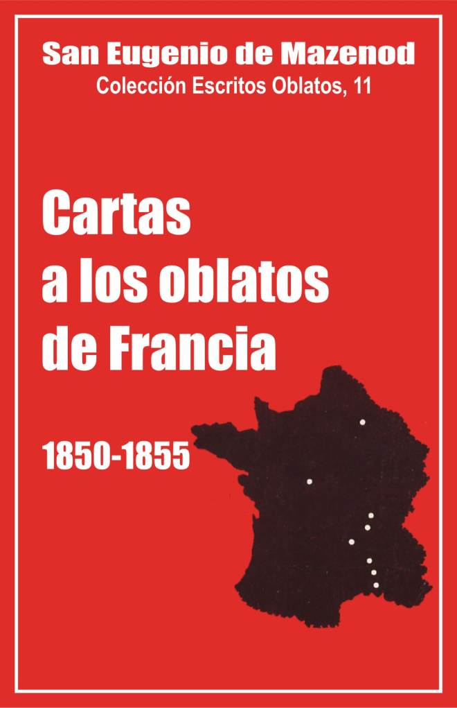

Palo Gordo
2019
Escritos Oblatos: - 01 - 02 - 03 - 04 - 05 - 06 - 07 - 08 - 09 - 10 - 11 - 12 - 13 - 14 - 15 - 16 - 17 - 18 - 19 - 20 - 21 - 22

SAN Eugenio DE MAZENOD
Colección: Escritos Oblatos, 11
Traducido del Francés por
Santiago Rebordinos omi
Postulación General O.M.I.
Vía Aurelia 290
Roma 1987
Palo Gordo
2019
1850 - 1851 - 1852 - 1853 - 1854 - 1855
I – Principales acontecimientos de la vida de la Congregación en 1850-1855
Dos series de acontecimientos marcan de manera especial la vida de la Congregación durante los años 1850-1855: las adiciones hechas a las Reglas por el Capítulo General de 1850 y el número impresionante de muertes y abandonos.
Adiciones a las Reglas en 1850 y nueva edición en 1853
Mons. de Mazenod habla raramente en las cartas de este período de modificaciones hechas a las Reglas. Sin embargo, una novedad iba a cambiar poco a poco la naturaleza de su correspondencia con los Oblatos y su modo de gobierno: la división de la Congregación en Provincias y Vicariatos de misiones [1]. Esta medida le quitaba la administración inmediata de las casas y provincias. Él explica, en su circular del 2 de agosto de 1853, de qué manera él entiende este cambio: "Lejos de aflojar los lazos que unen a todos los miembros del cuerpo con el jefe que los gobierna, esta división por provincias, por el contrario, facilita las relaciones haciendo más fácil una comunicación que se había vuelto imposible, a pesar de toda la buena voluntad y la dedicación más absoluta. Se encontrará en cada provincia o vicariato una autoridad suficiente para satisfacer en los casos ordinarios o más urgentes y la exactitud de las relaciones de los Provinciales y de los Vicarios con el Superior General le pondrá en situación de juzgar con conocimiento de causa en todo lo que interesa a su solicitud, y de interponer su autoridad suprema en todo lo que se refiere a las personas y a los asuntos de toda la Congregación. Hay que reconocerlo, los Provinciales y los Vicarios tendrán una gran responsabilidad en la situación intermedia en la que la Regla los coloca. El futuro de la Congregación está en gran parte en sus manos…" [2]
Según este texto, en adelante el Superior General debía relacionarse sobre todo con los Provinciales y los Vicarios; por su intermedio, desde ahora, se pondrá al corriente de los asuntos de cada provincia y de cada casa. No se ven sin embargo cambios importantes durante los años 1850-1855 en su correspondencia con los Oblatos de Francia. El presente volumen comprende 271 cartas dirigidas sobre todo, como en los años precedentes, a los asistentes generales, a los superiores y a los maestros de novicios: 33 son enviadas al P. Vincens, tercer asistente, provincial del Norte y superior de Ntra. Sra. de l’Osier, 27 al P. Carlos Bellon, cuarto asistente, provincial del Norte desde 1855 y superior del seminario mayor de Romans, 26 al P. Tempier, primer asistente, superior del seminario de Marsella y después del escolasticado de Montolivet desde 1854, 16 al P. Courtès, segundo asistente y superior de la casa de Aix, 15 al P. Richard, maestro de novicios, 11 al P. Fabre, ecónomo general y superior del seminario de Marsella desde 1854, etc. Este volumen recoge igualmente las cartas enviadas a otros 40 corresponsales. Se ve que, a pesar de las nuevas disposiciones, el Fundador intenta permanecer en relación con el mayor número posible de sus hijos. Los recuerda por otra parte frecuentemente. El 23 de enero de 1854, escribe al P. Dorey, nuevo superior en Nancy, que las modificaciones en las Reglas no cambian en nada las relaciones entre los Oblatos y el Superior General, quien es siempre: "el verdadero y único padre de toda la familia". Unos meses más tarde hace la misma recomendación al P. Soullier, nombrado superior de Limoges: "Aunque tus relaciones habituales tienen que ser con el provincial, no olvides escribirme varias veces durante el corriente año para darme cuenta directamente de las cosas y de las personas"[carta 1249]. El 20 de marzo de 1854 invita al P. de L’Hermite, vicario en Talence y predicador en la diócesis de Burdeos, a escribirle regularmente y en detalle; precisa también: "al contestarme, comienza tu carta en lo alto de la página. Ese espacio en blanco demasiado respetuoso que dejas es un robo que me haces".
Habituado durante mucho tiempo a intervenir inmediatamente en el gobierno de la Congregación, el Fundador olvida incluso a veces la existencia de los provinciales. Así, sin pasar por ellos, desplaza a los Padres Baret, Sumien, de L’Hermite y Dassy. Sus órdenes son entonces, como siempre, sin equívoco y urgentes. A comienzos del año 1855, por ejemplo, el P. de L’Hermite, enfermo en Burdeos, había tenido el permiso de ir a descansar con su familia en Clermont. El 24 de febrero, recibe la orden de ir a Ntra. Sra. de Cléry sin pasar por Burdeos: "Hay lazos trenzados incluso por la caridad, explica el Fundador, que es más fácil romper que desanudar. Nadie por otra parte puede molestarse porque se proceda a la voz de la obediencia…" El 21 de noviembre de 1855, obliga al P. Dassy a dejar momentáneamente su trabajo en Marsella para ir a predicar un retiro en Aix: "Hay que forzar la velas absolutamente, explica. Imposible volver atrás. Es necesario, es necesario, sí, es necesario con toda la fuerza del término que vayas a Aix…"
Si el Superior General se interesa por convocar regularmente su consejo y pide el parecer de sus asistentes, muy a menudo ausentes, no soporta que los sujetos contesten las decisiones tomadas, ni siquiera que ejerzan alguna presión indebida sobre las autoridades o se permitan críticas contra su administración. El 24 de septiembre de 1855, pide al P. Tempier que mande hacer algunas reparaciones en el obispado. Espera contestaciones ya que hay que desalojar a un empleado doméstico y molestar a otros colaboradores. Da, pues, órdenes precisas: "Toma este asunto a pechos, le dice. Quisiera que lo realizaras con prontitud. Todo lo que pido es que se me eviten molestias en cuanto sea posible. Sabes que cuando encuentro trabas no razonables, injustas, etc., tomo la cosa a lo vivo y eso me hace mal. Toca a los que me quieren ahorrarme esto". El 9 de noviembre siguiente escribe al superior de Ntra. Sra. de Talence que el P. Baret, enviado hacía poco a Burdeos, tiene que permanecer ahí: "Que no se vuelva sobre esto, sería inquietarme inútilmente". En la primavera del año 1853, los Padres de Ntra. Sra. de Talence escribieron una carta común para pedir el reemplazo del P. Dassy, cuyas exigencias puntillosas ya no soportaban. El Fundador accedió a su pedido, pero les reprochó enérgicamente su intervención: "Lo que acaba de ocurrir, escribe, no es un triunfo que habéis logrado sobre vuestro superior, al que creí deber llamar. Es una desgracia deplorable que podría tener las más tristes consecuencias para vosotros y para la Congregación. El desorden de una comunidad dividida, entregada a una especie de guerra intestina, ha quedado al descubierto. Nuestros enemigos triunfan, la Congregación está condenada. He ahí lo que resulta de la catástrofe ocasionada por vuestros desacuerdos… ¿Es que unos buenos religiosos de verdad, en lugar de entenderse y hacer una especie de complot, no habrían podido conjurar el mal en vez de agriarlo? ¿No había entre vosotros un motor y complacencias? Nunca deben escribirme cartas de esas con quejas colectivas…"
El P. Vincens, provincial, pasaba por ser uno de los mejores superiores de la Congregación: firmeza, paciencia, acogida de las quejas de los sujetos, etc. En el verano de 1853, pone con toda franqueza y sencillez al Fundador al corriente de quejas escuchadas sobre la administración de la Congregación. Se trataba de un tema sensible que solo los amigos y confidentes podían permitirse tocar. El Provincial recibe como respuesta una de las cartas más duras de este volumen: "Contra lo que me alzo con fuerza, dice, es contra el ridículo descontento de algunos espíritus malpensados que tú temes para el momento de mi muerte. Me dan lástima con su pretensión de juzgar las conveniencias y las necesidades. Les toca enseñarnos a gobernar una Congregación, ellos que no saben conducirse a sí mismos… La Congregación, estate bien convencido, mi buen Padre Vincens, no tiene nada que ganar con hombres de esa clase. En cuanto a mí, que no podría sin bromear invocar mi experiencia, ni desconocer tampoco la gracia de estado que Dios concede a quienes ha colocado en mi posición, sostengo que no hay que gemir sobre el modo como es gobernada la Congregación, pero sí hay que arrepentirse mucho por haber admitido a sujetos que son, por sus imperfecciones irreformables, verdaderas clavijas que traban por completo las ruedas de mi administración… Es necesario que se acostumbren a respetar a la autoridad hasta el punto de creer que obra bien aun cuando no se explique su conducta. Sobre este punto nunca fallaré y estoy resuelto a mantener a cada uno en su lugar".
Muertes y salidas de la Congregación
La Congregación contaba con 298 Oblatos durante el Capítulo general de 1856 [3]. Solo se constata un crecimiento de 75 miembros en seis años, mientras que de 1843 a 1850 el personal había pasado de 68 a 223. Los noviciados de Ntra. Sra. de l’Osier, de Inglaterra y de Canadá proporcionaron cerca de 150 nuevos profesos, pero el período que va de 1850 a 1856 permanecerá célebre por un triste record: 27 muertos y 50 salidas, mientras que solo había habido 22 muertos y 62 salidas de 1818 a 1850.
Mons. de Mazenod solo habla de los difuntos en unas quince cartas. Su conocimiento más superficial de muchos de los Padres y Hermanos, por otra parte alejados de él, y sus múltiples ocupaciones y preocupaciones de toda clase, contribuyen a mantenerlo menos sensible a la muerte de sus hijos. Su dolor explota sin embargo con motivo de la muerte de algunos Padres más conocidos de él, como el P. Baudrand, superior de Texas, y el P. Dorey, superior de Nancy. Poco después de la muerte del P. Baudrand, el primero de octubre de 1853, el Fundador termina con estas palabras una carta al P. Gondrand a quien niega la dispensa de los votos: "Estoy desde hace algún tiempo tan afligido, tan afectado, mi corazón está bajo tanta presión, que tengo que hacerme violencia para abordar algunos temas que no hacen más que agravar mi mal". La muerte del P. Dorey coincide en 1855 con una grave enfermedad del P. Casimiro Aubert. En una carta al P. Conrard en Ntra. Sra. de Sion, Mons. de Mazenod habla entonces de un "mar de dolor" y concluye humildemente: "estoy por otra parte tan afectado que no podría consolarte". Algunos meses más tarde, al escribir al P. Jeanmaire a Nancy, recuerda la muerte, en unos meses, de 6 Oblatos y exclama: "la pérdida de los nuestros es la única cruz insoportable para mi corazón. Son llagas siempre sangrantes que solo curarán con mi propia muerte".
Si este gran número de muertes se explica por una serie de circunstancias fortuitas y, en último análisis, por la voluntad insondable de Dios, se puede encontrar por el contrario en los proyectos y las exigencias del Fundador el motivo de la salida de numerosos Oblatos. Sobre la perfección de la vida religiosa que pide a sus hijos como condición indispensable para permanecer en la Congregación, no se había explicado nunca de una manera tan vigorosa como en las cartas de 1854-1855. "Hay que confesar, escribe por ejemplo al P. Vincens el 31 de agosto de 1854, que tenemos hombres que carecen de las primeras nociones de las virtudes, digo más, de los deberes de la vida religiosa. ¿Dónde se ha visto que hay que pactar continuamente con los sujetos para no contrariar sus caprichos o sus repugnancias? Es hora que este desgraciado sistema termine. Sea cual sea la utilidad de los sujetos, bajo ciertos aspectos, encuentro que hay un verdadero peligro para el futuro de la Congregación en mantenerlos en esas condiciones… Hay que tomar o dejar…" El 18 de octubre de 1855, al escribir al P. Bellon, Provincial del Norte, nombra cinco Padres que no caminan según sus deberes en la provincia, en particular en l’Osier donde el P. Vandenberghe, joven superior, no logra imponerse. "Voy a recomendarle, añade el Fundador, mantener su autoridad de superior que no debe ceder ante ninguno de los sujetos que habitan en su casa. Aquel al que no le convenga solo tiene que retirarse. Será un alivio". El 8 de noviembre siguiente anuncia también al P. Bellon que el P. Piot ha sido dispensado de sus votos y el P. Sigaud lo será pronto; termina con estas palabras: "no nos detendremos ahí para purgar del todo la Congregación de los humores pecantes que la desgarran". El mismo día escribe al P.Baret en Burdeos: "Tratad todos de reparar las heridas que tan indignos sujetos hacen a vuestra Madre, redoblando el celo y la regularidad. Poco a poco todo el que no es digno de vosotros se pone en situación de ser expulsado, como un humor impuro del cual hay que purgar al cuerpo. Solo nos dejan un pesar, el haber tenido demasiada paciencia, con la esperanza de una enmienda que la experiencia nos prueba ser casi imposible de obtener" [4]
Ciertamente no es con alegría de corazón como el Padre veía partir a sus hijos. A los que pedían la dispensa de votos a fin de entrar en el clero secular para ayudar financieramente a su familia, Mons. de Mazenod proponía más bien acomodos, permiso de trabajar en parroquia y guardar momentáneamente sus ingresos. Es lo que hizo con el P. Gondrand en 1853. Motivó su decisión con estas palabras: "No puedo hacerme un juego de lo que es más sagrado en la religión, los votos y juramentos". La misma medida y el mismo motivo con el P. Pianelli: "romper tus lazos sagrados, jamás prestaría mi ministerio para tal profanación, jamás seré cómplice de semejante asesinato espiritual".
En presencia de malos religiosos, tenaces en su desobediencia y sus desvíos, el Fundador debió sin embargo conceder dispensas o más a menudo expulsar sin más a sujetos culpables, arrojando así sobre ellos toda la responsabilidad de esa medida extrema. Fue, no obstante, la muerte de sus hijos la más importante fuente de sus penas. Repetía sin cesar: "¡Dios mío! ¡Cuántas penas, cuántos pesares!" "Estoy afligido hasta el fondo de mi alma"; "llaga… profunda en mi corazón"; "pruebas que hieren hasta hacer sangre"; "puñaladas" [5].
II – Principales temas desarrollados en estas cartas
El tiempo dejado al Superior General, ya liberado de los pequeños detalles de la administración, y las proporciones tomadas por la sangría de la Congregación para "purgarla… de los humores pecantes", explican por qué el Fundador concentra su atención en dos temas fundamentales: la formación religiosa de los novicios, de los escolásticos y de los Padres jóvenes, y la regularidad de los Oblatos bajo la inmediata responsabilidad de los superiores locales.
Interés por el reclutamiento y la formación de los jóvenes
A medida que la Congregación se extiende, crece igualmente en el Fundador el interés por el reclutamiento, porque, escribe al P. Richard el 18 de enero de 1852: "tenemos una necesidad inmensa de alimentar nuestra armada". En las cartas que siguen se le ve enviar él mismo a los candidatos al noviciado, invitar a los Padres a interesarse por las vocaciones, pedir oraciones con esta intención, permitir a escolásticos y a jóvenes misioneros visitar los seminarios, encargar al P. Vincens hacer una gira de reclutamiento, proponer finalmente al P. Tamburini ser un despertador de vocaciones en el seminario menor de Vico; en esta oportunidad el Fundador hace una confidencia preciosa: "Solo tenía 12 años, escribe, cuando Dios hizo nacer en mi corazón los primeros y muy eficaces deseos de dedicarme a las misiones".
Las más bellas cartas de este volumen van dirigidas a los maestros de los novicios de l’Osier, los Padres Richard y Vandenberghe y a los moderadores de los escolásticos en Marsella o en Ntra. Sra. de Lumières, los Padres Martinet y Mouchette. Alrededor de sesenta cartas tratan del noviciado, 25 del escolasticado y una docena de la formación de los Padres jóvenes.
Se podría extraer de estos escritos un tratado sobre la formación religiosa propuesta por el Fundador a su familia [6]. La sabiduría y la experiencia del septuagenario aparecen en sus juiciosos consejos sobre la grandeza y la importancia del cargo de maestro de novicios, la paciencia que deben tener los formadores, la confianza en Dios que les permite no inquietarse si alguna vez no sienten en sí mismos todo el fervor que tienen que transmitir a los otros, ya que "el buen Dios no quiere siempre alimentarnos con dulzuras", la necesidad para el maestro de novicios, vistas las necesidades de la Congregación, de ensanchar "las puertas y también las entrañas de la caridad, para que todos esos sujetos que la Providencia nos envía encuentren entre nosotros lo que vienen a buscar aquí".
Varios sacerdotes entraron entonces al noviciado. Los jóvenes maestros de novicios no sabían demasiado cómo actuar con ellos. El Fundador se muestra muy exigente con esas "piezas usadas" que hay que "moldear". "Que se quebranten, que se fundan, que se hagan verdaderamente hombres nuevos", escribe al P. Vandenberghe el 10 de marzo de 1853. Esto no quita nada a los derechos de la delicadeza y del saber vivir. Al anunciar, por ejemplo, el 17 de septiembre de 1851, que el ministro anglicano Crawley entraría al noviciado, Mons. de Mazenod hace las recomendaciones siguientes al maestro de novicios: "En los comienzos habrá que tener muchas atenciones; es esencial que se le dé té cuando le parezca bien y aun todos los días, que sean prevenidos y buenos con él…"
Sin embargo, de parte de todos, novicios y escolásticos, "esperanza de nuestro futuro", "de quienes depende la suerte de la Congregación", el Fundador exige la virtud y la regularidad más que el talento y las cualidades puramente exteriores", el desapego de los parientes, el espíritu de mortificación, el amor a la Congregación y a su Fundador, la caridad fraterna y la vida común que "tiene un vigor estricto entre nosotros", finalmente una "educación varonil, religiosa, pero paternal. He ahí, confía al P. Mouchette, el método que yo he seguido en los comienzos, cuando estaba encargado yo mismo de formar a nuestros sujetos".
El Capítulo General de 1850 había decidido, el 28 de agosto, imponer a los Padres jóvenes dos años de pastoral en una casa de estudio. Es lo que se llamó el "curso mayor". Se estableció en el Calvario en 1851, bajo la dirección del P. Vincens, con el fin de formar a los Padres jóvenes en la regularidad, en la vida religiosa, en el estudio y la composición literaria, al mismo tiempo que se ejercitaban en la predicación en compañía de buenos misioneros. El Fundador solo habla de ese "curso mayor" en las cartas de los años 1850-1853. Pocos Padres lo frecuentaron, al parecer, desde 1853, bajo la dirección del P. Aubert [7]. En el Capítulo General de 1856, visto el "débil éxito que dicho curso ha obtenido", se lee en las actas, se adoptó el proyecto "de un solo año de estudios propios para formar a los misioneros", después de los tres años de teología.
Mantenimiento de la regularidad bajo la responsabilidad de los superiores
En unas 80 cartas el Fundador habla de la regularidad. La considera como la principal condición de la vida de fervor y de la práctica de las virtudes. "¿Son los observantes fieles de la Regla, escribe en la carta circular del 2 de agosto de 1853, los hombres humildes, caritativos, obedientes, mortificados, los que dejan el arado y abandonan su vocación? ¡No ciertamente! Son los hombres imperfectos, descuidados, sensuales, inmortificados, esos hombres para quienes el código de su Regla es un libro sellado, en el que no saben ya leer, del cual han olvidado los consejos y las prescripciones; esos hombres que, de imperfección en imperfección, se ciegan sobre sus principales deberes…"
Mons. de Mazenod ha considerado siempre la corrección fraterna como uno de los principales deberes de la caridad. Como hombre franco y sincero, que habla a hombres y religiosos, pone en práctica sin cesar esta virtud, para corregir los menores desórdenes. Los ejemplos abundan. Dassy calentará una sola sala común en Nancy por espíritu de pobreza; Santoni, maestro de novicios, no hubiera debido hacer su retiro en la Cartuja, él que con la palabra y el ejemplo debe enseñar a los novicios que los Oblatos están obligados a hacer su retiro en las casas oblatas; los Padres de l’Osier encuentran demasiadas ocasiones para preparar buenas comidas y acercarse así a las costumbres del clero de esa región que banquetea con mucho gusto; Soumier debe terminar con su "causticidad" y su mal espíritu; los profesores del seminario mayor, como todos los Oblatos, pasarán sus vacaciones en el seminario ya que "somos hombres de comunidad y no corredores del camino real". Que el P.Audruger se cure de su "incontinencia de lengua", que el P. Cyr Chauvet y sus hermanos hagan penitencia y ayunen durante la cuaresma si no se quiere ver a los Oblatos "caer en la decrepitud de las viejas Ordenes", que entre los escolásticos la regularidad se vuelva una "segunda naturaleza", para que los Oblatos no queden "atrás de todos esos cuerpos religiosos que se restauran en Francia con todo el fervor de su espíritu primitivo". Los Padres de Ntra. Sra. de Talence no debían escribir una carta común contra su superior, el P. Fayette vivirá en la oración y el estudio en Ntra. Sra. de Cléry para reparar las "brechas que su economato en l’Osier causó a su piedad", el P. Baret y sus hermanos de Burdeos vivirán más regularmente para "reparar las heridas que tantos indignos sujetos hacen a su madre", etc.
Incumbe particularmente a los superiores locales la responsabilidad de mantener la regularidad. Esta obligación está subrayada enérgicamente en la circular del 2 de agosto de 1853: "Tengo ante los ojos, escribe en el séptimo párrafo, los diversos avisos que san Alfonso de Ligorio daba a sus religiosos en los primeros tiempos de su Instituto. No me atrevería a reproducir esos avisos; son aterradores, son la expresión del juicio que él hacía sobre la inobservancia de las Reglas… El santo es sobre todo inexorable para con los superiores locales que no ayudan a la santa observancia de la Regla; los hace responsables de todo el mal que resulta de su debilidad y no teme amenazarlos con acusarlos ante el tribunal de Dios…" Esta enseñanza general de una circular no reemplaza las cartas individuales. El Fundador lo sabe bien e interviene en cada ocasión, encontrando para cada uno el reproche o el consejo que conviene. Al P. Lagier, superior del seminario mayor de Fréjus, demasiado bueno para él mismo, le dice: "Evitemos, mi querido y buen Padre, escrupulosamente, la desedificación. Es uno de los grandes deberes de aquellos que están a la cabeza de los otros". Al P. Vanderberghe, superior en l’Osier de una comunidad en la que varios Padres y Hermanos son de más edad que él, el Fundador le dice: "Sé superior sin arrogancia, pero con dignidad, y que cada uno esté en su lugar, la Regla en la mano". Al P. Soullier, nombrado superior de Nancy en 1855, escribe: "Tengo plena confianza de que tendrás éxito… Para ello tendrás que obrar siempre bajo la impresión del Espíritu Santo ante Dios, no teniendo en cuenta más que el bien de los intereses que te han sido confiados y siempre conforme al espíritu, y aun a la letra de la Regla de la que tienes que tratar de no apartarte jamás. Nadie tendrá nada que decir ni quejarse cuando te guíes por el código que todos deben conocer y observar". Es sobre todo en una carta al P. Bellon en 1855, donde el Fundador, al quejarse de varios "sujetos tan singulares", acusa a los superiores: "La desgracia es que todos esos sujetos que nos molestan han crecido bajo superiores locales incapaces de darles una buena dirección. Acuso a los superiores locales de ser la causa de todas nuestras miserias".
¿Por qué esas llamadas incesantes a la regularidad? El Fundador se explica en la carta circular del 2 de agosto de 1853: la regularidad mantiene el fervor y alimenta las virtudes que "arrojando un resplandor más vivo en la Iglesia, aumentan la edificación de los fieles y contribuyen más a la conversión de los pecadores evangelizados" por los Oblatos. Destaca esas ventajas en toda ocasión: con eso "se distinguen del común de los sacerdotes", siendo fieles a las Reglas, Dios "nos enviará imitadores" y seremos fuertes "contra el infierno al que tenemos que combatir", y finalmente, "tenemos que decírnoslo,…solo podemos agradar a Dios de ese modo".
Informarse de que una comunidad o un Oblato vivía bien en la regularidad, eso era lo que sobre todo procuraba la alegría del Fundador. Escribe al P. Bellon, el primero de julio de 1850: "qué dicha mayor puedo gustar en este mundo que la de ver marchar por el camino de su vocación a aquellos que Dios me ha dado", o también al P. Berne: "no tengo mayor dicha que la de saber por ti mismo que sirves lealmente al buen Dios, que cumples dignamente tu cargo y que te sientes feliz".
Otros temas: fundaciones, seminarios, misiones populares y misiones extranjeras
A pesar de la atención centrada sobre todo en la formación de los jóvenes y en el mantenimiento de la regularidad, el Fundador no ha cesado de ocuparse de la Congregación en todas las áreas de su misión y de su vida. En 1850-1855 se abrieron siete nuevas residencias en Francia. Tres en la Provincia del Midi: Ntra. Sra. de la Guardia en Marsella en 1850, el seminario mayor de Fréjus en 1851 y Montolivet en 1854; cuatro en la Provincia del Norte: Ntra. Sra. de Talence en Burdeos en 1851-1853, el seminario mayor de Romans en 1853, Ntra. Sra. de Sion en 1853-1854 y Ntra. Sra. de Cléry en Orleans en 1854. En unas treinta cartas trata de esas fundaciones o de otros proyectos, como el de Bélgica y los de Córcega, en particular en Bonifacio donde habría que reparar un viejo convento: "¡Ah! mi querido, escribe al P. Luigi el 17 de marzo de 1853, tú no sabes lo que es tocar la llana, ¡Dios nos preserve de arrojarnos en ese precipicio!".
En 1853-1854, el Fundador rechaza varios ofrecimientos de fundación, por falta de buenos sujetos y de hombres suficientemente maduros para ser superiores. Se quejaba al P. Aubert, el 26 de julio de 1853: "Si todos los nuestros fueran lo que deben ser, andaríamos bien, pero cuando hay que luchar contra las imperfecciones, los caprichos, la falta de virtud, hay motivo para perder la cabeza, o por lo menos para afligirse mucho". Para completar sus comunidades, casi todos los superiores pedían un misionero de edad y con experiencia. Qué hacer con los Padres jóvenes, exclamó el Fundador al recibir un pedido de esa índole de parte del P. Ciamin, superior de Limoges: "no puedo tirarlos al mar porque son jóvenes". Pero, en fin, se resignó y no abrió ninguna casa en 1855: "Solo formamos aún una pequeña familia demasiado extendida quizás para sus fuerzas, confía al P. Dassy, el 11 de febrero de 1854, por eso he sido inexorable con las peticiones que me han hecho".
El Capítulo de 1850 agregó a las reglas un capítulo sobre los seminarios mayores. Para que esos textos no quedaran en letra muerta, el Fundador quiso, parece, lanzar más Oblatos a ese ministerio, previsto desde la fundación de la Congregación. Aceptó los seminarios mayores de Fréjus en 1851 y de Romans en 1853. Unas quince cartas, enviadas a los directores y a los superiores, intentan poner a punto el espíritu que debe animar a los directores, la necesidad de ser modelos vivientes de vida sacerdotal, el sentido de ese ministerio oblato, etc. "Así es como, escribe al P. Berne el 5 de febrero de 1854, cada uno en su área colabora entre nosotros a extender el Reino de Jesucristo". Durante el verano de 1854 reunió a los superiores oblatos de los seminarios de Marsella, de Ajaccio, de Fréjus y de Romans, para discutir sobre los manuales y la enseñanza...
En otra treintena de cartas el Fundador habla de predicación y de misiones populares para animar a los Padres que se entregan a ellas, recordando el fin que es "convertir" y "evangelizar", y los destinatarios, es decir, los "humildes", los "pobres", "las regiones abandonadas", etc. Insiste también en el deber de escribir relaciones de las misiones predicadas: "Que no os pase a vosotros como a nosotros, escribe al P. de L’Hermitte el 20 de marzo de 1854, hemos dejado sepultar en el olvido los prodigios de gracias comparables a cuanto se lee de más bello en los primeros tiempos del cristianismo".
El interés por las misiones extranjeras aparece también un poco por todas partes en estas cartas a los Padres de Francia, en particular con motivo de la muerte de misioneros, de la consagración episcopal de Mons. Allard y de Mons. Taché y sobre todo, cada año, en el momento de la partida de los misioneros: "Nosotros abrazamos la tierra entera por nuestros apóstoles cuyo celo y dedicación me arrancan lágrimas de alegría y de ternura", escribe al P. Baret el 24 de enero de 1852"
III – Confidencias de Mons. de Mazenod
Nada extraño que Mons. de Mazenod anciano hable de sí mismo. En estas páginas, dos reflexiones vuelven constantemente: su buena salud a pesar de las jornadas extenuantes y su amor a los Oblatos.
Trabajo abrumador
Unas cuarenta cartas comienzan con excusas por haber tardado en contestar a las cartas recibidas. Explica siempre esos atrasos por la variedad de ocupaciones que acaparan todos los instantes de sus jornadas: "Jamás te podrías hacer una idea de la esclavitud a la que estoy reducido, escribe al P. Richard, el 18 de enero de 1852. Tengo que pasar de una ocupación forzada a otra"; todas las casas de Francia "me hacen una guerra sin cuartel", sus jornadas se desarrollan sin que pueda "disponer de un cuarto de hora a voluntad". El 17 de enero de 1851, termina así una carta al P. Baret: "Adiós, querido hijo, no doy para más, me asedian, no tiraré la soga tras del caldero, sino mi pluma en el escritorio para no tirarla a la nariz de la gente". Al P. Vincens que le reprocha no haber contestado a una carta importante, contesta con estas palabras: "Jóvenes de buena voluntad, no llegaréis a causarme escrúpulos, por más afligido que pueda estar por no poder hacer más. Cuando uno se levanta a las cinco de la mañana y se acuesta después de media noche, sin permitirse un paseo de media hora, cuando uno está de la mañana a la tarde al servicio de todos y pasa en su escritorio, pluma en ristre, todo el tiempo que la exigencia o la indiscreción deja libre, uno no puede reprocharse no haber cumplido su deber. El excedente que podría desearse es imposible".
Todo ese tiempo está consagrado a la diócesis y a la Congregación. La preocupación pastoral de sus diocesanos no está ausente, en efecto, de sus cartas a los Oblatos, en particular cuando escribe a los Padres Tempier y Fabre. En unas cincuenta cartas, habla de la construcción de la catedral y de diversas iglesias, de las comunidades religiosas, de las ordenaciones, de las visitas pastorales con ceremonias de confirmación de más de 1000 niños, de las fatigas y los peligros incurridos durante la epidemia de cólera del verano de 1854, y sobre todo de los visitantes que recibe en gran número cuando trabaja en el obispado. El 13 de junio de 1851 se confía al P. Vincens: "la cabeza me da vueltas por la cantidad que he tenido que recibir hoy, por lo menos 25 personas se han sucedido por asuntos diversos". El 11 de enero de 1854 explica al P. Bellon qué faena le espera al comienzo de cada año: "heme aquí metido, dice, con las visitas del año nuevo, tendré que recibir a 200 personas de entre las 2000 que quizás han venido a verme el comienzo de año. Es uno de los tormentos de mi situación".
Se ocupa de los Oblatos con su correspondencia y durante algunos viajes. En 1850-1855 hace tres viajes largos: el primero a Inglaterra, durante los meses de julio-agosto de 1850, pasando por Alemania y Bélgica, los otros dos a Roma, en enero-marzo de 1851 para la aprobación de las adiciones a las Reglas y en diciembre de 1854 para participar en la definición del dogma de la Inmaculada Concepción. Visita las casas oblatas de Córcega en octubre de 1851 y la mayor parte de las casas de Francia en septiembre de 1850, noviembre de 1851, junio de 1853, y agosto de 1855.
Su correspondencia con los Oblatos ocupa todos sus momentos libres y algunas jornadas pasadas a escondidas en el seminario o en la casa de campo de San Luis. A la caída de una de sus jornadas, escribe al P. Mouchette: "Ya no puedo retener la pluma por tanto como he escrito". Su escritorio, "verdadero abismo", está siempre lleno de cartas. Cuarenta y cinco de ellas esperan una respuesta en julio de 1853. El 25 de mayo de 1855, al volver de Aix, escribe al P. Courtès: "Rápido me he ocultado en el seminario. Ayer al llegar he encontrado un enorme montón de cartas que junto con las que ya esperaban en mi escritorio exigían ocho días de retiro absoluto…"
La salud se mantiene buena a pesar de estos trabajos incesantes. El mismo Fundador se extraña de ello. Hace una reflexión al respecto en una carta al P. Jeanmaire, el 25 de mayo de 1855: "Felizmente que el proverbio conocido la hoja gasta la funda no ocurre conmigo, pero ¿qué basta para que esta hermosa apariencia se desvanezca?", "Seguiremos… mientras esto dure", había escrito en el mismo sentido al P. Vincens el 4 de septiembre de 1853. Su buena salud, se ve, le permitía trabajar mucho, pero no le dejaba ilusiones sobre su edad y su preparación con vistas al retiro eterno.
Ternura paternal
Lo que más llama la atención en este volumen es la variedad y la fuerza de las expresiones con las que el Fundador expresa y reexpresa su afecto para con sus hijos oblatos, en por lo menos 60 cartas.
Buscando nuevas cartas a la familia en los archivos de la Congregación para la evangelización de los pueblos, el P. Pablo Sion hacía la reflexión siguiente, hace algunos años: aunque no se conociera la caligrafía del Fundador, se reconocerían sus cartas por un carácter que las distingue: el interés y la afabilidad para con sus corresponsales. El corazón, el afecto aparecen por todas partes, aun en las cartas de negocios donde trata los problemas más espinosos.
Estos rasgos característicos se destacan aún más en las cartas a los Oblatos. Durante los años que he necesitado para preparar la edición de las cartas del Fundador a los Oblatos, he tenido la ventaja, en mi trabajo en la Congregación para las causas de los Santos, de leer los escritos de una decena de fundadores o fundadoras de Congregaciones; en ninguna otra parte he encontrado algo tan caluroso, tan paternal y afectuoso como en las cartas de Mons. de Mazenod. Los ejemplos más típicos y más numerosos se encuentran en las cartas de este volumen de los años 1850-1855. Sin duda el obispo de Marsella sufría por su aislamiento en el obispado; le hubiera gustado vivir en comunidad. No obstante, dos acontecimientos dolorosos para su corazón explican en parte esta sensibilidad que llama la atención: la muerte de su madre, en la noche del 17 al 18 de diciembre de 1851 y la de su cuñado el marqués Armando de Boisgelin, el 29 de junio de 1853. No teniendo ya a su madre, mujer muy sensible y afectuosa a la que él estaba muy apegado, Mons. de Mazenod desahoga en adelante su corazón en el de sus hijos muy amados. Toda señal de agradecimiento y de afecto le afecta mucho. Su sensibilidad brilla entonces y su pluma expresa con las expresiones más vivas los sentimientos de ternura paternal, hasta el punto, por ejemplo, de tener que rasgar una carta demasiado afectuosa y tierna escrita al P. Baret. Citaremos aquí, a guisa de conclusión, algunas de esas expresiones; al lector le gustará descubrir por sí mismo las otras, recorriendo las páginas de este volumen: "Mi gran imperfección es amar apasionadamente a los hijos que Dios me ha dado. No hay amor de madre que llegue a eso"; "no sé cómo mi corazón es suficiente para el afecto que alimenta para con todos vosotros. Es un prodigio que brota de un atributo de Dios… No hay sobre la tierra una creatura a la que Dios haya concedido el favor de amar tan tiernamente, con tanta fuerza y tanta constancia a un número tan grande de personas. No se trata aquí simplemente de la caridad, no, es un sentimiento maternal que abraza a cada uno de vosotros, sin perjuicio de los otros…"; •imposible haceros una idea de hasta qué punto os ama este corazón"; "vivo solo por el corazón"; " siento necesidad de rodearme de todos aquellos a los que amo"; "te abrazo con toda la ternura de mi corazón paternal, sabes cuánto te ama"; quisiera, mi querido hijo, que mis manos tuvieran la facultad de responder a la energía de mi corazón. No me vería reducido a escribir una carta tras otra y retrasar así la expresión de mi afecto para con todos aquellos a los que amo tan tiernamente y que viven juntos en este verdadero hogar de amor paternal. Pero cómo alcanzar con una sola pluma…".
Desde el Quirinal en Roma, Mons. de Mazenod escribe al P. Mouchette, el 2 de diciembre de 1854, una carta preciosa, en la que traza un retrato exacto de lo que son los Oblatos, de lo que los distingue: "hombres de Dios", "cuyo ministerio es la continuación del ministerio apostólico", "santos" que "deben hacer milagros", hermanos que viven "todos del espíritu de familia que tiene que existir entre nosotros. He visto muchas órdenes religiosas, estoy en relación muy íntima con las más regulares. Pues bien, he reconocido entre ellos, independientemente de sus virtudes, un gran espíritu de cuerpo; pero ese amor más que paternal del jefe para con los miembros de la familia y esa correspondencia cordial de los miembros para con su jefe que establecen entre ellos relaciones que parten del corazón, y que forman entre nosotros verdaderos lazos de familia del padre con los hijos y de los hijos con el padre, eso no lo he encontrado en ninguna parte. Lo he agradecido siempre a Dios como un don particular que se ha dignado concederme; pues es el temple del corazón que me ha dado; esta expansión de amor que me es propia que se extiende a cada uno de ellos sin detrimento para los otros, como ocurre, si me atrevo a decirlo, con el amor de Dios para con los hombres. Digo que es este sentimiento, que reconozco viene de Aquel que es la fuente de toda caridad, lo que ha provocado en los corazones de mis hijos esa reciprocidad de amor que forma el carácter distintivo de nuestra muy amada familia. Que esto nos ayude mutuamente a gustar más el encanto de nuestra vocación, que todo se oriente a Dios para su mayor gloria. Es el deseo más ardiente de mi corazón".
¡Haga el cielo que la lectura de las magníficas cartas de este volumen ayude a cada Oblato a amar más a su familia religiosa y a vivir más intensamente la caridad fraterna, para realizar así "el deseo más ardiente" del corazón de este padre que ha amado tanto a sus hijos, los Oblatos de María Inmaculada!
Yvon Beaudoin
1032. Al P. Vincens, en Ntra. Sra. de l’Osier
Recomendación de un sacerdote y de un subdiácono que entran al noviciado. Visitantes en Marsella.
L.J.C. et M.I.
Marsella, 11 de enero de 1950.
Querido P. Vincens, te envío al Sr. abate Delabrèque, que me ha sido recomendado por el Sr. Obispo de Argelia y por nuestros Padres de Blida. Se presenta al noviciado lleno de resoluciones para lograr éxito. Mons. de Argelia me dice en su carta que "el Sr. Delabrèque logrará infaliblemente en una Congregación ser a la vez un santo y hábil misionero". Quedarás encantado por sus buenos modales y su conversación. Me decía que nunca ha abandonado la sotana desde que la tomó y que no ha estado en ningún lugar donde su sotana no pudiera entrar.
Estoy todavía muy apretado para entrar en algunos detalles sobre tus anteriores cartas. Todo lo que puedo decirte es que Chaine no se ha dignado escribirme una carta de excusa para obtener el perdón por el escándalo que ha dado con su desobediencia.
El P. Burfin me anuncia la partida de un subdiácono de Limoges para el noviciado [8], el obispo de Limoges [Mons. B. Buissas] ha querido que se me informara de ello. Agradezco a Dios las gracias que Él concede a nuestro noviciado, la carta del P. Santoni era muy satisfactoria. Te informaré por mi parte de que tres de los nuestros van a hacer su profesión.
Termino de prisa, saludándote afectuosamente. Tengo en mi casa a Mons. de Nancy. Había tenido algunos días antes a Mons. de Vancouver y a Mons. de Buffalo [9]. Este último abre un establecimiento de los nuestros en su interesante diócesis. Nuestros ingleses se han establecido en Liverpool, donde harán mucho bien y en condiciones muy ventajosas.
Bendigo a todos vuestros Padres y Hermanos. Adiós.
† C. J. E., Obispo de Marsella.
1033. Al P. Dassy, en Nancy.
Ocupaciones de Mons. de Mazenod. Hacer estudiar la teología al P. Depetro.
Marsella, 26 de enero de 1850.
Querido P. Dassy, me sentiría avergonzado por mi largo silencio si me costara confesar mi impotencia para sostener la carga que se me impone muy injustamente. Nunca se ha visto que un Superior General que tiene correspondencia en las cuatro partes del mundo no tenga ni un secretario para contestar a las innumerables cartas que recibe diariamente. Más aún cuando, como ocurre a menudo, hay que guardar copia de cierto número de cartas, según la importancia de los temas de que tratan; pues mira ¿lo creerás? Soy yo mismo quien tiene que preocuparse de esto. Y como no estoy dispensado por ello de cumplir las funciones de mi cargo episcopal, de presidir todos los ejercicios un poco solemnes de los diversos y numerosos establecimientos que enriquecen nuestra ciudad , de visitar los enfermos varias veces por semana para administrarles el sacramento de la Confirmación, de recibir diariamente a todos los que tienen que ver conmigo, etc., etc., por más que me levante temprano, celebre la misa antes del amanecer, y no me acueste nunca antes de las once y media o las doce, no termino mis asuntos, y te explicarás con ello cómo ocurre que he tardado tanto en escribirte, aunque me he propuesto cien veces hacerlo.
Me has consolado diciéndome que el P. Depetro hace todos los esfuerzos para resarcirte de las penas que te había causado. Confieso que no puedo decidirme aún a presentarle para que le den las licencias. Temo ante todo que no sepa bastante la teología, que nunca ha estudiado bien. Temo que no comprenda bastante la extensión y la importancia de sus deberes. Él les daba poca importancia cuando era un simple oblato. Me pregunto a veces si tiene una fe bastante firme y bastante esclarecida. Dudaría de ello, cuando repaso su vida. Su conducta, desde que está en Nancy, no es como para tranquilizarme. Pongámoslo a prueba todavía un poco. Sin embargo no me opondría a que pueda escucharos en confesión, a tì o al P. Dorey, cuando os encontréis solos con él. No descuidéis hacerle repasar poco a poco la teología al P. Depetro, la aprendió mal; tengo motivo para creer que no conoce la naturaleza y la gravedad del pecado, etc.
1034. [Al P. Soumien, en Aix]
El P. Soumien puede ir a Marsella a hacer el retiro para su oblación.
L.J.C. et M.I.
Marsella, 21 de febrero de 1850.
Querido P. Soumien, no me opongo a que vengas a hacer tus votos a Marsella si crees tener necesidad de hablar conmigo antes de renovar la consagración que has hecho de ti a Dios [10]. Una sola cosa me causa pena, es que la víspera de una reparación tan santa experimentes otros sentimientos que los del más vivo reconocimiento y de la alegría más sentida. No puedo atribuir tu perplejidad más que a las sugestiones del espíritu maligno que ya te había aconsejado mal, con gran detrimento de tu alma, en otras circunstancias de tu vida. Pero no quiero anticipar sobre los consejos que te propones pedirme. Si tienes que entrevistarte conmigo, llega ocho días antes de la fecha fijada para tu profesión a fin de poder prepararte a ella, si tienes que hacerla, con un buen retiro.
Te saludo afectuosamente.
† C. J. Eugenio, Obispo de Marsella.
1035. [Al P. Courtès, en Aix] [11]
Decepción y sufrimientos de los que trabajan por la salvación de los hombres.
[Marsella], 1º de marzo de 1850.
Tendríamos muchas otras cosas que decirnos que no pueden escribirse. ¡Dios mío, cuántas penas, cuántos pesares! No estamos creados para vivir para nosotros, y cuando Dios nos llama para trabajar, hay que responder: Heme aquí, de otro modo cabría lamentar haber dejado el descanso, haber renunciado a la independencia y haber tenido que ocuparse de cosas diferentes de la propia salvación, en el aislamiento de todas las otras creaturas fuera de las que te están confiadas, que viven de tu propio espíritu y en cierto modo de tu propia vida. En todo caso, siempre estará permitido sentirse estomagado al encontrar a cada paso tantas decepciones, tantos descontentos, tantas indignidades que te hacen saltar el corazón, muy propias por lo menos para entristecerte, más aún, para arrojarte a una especie de desolación. Adiós.
1036. [Al P. Courtès, en Aix]
Envío del P. Soumien a Aix, vigilar la regularidad.
Marsella, 9 de marzo de 1850.
Querido Courtès, como de costumbre tengo varias personas en mi oficina en el momento en que tendría que estar solo para escribirte. Me has manifestado el deseo de tener en la comunidad al P. Soumien. Te lo doy porque de veras tu necesidad es extrema. Te recomiendo solo establecer todo sobre una buena base, por poco numerosos que seáis. He aquí un nuevo llegado. Si no se observa la Regla, se acostumbrará mal y eso no tendrá remedio. Aunque solo tenga que durar media hora, es esencial que se haga la conferencia teológica, lo mismo digo de lo que está prescrito por la Regla. Abrevia, si lo crees necesario, pero mantén que todo se haga según la Regla. Puedes, simplemente, apoyarte en mí y decir que soy yo quien lo exige.
Adiós, no me entiendo, porque están hablando tan alto a mi alrededor. No obstante no terminaré sin agradecerte por tu buena visita. Te abrazo
† C. J. Eugenio, Obispo de Marsella.
1037. [Al P. Nicolas, en Limoges]
No se pueden hacer nuevas fundaciones, hay que fortalecer las casas ya establecidas. Predicar no para agradar sino para convertir a los pecadores.
Marsella, 25 de marzo de 1950.
La carta que me has hecho llegar me ha causado más aflicción que contento. Primero, en este momento nos es del todo imposible consentir en hacer una nueva fundación. No tengo sujetos disponibles, y si los tuviera, habría que reforzar las casas ya establecidas que están en suspenso. Además, esa carta no es la de un buen religioso. Todo apunta en ella, menos la virtud. Ese Padre no debía tolerar que se expresaran de ese modo para manifestarle la amistad [12]. Cuando se quiere fundar un establecimiento religioso en la Iglesia de Dios no hay que dejarse inspirar por un espíritu así. Manifestar el deseo de sustraerse a la obediencia de un superior al que se declara antipático para ir a vivir con un amigo por el que se siente afecto al estilo de los mundanos apasionados, repito, no hay ni sombra de virtud en todo ello, y Dios no bendecirá proyectos concebidos bajo semejantes impresiones. Hay que tener otras ideas cuando se quiere colaborar en la extensión del reino de Jesucristo.
¿Crees que me regocijo con las noticias que me cuentas? ¡Ay! no. No veo ahí más que peligros para ese querido hijo que no construye sobre la base de las virtudes religiosas a las que está obligado por su profesión. Preferiría que solo supiera evangelizar a los pobres y que fuera tal como lo deseo por su bien y la verdadera consolación del padre de familia y de la Congregación que él ha fundado en la humildad. Me hablas de Padres que logran agradar en sus predicaciones, me falta por saber si sus predicaciones convierten a muchos pecadores, eso es lo que querría que se me dijera.
1038. [Al P. Santoni, en Ntra. Sra. de l’Osier]
Reproche al maestro de novicios que escribe muy poco. Precauciones para la admisión de los sujetos; el P. Vincens no es bastante severo.
[Marsella], 27 de marzo de 1850.
Mi querido Padre Santoni, para probarte que la razón que me alegas para justificar tu silencio es inadmisible, respondo, inmediatamente a tu carta que acabo de recibir. No obstante, estoy un poco menos libre que tú lo estás, puedes creerlo por mi palabra. Me pregunto desde hace varios días si la casa de l’Osier está de tal modo exenta que no tenga ya que comunicarse con aquel que se dice ser el superior de la Congregación.
No es una vez al mes, y esta vez es por dos meses, cuando hay que tener correspondencia con el Padre común, estando al frente de una comunidad tan importante como la vuestra, sino que cada semana tendría que llegarle un informe exacto, como se practica cada día en las administraciones civiles y militares. Estos informes no exigen siempre respuestas, así que sin razón tanto tú como el P. Vincens os quejáis de la escasez de mis cartas. Es además una injusticia porque yo escribo aun más a menudo de lo que exigiría la posición que tengo en la Congregación, en la que nadie está a mi servicio para realizar estos asuntos, lo que me obliga a copiar yo mismo las cartas de negocios que tienen que ser conservadas.
Continúa tomando grandes precauciones para la admisión de sujetos. No hay que descuidar las pequeñas advertencias que llegan a veces de muy cerca de nosotros. Me han referido expresiones emitidas por el indigno Bellanger durante su estadía en el noviciado que tendrían que haber puesto en guardia sobre él.
Es verdad que el P. Vincens, de acuerdo a su manera de obrar, no se detuvo en ello. Me recuerdo con qué tenacidad defendió a ese Lucas del que se habían referido cosas tan poco edificantes, y tan inquietantes, que se había permitido en Parménie. A pesar de eso, mantengo que, por más talentos que tengan esas personas, no se las admita entre nosotros, si no entran por el camino de las virtudes religiosas, de las que me dispenso de hacer la enumeración a un maestro de novicios.
1039. [Al P. Dassy, en Nancy]
Esperanza de ver llegar vocaciones del Norte de Francia y de poder enviar un buen colaborador al P. Dassy. Objetivo de la predicación de los Oblatos.
L.J.C. et M.I.
Marsella, 4 de abril de 1850.
Querido P. Dassy, no quiero privarte del placer que te dará el buen recuerdo del P. Lebescou. Te hago pasar su carta e inserto ahí esta hojita para felicitarme por el éxito de tu estadía en Coutances, aunque lamentando la inutilidad de tus esfuerzos por animar a algunos de esos torpes seminaristas a dedicarse un poco más generosamente al servicio de la Iglesia. Quizás eso venga más tarde. Me has aliviado informándome que el Sr. Marguet no tiene que dejar Nancy; aunque este excelente amigo no haya sabido sugerir el modo de proveer a tus necesidades, yo aprecio hondamente las buenas relaciones que ha tenido siempre contigo.
Tocas una cuerda muy sensible cuando con tanta razón me pides algún colaborador más. Sería demasiado largo y tal vez inoportuno que te explicase todas las dificultades que se han opuesto hasta el presente a que un deseo tan justo pudiese ser satisfecho. Estoy aún afligido por la conducta del que habías elegido [P. Chaine] creyendo hacer maravillas. Fue contra mi gusto no haber hecho una justicia patente. Sabes que no he querido verlo cuando vino aquí. Yo estaba ya para decidir echarlo de la Congregación. Me han apartado de ello los de l’Osier con solicitudes apremiantes. Pero antes de exponerme de nuevo, tengo necesidad de tomar algunas precauciones. No olvides que me habías pedido un hombre capaz de mostrarse en los púlpitos a donde está uno acostumbrado a ver subir a hombres eminentes. Eso me contraría porque quiero que nuestra divisa los pobres son evangelizados sea siempre verdad.
He conocido por otra parte con gran placer que vuestro repertorio estaba bastante abastecido, pero no me hablas ya de un móvil que hay que desterrar, quiero decirte del amor propio. Es el deber, el interés por la gloria de Dios, por la salvación de las almas, por el honor mismo de la Congregación, lo que debe decidir los esfuerzos que hay que hacer para triunfar. Digas lo que digas, yo estoy convencido de que a esos grandes móviles debemos tu aplicación a lo que has hecho desde que estás en Nancy para anunciar dignamente la palabra de Dios.
Adiós, querido hijo, te bendigo igual que al buen P. Dorey y al P. Depetro
† C. J. Eugenio, Obispo de Marsella.
1040. [Al P. Vincens, en Ntra. Sra. de l’Osier]
Queja por una carta del P. Santoni y la poca obediencia de varios Padres de l’Osier.
[Marsella] 12 de abril de 1850.
Mi querido Padre Vincens, te agradezco la carta que me has escrito el otro día. Si hubiera sido del mismo estilo que la que había recibido precedentemente del P. Santoni, me hubiera decidido a notificar que en adelante la comunicación se haría con uno de mis Asistentes que tomaría mis órdenes. Es bastante, es demasiado para mí tener que soportar un trabajo tan exorbitante como el que pesa sobre mí solo, sin tener encima el disgusto de ver criticar todas mis palabras, dar a mis ideas interpretaciones en las que jamás pensé, y mostrarse ofendidos por las observaciones que tengo el derecho y el deber de hacer, pero que nunca acarrean las consecuencias que se tiene la temeridad de sacar de ellas, en lugar de aprovecharlas con tanta sencillez como yo he puesto de abandono para comunicarlas. Esto me cansa, me afecta y me preocupa tanto más cuanto me es imposible volver a la carga para explicar, modificar, tratar de hacer entender mejor lo que he querido decir o lo que pienso. No en balde te he consultado para saber si puedo arriesgar dar una obediencia al P. Piot. Renuncio a ello de acuerdo a lo que tú me dices, pero reconoce que es muy extraño que, en una Congregación bien ordenada, el superior no pueda disponer de los sujetos para cumplir los ministerios a los que se está obligado en las diversas casas que ocupamos. Es monstruoso. Es lo que nos está sucediendo a cada paso. El P. Paille, se niega a ir a Inglaterra, el P. Chaine hace más, se rebela, deja su puesto y encuentra eso tan sencillo que se gloría de ello por dondequiera que pasa. No hay que pensar en alejar al P. Piot de lo que él llama su hogar. Dios nos libre de tocar al P. Lavigne, que no tiene que salir del ámbito que ilumina su genio y su celo por el Delfinado. ¿Cómo seguir así?¿Cómo satisfacer a las obligaciones que se han contraído contando con la obediencia que se ha profesado al parecer a la propia voluntad, a los propios caprichos más que a Dios?
1041. Para mis queridos hijos Gondrand y Baret
Amistad. Alegría por sus éxitos. Consejos de humildad, de descanso, etc.
L.J.C. et M.I.
Marsella, 16 de abril de 1850.
Es demasiado tentador para que no sucumba a ello. Escribo a Limoges, me quedan unos minutos de la soledad que me he hecho, cerrando mis puertas de todos lados, aprovecho de ello para escribir dos líneas a mis queridos hijos, aunque solo sea para decirles que han descuidado a su padre que les tiene siempre presentes en su espíritu y en su corazón. Creedlo, hijos míos, bendigo a Dios por el éxito que concede a vuestras predicaciones, ciertamente me siento muy feliz, pero no me quedo sin preocupación al respecto. Sois jóvenes, tened cuidado que la vanagloria no se introduzca en vuestro espíritu. Lo sabéis, perderíais todo el mérito de vuestros trabajos, y Dios os castigaría no acompañando con su gracia vuestras palabras que quedarían entonces reducidas a no ser más que sonidos vanos, buenos para halagar a los oídos, pero incapaces de llegar a los corazones de vuestros oyentes. Excusadme, queridos hijos, este temor paternal. No os acuso, quiero solamente preveniros contra ilusiones peligrosas que evitaréis con la gracia de Dios. Os recomiendo también no cometer excesos. Me he enterado que el P. Gondrand tose, hay que cuidar esa irritación. Por otra parte, el descanso es necesario, está prescrito por la Regla, y hay que hacer de él tan buen empleo que en verdad sea tan meritorio como el trabajo exterior. Sabed que si a mi paso por Limoges no os encontrara bien, la tomaría con vosotros.
Sólo quería deciros una palabrita de amistad, estoy satisfecho. Rezad por mí que os amo.
† C. J. Eugenio, Obispo de Marsella.
1042. [Al P. Pont, ecónomo, y a los Padres del seminario mayor de Ajaccio]
Escándalos causados por el P. Chauvet que deja el seminario contra la voluntad del superior. Compra de un campo sin autorización.
[Marsella] 21 de abril de 1850.
Mis queridos amigos, creed que me siento desolado por lo que pasa entre vosotros. Son los escándalos a los que no deberíamos estar expuestos. Hay que haber olvidado las primeras nociones de los principios religiosos para permitirse semejantes despropósitos. Estaba sin duda decidido a llamar a ese Padre [13], pero tomar la decisión por sí mismo, dejar su puesto por propia decisión contra mi voluntad, es tan exorbitante que no puedo aún persuadirme que eso pueda darse. Que este ejemplo os sirva, mis queridos amigos, para reafirmaros más que nunca en los deberes de vuestra vocación; es lo propio a la vista del exceso del mal. Gimiendo por la aberración ajena uno vuelve sobre sí mismo para prometerse no acercarse nunca más a un alejamiento semejante y, por el contrario, trabajar eficazmente por avanzar en la perfección de su santo estado.
Sabes cómo desapruebo los gastos que se han hecho en el campo que fue comprado sin consultarme. Sábete que mi responsabilidad moral abraza todo lo que tiene alguna relación con los miembros de nuestro Instituto. Este principio no ha sido comprendido en ese desgraciado asunto de la adquisición del campo, so pretexto de que eso incumbía a la diócesis. Enhorabuena, si nuestros sujetos no se hubieran mezclado en ello, pero en cuanto éstos tocan algo, es dominio de mi gobierno, tenedlo claro.
1043. [Al P. Tempier, en Marsella]
Visita pastoral. Asuntos relativos a la administración de la diócesis.
L.J.C. et M.I.
Auriol, 1º de mayo de 1850.
Querido Tempier, de acuerdo que tengo un Vicario General muy cumplidor en hacerme llegar mis cartas, lo agradezco, pero no negarás que es poco amable, al no agregar ni una palabra de su mano. No quiero seguir su ejemplo para que no se diga que no hemos intercambiado ni una línea durante mi visita más larga. No tengo nada muy urgente que decirte. Carbonel te habrá informado cómo han pasado las cosas en la Ciotat. He prevenido bajo secreto a Leautier del nuevo puesto que le doy, no he querido decir nada a Aubagne. A mi vuelta se dará a conocer al Sr. Paul su nombramiento.
He contestado al Sr. Arzobispo, al Sr. Abbat y al Sr. Aubert. No sé si el Ministro de Culto se habrá decidido a escribir a los Obispos. El Arzobispo de Aix no había recibido nada. Ha escrito al Prefecto que se atenía a lo que yo hubiera decidido; pero el Prefecto no podrá darle plena satisfacción ya que yo lo remitía a la futura carta del Ministro de Culto que no ha llegado. Presumo que la habrá enviado al Obispado antes de responder al Arzobispo y sin duda será el docto Laurent quien habrá representado a la administración diocesana. Sea lo que sea, hay que ordenar en mi nombre el Te Deum e invitar a él a las autoridades en la forma acostumbrada [14]. Tienes que apurarte para ello. Adiós, temo faltar al correo. Te dejo abrazándote con todo mi corazón.
† C. J. Eugenio, Obispo de Marsella.
1044. [Al P. Tempier, en Marsella]
Itinerario del viaje hacia Inglaterra con el P. Casimiro Aubert. Nada de oficios públicos en los monasterios de Marsella. Predicación del P. Cumin.
L.J.C. et M.I.
Ntra. Sra. de l’Osier, 28 de mayo de 1850
Salida el 29
Querido Tempier, henos aquí ya llegados a l’Osier, gracias a Dios, sin el menor incidente. Pasaré aquí aún el día de mañana y saldré el viernes para encontrarme en Bourg el sábado, pasaré ahí el domingo y retomaré el viaje el lunes hacia Besançon.
M apresuro a decirte que se han pedido los pasaportes al entrar en el departamento de Drôme que está, como sabes, en estado de sitio. El P. Pourret ha pasado bajo mi amparo, pero no ocurrirá lo mismo tal vez con los otros dos para los que solo contabas hacer sacar los pasaportes en París. Será más seguro hacérselos sacar en Marsella incluyendo al P. Pourret. No sé en qué han quedado sobre el viaje del P. Mauroit a la casa de sus padres, no olviden decirle a Carbonnel que se informe acerca del P. Mitchel sobre el día exacto de las salidas para Ceilán. Me parece que Mons. Bettachini recomendaba tomar el barco de Calcuta como más barato. La gran cuestión es combinar las cosas de modo que no se vean obligados a detenerse en Suez. Habrá que pedir una carta de recomendación para el Sr. Pastré y dirigirlos al P. Superior ya de los Observantes, ya de los Lazaristas. Han sido útiles a aquellos de los nuestros que han pasado por allí.
No olvides lo que te he recomendado respecto a las iglesias de los conventos de la Visitación. Los estatutos del Sr. de Belzunce prohibían a los penitentes hacer celebrar sus misas durante la misa parroquial. No doy mucha importancia a eso en el interior de una gran ciudad como la nuestra, pero en el campo eso es intolerable. Todos los párrocos me han hecho llegar sus quejas, es mi deber acceder a sus justos reclamos. Así que hay que notificar en mi nombre a los dos conventos que prohíbo que los domingos y fiestas se celebre la misa para el público en sus iglesias. No quiero tampoco que se canten las vísperas públicamente y cuando se les permite dar la bendición con el Santísimo Sacramento, solo se hará después de los oficios parroquiales. Esto mismo será reformado si hay abusos. En ese caso, se dará solo la bendición para las Religiosas a puertas cerradas. Durante la semana, cuando no hay fiesta, podrán ser molestadas menos, pero para los domingos y fiestas, soy inexorable, que se dispensen de hacerme observación alguna. Apresúrate a ejecutar esta ordenanza. Ya empieza la temporada del campo, hay que prevenir el hábito que uno estaría inclinado a retomar.
El P. Aubert te agradece tu carta. Tenemos aquí una comunidad a medida del deseo, hablo de los novicios y de los oblatos.
El P. Cumin nos ha dado dos conferencias perfectas, tenemos que buscarle una cuaresma en alguna parte. ¿No se había hablado de San Salvador? La iglesia sería un poco grande para su voz. El P. Vincens escribe que lo haría también admirablemente en los retiros pastorales.
Adiós, mi querido amigo, heme aquí ya lejos de ti, y esto, por así decir, no es más que el primer paso. Si el P. Aubert no hubiera insistido tanto en hacerme hacer el viaje a Inglaterra con la intención de probarme, mediante la inspección de los lugares, que es indispensable dejarlo en esta misión, no se lo perdonaría. No hubiera valido la pena haberme apartado del viaje a Roma [15].
Saludo afectuosamente a mis Srs. Vicarios Generales y al Sr. Canciller. Os bendigo a todos.
† C. J. Eugenio, Obispo de Marsella.
1045. [Al P. Tempier, en Marsella]
Respuesta a dar a Mons. Demers sobre las dificultades del P. Ricard con Mons. Blanchet, obispo de Walla Walla. Obediencias. Itinerario del viaje de Mons. de Mazenod de l’Osier a Estrasburgo.
Ntra. Sra. de l'Osier, 31 de mayo de 1850.
He recibido de Marsella el documento adjunto que pongo a tu disposición, mi querido Tempier. Éste me anuncia la llegada próxima de Mons. Demmers a Marsella. No lo dejes pasar sin exponer la cuestión que ha eludido someterme en su primera visita. Sin embargo estaba encargado de hablarme del diferendo que había surgido entre los Obispos y nuestro P. Ricard. Te acuerdas, de la última carta del Obispo de Walla Walla que hemos leído unos días antes de mi salida. Tengo esa carta aquí. Es pasablemente descortés. El Obispo se queja de que el P. Ricard se ha establecido sin su permiso fuera de su diócesis, aunque yo le había dado nuestros misioneros solo para él. Voy a hacerte copiar esta carta para que la tengas a la vista. Es evidente que con la pretensión que tenía el Obispo de Walla Walla de ser transferido a Nesqually ha tenido que sentirse muy contrariado de que el P. Ricard haya tomado el lugar, razón de más para que nosotros intentemos mantenerlo. Te acuerdas de otras pretensiones de los Obispos. Haz poner las cartas boca arriba al Obispo de Vancouver, y responde en tu calidad de primer Asistente de la Congregación que conoce por otra parte perfectamente mis intenciones. En caso de necesidad encontrarás las cartas del P. Ricard en las cajas de mi escritorio. Encontrarás también algunas cartas dirigidas a Mons. Demers contra el espejo de la chimenea de mi escritorio. Dirás al Obispo que no se las había enviado a Roma porque habiéndome anunciado su paso para el mes de febrero, yo lo estaba esperando cada día.
Me he roto la cabeza aquí para combinar las colocaciones a hacer. He hablado mucho de ello con los Padres Vincens y Santoni. He concluido con ellos que será oportuno emplear a los dos sub-diáconos que han salido de aquí. Los ordenaré sacerdotes en la ordenación de septiembre. Desde ahora hasta entonces acuerda con el Obispo de Viviers para que los ordene diáconos con mi presentación extra tempora. Si el P. Dassy te escribe, que tenga paciencia hasta después del Capítulo. Arreglaremos todo en ese tiempo, no en el Capítulo, pero entre nosotros. Si el P. Bellon o, mejor dicho, cuando el P. Bellon vuelva habrá que encontrar un profesor para Maryvale. Hablaremos de ello más tarde, no tengo tiempo de decirte nadas más, voy a salir para S.-Marcellin donde tomaré el coche que va a Lyon por la cuesta San Andrés. Saldré de Lyon mañana para poder encontrarme en Bourg todavía en la noche de ese día sábado y pasar ahí el domingo. Saldré de Bourg el lunes para ir a Besançon donde solo pasaré un día, y desde allí iré a Estrasburgo donde espero encontrar alguna carta tuya. Adiós, me esperan, te abrazo y saludo a todos nuestros amigos.
1046. [A los Oblatos de Marsella y Aix]
Relato de la visita de Mons. de Mazenod a Colonia.
L.J.C. et M.I.
Colonia, 9 de junio de 1850.
Mis queridos amigos, quiero daros el ejemplo de puntualidad aprovechando un instante del día que me queda después de los recorridos interminables de la jornada, para daros noticias mías. Hubiera sido resarcido de dos largos viajes que hice al correo esta mañana y esta tarde, si hubiera encontrado alguna de vuestras cartas, pero vosotros no habéis reflexionado sin duda en el placer que se siente en la distancia en que nos encontramos, cuando se recibe, aunque solo sea una pequeña esquela de las personas a las que se ama y de las que cuesta tanto separarse. Veremos si me sentiré más feliz en Bruselas adonde llegaré pasado mañana, pues, aun viendo todo lo que hay que ver en las regiones por donde paso, no hago una estadía inútil. Os he escrito desde l’Osier y desde Estrasburgo. Me ha sido imposible hacerlo desde Bourg donde he pasado toda la jornada en la iglesia. No puedo daros una descripción de mi interesante viaje, porque el día cae y cuando llega la noche bajo para cenar, no habiendo tomado durante la jornada más que el café de la mañana; pero tenía que deciros que mi viaje ha sido agradable constantemente y mi salud perfecta, así como la de mi compañero que había calculado perfectamente todas las evoluciones que tenía que hacer para llegar al punto señalado por todos los lugares donde se había dispuesto que debía pasar. Mi incognito no ha sido traicionado en ninguna parte ni en los barcos ni en los hoteles. Aquí me he puesto hoy mis insignias y me he colocado en la catedral, durante la misa cantada que tiene lugar todos los domingos, en las sillas altas del coro dejando ver mi anillo, lo que me ha valido toda clase de cortesías. Dios me guarde de intentar hablaros de esta magnífica iglesia, que no he visitado esta mañana, porque solo tenía que ocuparme del oficio hecho de otra manera que con vosotros, sea dicho con toda humildad, pero la acabo de visitar después de las vísperas con un canónigo que el Sr. Arzobispo [Mons. Geissel] había encargado de este cuidado y que lo ha cumplido con una gracia y una amabilidad encantadoras. No se contentó con hacerme ver la catedral y todos los tesoros que encierra, sino que me obligó a subir en un coche que pidió para hacerme visitar las otras iglesias de esta ciudad. Vino a traerme al hotel agradeciéndome la dicha que le había proporcionado. El Arzobispo lo había elegido porque es el único que habla francés. El Prelado partía hoy mismo para ir a administrar la confirmación a Düsseldorf; ese es el motivo por el que no se detuvo a comer, pero ha sido muy correcto conmigo, y quiso acompañarme hasta la puerta de su palacio. Es un hombre meritorio que será muy útil a la Iglesia, igual que el Obispo electo de Maguncia [Mons. Ketteler], que el Papa ha nombrado de oficio, a pesar de la elección de otro realizada por la mayoría del Capítulo. La minoría había nombrado al canónigo que me ha hecho los honores de la ciudad de Maguncia con una educación y una amabilidad notables. Es un excelente sacerdote que ha aplaudido la elección hecha por el Papa, convencido de que el Obispo elegido hará un gran bien. Adiós, no os he dicho que el santo día del Sagrado Corazón he estado con todos vosotros todo el día tanto en la iglesia como en el país que visitaba por la tarde y donde, al pasearme por el magnífico jardín mantenido por la ciudad de Visbade para los 18.000 viajeros que vienen cada año a tomar sus aguas, yo seguía paso a paso con mi compañero la hermosa procesión que vosotros hacíais en ese momento sin mí, pero yo con vosotros. Adiós una vez más, de veras ya no veo, y el estómago de mi compañero y el mío reivindican sus derechos. Os abrazo a todos personalmente y os bendigo.
† C. J. Eugenio, Obispo de Marsella.
PD. Dad noticias mías a Aix y decid al Hno. Bouquet que le dé las de Aubert a su hermana.
1047. [A los Oblatos de Marsella y de Aix]
Decepción por no encontrar cartas en Colonia ni en Bruselas. Hospitalidad de los Padres Redentoristas en Bruselas y en Lieja.
L.J.C. et M.I.
Amberes, 14 de junio de 1850.
A pesar de la precaución que habíamos tomado de dejaros en una nota la fecha de nuestro paso por Colonia y Bruselas, he sentido el dolor de pasar por esas dos ciudades y moverme dos o hasta tres veces al correo sin encontrar ahí ni una línea de vosotros. Os he escrito desde Colonia, y lo hago aún desde aquí para no trataros tan mal como me habéis tratado vosotros. Sin embargo no era tan difícil escribirme dos palabras. Voy a continuar mi viaje. Mañana dormiré en Lila, después de haber pasado por Gante y Brujas. He encontrado por todas partes la hospitalidad más amable. Me he detenido aquí en una familia de santos, cuyo conocimiento debo a los Padres Ligorianos de Bruselas, en cuya casa he pasado dos noches, y fueron los de Lieja con los que había pasado la jornada del 11 quienes me habían dado mi billete de alojamiento en casa de sus hermanos. Estos Padres tienen muy buenos modales y hacen mucho bien en Bélgica. Así tienen ahí muy buenos establecimientos. Entre ellos y los Jesuitas han ocupado todo el lugar, no creo que quede aquí lugar para nadie.
No me dejan momentos disponibles. He querido, sin embargo, procurarme uno para daros noticias mías. Hacemos en coche nuestros viajes en Amberes. Mis excelentes huéspedes recibirán en su casa a todos los Misioneros que pasen por Amberes para ir a Inglaterra.
Adiós, os saludo a todos, tan descontento de unos como de otros. Dad noticias mías a Aix. Espero encontrarlas en Londres de todos.
1048. Al Reverendo Padre J.-A. Bernard, misionero, director del santuario de Ntra. Sra. de la Guardia. Marsella.
Convocación al capítulo general.
[París, agosto de 1850] [16].
Mi querido Padre Bernard, en virtud del artículo VI, par. 1, cap. 1 de la tercera parte de nuestras Constituciones, te convoco personalmente al capítulo general de la Congregación que he fijado en Marsella para el 26 del presente mes de agosto.
Te deseo las bendiciones de Dios.
† C. J. Eugenio, Obispo de Marsella.sup. gen.
1049. [Al P. Tempier, en Marsella]
Visitas de negocios en París. Algunos, en Marsella, critican los motivos del viaje de Mons. de Mazenod a Inglaterra. Noticias diversas.
L.J.C. et M.I.
París, 5 de agosto de 1850.
Mi buen Tempier, te escribo desde la sacristía de san Sulpicio después de mi misa para sustraerme a los visitantes benévolos que me aguardan cada día en mi casa y me impiden escribirte. He recibido ayer tu carta del… En ella me reprochas de adelantar el día de las salidas que había indicado. Te falla la memoria, pues estoy muy seguro de haberte advertido que no me escribieras a Londres después del 27. No importa, quedaré libre para escribir al correo que me manden tus cartas a Limoges, a donde te ruego me dirijas las que puedas tener ocasión de escribirme. No puedo determinar exactamente el día de mi salida de aquí, pero haré lo posible para que ocurra dentro de la semana. Apremio mis asuntos para desembarazarme de ellos estos días, pero hay que volver sobre ellos frecuentemente. Hay una persona con la que aún no hemos podido encontrarnos; el Ministro de la Guerra, por ejemplo; hoy voy a intentar de nuevo. Si me hubieras prevenido que había que corregir la nota que Jeancard me había enviado, y pedir el dosel del que nunca se había tratado, no hubiera corregido el memorándum del Ministro que, a pedido del Sr. Barthélemy había colocado el dosel que el P. Tissier había pedido al Sr. Barthélemy. He pedido el traje del suizo y el ornamento de primera clase. El Ministro me había dicho que él no podía hacer gran cosa. Te das cuenta de que he insistido por la adquisición de las casas que tienen que ser demolidas para agrandar el seminario y por la compra del prebostazgo. Volveré hoy mismo a la carga sobre este punto importante que creo ya casi obtenido. Lo de la catedral no irá tan rápido. El Ministro que no había leído ninguna de mis cartas no sospechaba que el Sr. de Suleau hubiera hecho un informe; he tenido que recomendarle se informara de ello; pero dudo que encuentre tiempo para hacerlo.
No tengo tus cartas ante la vista, pero te doy carta blanca para que hagas lo que consideres más ventajoso para el bien. Así si piensas que es oportuno llamar al P. Pont al Capítulo, hazlo. Pienso que en Córcega se han apresurado mucho a venir al continente. Hay un poco de exageración en las esperanzas del Obispo de Bytown. Se contentará sin duda con menos. Si no tuviera que pasar por Tours y Limoges, en dos días habría llegado de París a Marsella, pero ese rodeo va a prolongar mi viaje más de lo que yo quisiera. No es que yo esté muy preocupado por contestar a esos pocos insensatos que tienen por misión criticarlo todo. El número es menor de lo que se quiere pensar y aunque fuesen más numerosos, me río de ellos y los desprecio soberanamente. Por otra parte quedamos satisfechos con el artículo salido el otro día en l´Univers. Se verá que no he estado en Inglaterra para hacerme protestante y que he visitado otra cosa diferente de los exilados, de los que para nada me he ocupado.
He escrito ayer a Cailhol, no para reprocharle no haberme dado señales de vida desde mi salida, sino para darle a conocer que las Damas del segundo Monasterio de la Visitación tratan, desde hace algún tiempo, sin que yo haya sido prevenido, de ir a establecerse en Aix. Han hecho proposiciones a las Damas del Sagrado Corazón, las cuales probablemente no te habrán dicho nada, de cederles su hermoso monasterio. Las Damas del Sagrado Corazón ven la cosa como providencial, porque quieren dejar su hermosa residencia que no les conviene ya por 36 razones; han tratado por su parte con un Señor que les presiona para que se decidan. Ellas sólo piden 600.000 francos por esta posesión que solo costó 180.000 francos, si bien recuerdo. Reconoce que esas monjas entienden sus negocios mejor que nosotros.
Ha sido oportuno escribir mi carta en la sacristía. Al entrar al Hotel del buen Lafontaine donde me alojo, he encontrado mucha gente, el Obispo de Vancouver entre otros, que me ha hecho perder la hora en la que habría esperado ver al Ministro, pero él aguardaba para salir de París a que yo hubiese tomado conocimiento de su asunto. Me parece más simple de lo que ha querido convencerme el buen P: Ricard.
Para recompensar a l’Univers por su complacencia, me he vuelto a suscribir, pero he olvidado decirle que te envíen el número donde se encuentra el artículo que se refiere a mí.
El Arzobispo de París [Mons. Sibour], a cuya casa he ido a comer ayer en St-Germain, me ha hablado del proyecto que tiene de abrir la puerta de su Diócesis a todas la Órdenes religiosas; pero no da nada para ello. No hay apuro, hablaremos de este asunto y de muchos otros.
Adiós, voy a ponerme en camino, es mediodía y el calor es verdaderamente tropical, sudo al escribirte.
El Arzobispo de Tours [Mons. Morlot] me ha escrito para que me detenga en su casa; las religiosas me han escrito también; no puedo darles más que algunas horas. Adiós.
1050. Al Señor Tempier, vicario general de Marsella, en Marsella. B. d. R.
Relato de la visita a Orleans y a Tours.
Tours, 11 de agosto de 1850.
Querido Tempier, es solamente para decirte un corto ‘buenos días’ o ‘buenas tardes’, pues ya es de noche cuando te escribo estas pocas líneas. He salido ayer de París, después de haber celebrado la santa misa y he llegado a Orleans hacia el mediodía. Me he detenido ahí algunas horas para visitar al Obispo que venía de comer en el seminario mayor, donde hemos comido después de él con mi fiel compañero el Padre Aubert. Su Vicario General, diocesano mío [el Canónigo Gaduel], me ha llevado en coche al hermoso seminario menor situado en las orillas del río Loira y construido muy recientemente por el pobre Obispo Fayet. El terreno ha costado ochenta mil francos, y su hermosa construcción ha completado la suma de setecientos mil francos. Al regresar hemos admirado la hermosa catedral y nuevamente hemos retomado el viaje a las cinco y media para llegar a Tours. El tren iba tan lentamente que hemos tardado cuatro horas para hacer esas sesenta leguas, lo que nos ha hecho llegar al arzobispado cuando todo el mundo estaba acostado. Hemos ido a un hotel donde hemos dormido bien las pocas horas que hemos permanecido en la cama. De mañana hemos ido a celebrar la misa al Refugio donde he sido acogido, como puedes muy bien pensar, por la buena Madre Santa Victoria y su Comunidad [17]. No puedo expresarte el placer que he sentido al volver a ver a esta excelente religiosa que nos mantiene tanto afecto y que ha hecho tanto bien a nuestra casa del refugio, pero también qué dolor he sentido escuchando el relato que ella me hizo sobre el progreso de su mal. Fue con la mayor indiferencia por lo que se refiere a ella, hablaba de ello como si se tratara de un perro. Yo tenía lágrimas en los ojos. Su mal es sin remedio, no sufre mucho, pero sabe bien que esto no puede llegar lejos. Es la única consideración que le impide prometerse volver a tomar la dirección de nuestra comunidad al terminar como superiora aquí. No cree llegar a ese término. Dejo este triste tema. Al salir con el corazón afligido del lado de esta santa hija, fui a rendir mis honores al Sr. Arzobispo que me había escrito al convento para invitarme a comer. El Prelado me ha llevado él mismo a la catedral para admirar su belleza y la rareza de los vitrales perfectamente conservados. He hecho también algunas visitas con él, entre otras al bello establecimiento de tu corresponsal Sr. Mame que emplea 1200 obreros en su imprenta. Por todas partes donde he pasado he encontrado las catedrales elevadas de modo diferente a la nuestra. Los canónigos solo tienen aquí su miserable sueldo de 1500 francos, pero el oficio se realiza de manera aceptable. He entrado durante las vísperas, estaban todos en el coro. Las vísperas se cantan todos los días, también la misa solemne, cantada a lo cardenal, excepto los días dobles que hay diácono y subdiácono, por el canónigo de semana.
Me llaman para comer. Adiós. Los saludo a todos.
1051. Al P. Tempier, en Marsella
Misa en la catedral de Amiens. No es posible ir a Burdeos.
Limoges, 12 de agosto de 1850.
No te ocultaré que mi peregrinación a Amiens me ha resarcido de todas las fatigas de mi viaje a Inglaterra y de todas las ingratitudes y perfidias de los hombres que me acusan de haber ido a Inglaterra para visitar a los exilados. Hacía largo tiempo que no sentía durante el santo sacrificio las consolaciones, la dicha, diría casi el arrebato que el Señor se ha dignado concederme sobre este altar, donde recibí la imposición de las manos y ofrecí, con el Obispo, mi primera misa [18]. Yo dudaría en decírtelo, si el canónigo que me honró con su asistencia y los servidores no hubieran sido testigos de ello. El P. Aubert no sabe nada de lo que ha pasado; no era él quien me asistía ese día y he creído un deber ocultarle esta comunicación de gracia, de la que tú sin embargo eres confidente. ¿Cómo hacer para rechazar lo que Dios nos da, por más indignos que seamos de ello? Pero la impresión de la gracia era tan fuerte y tan dulce que, desde el confiteor hasta el último evangelio, mis lágrimas muy involuntariamente no hicieron más que fluir; tuve que enviar a buscar mi pañuelo, pues no podía leer. Me atrevo a decir que encontré allí, por la misericordia de Dios, todo el fervor que su bondad me había inspirado cuando me preparaba a recibir el sacerdocio, durante mi retiro de un mes, y el día que tuve la dicha de ser ordenado sacerdote.
… Me reservaba de darle a conocer el metraje de ese local, pero insistía para que, entre tanto, se hiciera la adquisición de las cuatro casas. Te escribo entre la misa que acabo de celebrar en las Clarisas y el desayuno que me espera en el obispado. Así que casi no tengo tiempo para decirte…
Hechos todos los cálculos, no podía hacer de otra manera que pasar la fiesta aquí, a menos que quisiera exponerme a pasarla en las carreteras. Sólo renuncio a mi viaje a Burdeos, que era de especial conveniencia, tras todas las invitaciones que he recibido del Arzobispo y la promesa formal que le había hecho de verlo a mi regreso de Inglaterra.
1052. Al P. Tempier, en Marsella
Visitas a Limoges y a Tulle. Cálidas recepciones por todas partes. Regreso por Brives, Toulouse y Montpellier.
L.J.C. et M.I.
Tulle, 17 de agosto de 1850.
Querido Tempier, he aquí probablemente la última carta mía que recibirás. Solo te llegará unas horas antes de mi regreso, no importa, quiero aprovechar un momento que me deja libre mi costumbre de levantarme muy temprano para trazarte algunas líneas y decirte definitivamente cuál será nuestro viaje. Sabes que hemos tenido que ceder a las instancias del Obispo de Limoges [Mons. Buissas], que ha querido absolutamente retenernos dos días de más que no estaban en mi itinerario. He consentido tanto más fácilmente a sus instancias, cuanto que me era difícil celebrar la fiesta de la Santísima Virgen fuera de las grandes rutas. He quedado, pues, en Limoges en medio de un aguacero que ha durado todo el día de la víspera de la Asunción. Felizmente hacia el mediodía de la fiesta el tiempo se ha aclarado. El obispo de Tulle [Mons. Berteaud], que es del lugar ha hecho el oficio de la mañana, al cual Mons. de Limoges y yo hemos asistido pontificalmente. Yo he hecho el de la tarde, al cual a su vez, Mons. de Tulle y de Limoges asistieron pontificalmente. Mons. de Tulle predicó y yo presidí la procesión a la cual los otros dos Obispos asistieron también con capa, báculo y mitra. Te aseguro que la población de Limoges se ha mostrado en todas partes como multitud diligente y religiosa. Tienen aquí una costumbre conmovedora que es la de querer besar el anillo del Obispo y de hacérselo besar incluso a sus niños pequeños. Si bien esta diligencia perjudica al orden de la procesión o de la marcha de los Obispos cuando pasan, tiene también su parte edificante, pues está inspirada en una fe muy viva. Por la noche hubo en el Obispado una gran cena a la que habían sido invitados el primer presidente, el general, el procurador general, el alcalde, etc. Tuve que ceder siempre a las instancias del Obispo de Limoges y ocupar siempre el lugar de honor que no debería haberme cedido. Todas esas autoridades han sido muy amables conmigo como toda la gente en todos los lugares por los que he pasado. Ha sido un resarcimiento por las groseras injurias de las que me hablas en tus cartas que yo no he comprendido ni explicado. Has recibido sin embargo el artículo del periódico que reclamabas y que sin duda habrás hecho transcribir en la Gazette du Midi.
Mons. de Tulle, que es distinto del de Limoges, ha insistido mucho en que yo pasase por su ciudad episcopal. Yo tenía que hablar con él sobre varios temas y especialmente sobre el proyecto que había manifestado a dos de nuestros Padres; he consentido, pues, en hacer este pequeño desvío y vine ayer en su coche con el P. Aubert. Hemos andado con sus caballos 22 leguas de posta sin que esos animales se hayan cansado demasiado. Su Vicario General vino con la diligencia, habiendo cedido su lugar al P. Aubert. Ciertamente todos estos Señores nos dan soberbias lecciones de cortesía. Llovió aún ayer durante todo el día, es habitual en la región. Hoy hace buen tiempo y podemos gozar del panorama verdaderamente pintoresco de esta ciudad de montaña, pero de montañas distintas de nuestros bajos y altos Alpes. Mañana domingo celebraremos la misa en la catedral. Hoy la celebré en las Ursulinas, y después de haber comido un bocado o más bien de haber asistido a un almuerzo de ceremonia, iremos a Brives para tomar ahí la diligencia que nos llevará a Tolosa. Hemos escrito a esta ciudad para que nos aseguren ahí dos plazas en el correo, con poca esperanza francamente de obtenerlas. En todo caso saldremos con la diligencia para Montpellier donde ocuparemos un vagón que nos llevará a Marsella, donde tengo tantas ganas de encontraros de nuevo y abrazaros. Entonces, salvo desgracia, llegaremos el miércoles después de una ausencia de casi tres meses; solo nos hará falta una buena semana.
Adiós, me esperan para desayunar. Te dejo, abrazándote con todo mi corazón. Te diré sin embargo, antes de terminar que el Obispo de Limoges [19] es un hombre encantador, lleno de espíritu, de amenidad, de naturalidad y de corazón. Estoy muy contento de haberlo conocido y estoy seguro de que conservará de mí un recuerdo duradero. Adiós.
† C. J. Eugenio, Obispo de Marsella.
El P. Aubert encuentra que no soy bastante preciso en mis previsiones, quiere que te diga que si no podemos tomar el correo, llegaremos a Marsella por el convoy de las 7 de la tarde el miércoles. Si no, será al día siguiente a la misma hora; nada menos que esa diferencia habrá entre el correo y la diligencia.
1053. [Al P. Dassy, en Nancy]
Personal de la casa de Nancy. Salida de varios misioneros.
1º de octubre de 1850 [20].
No necesito decirte que autorizo al P. Piot a recibir las licencias del Sr. Obispo de Nancy. Te dejo la responsabilidad por las que pidas a favor del P. Depetro. No estoy en condiciones de juzgar a ese Padre, no teniéndolo presente. En cuanto al P. Soullier, pide las licencias si lo crees oportuno, pero no lo entregues de inmediato al servicio público; será bueno ahorrarle tiempo para que trabaje en la composición. He oído decir que tenía éxito y si en efecto es así, ¡qué buen partido sacará de su bella voz!
Al salir del concilio [21], lejos de encontrar el descanso, me he visto forzado a no dejar la pluma, debido a todas las salidas que se efectúan una tras otra. ¡Qué personas de calidad las que Dios nos ha enviado! [22] Son admirables a cual más. No se puede imponer un sacrificio mayor que retenerlos a los que se quedan. Vuestro P. Soullier es del número de ellos. ¡Qué no se puede esperar de tanta generosidad!
No te hago ninguna recomendación por no dar la impresión de desconfiar de tu habilidad. Te ruego sin embargo que pongas mucha amenidad en tus relaciones habituales con los miembros de tu comunidad.
1054. [ Al P. Tempier, en Marsella]
Discurso en el concilio de Aix. Cualidades del P. Dorey. Noticias.
6 de octubre de 1850 [23].
Acabo de enviar un ejemplar de mi discurso al buen periódico que ha informado muy benévolamente, respecto a mí, de la sesión de clausura [24]. Háblame de ese hombre, que ha sabido rendir homenaje a mi voluntad; es el primero que me ha cualificado con mi venerable título de septuagenario. Le agradezco por haberlo preconizado y por habérmelo recordado a mí mismo que a veces estaría tentado a creer que solo tengo treinta años.
Si el P. Magnan pasa antes de mi vuelta, hazle todas las recomendaciones de las que tiene necesidad. Que tenga sobre todo todas las atenciones posibles para con ese santo Padre Dorey, del que quedé admirablemente contento en la entrevista que tuve con él. Ha comprendido perfectamente su situación. Pide se le ahorre la predicación durante los dos primeros años. No querría que se le encargara de predicar durante el retiro y que se contentaran con hacerle profesar el dogma. Hablando con él, yo decía para mí que él tenía el perfil de un buen superior de seminario y que podría muy bien suceder que, retirando al P. Magnan, yo le hiciera ocupar su lugar [25].
Heme aquí, saliendo de vísperas y después de la procesión a la que he asistido, a pesar del mal tiempo. Echa un pequeño vistazo a lo que se hace en el seminario menor. He quedado bastante contrariado al saber que no habrá lugar para más de 150 alumnos. Yo había creído que se debía disponer de un dormitorio más, pero ocurre que esa habitación que yo tenía en cuenta se ha destinado para los externos. Trata de ir un día a San Luis para ver lo que se hace. Sigo con el deseo de nombrar al Sr. Audric canónigo titular. Es la manera de sacarlo de su curato que no está ya en condiciones de gobernar. Espero explicaciones de la casa de Limoges sobre las nuevas quejas de Mons. Buissas; no responderé a este Prelado más que después de la recepción de la carta del P. Burfin [26]. Después de la procesión he hecho una pequeña alocución provenzal a todo ese pueblo reunido. Les he anunciado una misión para ayudarlos a salir del estado de pecado en el que suponía al mayor número de ellos. Adiós.
1055. Al P. Dassy, en Nancy
Los Oblatos van a atender la iglesia de Ntra. Sra. de Sion. No hacer fuego en las habitaciones.
Marsella, 29 de octubre de 1850.
Mi querido Padre Dassy, ignoraba completamente el escándalo que acaban de dar en vuestra diócesis los hermanos Baillard. No hubiera creído nunca que una extravagancia del tipo de los errores de Vintras pudiera hacer adeptos entre hombres razonables. Por eso, estoy convencido de que hay una insigne mala fe en vuestros Señores Baillard y que sólo han adoptado esta loca doctrina para hacer frente al Obispo. Han elegido la montaña de Sion para ser el centro de sus operaciones y tú has consentido en enviar a uno de los nuestros para hacer frente a esos sectarios y mantener a los pueblos circundantes en la fe. Es una gran tarea, mi querido amigo, la que has emprendido y no son unos pobres misioneros los que puedan combatir frente a frente y continuamente a sectarios de la edad de los hermanos Baillard. ¡Qué inconveniente enviar a nuestros jóvenes solos a ese terreno en ascuas! [27] En tu lugar, yo habría declinado un encargo tan delicado; tenías una excelente razón que dar, era que nuestros sujetos tienen que andar siempre de dos en dos y que tu comunidad no es bastante numerosa para desprender de ella a dos miembros. Te veo desde aquí. Se ha excitado tu celo con el relato del mal que hacen esos apóstatas, y como tu primer movimiento es siempre abrazar lo que el celo inspira, no te has dado tiempo para considerar las dificultades que esa misión delicada presenta.
Es una innovación muy grave y muy onerosa hacer fuego en todas las habitaciones. Tiene que haber un calentador común, lo que no impide que los que sufren demasiado por el frío, cuando están en sus habitaciones y no quieren tomarse el trabajo de acudir al calentador, puedan hacer uso de un calientapiés u otra cosa parecida, como lo que llaman en Italia un scaldino [estufita].
1056. Al Señor Dassy, superior de los sacerdotes auxiliares, en su ausencia al que lo remplaza, en Nancy. Meurthe [28]
Saludos antes de partir para Roma. Agradecimiento por las cartas recibidas y la alegría de saber que la comunidad anda bien.
L.J.C. et M.I.
Marsella, 5 de enero de 1851.
Mis queridos hijos, apurado como estoy, solo puedo satisfacer el deseo que tengo de comunicarme con todos en particular, dirigiéndoos una cartita común. Voy a salir para Roma, donde tengo que tratar asuntos de la Congregación [29]. Podéis pensar el tiempo que me dejan, no lo encuentro ni para respirar. Sin embargo, quisiera deciros, mis queridos hijos, qué feliz me hace todo lo que voy sabiendo de vosotros [30]. Os bendigo varias veces por día, pues estáis habitualmente presentes en mi pensamiento. He recibido con alegría las cartas de nuestros dos jóvenes Padres. Había recibido antes la del P. Depetro y siempre las del Padre Superior. Es para mí un alimento delicioso que saboreo ante Dios, y estad bien seguros, me siento muy contrariado al verme en la imposibilidad de responderos cada vez por escrito, como lo hago en la intimidad de mi corazón.
Mis queridos hijos, redoblad vuestras oraciones para mi, durante el viaje que voy a emprender, y la estadía que haré en Roma. Os bendigo de mi parte y os abrazo con todo mi corazón de Padre.
† C. J. Eugenio, Obispo de Marsella
1057. [Al P. Carlos Baret, en Limoges]
Afecto maternal del Fundador por sus hijos. Misión de Lauvière. Cuidado de los Hermanos.
L.J.C. et M.I.
Marsella, 17 de enero de 1851.
Querido hijo, a punto de salir para Roma, donde los asuntos de la Congregación me llaman, me será imposible dejar de sustraerme unos minutos a todo lo que me rodea para decirte al menos cuán feliz me hiciste al darme como lo has hecho un pequeño testimonio de tu recuerdo. Sabes, mi querido hijo, que mi gran imperfección es amar apasionadamente a los hijos que Dios me ha dado. No hay amor de madre que alcance ahí. La perfección sería ser insensible a la mayor o menor correspondencia de mis hijos a este afecto maternal. Es ahí donde yo peco. Por mucho que haga, no puedo lograrlo, y aun amando a aquellos que no hacen mucho caso de mi amor, lo que es un efecto de la gracia de estado en mi situación, confieso humildemente que siento un consuelo indecible y una especie de redoblamiento de ternura para con los que comprenden mi corazón y me dan algo en retorno de lo que yo soy para ellos. Esto te explica, mi querido hijo, cuánto me ha conmovido y causado placer tu recuerdo y todo lo que me expresas en tu buena carta. Así que te escribo para agradecerte, no te diré más que eso, ya que estoy apurado en estos últimos momentos de mi estadía en Marsella, de donde me voy a ausentar hasta Pascua.
Leí con interés la relación de la misión que has dado en Laurière con el P. Chauliac, y me enteré con gran satisfacción de la abjuración de tu joven protestante. Las bendiciones que Dios derrama sobre los trabajos de todos nuestros Padres deberían disponer favorablemente al Sr. Obispo para con vosotros, y decidirle a no cansaros más por esa pobre capillita donde pasáis por así decirlo, inadvertidos si no es por los militares, cuyo acercamiento a vosotros debería verse con encanto.
En la imposibilidad en que me encuentro de escribir a todos, te encargo expresamente de decir y escribir a todos nuestros Padres que los bendigo al comienzo de este año, deseándoles toda clase de dicha y sobre todo que se santifiquen en la práctica de las virtudes religiosas y por la conversión de un gran número de almas. Dirás en particular al buen Hermano Ferrand que he recibido su carta y que le animo a continuar en el ejercicio de la santa paciencia y del aguante del prójimo. Parece que es la virtud que Dios quiere que practique, al haberle puesto al lado de un Hermano tan desagradable como es el que tú tienes. Espero que el buen Hermano Ferrand verá en este encargo que te doy para él mi atención a responder a sus comunicaciones. Añadiré sin embargo, entre nosotros, que si el Hno. Ferrand no exagera las contradicciones que padece por la poca regularidad de ese Hermano [31], y si es verdad que se permite, sea tomar dinero en la pieza del Hno. Ferrand, sea conversar con mujeres por largo tiempo y a horas indebidas a la puerta de casa, hay que cuidar de corregir a ese joven, y si su conducta es seriamente reprensible, hay que advertir de ello al superior local, escribirme sobre él y si es necesario, lo despediré. Te encargo también de escribir al P. Burfin que no le he escrito antes de salir porque no sabía dónde encontrarlo, y por otra parte, la carta que te escribo servirá para todos.
Adiós, querido hijo, no se aguanta más, me acosan, no arrojaré el mango tras del hacha, sino mi pluma en el escritorio para no arrojarla a la nariz de la gente. Te bendigo y te abrazo. Adiós.
† C. J. Eugenio, Obispo de Marsella.
1058. [Al P. Courtès, en Aix]
El P. Courtès es nombrado vicario de la Congregación.
Marsella, 21 de enero de 1851.
A punto de ir a Roma, pudiendo prolongarse mi ausencia por algún tiempo, nombro al R.P. Courtès mi vicario durante todo el tiempo de mi estadía en Italia y hasta mi regreso para todo lo referente a la Congregación de los Misioneros Oblatos de María Inmaculada.
† C. J. Eugenio, Obispo de Marsella
1059. [Al P. Bellon, en Marsella] [32]
Calumnias de un Párroco contra la Congregación.
[Roma] 14 de febrero de 1851.
Acusaré ante todo recibo de tu carta del 17 de enero [33], que me ha causado un grandísimo placer, aunque ella encerraba también alguna cosa muy desagradable; quiero hablar de la carta de ese Párroco de Osserain, al cual no habrás sabido escribir con bastante fuerza para rechazar la calumnia que hace caer sobre nuestra Congregación. Tendrás que consultar con el P. Fabre y el Sr. Jeancard para determinar lo que haya que hacer, en el supuesto de que la calumnia se propague en los periódicos.
No cabría ser demasiado delicado en esta materia, hasta la susceptibilidad está permitida.
1060. Al Señor Vincens, superior de los Misioneros en Ntra. Sra. de l’Osier, cerca de Vinay. Isère.
Próximo regreso a Marsella. Que el P. Vincens vaya a Marsella en Pascua. Las Actas del Capítulo están aprobadas. Palio.
L.J.C. et M.I.
Roma, 25 de marzo de 1851.
Querido Padre Vincens, nuestra salida está casi decidida; dejaremos Roma los primeros días del mes que vamos a comenzar. Todo ha terminado con satisfacción nuestra. No solo han sido aprobadas las Actas de nuestro Capítulo, y eso sin recurso a la Congregación general de los Cardenales, lo que no habría acabado nunca, sino que el Papa me ha concedido un Breve al estilo del que había obtenido del Papa Gregorio XVI. Queda constituido nuestro Vicariato Apostólico de la tierra de Natal, nuestra Congregación es más conocida y estimada, el futuro de la importante misión de Ceilán se ha fijado de manera que nos queda la esperanza de que toda la isla sea insensiblemente atendida por nosotros. El Papa llevó al colmo sus bondades no queriendo dejarme partir sin darme una prueba patente de su benevolencia con un privilegio bien raro: me ha concedido el palio. Te anuncio, pues, nuestra llegada próxima a Marsella, Dios mediante, para que combines tus asuntos de modo que te encuentres a mi lado antes de que el P. Tempier emprenda su gran viaje de visita [34]. Comprendes que tenemos que tratar asuntos serios y entiendo que nuestros queridos asistentes asuman su función y me asistan realmente sobre todo en esta circunstancia en que tendremos que tomar decisiones graves y de gran importancia. Dejo para nuestra entrevista todos los detalles que tendré que darte. Te conjuro, no te dejes seducir por las urgentes invitaciones de tantos Párrocos que se ven presionados por la necesidad de hacer ganar el jubileo a sus feligreses. Líbrate de ellos y de toda otra preocupación para encontrarte en Marsella a más tardar para Pascua. Habrá que ponerse luego en disposición de comenzar la obra preparada para el estudio de nuestra juventud [35].
2 de abril.
Me faltan tantas diligencias que hacer, sin contar mis visitas de despedida, que me veo forzado a cerrar mi carta para consignarla al viajero que tiene que echarla al correo en Marsella. Espero que no ocurra con él como con el Sr. Durocher a quien había confiado un paquete de 19 cartas, y él tuvo el talento de extraviarlas. Este sobre contenía asuntos de la mayor importancia. Todavía no he tomado mi decisión.
Te encargo expresamente, mi querido P. Vincens, que comuniques a todos nuestros Padres y a todos los Hermanos Oblatos, novicios y conversos, mis sentimientos más afectuosos, transmitiéndoles la bendición especial que he obtenido para ellos del Santo Padre. Los bendigo de mi parte, igual que a ti, con todo mi corazón.
† C. J. Eugenio, Obispo de Marsella.
1061. Al P. Pianelli [36]
Permiso de vivir temporalmente fuera de las casas oblatas.
Marsella, 25 de mayo de 1851.
Mi querido hijo, nunca hubiera tenido que venirte al pensamiento que es posible romper los lazos que te unen en la perfecta caridad de Dios a la familia que te ha adoptado con alegría. Si te sentías apenado, tenías que recurrir a tu padre para encontrar consejo y consuelo en él. Pero nunca, que yo sepa, se ha sostenido que un tío se vea obligado a sacrificar su vocación por un sobrino que tiene padre y madre, hermanos y otros tíos. No obstante, estoy dispuesto a permitirte aceptar una situación que te dé la posibilidad de ofrecer a tu sobrino el modo de ubicarse en algún lugar. Es todo lo que mi conciencia puede concederte. Sin embargo tendrás que darme a conocer esa posición, para que considere si es conveniente y segura para ti. Después de haber colocado a tu sobrino, te encaminarás lo más rápido posible a una de nuestras casas. Te envío un certificado de dispensa momentánea. Yo paso a ser tu superior inmediato. Termino abrazando y bendiciendo a un hijo siempre querido para mi corazón.
Certificado de dispensa momentánea de residencia.
Mi querido Padre, teniendo en cuenta la exposición que me has hecho sobre la deplorable situación de uno de tus sobrinos, que tu familia deja totalmente bajo tu responsabilidad, y vista la circunstancia que le hace indispensable tu ayuda en este momento, te autorizo a aceptar cualquier puesto en el orden eclesiástico, con tal que sea honorable, para conseguir el modo de proveer a las necesidades de ese sobrino, esperando que puedas colocarlo, y eso lo más pronto posible, en situación de ganar su vida y de arreglarse sin ti. Con este fin, te permito usar y disponer para ti y para él los ingresos del cargo que obtengas o del servicio que hagas. Te dispenso, durante ese tiempo que será convenido y decidido por mí, de habitar en las casas de nuestra Congregación, y te coloco durante ese mismo tiempo bajo mi dirección y obediencia inmediata, de modo que tendrás que comunicarte directamente conmigo para tu gobierno espiritual y temporal, sin la mediación de superior alguno local u otro de la Congregación. En este intervalo de tiempo, que procurarás abreviar, velarás mucho sobre ti, para conservar, con la gracia de Dios, el espíritu de nuestra santa vocación, observando con fidelidad cuanto la Regla de la Congregación prescribe o aconseja para santificación de sus miembros. Con esa confianza te bendigo con el afecto paternal que siempre he tenido contigo y que tu buena conducta te había merecido.
† C. J. Eugenio, Obispo de Marsella
1062. [Al P. Carlos Baret, en Limoges]
Sentimientos de amistad.
Marsella, 29 de mayo de 1851.
Hijo muy querido, esta carta no es la primera expresión del sentimiento que ha desbordado de mi corazón ante la lectura de esa carta tuya, tan amable, tan conmovedora, tan tiernamente filial que recibí de ti ayer. Tomé la pluma al instante, pero la expresión de mi sensibilidad, de mi afecto y, diría, de mi agradecimiento por tanto amor como me demuestras, era demasiado viva, demasiado profundamente sentida. Al reanudar mi carta esta mañana para terminarla, me he dicho: "pero si alguien, ajeno a las relaciones de paternidad y de filiación que existen entre nosotros, viniera a leer estas líneas, no se las explicaría nunca. Cómo comprender en efecto esos lazos formados por la gracia, que de dos voluntades no hacen más que una, que unen el corazón del hijo a su padre y el corazón del padre a su hijo como si procedieran de la misma pulsación, a 200 leguas de distancia y eso de una manera más perfecta, en ese orden de cosas sobrenatural, que si esa unión proviniera de una paternidad natural. Bueno, me he dicho, sacrifiquemos esta página demasiado tierna, demasiado afectuosa, y recomencemos con más calma, pues tengo que escribir a mi hijo para que sepa, después de todo, que no soy insensible a todo lo que su buen corazón le inspira para con un padre al que ama y del que es muy amado.
1063. [Al P. Vincens, en Ntra. Sra. de l’Osier]
Que el P. Vincens acuda a Marsella cuanto antes para una reunión del Consejo.
Marsella, 30 de mayo de 1851.
Mi buen Padre Vincens, esperaba una carta tuya con un deseo que degeneró en impaciencia. Con eso te digo el placer que me produjo la que acabo de recibir. En el mismo instante comienzo a responder, sin saber si podré llegar hasta el final, pues ha venido el obispo de Fréjus [Mons. Wicart], a pasar unas horas conmigo.
Tú me propones quedarte aún algún tiempo en l’Osier. ¡Dios mío! no me cuesta pensar en el bien que tu presencia haría ahí, pero piensa que, de todos mis asistentes solo tengo a mi lado al P. Bellon; por consiguiente, estoy en un estado peor que aquel del que me quejaba con tanta razón. Las dificultades surgen de todas partes, sería bueno poder escucharnos, ¿pero cómo hacerlo por carta? Tú temes que el P. Aubert [37] no pase para l’Osier. Propones, pues, tú mismo un cambio a lo que había sido decidido. De su parte el P. Tempier me escribe que los Obispos de Inglaterra y todos nuestros Padres reclaman su presencia en aquella Provincia. En ese caso ¿a quién nombrar como provincial en l’Osier? Agregas que sería posible que el P. Tempier reconociera que hay que dejar al Obispo de Bytown ejercer las funciones de provincial, y en esa hipótesis pensarías que habría que guardar al P. Santoni en l’Osier. He ahí otra propuesta contraria a lo que había sido decidido. Por su lado el P. Santoni expone los inconvenientes que podrían resultar de su salida y el P. Richard me escribe una larga carta para probarme que es inadecuado al ministerio al que se le destina, y tú convienes en que hará falta algún tiempo para desempeñarse como es debido [38].
Como ves, es absolutamente indispensable que vengas a mi lado para que discutamos en consejo, llamando aquí al P. Courtès, estos puntos muy delicados y otros más. Te ruego, mi querido Padre, que consideres lo que eres, Asistente del Superior General. Ven, pues, aunque solo sea para hacer una aparición de algunos días. Comprendes que tengo que usar delicadeza para retocar solo lo que ha sido deliberado en común.
Según esta perspectiva, no he querido que se empezaran a ejecutar los proyectos que habían sido decididos, porque es probable que sean modificados. Nada se opone, sin embargo, a que el P. Richard comience a entrenarse como socio del maestro de novicios. Quisiera escribir a uno y otro, pero me falta el tiempo absolutamente. Diles solamente que tomo con mucha consideración las observaciones que me han transmitido en sus cartas.
Cedo a los importunos. Adiós.
† C. J. Eugenio, Obispo de Marsella
1064. [Al P. Courtès, en Aix]
Poco dinero para el envío a Natal de Mons. Allard y de sus compañeros. Gratitud al benefactor que ha dado 2.000 f. Envío de misioneros a Colombo.
L.J.C. et M.I.
Marsella, 2 de junio de 1851.
Querido Courtès, a la entrada de la noche y después de haber pasado toda la jornada en mi silla, escondido en el seminario para no ser molestado por nadie mientras preparaba las cartas para remitir a nuestros misioneros de Ceilán, me pongo a contestar a tu carta del 30 de mayo.
Agradezco ante todo a la Providencia el venir en nuestra ayuda en el momento en que no sabemos cómo encaminar a nuestro futuro Obispo y sus compañeros hacia la tierra de Natal cuya misión les es confiada. El consejo de la Propagación de la fe nos ha concedido para ello la miserable suma de 10.000 f. que no alcanzará para pagar el viaje. He escrito para reclamar un suplemento, no me han respondido, y ciertamente con esos 10.000 f. no habrían podido cumplir su misión, es pues como si no hubieran dado nada. Y he ahí que el buen Dios que quiere sin duda que esta obra se cumpla, te envía a ese buen hombre que tal vez no sospecha el bien inmenso que va a procurar, pues esos dos mil f. junto a otro dinero que yo adquiriré y los ornamentos que les destino podrán tal vez decidir la cuestión de la salida. Da, pues, muchas gracias a ese digno hombre dándole a conocer las disposiciones de la Providencia que evidentemente le ha inspirado en esta circunstancia.
No me has explicado bastante de dónde proviene esa pensión de Eguilles. Si es de mi familia, evitaría hacer el menor acto de propiedad. Si es de una disposición testamentaria del Sr. Turle, párroco de Salon, que quería asegurar una misión por un tiempo determinado, es otra cosa. Tengo necesidad de estar enterado sobre este asunto antes de intervenir.
Voy a enviar cuatro nuevos misioneros a Ceilán [39]. A tres de ellos los he ordenado sacerdotes el día de la Ascensión. El otro lo es desde hace tres años. Son todos admirables de celo y abnegación. Es la Congregación de la Propaganda la que me los había pedido. Para ellos tampoco me dan los dos tercios del dinero que debe costar su viaje. No paro de escribir a los Consejos, pero es en vano.
¡Qué horrible muerte la de Carlos Perrier! He ahí el castigo de una vida entera de impiedad.
Apruebo totalmente tus ideas sobre el pedido del Sr. Arzobispo de Aix acerca del P. Rouvière. Que ese Padre vuelva a vivir a su comunidad. Es bastante correr hasta para hacer el bien.
Adiós. Cuando venga el P. Vincens te avisaré para tener un consejo decisivo sobre algunos asuntos. Entre tanto estoy más solo que nunca. De cuatro asistentes que debían ayudarme tanto, tengo cuando más uno aquí. Se abusa de las fuerzas que Dios me da, como si hubiera que olvidar que en dos meses llegaré a los 70 años. Adiós.
† C. J. Eugenio, Obispo de Marsella
1065. [Al P. Carlos Baret, en Limoges]
Los PP. Chauliac y Baret son nombrados asesores de la casa y el P. Beuf ecónomo. Mons. Buissas deberá aumentar los recursos de la comunidad.
Marsella, 11 de junio de 1851.
He escrito entre otros al P. Burfin que tenía que esperar una carta mía. He constituido vuestra casa nombrando al P. Chauliac y a ti asesores del superior local y al P. Beuf ecónomo. Combinad, os lo ruego, las cosas de modo que todo vaya en regla, que no se hagan gastos no autorizados. Si se han emprendido algunos sin mi consentimiento, que se los detenga inmediatamente y me avisen de ello. No sé cómo el Sr. Obispo de Limoges puede explicar la retención de 500 francos del presidio. Me había dicho en forma positiva que ahí estaba esa retribución para aquellos que dieran las instrucciones. ¿Es que creerán cumplir también con el agradecimiento por el mes de María que has predicado en la catedral? Es un sistema abusivo, pues una comunidad tiene que procurarse algunos recursos para los casos imprevistos, los viajes, etc. ¿Se puede creer que es posible proveer a todo con los 2400 francos por los que tanto ruido se hace, y que uno hasta sería tentado de declinar? Pero esa miserable suma es muy insuficiente para seis misioneros y los Hermanos de los que se tiene necesidad para el servicio de la casa.
Termino con prisa para echar mi carta al correo. Sin eso tendría que dormir aún ocho días sobre mi escritorio que es un verdadero abismo.
Te abrazo y te bendigo con todo mi corazón.
1066. [Al P. Vincens, en Ntra. Sra. de l’Osier]
Acudir a Marsella después del fin del retiro en St-Marcellin. El P. Santoni no debería hacer su retiro fuera de nuestras comunidades. Asuntos del P. Tempier. El Fundador, solo, está sobrecargado de trabajo. Conversión de tres ministros protestantes en Leeds.
L.J.C. et M.I.
Marsella, 11 de junio de 1851.
Mi querido Padre Vincens, no hubiera querido que te comprometieras con una obra tan insignificante como es el retiro de esas niñas. Independientemente de otros asuntos que deberían pasar antes, aunque no tuvieses nada que hacer en otra parte, pienso que tendrías que haber preferido permanecer en casa en medio de tu comunidad en lugar de ese retiro de tan poca importancia. Ahora estás ahí, conviene terminarlo, pero ven inmediatamente después a mi lado, donde tu deber te llama. Comprendo que un hombre activo como tú pueda temer el descanso de la silla curul, pero es preciso.
No te has acordado de que yo siempre he desaprobado que los nuestros vayan a hacer retiros fuera de nuestras casas. No hay ejemplos en las otras Órdenes. Te hago también el reproche de haber consentido que el P. Santoni fuera a encerrarse en la Cartuja y no le alabo a él de haberlo pedido. Para un maestro de novicios es una gran escuela, por no decir una tontería. ¿Cómo establecerá él como principio en sus clases que no hay que pensar que sea más perfecto ir a otra parte para hacer los retiros, cómo hará para decir que es contrario al espíritu y a la práctica de nuestro Instituto, contrario incluso a los principios que rigen las Órdenes Religiosas? No hay que confesarse con extraños, y se saldrá de nuestras casas expresamente para confesarse con ellos.
El P. Tempier, al salir, me ha dejado en una nota que puedes dar cien escudos para la persona de la que tu caridad se ha encargado. Ha aconsejado a aquellos con los que está en contacto colocar a ese niño en un buen seminario menor, como el de Annonay, se le ha dado carta blanca sobre este punto. Ha dejado tantas cosas tras sí al salir, que no me ha explicado si te había escrito sobre esto, y como tal vez no regresará antes del comienzo de las clases, ¿no será demasiado tarde esperarlo para hacer algunas gestiones al respecto?
13 [de junio].
Por poco que yo tarde, mi carta no te encontrará ya en Saint-Marcellin. La cabeza me da vueltas por la cantidad de gente que he tenido que recibir hoy, por lo menos 25 personas se han sucedido para asuntos diversos, y mientras tanto la carta del P. Vincens no avanzaba. Ayer administré el sacramento de la confirmación a 1200 niños en nuestra hermosa iglesia de San José. El otro día había confirmado a 1100 en la catedral, etc., etc.
Vengo de bendecir y abrazar a nuestro buen Padre Aubert que se va decididamente a Inglaterra. Yo te había anunciado que todos nuestros planes estaban trastocados y heme aquí más solo que nunca. Éste por lo menos venía a verme todos los días. Te dejo pensar si esto puede seguir así. Entre tanto las cartas afluyen de todas partes. Roma, Ceilán, Canadá, Inglaterra, y todas nuestras casas de Francia me hacen una guerra sin cuartel y estoy casi solo para replicar.
Tengo aún una hora ante mí antes de ir a la asamblea de san Francisco Regis. Me he encerrado dentro con triple cerrojo. Voy a aprovechar para escribir al Papa y a la Propaganda; al Papa para acompañar la de nuestro consejo municipal [40], a la Propaganda por los asuntos de la Congregación. Mañana ordenaré de diácono al Hno. Lynch, para poder ordenarlo de sacerdote con los otros el día de San Pedro. Tienen necesidad de él en Inglaterra donde parece probable que tres Ministros protestantes convertidos entren en nuestra Sociedad. Si perseveran en la resolución que nos han comunicado, será una bendición insigne de Dios sobre la Congregación. Se va a establecer una misión de los nuestros en la misma parroquia que esos Ministros atendían cuando eran protestantes. Es en Leeds, ciudad de 100.000 almas.
Adiós, te dejo, tú ves bien a pesar de mí. Sé bendecido.
† C. J. Eugenio, Obispo de Marsella.
1067. Al R. P. Bellon [en Marsella]
Personal de las casas del Calvario y de Ntra. Sra. de la Guardia.
Marsella, 1º de julio de 1851.
Mi querido Padre Bellon, acabo de establecer el personal de nuestras diversas casas. Por lo que a ti te toca, recibirás en el Calvario al R.P. Vincens, al R.P. Telmon, al R.P. Lancenay, al R.P. Gondrand, al R.P. Saby, al R.P. Zirio, al R.P. Chauviré y al R.P. Martini.
La residencia de Ntra. Sra. de la Guardia quedará compuesta con el R.P. Bernard, el R.P. Vandenberghe, el R.P. Tissot, el R.P. Grollier, el R.P. Gillet, el R.P. Jeanmaire, el R.P. Audruger.
A excepción del R.P. Bernard y del R.P. Vandenberghe, los otros Padres alternarán con el R.P.Picus, el R.P. Clausset, y el R. P. Mondini para habitar en esa residencia. Recibirás a estos últimos Padres en el Calvario.
Más tarde llamaré a otros Padres al Calvario.
† C. J. Eugenio, Obispo de Marsella.
1068. [Al P. Tempier, en Montreal] [41]
Preparativos para la consagración de Mons. Allard. Belleza de la ceremonia. Noticias. El Obispo de Fréjus confía su seminario mayor a los Oblatos.
Marsella, 13 de julio de 1851.
Querido Tempier, por qué acusarme de una negligencia que sería inexcusable y de la que tú deberías creerme incapaz. ¿Qué quieres que haga si mis cartas no te llegan? Sabes de qué tengo que quejarme con Ceilán. ¿Será lo mismo con Canadá? El hecho es que no he descuidado dirigirte muy largas cartas y creía firmemente que dos de esas cartas te esperaban en Montreal. Esperaba, para escribirte la tercera, a haber recibido alguna de las tuyas. Me han llegado todas ellas muy puntualmente y hubiera respondido cuanto antes a la última del 19, escrita en Bytown, si los preparativos de la consagración de Mons. Allard, que va a tener lugar en una media hora, no me hubieran absorbido. Sería muy largo contarte los disgustos por los que he tenido que pasar, te baste saber que cuento nueve cartas que he tenido que escribir solo a los Obispos que tenían que concurrir al acto. Ocurre que hoy tengo uno más de los que necesito después de haber estado hasta ayer en la inseguridad sobre si tendría los dos que eran indispensables. Esta perplejidad se debe a la excusa que había dado antes al Obispo de Digne de la que solo se arrepintió después que yo había escrito al Obispo de Fréjus para reemplazarlo. Te dejo para subir junto a este Prelado que es nuevo en la ceremonia que le voy a indicar.
Prefiero enviarte este trozo de carta a esperar ocho días para escribirte. Comprendes en qué dificultad me debo encontrar hoy. La ceremonia ha sido hermosa. He hecho la consagración en la catedral. He tenido como Obispos asistentes a los Obispos de Viviers y de Fréjus, el Obispo de Digne asistía a la ceremonia. Había invitado al Prefecto y a las otras autoridades. La iglesia estaba repleta, el coro estaba lleno de sacerdotes, el recogimiento era perfecto. El nuevo Obispo ha oficiado las vísperas y la bendición, el P. Gondrand hizo un discurso muy notable que encantó a todos los Obispos. Dejo para la semana próxima responder a tu última carta que me ha interesado mucho por la precisión y la lucidez. Estoy demasiado apurado en este momento para encarar esta materia. Tengo que dejarte, lo siento, pero no puedo dejar por más tiempo a mis cuatro Obispos y hace falta que mi carta sea enviada al correo para llegar a tiempo a Liverpool.
Adiós, el P. Santoni ha debido salir anteayer de l’Osier. Le he dado sus papeles de provincial. Puedes modificarlos según las circunstancias. Estáte atento a su llegada. Me he visto obligado a negarle el compañero que pedía. Ha habido que conseguir personal para el seminario mayor de Fréjus, que el Obispo ha querido darnos. Ves que me cuesta bastante dejarte, no obstante me desprendo. Adiós.
† C. J. Eugenio, Obispo de Marsella
1069. [Al P. Richard, maestro de novicios en Ntra. Sra. de l’Osier]
Consejos y aliento para su nueva función.
L.J.C. et M.I.
Marsella, 21 de julio de 1851.
Querido Padre Richard, para ahorrarte un porte de carta y también debido al poco tiempo que me queda, aprovecho esta media hoja. ¿Qué habrás dicho de mí, mi querido hijo? Sería muy culpable, si hubiera tenido un solo momento la idea de olvidar escribirte. Pero es todo lo contrario, me he dicho veinte veces: tengo que escribir al Padre Richard, y siempre alguna cosa me lo ha impedido. Hasta me había lisonjeado un instante de ir a responderte oralmente, pero quién es menos dueño de sí que yo. Incluso hoy no podría contar el número de personas que he tenido que ver, a pesar de haberme encerrado adentro con doble vuelta de llave para dedicarme a mi correspondencia tan numerosa y siempre atrasada para alguno. Sin embargo, hubiera querido decirte con cierto detalle cuánta confianza debes poner en Dios. Es Él quien disponiendo de los acontecimientos, te ha impuesto la carga que pesa sobre ti: alius sic,alius vero sic [I Cor. 7,7]. Cuando tu predecesor fue investido, no tenía más edad que tú y no tenía tampoco la experiencia de viajes que tú tienes. Tú sabes lo bien que se ha desempeñado en el cargo. Yo había visto en una gran comunidad de una gran Orden religiosa un maestro de novicios que no era tampoco de más edad. El buen Dios se sirve de todos los instrumentos para conseguir sus fines, así nos conviene siempre a nosotros, hombres de obediencia, dejar de lado toda humildad para decir con plena sencillez: "en tu nombre echaré la red" [Lc. 5, 5]. No conviene tampoco, fundados en esos principios, hacerse demasiado pequeños a los ojos de aquellos que uno está encargado de dirigir. Hay una actitud entre dos que es bueno guardar, aunque solo sea por el honor del lugar y la dignidad de la autoridad que se te ha concedido.
Mi querido hijo, cuento con que retomarás pronto las tradiciones de tus predecesores. Cada mes, me hacían pasar informes sobre cada novicio, tanto las virtudes como las imperfecciones, el carácter, la conducta, etc. La primera vez que me hables de un novicio, procura señalar todos sus nombres, su apellido, el día de su nacimiento, la diócesis, el día de su entrada al noviciado, la orden que ha recibido si es eclesiástico, su ciencia, su capacidad, etc. Aparte, en la carta de envío, una palabrita sobre ti mismo cuando lo juzgues conveniente. Puedes preparar todas esas cosas para la salida del querido Hermano Rey y de sus compañeros de viaje, los Oblatos sus escolares.
Adiós, mi querido hijo, me siento muy consolado por haber podido conversar unos instantes contigo; saluda de mi parte a todos tus novicios, los bendigo igual que a ti con todo el afecto de mi alma.
† C. J. Eugenio, Obispo de Marsella
1070. [Al P. Lavigne, en Ntra. Sra. de l’Osier]
Tristeza y conmoción al saber que el P. Lavigne rehúsa obedecer.
Marsella, 24 de julio de 1851.
Mi querido Padre Lavigne, tu carta me ha afligido demasiado, diré más, me ha conmovido demasiado, para que quiera responderte más que exponiéndote mi extrema sorpresa de que hayas podido, a sangre fría, tener conmigo semejante lenguaje. Te dejo ante Dios y ante los hombres la responsabilidad de una tal perturbación de todo orden en una Congregación religiosa. Pones condiciones a tu obediencia; comparas tu voluntad con la de aquel que, independientemente de todo mérito, es tu superior y lo haces en términos tan poco mesurados como para que no le quede otra opción que someterse humildemente a tu decisión soberana, si quiere evitar un espantoso escándalo. Mi querido Padre, no esperaba de ti semejante dolor. Estoy afligido hasta el fondo del alma. Apelo al soberano Juez. Él es quien nos juzgará. Vim patior, responde pro me [Is. 38, 14]. Esta es la oración que le dirijo, bendiciéndote, como si no me hubieras atravesado el corazón.
1071. [Al P. Tempier, en Canadá]
Enfermedad del P. Telmon. Costo de dos nuevas iglesias en Marsella.
Marsella, 27 de julio de 1851.
El pobre P. Telmon ha estado a punto de morir; su salud está arruinada; escupe sangre y le ha venido un dolor al pie tan agudo que no puede ya mantenerse de pie. Me vi obligado a autorizarlo para celebrar la misa el día del Sagrado Corazón y el día de San Pedro en la habitación que ocupaba para que pudiera colocar una silla bajo su rodilla para que el pie no tocara en la tierra.
Acabo de hacer la adquisición del castillo del diablo, colocado en el centro de la parroquia nueva de San Juan Bautista y unido a una superficie de 5600 metros. Este castillo me va a servir de capilla mientras se construye una iglesia de 50 a 60 metros de largo. Entregaré mañana 60.000 francos como precio de la adquisición de esa propiedad, y había respondido el otro día a un préstamo de 40.000 francos en favor de la iglesia de San Miguel, la cual con esta suma podrá ser elevada de modo que los fieles puedan gozar de la mitad del edificio. Es la cuarta santa locura que me permito [42], será probablemente la última, pues tú sabes que dentro de cinco días voy a entrar en mis 70 años.
1072. [Al P. Richard, en Ntra. Sra. de l’Osier]
Consejos al maestro de novicios.
[Marsella] 3 de agosto de 1851.
Mi querido hijo, no dejo un minuto de intervalo para responder a tu carta del primero de este mes. Puedes decir al Hno. Verdier que nunca he puesto en duda que vaya a ser recibido en la Congregación; su salud no es para mí un obstáculo que deba neutralizar sus buenas cualidades. He opinado en ese sentido en el último consejo donde se trató de la admisión de los sujetos.
Nunca hemos forzado a nadie a entrar en la Congregación; así que no pondré ningún obstáculo para que el buen Hermano N.se retire tranquilamente a su casa. Solamente estoy sorprendido de que haya tardado tanto en tomar su decisión. ¿No será eso una prueba de que está bajo la influencia de una violenta tentación? Estar tan ansioso por salir cuando se ha esperado más de un año una decisión favorable, eso no es natural. Como no quisiera que este querido hijo tuviera que arrepentirse más tarde de haber tomado una decisión equivocada que podría comprometer su salud, interrógalo pues con caridad dándole a conocer mis disposiciones sobre él. Si persiste en la repugnancia improvisada que te ha transmitido, ábrele las puertas y que Dios lo acompañe. Lamento a este hijo, pero le deseo toda clase de bendiciones en la carrera peligrosa que se propone abrazar.
No tengo necesidad de recomendarte a los nuevos candidatos que te van a llegar. Ensancha, pues, las puertas y también las entrañas de tu caridad, para que todos estos sujetos que la Providencia nos envía encuentren en nosotros lo que vienen a buscar. Pido a Dios que todos los que se encuentran bajo tu buena dirección se parezcan a aquellos que los han precedido. Son todos personas excelentes que nos edifican y nos encantan.
1073. [Al P. Dassy, en Nancy]
Saludos. Mons. de Mazenod ha entrado en sus 70 años. La Congregación está colmada de bendiciones.
L.J.C. et M.I.
Marsella, 4 de agosto de 1851.
Querido P. Dassy, aunque el R.P. Asistente [Vincens] esté encargado de la correspondencia de la Lorena, no quiero dejar salir al encantador y excelente P. Jeanmaire sin confiarle unas líneas para ti. Hace bastante que no me has escrito, sin embargo tengo noticias tuyas, y por más apurado que estoy, incluso en este momento, tengo el gusto de darte directamente las mías. Pienso que ya nadie me negará el título de anciano, ya que he entrado, desde el primero de este mes, en mis 70 años, pero por más viejo que soy, me escatiman tan poco que me quitan la facultad de respirar. Qué satisfacción para mí si me hubiera sido dado visitarte, pero saben darme trabajo aquí para retenerme.
No te daré noticias de la Congregación, el P. Jeanmaire te contará las bendiciones de que Dios la colma. Acabo de rechazar dos nuevos Vicariatos Apostólicos, me ofrecen un tercero [43]. En Inglaterra, dejando aparte las dificultades en que nos ha metido la calaverada de ese pobre P. Daly, las cosas marchan de maravilla.
Muy querido hijo, adiós de prisa, he aquí una, dos y tres personas que entran en mi cuarto y me urgen que termine. Lo hago con pena, abrazándote con muy buen corazón y bendiciendo a toda tu comunidad igual que a ti.
† C. J. Eugenio, Obispo de Marsella.
1074. [Al P. Tempier, en Saguenay]
Muerte del P. Leydier en Ceylán. Juicio sobre el P. Baudrand.
Marsella, 15 de agosto de 1851.
¡Ay! mi querido amigo, ¡qué noticia da el P. Semeria! Tenemos un santo más en el cielo. El R.P. Leydier ha sucumbido en seis horas al cólera que ha hecho tantos estragos en su distrito. Enviaré a América una copia de la carta admirable del P. Semeria que nos da todos los detalles de la santa vida y de la preciosa muerte de este bienaventurado hijo. Dios permitió que se equivocara de camino para ir a morir en los brazos de su hermano Mauroit y recibir los sacramentos de los que habría estado privado si no hubiera equivocado el camino para llegar a la cristiandad que iba a atender. Hemos tenido una inmensa pérdida. Era un verdadero santo. Que se cumplan los sufragios que le son debidos. Está ciertamente en el cielo desde hace tiempo; ha subido allí el 16 de este mes de junio, pero no importa, no debemos dispensarnos de hacer lo que la Regla nos prescribe.
Ese P. B[audrand] [44] me había parecido volver a mejores ideas; pero he comprendido que conservaba su espíritu particular y lo ha manifestado en diversos encuentros, hasta el punto de hacerse en cierto sentido un partido, del que el P. C[hevalier] no se ha defendido. Estos Padres se obstinan en no entrar en los puntos de vista ni adquirir el espíritu del Fundador. Es un desorden intolerable; hay que decirlo.
1075. [Al P. Richard, en Ntra. Sra. de l’Osier]
Consejos al maestro de novicios. Despido de un novicio; otro vendrá a terminar su noviciado en Marsella.
[Marsella] 20 de agosto de 1851.
Sabes la alegría y el consuelo que siento cuando pueden darme un buen testimonio de nuestros hermanos en los que fundamos todas las esperanzas para el futuro de nuestra pequeña familia. Verdaderamente tu carta me ha puesto bálsamo en la sangre. Que estos queridos hijos se digan bien que nunca sabrán reconocer bastante el gran beneficio de su vocación; y solo por un verdadero fervor y por fidelidad a su Regla y al espíritu de su Instituto podrán testimoniar a Dios su agradecimiento.Aunque todos tuvieran que ejercer el ministerio en nuestras comarcas, tendrían que ser tales como yo…
Soy del parecer de despedir a Roustang. Habría que escribir algunas líneas al Sr. superior del seminario mayor de Aviñón que se había interesado por él, para decirle que no lo hemos podido formar en las virtudes indispensables para los misioneros, y que nos vemos obligados a despedirlo.
Algunas personas han escrito al R.P. Vincens para pedirle te rogara las confesaras. Pienso que ese ministerio exterior perjudicará a los cuidados que debes dar a tu noviciado, tienes pues que negarte absolutamente a las peticiones que puedan hacerte.
Estoy muy satisfecho con tu correspondencia. Me debes también una palabra sobre los Hermanos conversos y si has notado algo en la comunidad que no esté conforme a los principios de la vida religiosa, o contrario a la regularidad, no te sientas molesto por informarme de ello.
Has hecho muy bien, mi querido hijo, en advertirme a tiempo del grave desorden que se ha deslizado en tu santa casa. No conozco nada más peligroso que esas relaciones que inspira la concupiscencia y que mantienen en el alma inclinaciones que apartan de Dios y que terminan muy a menudo en caídas vergonzosas. Mi primer pensamiento había sido despedir inmediatamente al Hermano que se había olvidado hasta el punto de escandalizar al joven novicio que no me nombras. Sin embargo me queda la esperanza de que ese pobre hijo se haya detenido al borde del abismo y que sea aún accesible a los consejos que me reservo darle. Por otra parte es importante sustraerlo del peligro que se ha forjado él mismo. Me he decidido a llamarlo para terminar aquí su noviciado, si me da la seguridad de un sincero retorno a la virtud, o bien para despedirlo si su mal me parece incurable. Hazlo, pues, partir inmediatamente.
1076. [Al P. Santoni, en Montreal] [45]
Regularidad entre los Padres jóvenes del curso de estudios superiores en el Calvario.
[Marsella] 28 de agosto de 1851.
Presagio bien, bajo todos los aspectos, de la medida que he decidido tomar. La regularidad se observa admirablemente entre la juventud reunida en el Calvario [46]. Vamos a tener cuidado de que se abstengan de hablar desmedidamente, sin reserva y sin caridad, y de que se corrijan de esta manía de decir todo lo que les pasa por la cabeza, de juzgar todas las cosas sin ton ni son.
1077. [Al P. Tempier, en Canadá]
Regularidad entre los Padres jóvenes del curso de pastoral. Se debería imitar este ejemplo en Canadá.
[Marsella] 28 de agosto de 1851.
No es cosa nueva que hayamos tenido que gemir por la excesiva facilidad con que se emplea a nuestros sujetos antes que estén suficientemente formados. No hay que temer tomar algunos medios poderosos para remediar este mal en Canadá. Tendrán el ejemplo de lo que se hace aquí. He retirado de sus trabajos, ya coronados con abundantes bendiciones, a varios de nuestros misioneros a los que esta medida habrá podido contrariar. Pero hemos pensado que era útil tomar una decisión para perfeccionarlos en el estudio de la teología, de la sagrada Escritura y de la composición. Veo en el hecho de que se realice aquí, bajo la dirección del P. Vincens, una ventaja todavía mayor que será la de formar buenos religiosos. Lo que realizamos equivale a lo que se llama el tercer año en los Jesuitas. La más perfecta regularidad reina en nuestra casa de estudios del Calvario y el P. Vincens, ocupado únicamente en esta obra, se aplicará sobre todo a inculcar los principios y a exigir la práctica de la vida religiosa. Si se pudiera formar algo semejante en Canadá, no retrocedería ante la suspensión de toda misión durante un año para cada sujeto.
1078. [Al P. Bellon, en Ntra. Sra. de l’Osier]
Poca obediencia en los Padres de l’Osier. El P. Burfin es nombrado superior ahí.
Marsella, 29 de agosto de 1851.
Querido Padre Bellon, no dejaré salir esta carta sin agregar dos palabras. Confieso que es cosa fastidiosa tener que tomar tantas precauciones y tener que guardar tantos miramientos para disponer de los sujetos de la Congregación. Sin embargo, sucede así, y aun con todas esas atenciones la cosa no irá tan bien.
Ahí l’Osier está totalmente confiado a los Padres del Delfinado, y el Padre Burfin, si no lo estimulas algo, estará poco dispuesto a hacer observar la Regla a todos esos Padres poco fervorosos. Hazle ver qué escándalo sería que, en una casa de noviciado, los Padres mayores no dieran buen ejemplo. No le ocultes que se ha observado en Limoges que él se dispensaba fácilmente de lo que la Regla le prescribe hacer y que no urgía a los otros a cumplir su deber.
En tu conferencia no dejes de establecer que no hay gobierno posible cuando los sujetos no están en la mano del superior mayor que debe sin embargo proveer a las necesidades generales. Tú sabes dónde les aprieta el zapato; trata de curarlos con tus buenos consejos. En cuanto a mí, no cuento de ninguna manera con su afecto; me han enseñado a medir su corazón, yo tampoco les pido nada para complacerme, sino todo para satisfacer su conciencia y la mía.
Adiós, querido Padre, te abrazo y te bendigo.
1079. Al P. Bellon, en Ntra. Sra. de l’Osier
El P. Richard sólo debe ocuparse de los novicios. Hacer un acta de visita. El Obispo de Grenoble está advertido de la partida del P. Vincens. Obediencia de los Hnos. Blanc y Vernet. Gozo al ver que la comunidad va por la vía de su vocación.
[Marsella] 4 de septiembre de 1851.
Apruebo, pues, los servicios que has dado [a las Religiosas] [47]; pero que el maestro de novicios nunca se mezcle en sus asuntos. Desde que el P. Santoni se ocupaba de ellas, descuidaba mucho su noviciado. Esa experiencia me basta.
He escrito al Sr. Obispo de Grenoble [Mons. Bruillard] una carta muy cortés para darle a conocer que el P. Vincens había sido nombrado uno de mis asistentes y que en esa calidad debía residir a mi lado; pero que lo había nombrado al mismo tiempo provincial de la provincia donde se halla Ntra. Sra. de l’Osier para que pudiera reaparecer de tanto en tanto en los lugares donde había tenido la dicha de vivir bajo su protección y que había edificado, etc.
Antes de salir haz una buena acta de visita en la que conste todo lo que creas debe observarse. Establece la regularidad perfecta.
No he encontrado dónde habíamos decidido colocar al Hno. Blanc. Dímelo inmediatamente. Lo he visto un momento ayer. No tenía gran atracción por ir a Aix; como tampoco el P. Verhulst tenía ganas de quedar aquí. Lo he corregido como corresponde cuando me dijo que se aburría aquí. Encontraba la vida activa de Aix más conforme a sus gustos.
Antes de terminar quiero encargarte especialmente de felicitar a todos nuestros Padres por los buenos informes que has tenido la oportunidad de darme sobre ellos. Me he sentido extremadamente consolado; qué otra dicha puedo gustar en este mundo que la de ver a los que Dios me ha dado ir por el camino de su vocación, edificando la Iglesia con sus virtudes y atrayendo así sobre su ministerio las bendiciones más abundantes del Señor.
Los bendigo de mi parte igual que a ti y a todos los novicios con todo mi corazón.
† C. J. Eugenio, Obispo de Marsella
1080. Al P. Fabre, en Marsella
Afecto. Dinero que hay que enviar a Inglaterra. Suma teológica de Sto. Tomás para los Padres jóvenes de Estudios Superiores. Ordenación próxima del P. de L’Hermitte. Asuntos del P. Bise en Lumières.
[Marsella] 4 de septiembre de 1851.
Querido hijo, dejo todo para contestar tu carta. Pero antes quiero decirte qué placer me produjo tu respuesta del otro día. No sé si acumulo años de purgatorio, pero me siento tan feliz por el afecto de un hijo como tú, que no me atrevo a asegurar que lo sobrenatural absorba bastante el sentimiento natural de un corazón agradecido. En todo caso, es una nueva obligación que contraes de acudir en mi ayuda después de mi muerte.
El P. Aubert en su última carta, que empieza a ser de data bastante antigua, me decía que siguiera dirigiéndole mis cartas a Maryvale. Sin embargo, de acuerdo al proyecto que me comunicaba, tenía que ir pronto en ayuda de la comunidad de Liverpool. ¿Qué te diré? Acaso habría que tomar la precaución de escribirle una primera carta para anunciarle el giro que tenías que insertarle en otra carta a dos o tres días de aquella. Sería para que tomara sus precauciones si esta segunda carta tardase en llegar.
En cuanto a las Sumas de Santo Tomás, el P. Vincens y los otros dos Padres están convencidos de que haría falta una para cada estudiante. ¿Cómo hacer entonces? Tenemos, pues, que pagarlas, es una consecuencia de la decisión tomada de hacer estudiar a nuestros Padres.
Te doy la buena noticia de que recibí la dispensa de 17 meses para el P. de L’Hermitte. Calculad juntos si con esta dispensa podría imponerle las manos en la ordenación del 20 de este mes. Me gustaría mucho.
Te envío tres billetes para la sesión de la academia del domingo en Marsella, darás uno al Padre Nicolas y otro a quien tú quieras, he enviado uno al P. Gondrand.
Te hago pasar una carta del P. Bise; me la remitirás el domingo en Marsella. Hay algo que se refiere a ti al fin. En cuanto a los permisos que pide, tendría que decir de qué precio es ese volquete. Si es necesario para la explotación de la propiedad hay que autorizar la compra, pero no tendría que ser demasiado caro. El segundo permiso es cosa delicada. A los fieles les gusta volver a hallar las joyas que han dado. ¿Cómo explicar esta sustracción? No me decido a conceder este permiso; tengo que pensar en ello. Entre tanto que las preserve como se ha hecho hasta el presente.
Adiós, querido hijo, te abrazo y te bendigo con todo mi corazón.
† C. J. Eugenio, Obispo de Marsella.
1081. [Al P. Bellon, en Ntra. Sra. de l’Osier]
El maestro de novicios solo debe ocuparse de los novicios.
[Marsella] 10 de septiembre de 1851.
Solo tengo una cosa que decirte, es que antes de partir aclares bien las atribuciones de cada uno, sobre todo para el noviciado, que tiene que estar totalmente separado del resto de la comunidad y gobernado por el Padre maestro, al cual no hay que darle ningún otro empleo o ministerio que cumplir. Nunca tendrá bastante tiempo para prestar sus servicios a una familia tan numerosa de la que depende el futuro de la Congregación.
Adiós, queridísimo, te bendigo y te abrazo con todo mi corazón.
1082. [Al P. Fabre, en Marsella]
Invitación a pasar una semana con el Fundador en San Luis, casa de campo del Obispado.
[Marsella] 11 de septiembre de 1851.
Mi querido hijo, dime francamente si te gusta mucho ir a distraerte en una casucha donde apenas se puede respirar y pasar ocho días viendo solo buenas monjas, que están provistas sin duda de mucha virtud, pero cuyo espíritu no está del todo a la altura del tuyo por más complaciente que seas [48]. Primer punto. Segundo punto: si es verdad, como estoy seguro, ya que tú lo has dicho, que te has encontrado bien en tu salud con ese cambio momentáneo y con esa corta estadía en el campo, ¿cómo puede ser que no hayas tenido la idea de hacerme esa confidencia con toda sencillez para que te ofreciese venir a pasar conmigo esos días de descanso que debían hacerte bien? ¿Podrías poner en duda el placer que yo sentiría procurándote ese alivio y la dicha que me causaría tenerte a mi lado? Hago de esto un tema de reproche. ¡No comprender la dimensión de mi afecto para mis hijos y para un hijo como tú, buscar en otra parte el descanso y sosiego, cuando es tan fácil tenerlo junto a mí! Es cosa grave y tengo derecho a exigir satisfacción por ello. Dispónte, mi querido hijo, a venir conmigo el lunes próximo. Mi campo es, sin lugar a dudas, infinitamente más agradable y sano que el de las buenas hermanas. Estarás ahí tan libre como desees.
Sabes que paso casi toda la jornada en mi escritorio; nos veremos a las horas de la comida y por la noche. Mi fiel compañero de soledad [49] te procurará el encanto de su amable conversación cuando creas oportuno platicar sobre cualquier tema. El resto del tiempo irás a pasear en el bosque o fuera si bien te parece. Te ocuparás en tu habitación cuanto quieras. No tendrás que ir lejos para rezar; la capilla como el resto de la casa está a tu servicio.
He ahí, mi querido hijo, lo que mi amor paternal te ofrece a cambio de tu pequeña prisión de la bella de Mayo para no aplicar el hermoso nombre de San Carlos al tipo de habitación que acabo de citar.
Adiós, mi querido hijo, te bendigo con todo el afecto de mi corazón.
1083. [Al P. Richard, en Ntra. Sra. de l’Osier]
Consejos al maestro de novicios. Ordenaciones. Virtudes del P. Leydier.
[Marsella] 15 de septiembre de 1851.
Para responder adecuadamente, estoy muy poco informado sobre la materia. Tendría que saber: 1) si es una falta pasajera de la que ese joven ha sentido horror y de la que te ha manifestado profundo arrepentimiento y confusión; 2) o bien si ha reincidido varias veces, o aun a menudo, de modo que se lo pueda colocar en la clase de los consuetudinarios; 3) o bien se ha entregado por el pasado a algún mal hábito, y ha tenido la desgracia de recaer desde que es novicio. 4) También habría que saber qué edad tiene.
El primer caso no presentaría ninguna duda. Podría a lo más hacer diferir sus votos. Al parecer has explicado todas esas cosas a los sacerdotes que has consultado, ya que te han dado una respuesta tan decisiva. Ello me obliga a suspender mi juicio, estando tan poco informado como estoy.
En el futuro, mi querido hijo, no habrá que consultar a los sacerdotes que pasan por l’Osier, por más respetables que sean; eso presenta graves inconvenientes. Es mejor no apurarse y escribirme dándome todos los detalles necesarios para que pueda emitir un juicio razonable. Te digo te dirijas a mí, mejor que al P. Vincens, por ejemplo, porque yo no conozco a ninguno de tus jóvenes y no tienes nada que temer conmigo por el secreto de la confesión, mientras que con otro que ha tenido o tiene relaciones con l’Osier, no se podría decir lo mismo.
Tengo que decirte también que es bueno que induzcas a los novicios a darte un conocimiento exacto de su interior en la dirección y fuera del tribunal de la penitencia, para que tengas más libertad para hablar de ellos al Superior General o al Provincial que están llamados a juzgar en último término de su vocación.
Has hecho bien en enviar aquí al Hermano…, trataremos de curarlo de su papera y de sus pensamientos negros. Anda bien aquí. Sin embargo no lo he llamado al sacerdocio; y es solo como castigo por su conducta en l’Osier. Tendrá el dolor de ser privado de un favor que concedo al excelente Hermano L’Hermitte, para el que he pedido una dispensa de diecisiete meses.
¿Sabes que me has enviado un san Luis Gonzaga en el Hermano Logegaray? Voy a ordenarlo subdiácono mañana, con un Jesuita al que ordenaré subdiácono mañana, diácono el viernes y sacerdote al día siguiente. Si el Hermano Logegaray hubiera tenido la edad prescrita, lo hubiera ordenado diácono también. Por poco que quede aún, le concederé ese regalo antes de enviarlo a su misión de la tierra de Natal. Ves que somos generosos con aquellos que se consagran a la salvación de las almas. Mons. Allard se encargará de hacerle estudiar su teología, tendrá tiempo antes de poder iniciarse con sus cafres.
Te agradará saber que nuestros cuatro Padres han llegado con buena salud a Ceilán y que con edificación se han encontrado en los papeles de nuestro querido Padre Leydier las resoluciones fervorosas que había tomado la víspera de la Asunción del año pasado, firmadas con su sangre. Había escrito debajo de sus resoluciones estas palabras con su sangre en gruesos caracteres: "Como marca de fidelidad, firmado con mi sangre, Leydier, O.M.I." ¡Pero qué resoluciones! y ¡qué penitencias si llegara a faltar! La víspera de la Asunción de 1850, después de su oración de la tarde y después de haber formulado diversas resoluciones ordinarias, como por ejemplo: desconfianza absoluta de sí mismo, vigilancia contra el demonio, confianza total en Dios y en la protección de la Santísima Virgen, toma aún resoluciones de la más alta perfección y, si faltara a ellas, decide: 1) comer (son sus propias palabras) el arroz seco, es decir, hervido sencillamente en agua sin ningún condimento, 2) disciplina, 3) acostarme en la tierra. En fin, evitar la ociosidad, comer poco, trabajar siempre, fidelidad a mis ejercicios de piedad, ninguna tregua. Después de estas heroicas palabras firma, como he dicho, ese papel con su sangre.
El buen Padre Semeria me dice que si él hubiera conocido antes esas resoluciones, no habría dejado de moderarlas, ya que, dice, temo mucho que las haya puesto en práctica con exceso, pues el P. Leydier no era hombre que faltara fácilmente a las resoluciones que tomaba.
He ahí, mi querido hijo, por qué lamentamos más la pérdida de un misionero así. ¡Qué bien se hace viviendo de ese modo! Pero hay que someterse a la voluntad de Dios; ves que ese santo Oblato de María estaba maduro para el cielo. Es un intercesor más que tenemos cerca de Dios. Habla de él a tus novicios. Los saludo a todos muy afectuosamente y los bendigo igual que a ti de todo corazón.
† C. J. Eugenio, Obispo de Marsella.
1084. [Al P. Bellon, en Ntra. Sra. de Lumières]
Novicio Crawley, ex ministro protestante.
[Marsella] 17 de septiembre de 1851.
Pienso que habrás recomendado en l’Osier que tengan el mayor cuidado del Sr. Crawley [50]. En los comienzos habrá que tener muchas atenciones; es sobre todo esencial que se le ofrezca té cuando le parezca bien, y aun todos los días, ser atentos y buenos con él. ¡Ha dado un paso tan grande al venir con nosotros! Y si se disgustara, su salida produciría tan mal efecto para nosotros en Inglaterra, que hay que evitarlo a toda costa.
1085. Al P. Bellon, en Ntra. Sra. de Lumières
Mirar a cada uno de los Padres de la comunidad en Ntra. Sra. de Lumières o en los lugares de sus misiones. Ordenaciones, etc., en San Luis.
L.J.C. et M.I.
San Luis, cerca de Marsella, 18 de septiembre de 1851.
Mi querido P. Bellon, acabo de enterarme de que no vas a encontrar a todos nuestros Padres en Lumières. Sin embargo, es de la mayor importancia para no dejar la visita incompleta, que te entrevistes con cada uno de ellos. Me apresuro, pues, a escribirte de nuevo hoy para recomendarte que hagas llegar uno tras otro a los misioneros que están en misión para que te den todas las comunicaciones que necesitas, a menos que encuentres más sencillo trasladarte tú mismo a los lugares para escucharlos y cerciorarte sobre el estado de las cosas. Prefiero que prolongues tu estadía en Lumières por algunos días para obtener todos los informes que necesitas para juzgar con acierto.
Adiós, no tengo tiempo de decirte más cosas. Me acosan aquí como en Marsella. Hasta el punto que he hecho ayer una ordenación en mi capillita, haré otra mañana de la misma persona y hoy he dado la primera comunión al hijo de un protestante y le he administrado el sacramento de la confirmación.
Adiós, te bendigo.
† C. J. Eugenio, Obispo de Marsella.
1086. [Al P. Richard, en Ntra. Sra. de l’Osier]
Dispensa de 4 meses de noviciado para el P. Merlin. El Hno. Ronze, admitido a los votos. Nueva fundación en Francia. Bendición del Señor a la Congregación.
L.J.C. et M.I.
Marsella, 25 de septiembre de 1851.
Mi querido hijo, me apresuro a darte una noticia que te agradará. He recibido, a vuelta de correo, respuesta a la súplica que había dirigido a Roma para pedir dispensa de cuatro meses de noviciado para nuestro querido Padre Merlin. El Santo Padre no ha hecho esperar esta gracia ni un día. Como me encuentro de retiro con todo nuestro clero, no he podido reunir mi Consejo para la admisión de este querido Padre, tampoco para la del Hno. Ronze, pero puedes mirar la cosa como hecha. Ya el día de mi salida del seminario menor haremos esa operación; en consecuencia puedes hacer los preparativos y aun proceder a la ceremonia sin otro aviso. Sin embargo es posible que no haga salir la presente carta antes de tener el Consejo, porque pienso que sería oportuno que te envíe al mismo tiempo la dispensa que no tengo aquí en mis manos, para que la transcribas en el Registro. Esta formalidad había sido prescrita para la dispensa que había obtenido a favor del P. Ciamin y del P. Lempfrit. Ella me llega por la vía de la Congregación de los Obispos y Religiosos, que es la vía ordinaria para el común de las Órdenes Regulares. Ésta me llegó directamente y en seguida por la Congregación de la Propaganda. Es el camino más corto que he llegado a conocer en Roma, donde me han colmado, igual que a nuestra Congregación, de tantas bondades. ¡Oh, qué fervorosos hemos de ser si queremos responder a la expectativa de la Santa Sede que no nos niega nada y que cuenta con nuestra entrega! Y el buen Dios, ¡qué deja de hacer por nosotros! Henos aquí en la víspera de abrir una fundación en una de las principales ciudades de Francia, donde tendremos tanto bien que hacer [51]. Y me han hecho leer en uno de los periódicos de Inglaterra la llamada que los Obispos hacen públicamente a favor del establecimiento de los nuestros en la importante ciudad de Leeds. Son el Párroco y los Vicarios antes anglicanos de la parroquia de San Salvador quienes nos han establecido en su antigua parroquia para enseñar la verdad allí mismo donde ellos habían tenido la desgracia de enseñar el error. Es una gloria grande para nuestra pequeña Congregación haber sido elegida entre tantas otras Órdenes o Congregaciones religiosas para realizar ese gran bien. Espero que uno de esos buenos vicarios persista en la voluntad de unirse a nosotros, y en ese caso vendrá a colocarse humildemente bajo tu dirección que será, no lo dudo, tan caritativa como esclarecida.
28 [de septiembre].
Es la copia del Rescripto lo que te envío. El Consejo se ha mantenido en conformidad con tus deseos. Sólo tengo tiempo de abrazarte y bendecirte.
† C. J. Eugenio, Obispo de Marsella.
1087. [Al P. Bellon, en Ntra. Sra. de Lumières]
Condiciones para nombrar al P. Viala superior de la casa de Lumières.
Marsella, 28 de septiembre de 1851.
Mi querido hijo, estoy muy edificado por las disposiciones del P. Bise. Quisiera que todos nuestros Padres estuvieran compenetrados de ellas como él y que se persuadieran bien que a nadie le es debido el superiorato, y que un superior no debe creerse maltratado porque al dejar el superiorato se le deje entrar en las filas de los inferiores. No digo esto por el P. Bise, ya que él da pruebas de lo contrario, sino por el P. Viala que quedó muy sorprendido por no ser nombrado superior de la Blachère, al volver de Blida, donde, sin embargo, no había dado pruebas de gran habilidad. Eso me hacía dudar para darle el superiorato de la comunidad de Lumières. Varias razones me disuadían: en primer lugar ese falso principio de que te acabo de hablar; en segundo lugar, las molestias que parece haber causado al superior de la Blachère; 3) su poca regularidad y la negligencia que pone en hacer observar la Regla a los otros y mantener la disciplina exacta en su comunidad; 4) su poco espíritu de economía; 5) su facilidad en dejarse llevar de prevenciones, expuesto por eso a no actuar con esa imparcialidad a la que está obligado un superior.
Yo sé bien que acaso habríamos tenido que llegar a eso, pero hubiera querido antes darle algunas buenas lecciones, inculcarle bien que no hay razones para hacerle superior más bien que a otro, que no tiene ningún derecho, ni por la edad ni por los servicios, ni por la capacidad ni por el amor a la regularidad, ni por el espíritu de deferencia y de sumisión a sus superiores, sin exceptuar el Superior General, para ser así preferido a los otros. Y si se llega a tomar ese partido, es con la esperanza de que gobierne mejor y con mejor espíritu la comunidad que se le confía de algún modo como ensayo, etc.
He ahí, mi querido hijo, lo que he querido decirte para que hables en ese sentido al P. Viala, aun cuando lo hubieras instalado ya, por un malentendido, como superior en Lumières. Que sepa bien que si defrauda nuestra expectativa y nos enteramos en seis meses que no se comporta según el espíritu y la letra de nuestras Reglas, no dudaría en nombrar otro superior sin creer por eso ser injusto con él ni tener necesidad de presentarle excusas.
1088. [Al P. Dassy, en Nancy]
El P. Dassy es nombrado superior de la nueva fundación de Burdeos. Sus colaboradores. Viaje a Córcega del Fundador y de Mons. Guibert.
L.J.C. et M.I.
Marsella, 5 de octubre de 1851.
Querido Padre Dassy, después que hayas puesto al P.Merlin al corriente de lo que tenga que hacer, y te doy dos días para ello, saldrás para ir a Burdeos junto al Sr. Arzobispo [52], que acaba de darnos una prueba de su confianza abriendo un establecimiento de nuestra Congregación en su diócesis. Voy a formar ahí una pequeña comunidad de la que te he nombrado superior. Sabes lo que espero de ti en un asunto tan delicado. Habrá un bien inmenso que hacer en esa diócesis, todo está en establecerse ahí bajo buenos auspicios y tomar inmediatamente una actitud conveniente. Tú eres considerado maestro para esa clase de asuntos. Invoca, pues, con fervor al Señor y a nuestra buena Madre y pon luego toda tu habilidad para lograr el éxito. Sólo seréis tres al comienzo, pero no pierdas de vista que tenemos cuarenta Oblatos en el taller sin contar los sacerdotes que están estudiando para perfeccionarse. Es esencial aprovechar la buena disposición del momento. Verás por la copia de la carta el Obispo de Burdeos que serás bien acogido. Estando en el lugar responderás a la última pregunta del Arzobispo sobre las provisiones, etc.
En cuanto sepamos de tu llegada, se te agregará un excelente sujeto al que podrás ocupar, tiene talento y seriedad [53]. Ahora voy a decirte con toda confianza quién es el tercero que te adjunto. Nadie mejor que tú entenderá la razón. Es el P. Depetro. De acuerdo a lo que me dices en tus cartas, y estoy totalmente de acuerdo contigo, ese Padre está rodeado de peligros en Nancy. Estando tú ahí, yo me apoyaba sobre tu solicitud y me tranquilizaba el ascendiente que tenías sobre él; una vez que hayas salido, ese Padre no tendrá ya freno, y no pasará un mes sin que nos dé algún disgusto. Imposible, pues, dejarlo en Nancy, cuando tú ya no estés ahí. Me has asegurado, sin embargo, que había comenzado a obrar bien con la predicación. Es tu alumno, importa que continúes velando sobre él. Llegará contigo a una región nueva para él, madurará un poco más, antes de que nuevas amistades lo expongan todavía a los peligros. Estaremos, además, entonces en condiciones de reemplazarlo si no se vuelve más reservado de lo que era en Nancy. No tardaré en reemplazar el vacío que quedará en esa comunidad de Nancy, enviando pronto un sujeto muy capaz, pero es necesario antes que el nuevo superior tome su puesto. Puedes sin dudar contar con él, el P. Merlin es un hombre de verdadero mérito.
Voy a salir para Córcega donde el Obispo de Viviers y yo vamos a participar en la consagración de Mons. Sarrebayrousse [54]. Probablemente estaré ausente un mes. Cuando hayas llegado a Burdeos escribe al P. Vincens a Marsella para ponerlo al corriente de todo. Está al tanto de este asunto. Fue a él a quien el Sr. Obispo de Burdeos se había dirigido para iniciarlo.
Adiós, mi querido hijo, prontitud y prudencia. Te abrazo.
† C. J. Eugenio, Obispo de Marsella
1089. [Al P. Merlin, en Ntra. Sra. de l’Osier]
Felicitaciones por su oblación. Que salga cuanto antes para Nancy, donde es nombrado superior.
L.J.C. et M.I
Marsella, 5 de octubre de 1851.
Mi querido Padre Merlin, quiero ser el primero en felicitarte por tu consagración a Dios y a la Santísima Virgen, que tuvo lugar hoy y a la misma hora en que yo hacía mención de ti en el santo altar, con una innumerable asamblea de buenos fieles que estaban reunidos para celebrar la fiesta del santo Rosario. Bendito seas y que Dios te dé en respuesta a tu oblación las consolaciones todas que se encuentran en la mina sagrada que vas a explorar.
El Padre Bellon ha debido de insinuarte el motivo que me urgía para abreviar tu noviciado. No tengo que halagarte, así que dejo de lado lo que podría decirte sobre la confianza que me inspira tu experiencia [55] y tu celo y tu adhesión a la Congregación que acaba de adoptarte como uno de sus más queridos hijos; sencillamente te diré que tenía necesidad de un hombre como tú para suceder al P. Dassy como superior de la comunidad de Nancy.
Como el Sr. Arzobispo de Burdeos quería abrir un establecimiento de nuestra Congregación en su diócesis, yo no podía prescindir del P. Dassy para ir a tomar posesión de él.
Sal inmediatamente para ir a tu puesto; el buen Dios te asistirá, ya que solo vas por obediencia. Uno se siente bien fuerte con esa ayuda, suple todo lo que puede faltarnos al comienzo y que se adquiere pronto con la gracia. Así que no te preocupes. El P. Dassy, a quien encontrarás todavía en el lugar, te iniciará en todos los deberes de tu cargo. Solo tendrás que actuar con corazones dóciles; todo irá bien, no lo dudes.
Vete en el nombre del Padre y del Hijo y del Espíritu Santo.
† C. J. Eugenio, Obispo de Marsella, S.G.
1090. [Al P. Rolleri, superior en Vico]
Reglas de conducta de los Oblatos cuando están de paso en otra casa oblata.
Vico, 16 de octubre de 1851.
Regla general, cuando un miembro de la Sociedad se encuentra casualmente en otra comunidad distinta de la suya, sin ninguna duda tendrá que seguir la Regla en la casa como todos los miembros de ella, están obligados a asistir a la conferencia de la culpa para ser ahí activos y pasivos. Están obligados a pedir los permisos, también para salir e ir al locutorio, etc. Para abrir las cartas, solo hay una excepción para las que casualmente uno pueda recibir de su superior o escribirle a él.
En Vico, estáis en una situación excepcional en relación a los Padres de la comunidad de Ajaccio. Es en algún modo la comunidad entera la que llega hasta vosotros. Entonces tiene que haber ahí una diferencia que consiste en que, cuando su superior está con ellos o el Padre espiritual, pueden continuar confesándose con ellos; en cuanto a la dirección tienen que ir a su superior, aunque para la confesión esto solo es facultativo; y en el ejercicio de la culpa no tienen que preconizarlo, es decir, deben abstenerse de manifestar sus faltas si creen que las han cometido.
1091. Al Señor Tempier, vic. gen. del Sr. Obispo de Marsella, en Marsella
Antes de dejar Córcega, Mons. de Mazenod da la bienvenida al P. Tempier que vuelve a Marsella después de un viaje de varios meses en Canadá.
L.J.C. et M.I.
Ajaccio, 24 de octubre de 1851.
Querido Tempier, bienvenido seas. Yo me esperaba tu sorpresa, al no encontrarme a tu llegada. Me siento tan contrariado como tú por ello, pero no tardaremos, si Dios quiere, en encontrarnos. Acortando el viaje proyectado por Mons. de Ajaccio, nos embarcaremos el jueves en Bastia para llegar con la ayuda de Dios al día siguiente a Marsella. No te puedo decir más sobre ello esta noche, porque son más de las once y mis vecinos quieren acostarse, cansados como están del viaje que hemos hecho hoy al volver de nuestra excursión a Sartene. Hay que subir mañana en coche a las 7 y por consiguiente haber celebrado nuestras misas a las 6. Para ello habrá que levantarse a las cinco como he hecho todos los días según mi costumbre. Adiós, te abrazo.
† C. J. Eugenio, Obispo de Marsella.
1092. [Al P. Courtès, en Aix]
El P. Courtès está invitado a Viviers para la consagración de Mons. Taché.
L.J.C. et M.I.
Marsella, 16 de noviembre de 1851.
Queridísimo, hubiera querido escribirte diez veces, imposible para mí hacerlo. Hoy mismo, al salir de la ordenación que acabo de hacer, solo puedo decirte en dos palabras que el domingo próximo consagraremos obispo a nuestro Padre Taché, en Viviers. Saldremos de aquí el jueves para llegar a Viviers el viernes. Te escribo para decirte que sería oportuno que hicieses con nosotros este pequeño viaje. El buen Obispo de Viviers quedará encantado de ello y te invita.
Doy tregua a todo lo que quisiera decirte sobre la pérdida verdaderamente deplorable que hemos tenido. Nosotros sabemos apreciar a los amigos. Apuesto que lamentamos a esta admirable mujer más que sus propios hijos que han abrevado su santa vida con tantas amarguras [56].
El Arzobispo no me ha escrito sobre la recepción del Concilio [57]. Hablaremos de ello si te decides, como espero, a hacer la campaña del Vivarais con nosotros.
Adiós, ¡cuántas cosas tenemos para hablar sobre nuestros asuntos de la Congregación!
Te abrazo y te bendigo.
† C. J. Eugenio, Obispo de Marsella
Saldré el jueves en la salida del mediodía para dormir en Aviñón y subir por el Ródano hasta Bourg St-Andiol, donde el Obispo de Viviers nos espera para llevarnos a su casa.
1093. [Al P. Richard, en Ntra. Sra. de l’Osier]
Petición de oraciones para Mons. Taché. Consejos al maestro de novicios.
[Marsella] 20 de noviembre de 1851.
En el momento de subir al coche para ir a Viviers donde voy a consagrar Obispo a nuestro encantador P. Taché [58], respondo a tu carta. Haz rezar por nuestro elegido del domingo. ¡Qué misión la suya! Sin embargo, se diría que camina sobre rosas. Es perfecto.
Al menos que no haya urgencia por algún hecho escandaloso o por algún peligro en materia de costumbres, no hay que despedir a un novicio sin haber contado conmigo. Así hemos lamentado que hayas hecho salir al Hno…, que había sido examinado por el P. Vincens y juzgado suficientemente capaz.
Tu juicio ha sido demasiado severo para los Hermanos…; los habíamos admitido a la profesión sin la menor dificultad.
Mantén sin recelo a N…, a pesar de la sordera de un oído.
Yo estoy también tan contrariado como tú de verte obligado a ocuparte de la parroquia. Pido por favor que en el futuro se organicen las cosas de otra manera. Por ahora ten paciencia y haz lo mejor que puedas para que tu noviciado no sufra por ello. No te dejes contrariar en cuanto a la predicación, algunas excepciones no pueden hacer regla. Apruebo el proyecto que me has comunicado de dedicar dos días más a la explicación de las Reglas, alabándote por querer atenerte exactamente a la letra.
Lamento que el Hno.[Decroix] se haya retirado a su familia. Es una vocación perdida. Yo habría preferido probar en alguna otra casa de la Congregación, en la que se hubiera intentado curarlo. No puedes creer el mal que se sigue de esas apariciones en las familias. Así cierto Hno… se perdió ahí completamente; otro, como el Hno… tiene dificultad en reponerse. No quiero, pues, que se permita más a nuestros Oblatos ir a sus familias cuando dejan l’Osier para ir a Marsella, a menos que sea algún caso excepcional, cuyo juicio me reservo.
Querido hijo, te ruego que no insistas sobre el tema de tu insuficiencia para el ministerio y la carga que te he confiado. Apóyate en la seguridad de que estás haciendo la voluntad de Dios, cuando obras como lo haces por obediencia.
1094. [A Mons. Guibert, Obispo de Viviers]
Muerte de la Sra. de Mazenod en la noche del 17 al 18 de diciembre. Sus virtudes.
L.J.C. et M.I.
Marsella, 29 de diciembre de 1951.
Queridísimo, hubiera tenido que darte a conocer yo mismo la horrorosa desgracia que acabo de sufrir, pero te explicas fácilmente cómo he tenido que verme impedido de ello. Mi buena madre nos ha sido llevada en todo su vigor sin haber guardado cama un solo día, sin fiebre, sin agonía, se podría decir que sin enfermedad si un resfriado de unos días no fuera enfermedad en una edad avanzada. Todavía si el médico la hubiera tratado como por un catarro, pero no, eso solo era a sus ojos un resfriado que trató con un poco de tisana, mientras que hubiera sido necesario administrarle un poco de emético para cortar y hacer expectorar el humor que tendía a coagularse. Y fue eso lo que ahogó a esta santa madre en el momento en que creíamos que dormía pacíficamente. Yo solo tuve tiempo de darle la absolución y de recibir su último suspiro. Todavía estoy aturdido por ello. Afortunadamente también, por una carta escrita por precaución, yo había salido a toda prisa de Marsella a las 7 de la tarde llevando solo a Mantel por cochero; llegué así guiado por mi buen ángel para asistir a esa catástrofe inesperada, ya que todos, excepto yo, los que habían venido para velar, fueron a acostarse.
Ciertamente me resigno a la voluntad de Dios, sería muy indigno de mi santa madre si ocurriera de otro modo, pero mi dolor ha llegado al colmo, y no puedo consolarme de no tener ya ante mis ojos a ese modelo acabado de todas las virtudes cristianas personificadas en mi propia madre, tan digna de mi amor y de mi veneración. Sin embargo Dios me ofrece una clase de consolación a la que soy muy sensible, es el interés que todos me manifiestan, el cual, por el carácter de los que, para mi asombro, me lo expresan de todas partes de Francia, puede considerarse como una especie de canonización. Figúrate que no sé cuantos Obispos han tenido la amable y caritativa idea de escribirme cartas muy consoladoras. Unos antes de haber recibido la esquela de defunción, otros, tras haber recibido solo la noticia impresa, a la que no se acostumbra responder. Así el cardenal de Bonald, el cardenal Du Pont, el cardenal Mathieu. Los Obispos de Dijon, de Nîmes, de Fréjus, de Digne y hasta el Obispo de Evreux, me han escrito en términos emocionantes para hacer el encomio de mi santa madre. No hablo de ti. Tú eres doblemente de mi familia. Reconoce, querido amigo, que eso es un verdadero consuelo que Dios me ha ofrecido, también en mi dolor, saboreaba esas palabras de bendición con una satisfacción indecible, pues, aunque la naturaleza sufre en mí excesivamente, no obstante comprendo que solo he perdido la dicha de poseer a mi buena madre aquí abajo, pero que sus grandes virtudes, por los méritos de Jesucristo, la han introducido en la gloria del Cielo. También, cuando de rodillas al lado de su cama la miraba hasta el momento en que finalmente tuve que separarme, contemplaba su cuerpo dormido y como ante una reliquia la invocaba y sentía que de mi oración me surgía el deseo y la voluntad de volverme mejor para parecerme más a aquella que había sido la primera en enseñarme a amar a Dios. Si supieras hasta qué punto de perfección ella ejercitaba la virtud. Tú has conocido una parte de ello. ¡Bueno! te diré que ella no ponía límites a la caridad y que no se trataba ya solo de dar lo superfluo a los pobres y las buenas obras, sino que todos sus ingresos pasaban ahí. Los Misioneros han sido el objeto de sus últimas preocupaciones en el escrito que me ha dejado para recomendarme que solo llame a cuatro sacerdotes de la parroquia y a doce mujeres pobres a su entierro. Tan lejos impulsaba su humildad. Entiendes que no me he creído obligado a obedecer a semejante deseo. Pienso que la gente habría quedado grandemente edificada si se hubiera agregado a las pocas líneas de elogios de sus virtudes que se hicieron en los periódicos, que esta mujer de 92 años había observado muy rigurosamente hasta el último mes de su vida, todos los ayunos prescritos por la Iglesia. Había ayunado también en las últimas cuatro témporas. No terminaría de hablar de ella, es para mí una conferencia espiritual. Adiós, vienen a llamarme, te dejo agradeciéndote tu buena carta y abrazándote con todo mi corazón.
† C. J. Eugenio, Obispo de Marsella.
P.D.: No puedo perdonar la negligencia de tu joven secretario. Sin embargo, es imposible dejar pasar en el olvido una consagración tan gloriosa para la Congregación [59]. Sería una laguna en los anales de la Iglesia. Hay que volver sobre ello, y en caso de necesidad, hacerlo tú mismo. Al escribir al Amigo de la Religión, se tiene la excusa de los acontecimientos que han hecho retrasar el envío de este corto relato. Te ruego, presta atención a esto: no podemos dispensarnos de ello.
1095. [Al P. Dassy, en Burdeos]
Éxito de los trabajos de los Padres en Burdeos. Amor del Fundador a los Oblatos.
L.J.C. et M.I.
Marsella, 10 de enero de 1852.
Querido Padre Dassy, ¿dónde podría encontrarte? Muy a la aventura te escribo estas pocas líneas, preguntaré al P. Vincens a dónde tendré que dirigirte mi carta.
Mi querido Padre, tenía mucha necesidad de saber un poco cómo has sido recibido al llegar a Burdeos, cómo te encontrabas y cuáles eran tus esperanzas mirando al futuro. En cuanto a tus trabajos no dudaba de que la bendición de Dios los acompañará como por todas partes. Mi único temor es que te dejaras llevar demasiado por las inspiraciones de vuestro celo y de que, tanto tú como tus compañeros, hicierais más de lo que permiten vuestras fuerzas. Modera, por tanto, un poco ese trabajo excesivo. Estoy maravillado del éxito del ministerio del P. Depetro. Si no temiera causarte vanidad, te felicitaría por haber formado tan buen alumno. ¡Y ese encantador P. de L’Hermitte! ¡Ah, qué regalo te he hecho con él! No sé cómo mi corazón es suficiente para el afecto que os tiene a todos. Es un prodigio que viene de un atributo de Dios. Yo amo por encima de toda expresión a mis nuevos hijos, como al P. de L’Hermitte, sin que el amor que tengo para los antiguos como tú, por ejemplo, se debilite para nada. No, no hay sobre la tierra una criatura a la que Dios haya concedido el favor de amar tan tiernamente, tan fuertemente, tan constantemente a tan gran número de personas. No se trata aquí simplemente de la caridad, no, se trata de un sentimiento maternal para cada uno de vosotros, sin perjuicio de los otros. Cada uno de vosotros no puede ser más amado de lo que yo lo amo. Amo a cada uno plenamente como si fuera el único amado, y ese sentimiento tan exquisito lo experimento para cada uno. ¡Es maravilloso! Me siento tan feliz de gozar de este privilegio que me he preguntado a veces si Dios no me paga ya en este mundo lo poco que hecho por su gloria.
Ves que mi respuesta inmediata ha sido el acto de esperanza que he enseñado a los otros que era de precepto. Es verdad que me cuesta caro amar como yo lo hago. Ay, lo siento mucho en los momentos en que os escribo. Estoy como en un abismo de dolor, y si me he dejado ir a hablar del amor que tengo por mis hijos, eso ha sido para aliviarme un poco de la tristeza que me causa la pérdida de mi santa madre que tanto os amaba ella misma.
Adiós, mi querido Padre Dassy, no esperaba poder entretenerme tanto tiempo contigo, no es por falta de disturbios, pues en este mismo instante me hablan de diversas cosas. Tenme al corriente de tus asuntos. No pierdas de vista a la buena religiosa que se interesa por nuestra obra, y saluda afectuosamente a nuestros dos Padres, tus compañeros, a los que bendigo igual que a ti con todo mi corazón.
† C. J. Eugenio, Obispo de Marsella.
1096. Al P. de L’Hermitte, en Burdeos
Amistad. Superioridad de las misiones sobre los sermones de cuaresma. Unión con los Oblatos en presencia del Santísimo Sacramento.
L.J.C. et M.I.
Marsella, 10 de enero de 1852.
Mi querido Padre de l’Hermitte, no puedo soportar por más tiempo los reproches que mi corazón no deja de hacerme desde que he recibido la interesante carta que me has enviado hace precisamente un mes. Cuántas veces he querido apaciguarlos tomando la pluma, pero tú lo sabes, me la arrancan de las manos cuando mis amos, y tengo tantos como sujetos, quieren mandarme otra cosa. Hoy me he refugiado en el seminario, donde sin embargo ocho personas diferentes han venido a descubrirme, y gracias a este medio extremo, he podido cancelar algunas de mis deudas atrasadas. No tengo necesidad de decirte con qué gusto he leído y releído a otros tu relato. Se puede decir que tu prueba ha sido una jugada maestra, ya que Dios ha bendecido tus esfuerzos [60]. Siempre será así, cuando pones toda tu confianza en Él. Su obra es la conversión de las almas, ella solo puede obtenerse por la gracia de Jesucristo, y esa gracia solo se comunica a los humildes, a aquellos que se olvidan de sí mismos para reconocer toda la gloria a Dios. De ahí viene la diferencia de los frutos que producen las predicaciones del pobre misionero, comparados con la nulidad de los resultados de la mayor parte de las predicaciones de cuaresma. Miremos siempre a lo útil, no busquemos más que la gloria de Dios y la salvación de las almas, sintámonos felices de haber sido elegidos para ser instrumentos de la misericordia de Dios, y el Señor realizará todo para nuestro mayor consuelo. Continúa, mi querido hijo, teniéndome al corriente de todas tus obras, no tengo mayor gozo que conocer el bien que haces. Sabes que estás siempre presente en mi pensamiento, por la mañana en el sacrificio y por la tarde en la audiencia que nos da nuestro divino Maestro, cuando venimos a rendirle nuestros deberes en la oración que hacemos en su presencia ante su santo tabernáculo. Te lo recuerdo, mi querido hijo, para que te encuentres conmigo en esa cita. Es el único modo de acortar las distancias, encontrarse al mismo tiempo en la presencia de nuestro Señor, es encontrarse, por así decirlo, mano a mano. No nos vemos, pero nos sentimos, nos entendemos, nos confundimos en un mismo centro.
Adiós, adiós, tengo que terminar. Pero no te voy a dejar, sin haberte bendecido y abrazado tiernamente.
† C. J. Eugenio, Obispo de Marsella.
1097. [Al P. Richard, en Ntra. Sra. de l’Osier]
Trabajos del Fundador. Consejos al maestro de novicios. Dos escolásticos pueden detenerse en Viviers con la esperanza de suscitar vocaciones. Mortificación en la mesa.
L.J.C. et M.I.
Marsella, 18 de enero de 1852.
Querido hijo, créeme que no tendría un mayor consuelo que renovar a menudo mis comunicaciones contigo si me fuera posible hacerlo. Nunca podrás hacerte idea de la esclavitud a la que estoy reducido. Declaro que nadie es menos libre que yo. Tengo que pasar de una ocupación forzada a otra. Las cartas se acumulan esperando en mi escritorio Por grandes que sean los esfuerzos que pueda hacer, me es del todo imposible ponerme al día. Paso así siete u ocho horas sin moverme de mi sillón. Últimamente conté que había sido retenido ahí doce horas sin más intervalo que el cambiar de silla durante el cuarto de hora en que iba a la mesa para almorzar. Lo que te digo es literal. Tras un Consejo viene el otro, luego la correspondencia, etc., etc. Te escribo de prisa en este momento, pero he aquí que el timbre me anuncia las vísperas. Sin embargo, solo había vuelto hacía dos horas de una ceremonia religiosa, y esas ceremonias se renuevan muy a menudo en una gran ciudad como la mía, donde, gracias a Dios, hay tantas asociaciones piadosas. Los asuntos de la Congregación entran con mucho en mis ocupaciones diarias. Me veo obligado a desplegar todas las velas, porque este deber no debe apartarme demasiado de otro tan esencial y tan obligatorio para mí. Si a veces, mi querido hijo, empleo la pluma de un secretario para ti, es porque necesitas respuestas rápidas que no estoy en condiciones de dar por el momento, pues ordinariamente escribo con mi propia mano a nuestros Padres. Así, en este mismo momento, tengo cinco cartas comenzadas para diversos Padres nuestros. Obro así para decidir este tipo de trabajo, comienzo la carta aun cuando preveo que no podré terminarla. Acabo de dirigir una al P. Piot, y no es una respuesta, pues este Padre no me escribe desde hace varios años, lo mismo que algunos otros. He ahí un preliminar bastante largo para explicarte cómo ha ocurrido que has recibido algunas de mis respuestas por medio de un secretario. Es que me interesa que estés bien persuadido que no es por culpa mía cuando no te escribo directamente.
Ahora quiero repetirte que no te inquietes si a veces no sientes en ti todo el fervor que quisieras inspirar a los otros. El buen Dios no siempre quiere alimentarnos con dulces. Qué sería del espíritu de compunción, de la vida de mortificación, del abandono, de la generosidad en el servicio de Dios, si ese buen Maestro solo nos concediera consuelos, esa alegría interior que parece asegurarnos que vamos bien y que somos agradables al Señor. Está bien en los comienzos para animarnos; está bien de tanto en tanto si Dios quiere concedérnoslo; pero no nos conviene que ese sea como el estado normal de nuestra alma. No te quejes, pues. Acepta con agradecimiento lo que Dios te da a veces, pero no exijas más. El conoce mejor que nosotros lo que nos conviene. Obra siempre buscando agradarle por la vía infalible de la obediencia y mantengámonos en paz. La recompensa no nos faltará.
Acepto con gusto que nuestros dos futuros oblatos se detengan en Viviers sea para presentar sus saludos al santo Obispo, sea para visitar el seminario y reavivar con su presencia las vocaciones que tienden a desarrollarse. Tenemos una necesidad inmensa de alimentar nuestro ejército. La reserva se nos va por decirlo así de entre las manos. Cuarenta Oblatos me parecían sobreabundantes para hacer frente a todo. Nos falta mucho. Envío cuatro al Río Rojo, dos o tres a Ceilán, seis a Texas. Necesitamos gente para Inglaterra, Oregón nos reclama, solo tenemos tres Padres en Burdeos, etc.
Condeno mucho el mal estilo que parece haberse adoptado en l’Osier, para acercarse sin duda a las costumbres del clero de ese lugar al que le gusta mucho banquetear. Me había quejado ya de la gran facilidad que se tenía para salir, con el menor pretexto, de lo ordinario que debe observarse en nuestras comunidades. Para dar fin a esos pretextos yo había ordenado que no se admitiera a nuestra mesa a los sacerdotes de fuera que pasan sin cesar por l’Osier.
El espíritu de mortificación no permite todas esas sensualidades. Protesto que, mientras yo he estado en nuestras comunidades, todos esos regalos han sido desconocidos y nunca se ha servido una botella de vino extranjero.
El pretexto de la vuelta de misión no es admisible. Estamos siempre abundantemente provistos durante las misiones y de ningún modo hay necesidad de rehacerse al volver a la casa. Se puede tener necesidad de descanso para el sueño, aunque no tanto en vuestra región como en la nuestra, donde solo podemos dormir 4 o 5 horas, pero no hay nada que exigir para el refectorio.
Es enojoso que el R.P. Visitador no haya sido capaz de recordar las costumbres de la Congregación y de suprimir todos esos abusos extra. No los apruebo ni siquiera para los días de oblación, al ser muy frecuentes.
He ahí mi respuesta a la cuestión que los justos escrúpulos del Hno. Roux te han dado la ocasión de presentarme.
1098. [Al P. Carlos Baret, en Limoges]
Ingratitud de Mons. Buissas, obispo de Limoges. Próxima salida de misioneros.
Marsella, 24 de enero de 1852.
Muy sensible me ha dejado el inexplicable proceder del personaje cuya grosería no haces más que citarme. Hay que volver siempre a empezar con ese buen hombre. Esa es la gratitud que sabe mostrar por la dedicación sin límites de toda una comunidad. Felizmente, esperamos otra recompensa distinta a la que se tendría derecho a esperar de él. Dios tendrá en cuenta vuestra paciencia, el soportar las injurias y las injusticias que tenéis que aguantar. Sostened la paciencia de ese buen superior, que no se canse, que no se desanime. Sin duda, si no sirviéramos a nuestro Padre que está en los cielos, habría que despedirse muy pronto de algunos amos que abusan de su poder en la tierra, pero los intereses que nos son confiados y la salvación de las almas sufrirían con nuestra salida; hay, pues, que soportar por el amor de Dios todas esas contrariedades, esos desprecios, esas injusticias. Creed que solo hay de eso en este bajo mundo y que cada uno tiene ahí su buena parte. Por mi parte, estoy de tal modo habituado a ello que he llegado al punto de temer no sacar de ahí ningún mérito, tan hastiado estoy de eso, tanto menosprecio el juicio, la opinión y los procederes de los hombres. Fenelón, a pesar de su inmenso mérito y sus trabajos inmortales por la Iglesia, no pudo ser cardenal, y lo fue Dubois, su sucesor [61]. Así va el mundo.
Imposible encontrar una reunión de más prudentes y más fervorosos hijos. Voy a enviar seis a Texas, cuatro al Río Rojo y tres a Ceilán [62]. Los ordenaré sacerdotes antes de su muy próxima salida, pues todos son diáconos. Nunca hemos tenido tantos en la Congregación. Realmente abrazamos la tierra entera con nuestros apóstoles cuyo celo y dedicación me arrancan lágrimas de alegría y de ternura. Van felices de ser elegidos para anunciar la Buena Noticia sin dar la impresión de hacer el menor sacrificio. ¿Cómo no admirar la obra del Espíritu Santo en esas almas generosas?
Adiós, mi querido hijo, bendito seas, te abrazo tiernamente.
1099. [Al P. Vincens, en el Calvario]
Insolencias del P. Santoni.
[Marsella,] 2 de marzo de 1852.
Mi querido Padre Vincens, no sé si tú estarás muy conmovido por los afectos que te prodiga el P. Superior [63] en la carta que te hago llegar, pero te confieso que yo estoy hondamente herido por las insolencias que contiene sobre mí. Sé que no tengo la dicha de agradar a ese Señor que no me perdona el no compartir la alta estima que él tiene de sí mismo. Lo he visto siempre como un pedante al que una confianza prematura había enorgullecido hasta el punto de volverse ridículo a los ojos de aquellos que lo habían visto de cerca. La costumbre de una paternidad precoz que la necesidad nos obliga a impartirle le ha sorbido el seso hasta el punto de colocarse en su pretensión por encima de todos sin excepción. Puedes ver con qué ligereza, tomando la actitud de referir lo dicho por otros, juzga los actos de mi administración. No escatima tampoco las decisiones de los que vienen detrás de mí. Solo aprueba en una palabra a aquellos que tienen la bondad de pensar como él. Yo sabía muy bien que, mientras estaba encargado del noviciado, no se había preocupado para nada de inspirar el menor afecto ni el menor respeto por el Fundador de la Congregación que permanecía como un desconocido para aquellos que la Providencia le daba por padre. Eso provenía sin duda de la ausencia de esos mismos sentimientos en él. Yo no doy mucha importancia a su estima personal, pero era un gran desorden ese sistema, seguido por mucho tiempo en el noviciado.
Sea como sea, pienso que tú creerás tu deber corregir sinceramente las impertinencias de ese joven arrogante. No te olvidarás tampoco, entre otras cosas, de realzar el mérito de ese santo Obispo de Samaria [Mons. Allard], que tiene más virtud en su meñique que él en toda su persona, a quien tiene la temeridad de despreciar.
1100. [Al P. Vincens, en el Calvario]
Juicio sobre los sermones de un Padre joven del curso de pastoral.
[Marsella] 10 de marzo de 1852.
La carta que has incluido en la tuya me ha hecho saltar el corazón. El orgullo de ese Padre joven hiere en cada línea y tú eres demasiado bueno al referirte a lo que él dice. He escuchado el sermón que tenía tanta repugnancia de someter a la censura del P. Nicolas. He sufrido todo el tiempo, hasta tal punto que al entrar al seminario, después del oficio de la catedral, hice reproches muy serios al P. Nicolas por haberlo dejado pasar tal cual ha sido proclamado. Yo no suponía entonces que hubiera dejado tan poco margen al examinador. Tuve que hacer mis observaciones al orador, que las tomó bien en apariencia, aunque se ha quejado a ti más tarde. No he asistido a su segundo sermón. Me han dicho que no era mejor que el primero. No hay en sus discursos ni fondo, ni ilación, ni lógica alguna. Son pensamientos desligados, exclamaciones, palabrería. Si alguien tiene necesidad de la ayuda de una censura caritativa, es él. Tuvo la presunción de escribirte que le habías recomendado mantener su género, su estilo, en fin permanecer él mismo. Si hubieras escuchado su sermón, le habrías dicho como yo todo lo contrario. Me dices que no olvide que esa persona es muy impresionable, y yo te digo que es soberanamente imperfecto y lleno de defectos.
1101. [Al P. Merlin, en Nancy]
Consejos y aliento al superior de Nancy.
L.J.C. et M.I.
Marsella, 18 de marzo de 1852.
Mi querido Padre Merlin, no te haré esperar la respuesta a tu carta del 11 de este mes. Veo con alegría que si has trabajado mucho y has sembrado mucho, has cosechado mucho también. Dios ha bendecido los servicios de todos los miembros de tu comunidad, a Él alabanza y gratitud.
Has hecho bien en plantar, pero no apruebo que hayáis arrancado los árboles que daban sombra. Es una cosa inapreciable cuya pérdida se debe lamentar. No hay motivo para que poco a poco se destruyan todos los bosques y los árboles de ornamentación para plantar coles y nabos bajo pretexto de utilidad. Te conjuro, no escuches más semejantes consejos.
Los 300 francos del P. Grenier no pertenecen ni a la casa de Nancy ni a la de Burdeos. Esa renta debe entrar en la caja general.
Las retribuciones de misas de tus Padres pertenecen a vuestra caja, no hay la menor duda sobre ello. Si el Procurador General ha retenido alguna cosa, probablemente es para pagar lo que cada casa debe dar en adelante a la caja general que solo puede ser alimentada por esos ingresos particulares. Cuando se publique la nueva edición de las Reglas, se fijará más exactamente la contribución de cada casa.
No creo que estés obligado a aceptar personalmente dar el retiro del seminario. Tienes cien razones para eximirte de ello. Pero ¿por qué el P. Soullier no prepararía los materiales para hacerlo?
No te aflijas, mi querido Padre, al verte al frente de la casa que te he confiado. No siento escrúpulos por haberte elegido para este cargo. Mi alma está en calma, y si hoy tuviera que hacerlo, lo volvería a hacer. Tu edad, tu experiencia, y permíteme decirte, el espíritu religioso que te anima son suficientes para tranquilizarme sobre los temores que me manifiestas. Convéncete que no estás obligado de ningún modo a hacer todo lo que tu predecesor emprendía. Todo queda compensado en este mundo. No te quejes de lo que te ha tocado en suerte. Eso es suficiente para la gloria de Dios, el servicio de la Iglesia y el honor de nuestra Congregación. No vuelvas sobre ello, cuida solamente tus fuerzas de modo que no te canses demasiado. Hay que saber rehusar cuando las peticiones son indiscretas. A ti solo te toca juzgar la conveniencia o la posibilidad.
En cuanto al Hno. Malbos, qué quieres, hay que soportar a los débiles como son. Saca de él el mejor partido que puedas. No es posible hacerlos viajar continuamente. Ese sistema es ruinoso.
Adiós, mi querido Padre, te encargo muy especialmente decir mil cosas afectuosas al P. Jeanmaire, es el único de vuestros Padres que ha tenido la atención de escribirme; los bendigo, sin embargo, a todos igual que a ti.
† C. J. Eugenio, Obispo de Marsella.
1102. [Al P. Richard, en Ntra. Sra. de l’Osier]
Pocos novicios. El Hno. Roux entró en la Trapa. Regularidad. Hnos. Duclos y Ryan. Mons. Allard ha llegado a Sud-Africa. Hermanos conversos. Envío de un novicio parisien.
L.J.C. et M.I.
Marsella, 18 de marzo de 1852.
Mi querido hijo, si dejara a otros el cuidado de escribirte, podrías pensar que me intereso menos de lo que lo hago en relación a vosotros y a esa excelente familia que tienes el cargo de gobernar. Ciertamente no me haríais justicia si atribuyerais mi silencio a una preferencia por cualquier otro asunto. Mis miradas se dirigen sin cesar hacia vosotros y siempre estáis incluidos en buena medida en las pobres oraciones diarias que dirijo al Señor. Me entero por tu carta que el número de vuestros novicios ha disminuido considerablemente. Se habían visto hasta cincuenta y se han reducido a doce. Dios quiere hacernos pasar por esta prueba para excitar nuestra fe y nuestra confianza. ¿No es ya un consuelo en nuestra pobreza tener a hombres de los que puedes decir tanto bien? Me uniré a vosotros mañana al pie del altar de nuestro poderoso patrono San José para pedirle el aumento de la familia, mientras le agradecemos habernos procurado ya tantas riquezas espirituales. Yo lamento como vosotros que quienes deberían dar buen ejemplo fuera del noviciado, se muestren tan débiles en virtud y espíritu religioso. Es una gran desgracia. Pero, después de todo, eso no ha impedido a todos los numerosos novicios que han llegado a la madurez culminar su obra y ser excelentes religiosos; así son sin excepción los que van a salir para la misión de Texas y los que no tardarán tampoco en ir a Ceilán. Así, si el Hno. Roux ha vuelto la espalda al arado ha sido más bien por efecto de la exaltación que por el efecto que ha podido producir en él el ver a los hombres imperfectos que tenía ante sí. ¿Tendríamos que abandonar el servicio de Dios y aun toda religión porque estamos rodeados de malos cristianos, digo más, porque se encuentran miserablemente tantos malos sacerdotes, verdaderos profanadores de la ley del Señor? Pobre Hno. Roux, no sabe lo que pasa en la Trapa. Está bien lo que se dice y se imagina de ella, pero nadie ignora las divisiones, las riñas, las intrigas que han afligido a esa pobre casa durante varios años, y que la colocan, por así decir, bajo el anatema de la Orden. Ha sido necesario que el Obispo y el Papa interviniesen y esa alta intervención no ha restablecido la paz. Cuántos buenos religiosos he visto yo salir para ir a encontrar en otra parte lo que habían ido a buscar en esa soledad. He ahí lo que los superiores conocen y, si se tuviera la buena idea de acercarse a ellos cuando uno se siente tentado de inconstancia, se evitaría el engañarse y exponerse a lamentos tardíos.
Te han dicho la verdad cuando te han hecho observar que, en los comienzos, los superiores se sienten demasiado inclinados a la severidad. Se puede cumplir y mantener la regularidad, cosa indispensable, sin ser por ello demasiado severo. Por otra parte, siempre se puede modificar con el tono lo que podría parecer severo en el mandato.
Puedes decirle al buen Hno. Duclos que, si Dios me da vida, le daré a menudo la ocasión de conversar conmigo cuando esté aquí. Mientras tanto, sin contrariar demasiado el espíritu de penitencia que le anima, vela por su salud. Permítele con frecuencia si Dios lo lleva a eso, pero poco a la vez. Ocúpate mucho del Hermano irlandés [Ryan], ten mucho cuidado de él. Los de esa nación tienen tendencia a relajarse, hay que inculcarles los principios, la práctica será más fácil y más duradera. Los que nos has enviado son encantadores, que Dios los conserve. Harán mucho bien en su país. Todo está dispuesto en ese país para ofrecer ocasión a su celo [64].
Te agradará saber que Mons. Allard ha llegado muy felizmente al Cabo de Buena Esperanza, de donde me escribe con fecha del 2 de febrero. Anda bien igual que sus compañeros, sin exceptuar al angélico hermano Logegaray. No tardarán en llegar a su misión, solo les quedan quinientas o seiscientas leguas por hacer. Es una bagatela cuando se ha hecho el viaje al Cabo en menos de cincuenta días, con el mejor tiempo del mundo.
Adiós, mi querido hijo, te deseo buena y santa fiesta de San José, así como a todo tu noviciado, al que bendigo como a ti con la plenitud de mi corazón.
† C. J. Eugenio, Obispo de Marsella
P.D. Te recomiendo a los Hermanos conversos. Enséñales bien lo que es ser religioso, pero que no es suficiente con serlo de nombre.
Probablemente te llegará un novicio de París, hombre hecho, recomendado por los Directores del seminario menor [65]. Trátalo con bondad, no lo asustes desde el comienzo. Tiene buena voluntad y ha hecho sacrificios.
1103. Al Señor de L’Hermitte, sacerdote Oblato de María, Pont de la Maye, cerca de Burdeos. Gironde.
Permiso para ir a su familia. Escribir más a menudo. Hno. Picard. Visitas en Marsella.
L.J.C. et M.I.
Marsella, 19 de abril de 1852.
Mi querido hijo, respondo inmediatamente a la carta tuya que recibo en este preciso instante. Esta prisa te prueba que quiero que mi carta te llegue a tiempo para que puedas tomar todas las medidas para poder efectuar el proyecto que me sometes. Consiento con gusto en que cantes el epitalamio de las bodas espirituales de tu querida hermana, y que en esa oportunidad puedas visitar a tu respetable familia. Combina, sin embargo, las cosas con el R.P. Superior local para que nada sufra por tu ausencia. Será fácil de suplir tu servicio por los pocos días que pides.
Ahora, te diré que tu carta, como siempre, me ha gustado mucho, pero estaría más agradecido si me la hubieras escrito antes de tener un motivo de interés personal para hacerlo. Es reprocharte el haber tardado demasiado en darme tus noticias. No ignoras que no tengo mayor dicha que comunicarme con mis hijos. Nada de lo que se refiere a vosotros me es indiferente, el menor detalle me encanta. Por eso encuentro que no me has hablado bastante de ti. Quisiera que me dieras cuenta de algún modo de todas tus gestiones, de todas las ocupaciones de tu jornada, que me dieras a conocer tus relaciones con los de afuera, los buenos y los malos procederes de aquellos con los que trabajas, el éxito de tu ministerio, en una palabra todo lo que se refiere a ti, sin exceptuar nada. No se trata de exigencia, es una necesidad para mí vivir así por el pensamiento contigo.
Me has hablado de paso del buen hermano Picard, te ruego lo cuides bien. Háblale al menos una vez por semana de los deberes y de las ventajas de la vida religiosa. No se pierda de vista que nuestros hermanos conversos no son domésticos, sino Hermanos que tienen necesidad de ser mantenidos en el fervor de su santa vocación. Te encargo especialmente de ello.
Espero cada día al Señor Obispo de Limoges a su vuelta de Roma, lo tuve ya en mi casa a su paso. Me gustaría igualmente que hubieras hecho tu viaje antes de que él volviera a su diócesis. Excitarías mucho su deseo de verte empleado en Limoges [66]. ¡Cómo no vienen otros de esa región poco fecunda en vocaciones!
Adiós, mi querido hijo, te dejo para hacer los honores de mi casa al Señor Obispo de Meaux [Mons. A. Allou], que se detuvo en mi casa, al ir a Roma. Te bendigo y te abrazo con todo mi corazón.
† C. J. Eugenio, Obispo de Marsella
1104. [Al P. Richard, en Ntra. Sra. de l’Osier]
Vocaciones de Bélgica; dificultades para establecerse en ese país. Reflexiones sobre algunos novicios. Lacordaire. Dos sacerdotes entrarán al noviciado.
L.J.C. et M.I.
Marsella, 29 de mayo de 1852.
Mi querido hijo, ya no sé dónde estoy contigo. Mis visitas pastorales me han confundido un poco. Uno de nuestros Padres Asistentes tuvo que suplir a mi silencio, pero eso no entra en mi cuenta, ya que es una verdadera privación para mí no comunicarme por lo menos algunos instantes contigo. Tus cartas me agradan siempre mucho, ¿no es justo que te manifieste mi satisfacción?
Tu noviciado no es numeroso, de acuerdo, pero en cambio es compensado por la calidad de los sujetos. Es un gran bien del que tenemos que estar agradecidos, a la espera de que el número aumente. Lo que me dices del Hno. de Beer es admirable [67]. Me parece que todo lo que nos llegue de ese santo joven debe ser aceptado, así me inclinaría con gusto a recibir al joven protestante que el Hno. de Beer quisiera llevar a l’Osier. No disimulo sin embargo la dificultad que se encontrará para hacerle aprender el latín. ¿Cómo resolverás este obstáculo? Encuentro también que es muy joven a los 16 años para que se pueda contar con su perseverancia. Es necesario que el Hno. de Beer lo conozca bien para comprometernos como lo hace él para correr el riesgo. No obstante, no me opondré a su admisión si, de una parte, se puede asegurar la constancia de sus propósitos y por otra, si tienes a tu disposición el medio de hacerle aprender rápidamente el latín.
Querido hijo, hagamos juntos la recapitulación de todas tus esperanzas. Después de felicitarnos del regalo que nuestra buena Madre nos ha hecho, enviándonos al querido Hno. de Beer, pregunto qué ha ocurrido con los dos jóvenes filósofos que esperabas en la semana de tu carta del 14. ¿Y el filósofo belga? Me gustan tanto los Belgas, díselo al P. Vandenberghe, más aún ahora que me has dado a conocer al Hno. de Beer. Sabes, además, cuánto deseo ver establecida la Congregación en ese país tan fecundo en vocaciones. La cosa no me parece tan fácil como piensa el Hno. de Beer. Bélgica está sembrada de órdenes religiosas que nos han tomado la delantera. Temo mucho que no haya ya lugar para nosotros. Sabes la mala jugada que nos hizo ese buen sacerdote con el que nos habíamos dado una cita en Lille cuando volví de Inglaterra. Estaba todo arreglado para establecernos a costa suya en un lugar de la diócesis de Brujas, en Courtrai; tenía el dinero necesario para sostener una pequeña comunidad. Ese sacerdote ganaba mucho en un establecimiento de enfermos mentales del que era director. Al llegar el momento me escribió que el Sr. Cardenal Arzobispo de Malines le había convencido para formar otro establecimiento de alienados en su diócesis, y que los fondos que nos iba a destinar serían absorbidos allí. Hemos tenido, pues, que renunciar a las esperanzas que habíamos concebido y que solo podían realizarse con los medios que de repente nos faltaban. Los Obispos, como te decía, no sienten para nada la necesidad de un grupo de misioneros, sus diócesis están provistas abundantemente.
Volvamos a nuestra revisión. ¿Qué `pasa con el primo del P. Vandenberghe? Por poco que se le parezca, lo acogería con los brazos abiertos.
Al hablarme del rechazo que me propones hacer de aquel que te era recomendado por los superiores del seminario, ¿se trata del que estaba de retiro? Te apoyas en una decisión que yo te había dado. No recuerdo haberte apartado de recibir a los que habrían podido dejarse llevar por las miserias antes de presentarse al noviciado. Estoy lejos de querer excluirlos. Otra cosa sería si no se corrigieran durante el noviciado a pesar de las ayudas abundantes que la bondad de Dios les ofrece en ese santo lugar.
¿Y el sacerdote de la diócesis de Mende, y los tres seminaristas de Mans, y los dos filósofos de Puy, no han dado ya noticias suyas?
Me es un poco dificultoso responder a la cuestión sobre el sujeto propuesto por el P. Merlin. Parece te has olvidado de comunicarme la respuesta que el P. Merlin ha tenido que comunicarte del superior del seminario. Ese Padre te dice en su carta: te envío la palabra que acabo de recibir. Esa palabra tú la has guardado para ti. Es siempre enojoso tener que explicar por qué uno ha salido de un seminario, sobre todo cuando es antes de fin de año. Ten claro el asunto.
Querido hijo, te diré que veo algún inconveniente en tener relaciones demasiado íntimas con el noviciado de otra orden. Está bien, como te has dado cuenta, vivir en buen entendimiento y en santa comunicación de oraciones, pero en cuanto posible conviene que cada uno viva con los suyos. No he podido olvidar lo que me contó en Roma el maestro de los novicios lazaristas: cuatro de sus novicios salieron precisamente para hacerse dominicos, atraídos solo por la belleza del hábito de los Padres de esa Orden. Aquí puedes temer otros prestigios. La faama del P. Lacordaire, la misión que se dio de hacer revivir una gran Orden célebre en la Iglesia, etc. Nosotros somos muy jóvenes y muy pequeños al lado de esos colosos. Contentémonos con nuestra medianía, y hagamos con toda humildad nuestra obra, sin indagar lo que hacen o pueden hacer los otros. Adiós, mi querido hijo, no necesito decirte que la observación que acabo de hacer no es para ti. Te bendigo.
† C. J. Eugenio, Obispo de Marsella.
Creo poder anunciarte a dos sacerdotes que he autorizado, a pesar de su edad, a entrar en tu noviciado [68], el P. Aubert te escribirá sobre el tema, y te dirá la atenciones que habrá que tener con ellos. Uno es muy avanzado de edad, quien santificándose entre nosotros, dará el buen ejemplo de sus virtudes. No será una carga para la Congregación.
1105. [Al P. Richard, en Ntra. Sra. de l’Osier]
Los novicios son pocos pero buenos. Funciones de los hermanos admonitores. Padre Rastoul. Escapularios. Devoción a las almas del purgatorio. Misiones.
L.J.C. et M.I.
Marsella, 22 de junio de 1852.
Mi querido hijo, cómo quieres que resista al deseo de escribirte cuando tú me escribes informes como el que acabo de leer. Eso me es imposible y dejo de lado este montón de cartas que obstruyen mi escritorio para bendecir al Señor contigo y felicitarme por la gracia que Dios nos otorga al concedernos tales novicios. Son ciertamente pocos, pero su calidad es tan buena como para no quejarme por no tenerlo todo a la vez. Sin embargo hay una cosa que tengo que decirte. Y es que yo no suscribo la fatalidad que parece pesar, según tú, sobre nuestros hermanos admonitores. No intento se les dé tanta autoridad como para que les sea fácil molestar a sus hermanos. No entiendo tampoco cómo eso puede pasar. ¿Se habría hecho de ellos una especie de superiores? Nunca debió ocurrir eso, están ahí solo para reemplazar al maestro de novicios en cuanto a los permisos que hay que pedir y para dar ejemplo de fidelidad a las Reglas y a las santas tradiciones del noviciado. ¿Cómo con eso un hermano admonitor se da ínfulas, se arroga el derecho de cansar a los otros con su mal humor y sus antipatías? Corrige cuanto antes ese abuso. No admito tampoco, sea cual sea el demonio que lo atormenta, que el admonitor o cualquier otro no sea responsable de sus actos y no sea muy reprensible y culpable cuando falta a los deberes que la caridad, la humildad u otra virtud le inspiran.
¿Por qué, mi querido hijo, esas reticencias en el relato tan interesante de las hermosas virtudes de ese buen hermano belga? Quieres darme el gusto de la sorpresa, pero ¿piensas que eso podría ser aplazado hasta lejos? Tengo grandes deseos de ir a visitaros, pero cuántos obstáculos puedo encontrar en el cumplimiento de ese deseo de mi corazón. Mi visita no podrá tener lugar durante el mes de junio, tal vez sea pospuesta hasta septiembre. Los locos modales del admonitor, que han sometido a una fuerte prueba al buen hermano belga, me han disgustado mucho, no le toca a él someter a prueba a nadie. Te ruego, reduce a los límites más estrechos las atribuciones de los hermanos admonitores a los que nunca he pensado conceder ninguna autoridad a no ser la del ejemplo.
Sea cual sea el deseo que pueda tener de ver poblarse vuestro noviciado, no puedo lamentar a los dos de que me hablas, al menos del minus habens, pues el otro, si era un buen sujeto, habría convenido esperar para ver de dónde venían sus palpitaciones. ¿Quién no ha tenido palpitaciones? Te recomiendo mucho al P. Rastoul. Que nadie sepa la pequeña debilidad de la que parece te ha informado. Tienes que poder decir, si por casualidad esa susceptibilidad volviera a presentarse, que no se la puede haber tomado en cuenta ya que nadie sabe nada de ella. En general, aun ateniéndose estrictamente a la regla del noviciado, hay que tener muchas atenciones con los sacerdotes, pero mantén que no se les haga hacer más de una misión durante el curso de su noviciado. Los sacerdotes tienen más necesidad aún que los jóvenes de la estricta observancia y de la dirección que se da en el noviciado. Si el P. Michel se decide a seguir los consejos del P. Rastoul, te diré cómo hay que considerarlo y tratarlo, pero no creo que tenga la fuerza de salir de la red en que está metido, ya que no ha aprovechado la ayuda que le daba su fiel compañero el P. Rastoul. Escríbeme al instante cuando el Director del Buen Pastor haya llegado.
El paso por Mans de nuestros excelentes misioneros del Río Rojo [los PP.Grollier, Remas y Végreville] ha producido los mejores efectos. No me ha sorprendido que te hagan algunos pedidos de esa buena región. Recuerda que los sujetos que nos han venido de ahí nos dan grandes consuelos. Nunca lo diré bastante.
Da los escapularios que quieras, pero dispénsame de investigar qué gracias se reciben al ser admitido en esas diferentes asociaciones. Basta que Dios lo sepa. Hay que tener cada día la intención de ganar todas las indulgencias que podamos y no olvidar sobre todo hacer la aplicación a las benditas almas del purgatorio. Inspira a todos los nuestros esa devoción. El verdadero medio de enriquecernos es pagar las deudas de esos amigos de Dios quien no espera menos de nuestra caridad y nos enriquecerá copiosamente. Yo predico por todas partes esa doctrina en mis visitas pastorales y estoy seguro de estar en la verdad.
Adiós, mi querido hijo, sé intérprete de mis sentimientos muy afectuosos para con nuestros queridísimos novicios. Los bendigo a todos con la efusión de un corazón paternal, igual que a ti, a quien abrazo al mismo tiempo con ternura.
† C. J. Eugenio, Obispo de Marsella
P.D.: Cuando me cites nombres propios, escribe las letras de modo que no se puedan confundir con otras, aunque tengas que usar mayúsculas.
El proyecto de cambio en la iglesia es de competencia del Consejo que lo ha rechazado; yo era del mismo parecer que los otros. Solo veo ahí inconvenientes.
He recibido cartas de nuestros misioneros de Texas. Han tenido una magnífica travesía y han hecho maravillas [69]. Mons. Allard me había escrito desde el Cabo de Buena Esperanza, no he tenido todavía noticias de su llegada a la Tierra de Natal.
1106. Al Señor Courtès, Superior de los Misioneros, Plaza de las Carmelitas, en Aix. B.-du-Rhône
Ayudar al P. Chauvet que quiere ejercitarse en la predicación. Ordenaciones. Importancia de las obras oblatas en Inglaterra. Errores del P. Daly. Conducta del P. Sumien.
L.J.C. et M.I.
St-Louis, cerca de Marsella, 30 de junio de 1852.
Mi querido Courtès, no pude escribirte por el P. Chauvet, pero el P. Aubert ha debido decirte lo que ese Padre va a hacer en Aix. Al mismo tiempo que reposa de las fatigas de su profesorado, quiere ejercitarse en el ministerio de la palabra y vencer su timidez natural. Reconocerás pronto que el P. Chauvet tiene talento y tú le ayudarás con buenos consejos poniéndole a trabajar cuanto quiera.
No he comprendido por qué has puesto tanto interés en la renovación de la procesión del Sagrado Corazón. Solo era brillante antes gracias a nuestra numerosa juventud. ¡Creo que habrías tenido gran dificultad si te hubieran tomado por la palabra y autorizado para hacerla como antaño!
Acabo de escribir solamente a Saboulin, para ello he tenido que zafarme en el campo, donde me propongo quedar a pie firme toda la semana, pero el sábado tendré que volver a bajar a la ciudad para la ordenación que tengo que hacer el domingo de uno de los nuestros que no tenía la edad el domingo pasado para la hermosa ordenación que hice en la catedral. Es un irlandés al que haré partir inmediatamente para Inglaterra con otro de sus compatriotas al que ordené sacerdote el domingo [70]. Acompañarán al P. Bellon que va a visitar nuestros establecimientos de ese Reino que son de gran importancia. Sabes que nos han dado una propiedad para establecer ahí un noviciado [Sicklinghall, Lys Marie], y que estamos en la gran ciudad de Leeds, ejerciendo desde hace algún tiempo. Pero tenemos siempre entre manos el triste asunto de ese insensato P. Daly que nos arruina y compromete nuestro honor. Para salvar ese honor vamos a ejecutar la sentencia dictada contra Daly para que toda Inglaterra sepa que ha sido expulsado de la Congregación, que nunca le dio permiso para hacer la menor adquisición, y que al contrario ha protestado por mi voz contra esa enorme locura desde que tuvo conocimiento de ella.
Te exhorto a no ahorrarle al P. Soumien las observaciones y los reproches que merece por esa causticidad que se permite tanto más fuera de lugar cuanto que él tiene necesidad más que nadie de la acogida de todos, no solo por la mediocridad de sus talentos, sino por tantos motivos que no han olvidado en la diócesis de Fréjus.
Te encargo también de saludar muy afectuosamente a todos nuestros Padres a los que bendigo igual que a ti con todo mi corazón.
† C. J. Eugenio, Obispo de Marsella.
1107. Al Señor Vincens, superior de los Misioneros, en su ausencia al Sr. Aubert, sacerdote, en el Calvario de Marsella
Envío de un novicio sacerdote.
L.J.C. et M.I.
[St-Louis, cerca de] Marsella, 4 de julio de 1852.
Mi querido Padre Vincens, Dios nos envía un excelente obrero, pero excelente en todo el sentido de la palabra; lo recibirás con tu amabilidad acostumbrada. El Sr. Aubry nos es conocido desde hace bastante tiempo. Nos ha edificado todo el tiempo que estuvo con los Mínimos, donde peleó con toda su fuerza para resistir a ese terrible régimen al cual su fuerte complexión no pudo resistir. Es religioso en el fondo de su alma y todo lo que pide es practicar las observancias y las virtudes. Predica muy bien y varias veces por día cuando es necesario. En fin, será un excelente misionero. El espíritu y la vida de los Oblatos de María le caen perfectamente, no pongo en duda que estaremos muy contentos con él. Recíbelo en el Calvario hasta que lo enviemos al noviciado. Si es que no consideramos oportuno admitirlo aquí antes de enviarlo a l’Osier [71]. No tiene nada que aprender para ser un buen religioso, lo es de principio y en la práctica. Le concedo todas las dispensas de que pueda tener necesidad.
No te digo nada más, hablaremos mejor el viernes, cuando vaya a la ciudad, si es que tu buen Ángel no te trae antes de ese día a St-Louis. Adiós.
† C. J. Eugenio, Obispo de Marsella.
1108. Señor Berne, director del seminario mayor de Fréjus (Var).
Felicitaciones por los éxitos obtenidos en el seminario. Satisfacción del Obispo de Fréjus. Los Oblatos deben reemplazar a las Órdenes desaparecidas.
L.J.C. et M.I.
Marsella, 9 de julio de 1852.
Mi querido hijo, cuídate de creer que una carta tuya puede ser superflua cuando se trata de escribir a un padre que te ama. Has tardado demasiado, mi querido hijo, en procurarme esa dulce satisfacción. No tengo mayor dicha que conocer por ti mismo que sirves bien a Dios, que cumples dignamente tu cargo y que eres feliz, lo que no puede faltar cuando uno es fiel en cumplir bien sus deberes. Conozco también con el mayor gozo que tu salud se ha mantenido durante el desarrollo de tus trabajos que han tenido que ser necesariamente más penosos durante este primer año que en los años que seguirán [72]. Dios nos ha concedido una primera recompensa en la conducta de tus alumnos que han correspondido tan bien a tus cuidados. No era una pequeña prueba la que han tenido que soportar con el cambio de sistema que han tenido que adoptar. Has obtenido en eso un buen resultado, y ha hecho falta que el Señor interviniera para animarte en esa tarea difícil. Es muy consolador para ti poder testimoniarte que la docilidad de tus alumnos debe atribuirse más aún a tus ejemplos que a tus clases. Tienes mucha razón en decir que es fácil sentirse contento cuando uno lo quiere. Solo hay que hacer lo que tú has hecho en tu edificante comunidad. Cuando uno sigue fielmente su regla y se tienen las atenciones mutuas que una buena educación pide, uno tiene a Dios y a los hombres consigo. He oído decir que no solo tus alumnos están contentos, sino que el Señor Obispo está también muy satisfecho de su parte. No tengo necesidad de recomendarte que correspondas a sus bondades con todas las atenciones que se deben a su dignidad y con el agradecimiento que debes a sus finezas. Sin exponerte a cansarlo con demasiadas visitas, será sin embargo conveniente que te presentes a veces a su palacio para rendirle tus homenajes. No te dejes llevar en este punto por la timidez o la pereza. Indudablemente será sensible a tu atención. Comunica mi pensamiento a tus hermanos que acaso no pensarán en ello. Por otra parte es conveniente que hagas esas visitas de a dos para que Monseñor no tenga que notar la ausencia de aquel que no vaya a rendirle esos deberes.
Había oído decir que tenías la veleidad de hacer una corta visita a las islas de Lérins. Sería un bonito objetivo de paseo, hoy día ya no se podría decir de peregrinación. ¿Qué fue de aquellos Religiosos que habían santificado esos lugares ya en los primeros siglos de la Iglesia? Te inspirarás con algún buen pensamiento ante el aspecto de las ruinas que tienen aún una especie de elocuencia. ¿No habéis sido establecidos en la Iglesia para reemplazar a aquellos a los que los siglos y las revoluciones han destruido?
Adiós, mi querido hijo, te bendigo con todo el afecto de mi corazón.
† C. J. Eugenio, Obispo de Marsella
1109. [Al P. Chaine]
El P. Chaine fue dispensado de sus votos. Bondad y dolor del Superior General.
Marsella, 13 de julio de 1852.
¡Qué carta acabas de escribirme, mi pobre hijo! Quién podría sospechar que está dirigida a un padre que te ha acogido en tu primera juventud y que te ha dado tantas pruebas de afecto, al Obispo que te ha engendrado en la Iglesia, al Superior que solo tiene que reprocharse haber sido demasiado indulgente con tu debilidad y que solo esperaba el día en que le dieras algunas consolaciones, en respuesta a sus bondades para contigo.
Mi querido hijo, tu carta es una obra maestra de insensibilidad, y deja que te lo diga, de ingratitud. Ni una palabra de pesar, ni una palabra de agradecimiento. Me das a conocer tu apostasía con una sangre fría inimitable. Yo soy "Monseñor" a secas para ti; tú eres simplemente mi "servidor". Lo que tú has roto, con tu autoridad, son los lazos que te unían a mí y a la Congregación. Has salido sin ninguna autorización de mi parte, y desde el lugar que tú has escogido me escribes para pedirme la dispensa de tus votos. Yo podría responder: ya que has tomado por tu cuenta tanta libertad [73], ¿qué pides de mí? Sin embargo, para regularizar, en cuanto yo puedo, la posición en la que te has colocado, y sin pretender descargarte de la responsabilidad que dejo pesar sobre ti, con el parecer de mi Consejo, y según los términos de la Regla, te dispenso de tus votos y de tu juramento. Después de una tal sentencia provocada por ti, y cuyas consecuencias deberán ser tan temibles ante el tribunal de Dios, solo me queda la fuerza de rogar al Señor para que aparte de ti sus castigos, que te perdone tu infidelidad y te conceda la gracia de repararla. Ruego con todo el corazón al Señor aparte de ti, mi querido hijo, el castigo de una infidelidad tan grande. El ímpetu de la juventud te aturdió en este momento; consejeros pérfidos te ayudan a cegarte. ¿Qué saben la mayoría de los hombres de los deberes del alma religiosa y del valor de los compromisos contraídos, no digo solo ante Dios, sino con Dios? Yo que los conozco, querría poder convencerme de que es imposible que un hombre razonable, que un religioso, que uno de mis hijos sobre todo, pudiera hacerse culpable de una falta tan grande. De todas las contrariedades, de todas las incomparables penas de mi paternidad, ésa es la única cosa que me afecta, la única que es como una espada que me atraviesa de parte a parte; y solo considero en tan afrentosa desgracia el mal que resulta de ahí para el individuo al que quiero como a un hijo, y el peligro que preveo para su salvación, pues la familia de la que un descontento se retira gana siempre al ser liberada de él.
Adiós, mi querido hijo, no me negaré nunca a prestarte servicio, cuando tengas necesidad de mí. Te saludo.
1110. [Al P. Richard, en Ntra. Sra. de l’Osier]
Admisión a los votos del P. Roger y del Hno. Falque. 17 novicios. Consejos para dirigir al Hno. de Beer. Paciencia y caridad con los novicios. Despido de un italiano.
L.J.C. et M.I.
Marsella, 22 de julio de 1852.
Mi querido hijo, uno de mis Asistentes está encargado de darte a conocer la decisión del Consejo respecto a la admisión del P. Roger y del Hno. Falque. Ha sido afirmativa, les harás, pues, hacer su profesión el día que has indicado. Es todo lo que pedías, pero no resisto a la inspiración que me lleva a escribirte de mi parte, es una consolación a la que me costaría demasiado renunciar. Gracias, mi querido hijo, por todo lo que me dices de tu noviciado. Quedo muy edificado por los detalles que me das de cada novicio, muy satisfecho de la marcha general del noviciado. Continúa entregándote por entero a él, que todo lo demás no sea más que accesorio. Que tus novicios sean tuyos y solo para ti, como tú debes ser solo para ellos. Ten bien en cuenta que no hay intermediario ninguno entre tú y yo, mientras tenga ojos para leer tus cartas y una mano para escribirte. Por más que se los encuentre salvajes cuanto se quiera, sepáralos siempre lo más que puedas del resto de la comunidad. Tienes diecisiete, ¿para cuándo los veinte? Piensa que tienes que alimentar cuatro partes del mundo. Así las cosas, ¿cómo quieres que consienta en el viaje que quisiera hacer nuestro querido hermano de Beer? San Pedro también se encontraba bien en el Tabor. Mira si nuestro Señor consintió en dejarlo allí. Yo estaría casi tentado de regañarlo. ¿No conoce todo lo que estamos encargados de hacer en la tierra? ¿Renuncia él a introducir la Congregación en su patria, donde el bien que quisiera hacer en ella sería recompensado con los buenos sujetos que ella nos procuraría? No me hables de intercesores en el cielo, tenemos bastantes por el momento. Los 29 de los nuestros que están en posesión de la gloria y que no cesan de interceder por nosotros son suficientes para obtener las gracias que necesitamos. Que nuestro buen Hermano de Beer se aparte, pues, de la idea de aspirar tan pronto al descanso eterno que hay que ganar con trabajos sobre la tierra. Quisiera también que se dedicara menos a la contemplación ya que resulta de ello para él esa opresión de cabeza que podría ser nociva para su salud. Ten cuidado de que no haga nada que pueda comprometerla. Temo que te dejes afectar un poco por las preocupaciones de ese buen hermano, lo que no te conviene adoptar en tu situación frente a él. Sea lo que sea, manifiéstale el deseo que tengo de conocerlo y mi agradecimiento por las buenas oraciones que su corazón de hijo le inspira hacer por mí. Para mi santificación cuento con su caridad como también con la tuya, mi querido hijo, pero si tengo una intención particular que formular, ésta se encuentra en oposición con sus deseos más ardientes, ya que, sin que él lo sepa ni tú se lo digas, formulo la intención que ruegue por su propia conservación.
Estoy muy contento de saber que el P. Rastoul está contento; ten mucho cuidado con él, adéntrate bien en su confianza y trata de llevarlo a la madurez.
No te desanimes cuando encuentras algunas zarzas que arrancar. Se necesita paciencia tanto como caridad en un maestro de novicios. Parece que no has contribuido con la primera de esas virtudes con el sujeto italiano [74] que te había enviado. Cómo decidir tan rápido que él no era para nosotros, mientras que aquí habíamos pensado que podría formarse muy bien para aquello en lo que quisiéramos emplearlo. No se trataba de moldearlo a la francesa. No era en Francia donde yo quería emplearlo. Por otra parte, has olvidado que, fuera de caso de urgencia, insisto en que no despidas a los novicios sin consultarme a mí, y no al superior local, exponiéndome las razones que te determinan a tomar una decisión tan violenta. Con mayor razón cuando he sido yo el que te ha enviado los sujetos. ¡Cuánto daría por la conversión de la madre de la novicia [75]! Has hecho bien en hacer rezar con ese fin y añado de buena gana mis oraciones a las vuestras. Si Dios no nos concede esta gracia tan pronto como lo desearíamos, no habrá que perder el ánimo y continuar rezando. Digo esto porque oí decir que habría que hacer mucho para sacarla de la región donde se había situado. Ella ha escrito, según me han dicho, sobre la indiferencia en materia de religión. No necesito recomendarte que emplees mucha cortesía tanto para con esta Señora como con el Señor su hermano, que yo no sabía que estuviera tan cerca de nosotros. Habría querido que me hubieran puesto a uno y otro en la situación de probarles que sabemos ser hospitalarios y amables aun con aquellos que no tienen la dicha de ser católicos. Si tienes la oportunidad de verlos, dales a conocer las disposiciones en las que yo estaba. Trata de decidir al Señor que venga a descansar en nuestra casa, y no olvidéis nada para serle agradables. No puedes creer lo útil que podría ser a la Congregación en el proyecto que tenemos de abrir un establecimiento en Escocia. Seguramente el Rdo.A. Dayman, antiguo ministro protestante que he ordenado sacerdote, irá a visitarte. Bríndale los honores de nuestra casa. Él vuelve a Inglaterra. Adiós.
1111. [Al P. Tempier, en Marsella]
El P. Françon no tiene las cualidades para predicar un retiro eclesiástico.
[Marsella] 5 de agosto de 1852.
Te expresaré mi sentimiento, ya que me lo pides, sobre el éxito que podría tener un retiro eclesiástico predicado por el P. Françon. He escuchado a este Padre aquí, en el seminario, en un retiro de comienzo del año escolar que dio hace algunos años a nuestros eclesiásticos. Se encontraron buenas algunas instrucciones que fueron sólidas, pero al lado de lo que era bueno, había a veces trivialidades, incorrecciones de estilo, singularidades de muy mal gusto, y luego una pesadez en la exposición que se hacía cansadora, modales poco convenientes, un tono de voz sepulcral. En resumen, se veía en él a un hombre de virtud y de una virtud austera, pero no cultivada para el género y para todo el conjunto. Se tenía a un hombre habituado a predicar en los pueblos, y que no sabe respetar a su auditorio, ni ponerse a la altura de su misión cuando tiene que dirigir la palabra a personas cultas que han recibido una educación esmerada. He ahí el efecto que eso producía en todos nosotros, a excepción del P. Marchall, si me recuerdo bien, que lo encontró excelente en algunas instrucciones familiares a las que él solo asistió entre los directores del seminario. No creo, pues, que el buen P. Françon pueda dar un retiro a nuestros clérigos. Si piensas que este retiro puede tener lugar en el seminario menor, se podría tal vez, sin ir a buscar muy lejos, dirigirse al P. Juan [76]; tendría poco tiempo para prepararse, pero lo creería capaz de hacerlo bien.
1112. [Al P. de L’Hermite, en Burdeos]
Afecto. Envío del P. Delpeuch. Avisos para la vida comunitaria y la predicación.
L.J.C. et M.I.
Marsella, 17 de agosto de 1852.
Mi querido Padre de L’Hermite, escribiendo al P. Delpeuch le decía hace poco que encontrándome constantemente en actitud de amaros, me ocurre que dudo de si os he expresado estos sentimientos que alimento en mi corazón. Si te hablara de vida voz, te explicaría esto, no tengo tiempo ahora, solamente quiero decirte que por más anciano que soy, no es chochera.
Mi querido hijo, te he seguido en todo tu viaje y he tomado parte en las alegrías de familia que nos has procurado con tu presencia y con tus palabras. Tú quizás no te has reservado bastante, teniendo necesidad de descanso, pero conozco el atractivo de una circunstancia tan conmovedora. Tu aparición en Limoges ha hecho muy feliz a tu santa abuela de la que yo conservo un precioso recuerdo. Que Dios te la conserve por mucho tiempo aún. La pérdida de esas excelentes madres deja un vacío en la vida que nada puede reemplazar. Cuanto más ancianas son, más se siente el afecto hacia ellas, más razones se tienen para desear que vivan aún por mucho tiempo.
Ya estás de vuelta en Burdeos, te he enviado ahí un buen hermano que ayudará a formar una pequeña comunidad, así podrás seguir más fácilmente la Regla, que es tan importante que observes fielmente para tu propia santificación y la salvación de las almas que tienes la misión de convertir. Os recomiendo a todos también no descuidar el estudio. Preparad bien vuestras instrucciones. No os contentéis con corregirlas según vuestro propio juicio, ayudaos con el sentimiento de vuestro superior. Discutid si queréis, pero escuchad las observaciones que se os puedan hacer si es oportuno hacéroslas. Alimentaos con buenas lecturas para perfeccionar vuestro gusto y consolidar vuestro juicio. No miréis tanto a lo brillante cuanto a lo sólido, a lo que es comprensible para todos en vuestro auditorio, a lo que instruye y hace las conversiones durables. Es un consejo, que no es personal para ti, sino que doy a todos para el mayor bien.
Adiós, mi querido hijo, estas pocas líneas es todo lo que puedo permitirme. No hace falta tanto para expresarte todo mi tierno afecto.
† C. J. Eugenio, Obispo de Marsella.
1113. [Al P. Courtès, en Aix]
Estado de la misión de Natal, donde Mons. Allard acaba de llegar.
Marsella, 18 de agosto de 1852.
No te digo más para responder a un montón de otras cartas que llegan de los dos mundos. El Obispo de Samaria ha tomado posesión de su Vicariato. Solo ha encontrado muy pocos, muy pocos católicos, en cambio tendrá que ejercer su celo entre 180.000 cafres, que no son malos, pero que no tienen ninguna noción de la religión, con costumbres espantosas relacionadas con la poligamia. Nuestros misioneros necesitarán una fuerte dosis de gracia para llevar a la verdad a esas pobres almas embrutecidas. La tarea no está por encima del celo y de la santidad de nuestro Vicario Apostólico que no me parece demasiado espantado, igual que su joven compañero el Hno. Logegaray que espera la edad para ser sacerdote. El P. Sabon se asusta demasiado, cuenta sin embargo con la ayuda de Dios. Será una magnífica misión. Tendremos más tarde noticias. Mons. Allard me comunica que la lengua no es muy difícil. Nuestros misioneros la aprenden. Atacarán luego al fuerte armado y tengo buena confianza de que lo vencerán. Hay que rezar y hacer rezar por ello.
1114. [Al P. Richard, en Ntra. Sra. de l’Osier]
Expulsión del P. Lavigne. Consejos. Noviciado de los Dominicos.
[Marsella] 26 y 27 de agosto de 1852.
Vea lo que le pasa al pobre Lavigne. El orgullo lo había seducido hasta el punto de estimarse a sí mismo más que a su madre [la Congregación]. Ha caído en todos los desvíos de doctrina hasta el punto de ser rechazado y con prohibición de predicar en las diócesis de Viviers y de Valence. Fue necesario luego, después de años de longanimidad, expulsarlo de la Congregación [77]. Ha emitido doctrinas, enunciadas ridículamente en sermones absurdos durante el mes de mayo. Acabo de conocer la abominable conducta de este indigno.
Mi querido hijo, es bien raro encontrar una reunión como la que la divina Providencia te concede presidir. Después de haber dado gracias a Dios, déjame felicitarte por haber contribuido con tus esfuerzos y tu aplicación a mantener ese buen espíritu entre tus novicios.
¡Oh!, sí, es muy esencial, entre otras cosas, afianzar bien a los novicios en la estima de su vocación y en la adhesión a la Congregación. Los que pecan en este sentimiento son castigados pronto o tarde.
Ten paciencia con el Hno… [78], si es de verdad virtuoso. A menos que esté loco, no es posible que persista en decir que Dios lo ha creado para condenarlo. Es una aberración que es pasajera.
Por edificantes qu hayan podido ser para ti los novicios dominicos, persisto en recomendarte que cada uno se ocupe de su tarea. El entusiasmo por la Edad Media, que está de moda hoy, podría trastornar algunas cabezas. Hasta la forma del hábito exalta las imaginaciones.
No apruebo la escena de que me hablas. Detesto las bufonadas, sobre todo en casas como las nuestras. Pero otros han podido no ver ahí nada malo, cuando saben que San Francisco de Sales autorizó mascaradas en los conventos de la Visitación ciertos días.
1115. Al P. Vincens, en Marsella
Personal de la casa del Calvario.
Marsella, agosto-septiembre de 1852 [79]
Parece que se ignora en el Calvario cómo está constituida la comunidad. He aquí lo que he determinado: el Padre Vincens, superior; el Padre Telmon, primer asistente y admonitor del superior, Padre espiritual. Este Padre está encargado especialmente, bajo la dirección del superior local, de la iglesia del Calvario; el Padre Gondrand, segundo asistente, profesor; el Padre Vandenberghe, segundo Padre espiritual y director de los Hermanos conversos; el Padre Chauviré, prefecto de la sacristía del Calvario con dependencia del P. Telmon; El Padre Saby, ecónomo; el Padre Zirio, encargado de los italianos; el Padre Nicolas, director en el seminario mayor, y también profesor en el Calvario.
1116. [A Mons. Guibert, obispo de Viviers] [80]
Saludos.
L.J.C. et M.I.
Marsella, 2 de septiembre de 1852.
Mi querido amigo, he sido pillado de improviso, he aquí al Sr. Almeras que viene a tomar mis comisiones y no he preparado nada. Sale a mediodía, y me veo obligado a ocuparme en seguida de un lord inglés que pasa unas horas solamente en Marsella. Voy a subir al coche para buscarlo. No quiero sin embargo dejar pasar a alguien que va a ir junto a ti sin confiarle una palabrita de recuerdo y amistad. Me proponía escribirte más largamente dentro de unos días. He recibido la carta con la que me anunciabas la llegada del Sr. Bourrassa. Ha llegado estos últimos días, no lo he visto aún, pero ya han tenido con él atenciones en el Calvario donde, creo, se le ha propuesto habitar. Haré de mi parte todo lo que dependa de mí para serle útil.
Adiós, me han advertido que el coche está listo, te abrazo de prisa rogándote no pases tanto tiempo sin escribirme, al mismo tiempo que me excuso de no hacerlo más a menudo yo mismo.
† C. J. Eugenio, Obispo de Marsella.
P.D. Es preciso que las resoluciones de vuestro Consejo tengan que permanecer muy secretas, no me has dicho ni una palabra; ¿no ha habido cuestiones que pudieran interesarme?
1117. [Al P. Richard, en Ntra. Sra. de l’Osier]
Agradecimiento a la buena Madre que ha escuchado las oraciones del P. Richard y enviado varios novicios. Admisión a los votos de los Hnos. Bompart y Moirond.
L.J.C. et M.I.
Marsella, 4 de septiembre de 1852.
Mi querido hijo, solo dos palabras para decirte en seguida que solo tienes que considerar en el filósofo del que me hablas su mérito personal sin preocuparte de las desgracias que han podido forzar a su padre a hacer malos negocios en el comercio.
Comparto tu alegría por las numerosas vocaciones que la buena Madre os ha enviado a raíz de vuestras súplicas a ella. Insiste para que rompa aún los obstáculos que se oponen a la venida de los dos que lamentáis. Parece que habéis encontrado la fibra que resuena en su corazón maternal. No os canséis de invocar a esta buena Madre, tanto por la vocación como por la perseverancia de todos aquellos que ella nos concede o nos obtiene de su divino Hijo. Y a propósito de perseverancia, el P. Tempier me ha dicho cosas muy inquietantes sobre el novicio que tú has exaltado tanto. Su dubitación y su inconstancia en una vocación tan bien marcada con el sello de la voluntad de Dios, me hace descontar mucho de la opinión que tú me habías dado de él [81]. Qué quiere ir a buscar a la China que valga lo que Dios le presenta y él tiene. Dios no es cambiante como los hombres.
¿No te han avisado que el Hno. Bompart estaba admitido para la Oblación? Si el Hno. Moiroud está bien dispuesto, admítelo al mismo tiempo.
El tío del Hno. Bompart me ha escrito para que le permita a su sobrino ir a pasar quince días en la familia después de la oblación. No he contestado a esta carta, porque no puedo escribir a todos, pero francamente me preocupa mucho que al salir de la oblación nuestros sujetos vayan a disiparse en sus familias. No nos hemos hallado bien con eso. Así, reenvío esta visita a la época en que el nuevo Oblato será sacerdote.
Adiós, mi querido hijo, estoy tan apurado que solo me queda tiempo para bendecirte, así como a todos nuestros queridos novicios antiguos y nuevos.
† C. J. Eugenio, Obispo de Marsella.
1118. [Al P. Guinet, en Ntra. Sra. de l’Osier]
Amistad. Se deja al P. Guinet en el noviciado porque se lo reconoce capaz de dar buen ejemplo. El Fundador no irá a l’Osier en 1852.
L.J.C. et M.I.
Marsella, 7 de septiembre de 1852.
Mi querido hijo, hubiera contestado antes a la carta que finalmente te has decidido a escribirme, si no se hubiera extraviado durante varios días bajo el montón de papeles que obstruyen mi escritorio. Acabo de encontrarla precisamente entre las cartas a las que tengo que responder. La releo con renovado placer y voy a comenzar con ella. ¡Cómo podría hacerte reproches por tu silencio cuando lo motivas con razones tan edificantes! Pero no importa, por más contento que estuvieras, tendrías que haber pensado, que alejado de ti desde la memorable época de tu sacerdocio, y sabiendo lo que yo era para ti, me hubieras llenado de alegría precisamente dándome a conocer la dicha que disfrutas en el cumplimiento de tus deberes. La paz de que gozas, mi querido hijo, es una recompensa de tu fidelidad, y de tu buen espíritu. Eso mismo es un don de Dios que nunca sabremos agradecer bastante. Si te he dejado por tanto tiempo en l’Osier, es porque es importante mantener en esa casa de noviciado, a un religioso como tú. Tenía necesidad de neutralizar el mal efecto que debía producir en los novicios la vista de ciertos sujetos poco cumplidores de la Regla y que solo vivían, por decirlo así, de dispensas. Tengo motivo para pensar que esa disposición no desagradaba al Padre maestro de novicios. Esto no quiere decir que por este motivo tengas que permanecer siempre en l’Osier. No, por mucho bien que hagas también en las misiones, yo abriré a su tiempo otro campo a tu celo. Ya me he ocupado de ello en mi Consejo. Ten paciencia, pues, mi querido hijo, cuando haya llegado el momento, yo te advertiré. Pero no hables de esto a nadie.
Mi querido hijo, no me acuses de haber olvidado lo bien que van las cosas en l’Osier. Lo conozco tan bien que es un verdadero sacrificio que me impongo el posponer mi visita ahí. Había retrasado esta visita para el mes que acabamos de comenzar. He aquí que la próxima llegada del Presidente me impide dejar el puesto [82]. Hay que ocuparse de muchas cosas, hacer arreglos, etc. Ciertamente no podía abandonar en este momento. Después vendrá la ordenación y luego las lluvias y el frío y por encima de todo la apertura de vuestras campañas apostólicas. No quisiera decir que mi edad tiene que ser puesta también en la balanza y en los cálculos, pues todo el mundo se pone de acuerdo en no querer reconocer que soy anciano. Con todo, es fácil contar de 1782 a 1852; la cuenta es redonda y, se me permita decirlo, muy pesada. Confieso, no obstante, que no he envejecido en el corazón que es siempre muy amoroso con vosotros, mis queridos hijos, que Dios me ha dado para ser mi alegría y mi consuelo. Imposible haceros idea de hasta qué punto este corazón os ama. Quisiera podéroslo expresar como lo siento. Dios, que me lo ha dado, lo sabe. Remontémonos, pues, hasta él para sumergir en él todos nuestros sentimientos.
Adiós, mi queridísimo hijo, te bendigo con toda la efusión de mi alma.
† C. J. Eugenio, Obispo de Marsella.
1119. [Al P. Berne, en el seminario mayor de Fréjus]
Lectura espiritual y estudio de la Sagrada Escritura.
L.J.C. et M.I.
Marsella, 8 de septiembre de 1852.
Mi querido hijo, todavía una palabrita con motivo del Padre Lagier para responder a la cuestión que me presentas en tu amable carta del 31 de agosto. Me preguntas si no podrías contentarte, debido a tus ocupaciones, con unos veinte minutos de lectura espiritual y con algunos capítulos de la Sagrada Escritura que, por otra parte, tienes que investigar a menudo por necesidad de tus estudios. Respondo primero para la lectura espiritual con una observación que no hay que perder de vista, y es que la lectura espiritual es un alimento necesario para la piedad del hombre de estudio que así es llevado a la práctica de las virtudes que muy fácilmente está uno expuesto a descuidar cuando está absorbido en la investigación de la ciencia. Teniendo en cuenta esto y supuesta la resolución bien seria de nunca descuidar este deber, consiento con gusto en que reduzcas a veinte minutos, en lugar de media hora, el tiempo que dediques a eso. Digo lo mismo para la lectura de la Sagrada Escritura, ya que la clase de tus estudios te obliga a investigar a menudo esta mina tan fecunda. Probablemente nunca has contado los capítulos del Antiguo y del Nuevo Testamento. Otros lo han hecho por ti. Sabrás, pues, que hay 1074 capítulos en el Antiguo Testamento y 260 en el Nuevo. Total 1334 capítulos. Así al leer cada día tres capítulos del Antiguo Testamento, lo que haría 1095, y dos del Nuevo, lo que haría 730, se habría leído cada año una vez todo el Antiguo Testamento y tres veces el Nuevo.
No he dejado caer la observación que me habías hecho sobre ciertas negligencias muy perjudiciales al bien común. Te agradezco habérmelo comunicado; bien lejos de excusarte de ello, tienes que reprocharte el no haberlo hecho antes. Hay cosas, abusos que ignoro y a los que no me es posible remediar, al no conocerlos. No es cumplir con el deber dejármelos ignorar.
Adiós, querido hijo, te bendigo con todo mi corazón.
† C. J. Eugenio, Obispo de Marsella.
1120. [Al P. Merlin, en Nancy]
Los Oblatos deben predicar misiones y retiros en "los países más abandonados".
L.J.C. et M.I.
Marsella, 10 de septiembre de 1852.
Mi querido Padre Merlin, ¡cómo no te han escrito que no tenías que preocuparte tanto del Sr. Párroco de Etain, que no había ninguna necesidad de ir a predicar a su lugar después de todas las ayudas que le habían dado Jesuitas, Dominicos y Redentoristas. Por otra parte, mi querido Padre, solo por excepción y con dispensa nosotros predicamos cuaresmas. Son las misiones y los retiros los que tenemos que hacer, y luego, por qué ir a medirnos con todas esas Órdenes que han dado sujetos a una región. Vayamos con preferencia a los lugares más abandonados. Así, no solamente no me inclino a ofreceros el medio de satisfacer el deseo del Sr. Párroco de Etain, sino que desearía mucho que le dijerais que no podemos ir a predicar la cuaresma a su lugar. Todos los Párrocos están en eso. Todo lo que desean es cumplir su cuaresma, y yo pienso todo lo contrario. No quiero deciros con eso que no os enviaré a nadie. Bien lejos de eso. Os he elegido uno de los más encantadores y mejores sujetos de la Congregación. Voy a escribirle que vaya a Nancy [83]. Pero en nombre de Dios que se despojen de esas ideas demasiado humanas que se presentan bajo aspectos de conveniencia u otros. No os preocupéis tanto de nuestra reputación en cuanto a los talentos, pero sí mucho en cuanto a la virtud, a la regularidad, la buena disciplina, la edificación. Díselo de mi parte muy expresamente al P. Soullier. Mira a dónde lleva esa pretensión. Dios no la quiere. No la bendice. Nosotros no hemos mirado a eso en nuestro tiempo y el Señor ha obrado maravillas con nuestro ministerio. Haced lo que podáis, en la medida que Dios nos ha dado y no penséis en lo demás. Si otros muestran más talento, que gocen de él si les parece bien. Nosotros, continuamos marchando a ras de tierra. Nuestras Reglas están ahí para tranquilizarnos. Una vez más, fuera de eso es ilusión de la vanidad y la vanidad conduce al orgullo y el orgullo echa de la Congregación para empujar las almas al diablo, y el orgullo echa de toda Orden religiosa, conozco varios Jesuitas salidos de su orden por esa puerta de…infierno [84].
1121. [Al P. Richard, en Ntra. Sra. de l’Osier]
Los novicios deben encontrar raramente a los Padres de la casa. Consejos acerca de los Hermanos de Beer, Bazin y Duclo.
.
Marsella, 21 de septiembre de 1852.
¿En qué Sociedad cree él [85] encontrar un mérito igual en todos los miembros que la componen? Los ejemplos contrarios en todas las que conozco, y son muchas, le probarían lo contrario. ¿Por qué, si se tiene buen espíritu, no fijarse en la edificación que dan los buenos? ¿No se sabe que desde los Apóstoles hasta nosotros se soporta a los enfermos y a los débiles? Yo haría un volumen muy grueso con los apóstatas de todas las Órdenes, como por desgracia, sea dicho entre nosotros, haría otro igual de grueso con los malos sacerdotes en todas las diócesis. Sabes que se ha escrito que habría que salir de este mundo si no se quisiera ver escándalos. A pesar de eso, hay que trabajar con cuidado, con asiduidad y perseverancia para combatir el mal y vencerlo.
Nada me extraña tanto como las observaciones que varios novicios han tenido ocasión de hacer sobre los diversos sujetos de la comunidad, y más aún lo que me dices de las bromas y los dichos del Padre Audruger. ¡Pero cómo! ¿es que los novicios tienen contactos tan cercanos con las personas de la casa? Los novicios en mi pensamiento como en mis prescripciones tienen que estar tan ajenos a los Padres de la comunidad como si habitaran en otra casa. Solo tienen que encontrarse en la iglesia y en el refectorio. Jamás, nunca jamás en los recreos ni en los paseos. No se sabría establecer un muro de separación bastante grueso y bastante alto. En la imposibilidad de encontrar salas separadas para el recreo, yo había fijado el lugar de cada uno en el claustro. No se permitía a nadie franquear su recinto. Se tuvo que haber olvidado lo que yo había determinado para que el P. Audruger haya tenido la oportunidad de permitirse los inconvenientes de que me hablas.
Parece que el Hno. Bazin [86] no se ha dicho bastante que debía cambiar de sistema al entrar en el estado religioso. Me he enterado de que pasaba por ser muy disipado en la Congregación de la juventud, ya en la iglesia, ya en otros lugares. Hazle comprender que no es una broma entrar en el noviciado, que hay que estar decidido a cambiar o dejar. Se le dan tres meses para esta prueba.
Suspende la salmodia de una parte del oficio para el Hno. Duclos, mientras esté enfermo. Cuida mucho de la salud de tus novicios, pero no toleres que se les mime cuando no hay necesidad.
1122. [Al P. Richard, en Ntra. Sra. de l’Osier]
Enfermedad del P. Richard. Será nombrado maestro de novicios en Inglaterra; el P. Vandenberghe lo reemplazará en l’Osier. Dignidad e importancia de ese cargo.
L.J.C. et M.I.
Marsella, 21 de octubre de 1852.
Mi querido hijo, hubiera querido aprovechar la partida del buen P. Vincens para expresarte toda la pena que he sentido al enterarme que habías escupido sangre bastante abundantemente. ¿Por qué no me lo habías dicho? Habría suspendido en seguida todos tus trabajos. Por casualidad me enteré de ese hecho. Espero y ruego a Dios que esa desgracia no nos ocurra más, pero te conjuro, mi querido hijo, que yo sea siempre el primero en conocer tus sufrimientos.
Los Padres de mi Consejo han pensado que convendría que tú te encargaras del noviciado que se abre en Inglaterra. Siento cierta repugnancia a aceptar su parecer, porque estoy muy contento de la manera como cumples tu cargo. Sin embargo si, como ellos piensan, el P. Vandenberghe puede reemplazarte sin detrimento para los novicios que has comenzado a formar, acepto que sería la ocasión de disminuir tu tarea, y aprovechar la ventaja que tienes de conocer bastante el Inglés para ponerte en seguida en relación con los hombres de esa nación que se presentan al noviciado de Inglaterra. Yo desearía no obstante que el P. Vandenberghe se ejercitase bajo tu mirada para que pudieras comunicarle la experiencia que has adquirido ya desde que estás encargado de esta importante función. Convendría que la transición fuera de algún modo imperceptible.
Solo he conocido ayer la llegada a Marsella del Hno. de Beer. Probablemente viene para hacerse desligar de los votos de los cuales se había apartado sin duda por ignorancia. Ves que no me había equivocado al desconfiar un poco de sus luces que él creía muy sobrenaturales. Por el momento me encuentro en el campo, lo que me ha impedido ver la banda que nos has enviado. Han caído en el momento del retiro del seminario. Francamente hubiera querido que se les hubiera dispensado, pero hay apariencia de que el superior habrá estado embarazado con sus personas durante el retiro, por eso los puso inmediatamente al ritmo de la comunidad.
Al releer tu carta para ver si olvidaba algo, he notado una expresión que no puedo aprobar. Me dices que no eres tan exigente ni tan severo como el primer año. Está bien si has reconocido haberte excedido un poco en ese aspecto, pero añades que te has relajado un poco en relación a tus deberes frente a los novicios, no hay que hacer eso. Pero lo que me parece del todo reprensible es que digas que no tienes ya una idea tal alta de ello. Nunca podrás, mi querido hijo, tener una idea demasiado alta de las funciones de un religioso escogido para formar a los que Dios ha elegido para la piedad y la práctica de todas las virtudes religiosas. De un buen maestro de novicios depende el futuro de una Congregación, y te lo repito, yo he estado siempre muy satisfecho de tu gestión. No te hablo de todo lo que el P. Vincens decidirá sobre el terreno.
Adiós, mi queridísimo hijo, cuida mucho tu salud; que no ocurra más que hagas excesos, carreras que por otra parte yo nunca he aprobado. Una fatiga excesiva hace más mal que bien a los jóvenes. Toma leche para suavizar tu pecho. Habla poco y en voz baja hasta que la pequeña lesión se cicatrice. Te bendigo y te abrazo con todo mi afecto paternal.
† C. J. Eugenio, Obispo de Marsella.
P. D.: Digo todos los días esta oración del cardenal Bona [87]. Otros harían bien en decirla como yo: "Reforma, Clementísimo Padre, todas las Órdenes Eclesiásticas, para que brillen ante los hombres, y luzca en ellas el decoro de las virtudes, el esplendor de santidad. Reduce a todas las Religiones al fervor y perfección en los que fueron instituidas; da a los superiores celo por la disciplina, a los súbditos, obediencia, para que todos sean hallados dignos de su profesión. Da a esta Congregación, a la que te dignaste llamarme, los bienes espirituales y temporales, dirígenos y adminístranos a nosotros y a ella, a fin de que aquí tu culto y la salvación de las almas tenga siempre vigor, crezca y persevere".
1123. [Al P. Vincens, en Ntra. Sra. de l’Osier]
Enfermedad del P. Richard.
[Marsella] 1º de noviembre de 1852.
¡Qué desgracia esta horrorosa enfermedad del P. Richard! Te hubiera respondido sin dudar que descansara en l’Osier porque nunca he estado convencido que el P. Vandenberghe pudiese ser suficiente en este puesto difícil de maestro de novicios. ¿Qué hacer ahora? Ah, si se hubiera podido comprender la oposición que siempre tuve a esos grandes paseos que solo sirven para reventar a la gente.
1124. [Al P. Carlos Baret, en Nancy]
Función del P. Baret en Nancy.
[Marsella] 29 de noviembre de 1852.
Estaba convencido, conociendo tu buen espíritu, que te encontrarías bien en Nancy, y cuento mucho contigo para colaborar al bien que nuestros Padres están llamados a hacer en esa ciudad y en toda la Lorena. Te he colocado ahí porque te conozco bien y eres capaz. Te lo digo francamente, es el equivalente de expresarte lo que espero de ti. Un gran escándalo se ha dado en esa comunidad por la apostasía de Chaine, y el paso de aquel que ha habido que retirar de ahí no ha tenido que edificar. Quiero hablar del P. Piot [88] que cometió el error de no encontrarse bien. Te toca, mi querido hijo, elevar nuestra reputación comprometida a los ojos de los hombres clarividentes y edificar a los hermanos con una gran regularidad, así como les encantarás con tu amable carácter. Solo tendrás al P. Audruger que no está aún del todo a la altura de la perfección de su vocación. Me ha escrito para asegurarme de su buena voluntad. Ten buena actitud para con él y si llega a recaer ante ti en su incontinencia de lengua, no temas, en tu calidad de mayor hacerle comprender que no es eso lo que has aprendido de nosotros. Todos los otros son ángeles.
Adiós, mi querido hijo, te abrazo tiernamente y te bendigo con todo mi corazón.
1125. Al R.P. Aubert, sacerdote misionero Oblato de María, en el Calvario
Antes de hacer imprimir su panegírico sobre el beato Claver, el P. Gondrand debe someterlo al examen de tres Padres. Monseñor invitó a dos ingleses a almorzar.
Marsella, 2 de diciembre de 1852.
Querido Padre Aubert, los asuntos se acumulan de una manera tan abrumadora para mí que no es de extrañar que algunas cosas se me escapen. Me habías dicho que el P. Gondrand deseaba que le permitiese hacer imprimir su panegírico del beato Claver. Tras haberte hecho algunas observaciones al respecto, me parece que te respondí que, ya que ese Padre insistía tanto en eso, no me oponía a ello. No me explico cómo nadie me ha hablado más de ese asunto, y sobre todo cómo el P. Gondrand no ha venido junto a mí para agradecerme si yo me había prestado gustoso a complacerle, y para explicarse conmigo sobre la ejecución del proyecto. Yo debía, si no leer ese discurso antes que se imprimiera, al menos someterlo al examen de tres teólogos de nuestra Congregación como dice la Regla. Había elegido para este fin a los PP. Vincens, Nicolas y a ti. El atraso me obligará a sustituir por otro Padre al P. Vincens que va a partir. Explícame el motivo de este atraso. ¿El P. Gondrand ha renunciado al proyecto de hacer imprimir su discurso? ¿Ha tenido miedo al examen a que toda obra hecha por los Padres de nuestra Congregación debe estar sometida? Me parece que la elección que yo había hecho habría podido tranquilizarle, si tuvo soplos de ella. Pero quién habrá podido habérselo dicho, yo no había hablado a nadie de ello. Lo esencial, sin embargo, es que ese examen se haga si se quiere que la impresión se lleve a cabo.
Ven a desayunar mañana a las diez y media a mi casa con Lord Feilding y otro convertido. Les hablaremos de modo que se interesen por nuestros Padres de Inglaterra. Buenas tardes.
† C. J. Eugenio, Obispo de Marsella.
1126. Al Señor Vandenberghe, sacerdote Oblato de María, en Ntra. Sra. de l’Osier, cerca de Vinay. Isère.
Envío de un novicio converso.
L.J.C. et M.I.
Marsella, 6 de diciembre de 1852.
Mi querido hijo, quisiera tener el tiempo para escribirte un poco largo, pero eso me es imposible por el momento. Solo tengo tiempo para recomendarte al postulante novicio que te envío. Es un hombre de buena voluntad, capaz de los mayores sacrificios por Dios, por el cual abandona todas las ventajas que podía encontrar en el mundo. Te advierto que no está hecho para ser empleado en los trabajos manuales demasiado bajos, no hay que pensar en encargarle ni de cultivo ni de jardinería, etc., tiene otra clase de talentos que se tratará de utilizar en la Congregación, tal vez en alguna casa donde damos educación. Es muy fuerte para la escritura, será difícil encontrar un maestro mejor. Te hago esta advertencia para que no te equivoques en eso. Se trata de modelarlo en la vida religiosa, desarrollar en él el germen de las virtudes que Dios ha colocado en su corazón con una gran buena voluntad y una dedicación perfecta. Haz de él un buen religioso y pídele solo lo que es capaz de hacer y para lo que es apto. Te lo repito, será para un trabajo sedentario y artístico, si conviene.
Creo tengo que responder a tu última carta, pero además de no tenerla a la vista en este momento, el tiempo me falta absolutamente. Termino, pero te recomiendo de nuevo a mi postulante, al que hay que evitar cansarlo con pruebas por encima de las fuerzas humanas. Podría tal vez fuera del noviciado haber quejas de que no le colocamos el pico en la mano, pero, insisto, no te lo envío para eso. María José Taix es el nombre de mi postulante; es profesor de dibujo, de caligrafía, es músico, hace muchas otras cosas por lo que será muy valioso en algunas de nuestras casas; ten, pues, buen cuidado de él, es un excelente muchacho.
Adiós, adiós, te bendigo y a todos tus novicios, bendigo muy particularmente a nuestro buen P. Richard, recomendándole y ordenándole aún cuidarse mucho. No tiene ahora otra cosa que hacer más que cuidarse. Te mandaré dentro de unos días a uno de nuestros mejores sacerdotes [89].
1127. [Al P. Vandenberghe, maestro de novicios en Ntra. Sra. de l’Osier]
Diversos consejos. Muertes y apostasías.
L.J.C. et M.I.
Marsella, 12 de diciembre de 1852.
Mi querido P. Vandenberghe, aunque te he escrito dos cartas consecutivas al enviarte a dos novicios, vuelvo de nuevo a ti hoy para responder a los diversos puntos de tus cartas. Lo haré sucintamente.
No hagas por el convento ni más ni menos de lo que hacías. Eso basta para mantenerlos en la regularidad, y no te apartes mucho de tu noviciado a cuyo servicio debes sacrificarlo todo.
Aun cuando des imperfectamente la clase de inglés, será siempre mucho mejor que si dejas a cada uno desenvolverse como pueda. Retoma, pues, esa clase que te será útil igual que a los otros.
Apruebo el modo que has adoptado para la dirección de los novicios. Pero te recomiendo especialmente a los hermanos conversos que conocen poco de su santo estado y de sus obligaciones religiosas cuando llegan a l’Osier.
No era oportuno cambiar la costumbre introducida de hacer predicar a los hermanos novicios en el refectorio sin haberme prevenido; escribiré, si hace falta, al superior local para rogarle restablezca esa costumbre. No hay que hacer ninguna crítica en pleno refectorio. Si hay observaciones que hacer, deben tener lugar después o al día siguiente en ausencia de los hermanos conversos.
El Padre Richard ha escuchado demasiado su celo al introducir un nuevo modo para el ejercicio de la disciplina. Hay que tocar la campana el viernes no solo para el noviciado, sino para toda la comunidad; si el maestro de novicios juzga oportuno conceder algunos días más a los fervorosos de su noviciado, puede hacerlo con prudencia, pero debe hacerse en privado y sin publicarse.
Respecto a esto te diré que si te ocurriera encontrar demasiado fuertes repugnancias en los recién llegados, podrías, para no desanimarlos, acostumbrarlos poco a poco, de a poquito; es decir, cuando la repugnancia es muy fuerte y los llevaría quizás a perder su vocación, imponerles solo la disciplina durante un ave María, o un pater y un ave María. Les harías pasar vergüenza luego si no hacen como los otros, etc.
Te autorizo a imponer el escapulario, pero no el rojo, necesitarías una autorización para éste [90].
Te recomiendo de nuevo al Padre Roque. Estate atento, pues no tiene una salud fuerte. Es un sacerdote ejemplar, amado y estimado por todos. Es excesivamente tímido, modesto, obediente. Me molesta solo una cosa, que comience su noviciado en invierno; temo que el frío lo ponga a prueba. Presta atención a esto, como también te recomiendo prestar mucha atención a la salud de los otros novicios. Me sentiría muy contrariado si fuesen lo que se dice blandos; no conviene eso para misioneros, no tienen que escucharse a sí mismos demasiado, pero cuando tienen algunas molestias en la salud, hay que atenderlos inmediatamente.
Si el buen Padre Richard hubiera seguido este método para sí, no tendríamos que inquietarnos ahora porque escupe sangre. Repítele mucho que cuide sobre todo su voz, debe hablar poco, que hable bajo y que no se le ocurra cantar hasta dentro de un año. Mientras tanto, que tome cremas de arroz, de salep, etc. Dios nos prueba con la enfermedad; tenemos a varios hermanos que él se prepara a llevarnos. Nuestro Padre Clausset está perdido; el P. Silvy se ha ido ya al cielo; el Hno. Vacher toma el mismo camino. Ahí está el Hno. Winter que acaba de vomitar sangre en varias ocasiones y no sabemos qué será de él. El Hno. Lagrue no tiene buen aspecto, veremos; hay todavía otro que no puede reponerse. Ves que hay motivo para estar preocupado. Guarda esto para ti, es inútil que se preocupen de eso en el noviciado. Con todo, éstos van infaliblemente al cielo al dejar la tierra, pero ¿qué decir de esas abominables apostasías de tantos irlandeses?. Cuento seis entre los de Canadá y de Inglaterra. ¿No es horrible? Con eso perdemos cuerpo y bienes, nos llevan sin escrúpulo todos los gastos de su educación; pero cómo nos quejaríamos del mal que nos hacen cuando consideramos que arriesgan sus almas en ese detestable juego. No hay uno al que yo excuse de pecado mortal, no hay uno al que yo quisiese confesar, en la imposibilidad en que estaría de darle la absolución. Yo sé que todas las otras Congregaciones u Órdenes religiosas sufren las mismas defecciones, la llaga no es menos profunda en mi corazón al sentir compartida por otros nuestra desgracia. Este crimen de apostasía, pues llamo apostasía forzar la mano al superior para la dispensa fatal, me parecía imposible en un tiempo. La experiencia solo me prueba demasiado que la ceguera y la malicia del hombre pueden llegar hasta ese exceso. Oremos, pues, por la perseverancia de los Padres. Adiós, te bendigo.
He recibido la profesión de nuestros cuatro novicios el día de la fiesta de la Inmaculada Concepción. [91]
1128. A los PP. Tempier, Vincens, Aubert y Fabre.
Convocación del Consejo.
Marsella, 26 de diciembre de 1852.
Convendría que nos reuniéramos mañana por la mañana, para los asuntos urgentes. Os espero a las 8 de la mañana.
† C. J. Eugenio, Obispo de Marsella, s.g.
1129. Al Señor Merlin, superior de los Misioneros Oblatos de María, en Nancy. Meurthe.
Envío del P. Revol y del Hno. Compin. Votos.
L.J.C. et M.I.
Marsella, 29 de diciembre de 1852.
Mi querido Padre, no tengo absolutamente tiempo más que para trazar esta línea para dirigirte a nuestro querido Padre Revol que envío a Nancy para formar parte de vuestra comunidad. Irá acompañado por el Hno. Compin al que os cedo también para encargarse de vuestra cocina y otros servicios en vuestra casa.
Os deseo a todos lo que queda de buenas fiestas y un santo año nuevo.
† C. J. Eugenio, Obispo de Marsella
1130. [Al P. Dassy, en Burdeos]
El Santuario de Ntra. Sra. de Talence será finalmente confiado a los Oblatos que se establecerán también en Ntra. Sra. de Sion.
Marsella, 5 de enero de 1853 [92].
Querido hijo, soy yo quien se encarga de responder a tu carta del 30 de diciembre. Nunca una sorpresa más agradable. Había renunciado a la esperanza de ver Talence confiado a nuestra Congregación. La última carta del Sr. Cardenal estaba redactada para quitarme toda esperanza ya que contenía ese informe del Sr. X [93], del que te había hablado, que parecía ser la expresión de una voluntad totalmente contraria. Todo el informe, por otra parte, estaba concebido en términos muy opuestos a nuestras supuestas pretensiones, hasta se diría hostiles a los Oblatos, recién llegados a la diócesis, a los que no era necesario favorecer tanto. ¿Cómo es que las cosas hayan ocurrido de manera diferente? Dios que bendice nuestra obra por todas partes, lo sabe. Estemos agradecidos y respondamos a sus favores, redoblando el celo y el fervor. Apruebo en todo la respuesta que te has visto obligado a dar prontamente a Su Eminencia. En todo este asunto, importa no desaprovechar la ocasión. Te recomiendo, no obstante, moderarte en el gasto. Acabo de hacer un último esfuerzo para no resistir a lo que me ha parecido ser el designio de la Providencia. Ciertamente no te sentirás enojado al conocerlo; he consentido finalmente en establecer a los nuestros en Sion.
1131. [Al P. Tempier, superior del seminario mayor de Marsella]
Proyecto de llamar de Inglaterra al P. Bellon para nombrarlo director de los seminaristas de Marsella.
[Marsella] 20 de enero de 1853.
Tengo que considerar también el bien de mi propio seminario. No hay que disimular que todos notan que se descuida ahí demasiado formar a los alumnos en el espíritu eclesiástico. Es necesario absolutamente lo que se llama en San Sulpicio un director del seminario y, sea dicho entre nosotros, que el superior del seminario no tenga a su cargo la dirección y los intereses de tantas comunidades religiosas. La presencia del P. Bellon en mi seminario obviaría esos inconvenientes.
1132. [Al P. Carlos Baret, en Nancy]
Permiso de predicar el adviento en París bajo la dirección del abate Gay. Muerte. Saludos a los Padres de Nancy.
L.J.C. et M.I.
Marsella, 21 de enero de 1853.
Mi querido hijo, sea cual sea el motivo que te decide a escribirme, no tienes que dudar de que me siento siempre muy consolado al recibir cartas tuyas. Me causan tanto placer que a veces me sentiría tentado a quejarme de que me favorezcas tan raramente. He reflexionado sobre la petición que me haces de ir a predicar a París una estación del Adviento. Hubiera respondido: no, sin vacilar, si no se diera la circunstancia especial de pasar ese tiempo en compañía del venerable sacerdote que te ofrece el aliciente de su compañía íntima y la ayuda de sus caritativas y amigables observaciones. Podríamos así considerar esta estación como un ensayo de tus fuerzas y un medio de perfeccionarte en el arte de hablar bien. Bajo este aspecto y en esas condiciones veo la cosa ventajosa para ti, aunque un poco fuera de tu vocación. No son almas abandonadas las que uno evangeliza en París, y no hay que esperar ver producirse en esos auditorios las maravillas que la gracia de Dios opera en vuestras misiones. No importa, el motivo es legítimo y con tal que no traiga consecuencias, autorizo tu proyecto. Sabes que el P. Gondrand se ha excusado para la cuaresma que tenía que predicar por segunda vez en París. Se ha portado perfectamente en esta circunstancia. Se vuelve muy útil aquí entre nuestros Padres jóvenes, y se dedica en este momento a un estudio profundo de Sto. Tomás, cuya doctrina comprende perfectamente. Espero que su obra hará bien. Me felicito del que tú haces con la gracia de Dios, y espero que dando siempre gloria a aquel del que viene todo don perfecto, sigas reportando las mismas bendiciones de tu santo ministerio. Mantén siempre con tu ejemplo la regularidad en tu buena comunidad, solamente así se es fuerte contra el infierno al que tenemos que combatir.
Dios llama siempre consigo a algunos de los nuestros para recompensarlos por su buena voluntad y encargarlos de representarnos en el cielo y de interceder por nosotros. De nuevo ahí tenemos dos verdaderos ángeles que nos han sido llevados. Presumo que se habrá avisado a tu comunidad para que les apliquéis vuestros sufragios. Eran santos religiosos de mucha esperanza. Dios nos los dio, Dios nos los llevó. Sea bendito el nombre del Señor [Job 1, 21]. Sólo me puedo consolar con este pensamiento. Se llamaban Urbano Vacher y Guillermo Winter. Sólo te recuerdo su nombre por si lo has olvidado.
Adiós, mi querido hijo, te deseo un feliz y santo año, te abrazo como buen padre y te bendigo.
† C. J. Eugenio, Obispo de Marsella.
Estoy demasiado ocupado para escribir en este momento a otros fuera de ti en Nancy, te encargo, pues, de agradecer al P. Andruger y al P. Jeanmaire sus buenas cartas. Para probar al P. Conrard que disculpo su pereza, lo saludarás muy afectuosamente de mi parte. Hace un servicio que yo mismo hice en los primeros años de mi ministerio. No fue infructuoso; espero que también él hará algún bien. Se trata de las pobres almas, si no abandonadas, al menos necesitadas de ayuda espiritual más aún que corporal. Sin embargo, si yo hubiera tenido un superior y un padre, no lo habría olvidado, y conociendo el placer que le habría causado dándole cuenta de mis trabajos, no hubiera dejado de procurarle ese consuelo, aun previendo que sus incesantes ocupaciones le habrían impedido contestarme tan pronto como hubiera deseado. Léele este punto de mi carta que se refiere a él, transmitiéndole mi bendición y asegurándole mi afecto.
Saludo también al buen Padre superior agradeciéndole lo que ha hecho en Cirey y lamentando que no haya prolongado su misión otros ocho días. Siempre hay que procurarse un poco de margen para poder prorrogar en caso de necesidad la misión.
1133. Al Señor Merlin, superior de los Misioneros Oblatos de María, calle Montet en Nancy. Meurthe.
El P. Revol tiene muchos talentos pero es escrupuloso. ¿Irá a Sion? Dar más noticias en las cartas.
L.J.C. et M.I.
Marsella, 27 de enero de 1853.
Mi querido Padre Merlin, bromeas cuando pareces decirme seriamente que he querido probarte al enviarte al P. Revol. ¿Pero a qué prueba quieres que te someta? Todo es muy serio en todos los actos de mi administración. No te gusta el P. Revol porque es escrupuloso, me parece que por más escrupuloso que pueda ser, deberías preferirlo a otros que no tienen sus cualidades. Necesitabas dos sujetos. Se te da uno de primera clase, nada más justo que el segundo sea elegido entre los buenos religiosos que no tienen la misma capacidad. El P. Revol es incontestablemente un buen religioso. Se acostumbrará poco a poco a ejercer el santo ministerio y abandonará insensiblemente esa excesiva delicadeza de conciencia cuya ridiculez él será el primero en reconocer. El Padre Chauliac es ciertamente uno de nuestros mejores misioneros. Pues bien, ha sido más escrupuloso que el P. Revol y aún lo es, lo que no le impide hacer un prodigioso bien. Llegarás con tu suavidad y tu fiermeza a enderezar la conciencia demasiado timorata del P. Revol y terminarás por curarlo. Regáñalo un poco de parte mía y dile que tiene que atenerse en todo a tu decisión, se lo impongo como un deber.
He contestado al P. Baret en el sentido que él deseaba. Tengo confianza que no resultará de ahí ningún daño para él. La compañía del sacerdote de que me habla ha decidido mi consentimiento.
No nos has hablado más de Sion, sin embargo esto vale la pena. He recibido una carta del P. Conrard, después que yo había señalado al escribir a alguno de sus hermanos que él no había escrito. El reproche, pues, queda anulado. Se sabe por otra parte que no guardo rencor.
Tengo que decirte antes de terminar que todas las cartas que recibo de Nancy cuestan diez sous en lugar de cuatro. Es inútil dar esa ganancia al correo. Eso ocurre porque metéis vuestras cartas en sobres demasiado grandes. Quiero también deciros que detesto encontrar espacio en blanco en las cartas que recibo de los nuestros. Disculpo la etiqueta, tenéis que comenzar vuestras cartas en lo alto de la página y llenarlas bien; tomad los medios para ello, aunque debáis volver tres o cuatro veces a la carga.
No me habéis dado tampoco bastantes detalles del ministerio que ejercéis en esa casa de miseria.
Unas palabras también sobre vuestras relaciones con las personas de fuera, sobre todo con el Sr. Obispo, los Vicarios Generales, el Superior del seminario mayor, los Párrocos, los Religiosos de las diversas Órdenes.
Me parece que se ha trabajado mucho fuera de la diócesis. ¿Cómo habéis llegado hasta la diócesis de Nevers? ¿Es que no os piden en la de Nancy?
Adiós, mi querido Padre Merlin, mantén bien la regularidad en tu comunidad, tienes ahí buenos elementos. Os bendigo a todos.
† C. J. Eugenio, Obispo de Marsella, S.G.
1134. Al Señor Sumien, sacerdote, misionero oblato de María, plaza de las Carmelitas, en Aix. B. del R.
Permiso de ir a Marsella.
L.J.C. et M.I.
Marsella, 27 de enero de 1853.
Mi querido P. Sumien, hay días en que me es imposible tomar la pluma, eso me ha hecho olvidar tu carta, quería por otra parte combinar alguna cosa respecto a ti, me era necesario para ello esperar el fin de la misión de Lacadière, pero como estás con apremio, ven cuando quieras a tratar el asunto que te interesa con tu hermano. Si él hubiera podido esperar una semana, yo habría podido, probablemente, dispensarte de volver a Aix, no importa, vete con la mayor urgencia; me parece que tu hermano hubiera debido decidirse a colocar su hijo en el seminario menor al comienzo del año escolar, puede por otra parte quedar sin pesar. Nuestra casa de educación de Marsella no es inferior a ninguna otra cualquiera que sea, por ejemplo, de los Jesuitas. Adiós.
1135. [Al P. Vincens, en Ntra. Sra. de l’Osier]
Retiros eclesiásticos predicados por el P. Vincens.
[Marsella] 6 de febrero de 1853.
Me he extendido un poco sobre todo el bien que se puede decir de ti, porque te advierto que propongo a otro Obispo hacerte predicar un retiro eclesiástico para abrir el apetito del clero de su diócesis. Pero, para mantenerte en la humildad, a pesar de mi elogio [94], me satisface decirte que me enteré ayer que unos sacerdotes de la diócesis de Aix, a quienes habían preguntado quién les había dado el retiro, respondieron, alzando los hombros en gesto de compasión, que eras tú, no comprendiendo que te hubieran elegido para semejante ministerio. Si se les informara de las reflexiones que he hecho al respecto, tendrían motivo para quedar satisfechos.
1136. Al Señor Cyr Chauvet, director del seminario mayor, en Fréjus. Var.
Los Oblatos deben observar la ley de la abstinencia cuaresmal. Ejemplos de otras religiones. Espíritu de mortificación y de penitencia.
L.J.C. et M.I.
Marsella, 8 de febrero de 1853.
Mi querido P. Chauvet, no tenía que responder aún a la última carta tuya que he recibido, porque veía en mi escritorio una treintena de ellas que reclamaban su derecho de antigüedad. La que me acaban de entregar me decide a invertir el orden, ya que se trata de tomar una decisión para la cuaresma que empezaremos mañana.
Mi querido Padre, me siento enojado por no poder obedecer a vuestros deseos. No estoy convencido de que no podamos observar la santa ley de la abstinencia cuaresmal en nuestra Congregación, mientras que todas las Congregaciones y las Órdenes religiosas, en medio de las cuales vivimos, la observan fielmente, no somos de naturaleza distinta de esos hombres y mujeres, a los que tendríamos que ruborizarnos de no imitar, ya que nos tocaría a nosotros darles ejemplo. Así que no puedo permitir que los miembros de nuestra Congregación aprovechen la dispensa que los Obispos conceden a la debilidad de sus diocesanos, a no ser que estén enfermos. No pude menos de sonreír al leer las dificultades que se encuentran, según decís, en Fréjus para hacer la vigilia. Parece que esas dificultades existían antes de la Revolución cuando nunca se trataba de conceder la dispensa de la abstinencia de cuaresma y se salía airoso. Quizás costará un poco más caro al ecónomo; es una pequeña desgracia. Eso no le debe impedir tomar sus precauciones para que los comerciantes de Draguignan no le lleven todo el pescado que se consigue en la costa. El seminario sería también una buena clientela para que os den la preferencia. Se debe por otra parte sufrir un poco, se entraría mejor en el espíritu de la Iglesia que, según la inspiración de nuestro Señor solo estableció la cuaresma con ese fin. Es la flojera de los cristianos de estos últimos tiempos la que les hace abandonar las santas tradiciones de nuestros padres; no debemos involucrarnos en esa vergonzosa defección. Cuarenta días se pasan rápido.
Os pareceré quizás un poco severo, soy sólo fiel al exigir que el espíritu de mortificación y de penitencia estén en vigor en nuestra Congregación, como lo veo reinar en la Orden renovada de los Dominicos, de san Francisco y en tantas otras. ¡Acabamos de nacer, deberíamos estar con todo el fervor de la juventud de nuestro Instituto, y caeríamos ya en la decrepitud de esa viejas Órdenes que hay que reformar y que se reforman en efecto por la gracia de Dios! Que no sea así.
Adiós, mi querido P. Chauvet, te saludo y te bendigo.
† C. J. Eugenio, Obispo de Marsella.
1137. [A Mons. Guibert, en Viviers]
Actividades del Obispo de Marsella durante una jornada.
.
Marsella, 9 de febrero de 1853.
Mi querido obispo, soy yo quien te debe presentar excusas por un silencio forzado que me contraría hasta el punto de hacerme cometer diariamente faltas de impaciencia de las que tu única caridad podría absolverme. Quiero absolutamente darte la medida de mis ocupaciones de un día, al que tantos otros se parecen. Salgo a las siete para ir a la iglesia subterránea de San Víctor donde una gran asamblea me esperaba. Celebro la misa, doy una larga comunión, subo a la casa del Párroco para desayunar. Un consejero municipal me hace salir de la mesa para comunicarme un asunto. Después de esta sesión voy a la casa de las Hermanitas para confirmar ahí una docena de ancianos imposibilitados. La hora me presiona para ir a hacer mis adoraciones de fundación en cuatro iglesias para ese día; una media hora en cada iglesia. Lo que hace dos horas.
Vuelvo al obispado y ahí encuentro a los miembros de nuestro consejo que esperaban mi llegada. Ese consejo se prolonga hasta siete horas. Paso al comedor, pues necesitaba comer rápidamente para correr a la iglesia de los Jesuitas, donde tenía que presidir una numerosa reunión de hombres que querían hacer su carnaval al pie de los altares.
Allí, canto de himnos, sermón y bendición del Santísimo Sacramento. Sonaban las diez cuando volvíamos a la sacristía. ¿Qué dices de esto? No está del todo mal para un obispo que está en los 71 años.
Al día siguiente hubo que recomenzar casi lo mismo.
1138. [Al P. Martinet, en el seminario mayor de Fréjus]
Afecto. Fiesta del 17 de febrero en Marsella. Noticias de los misioneros enviados al Canadá.
L.J.C. et M.I..
Marsella, 19 de febrero de 1853.
Mi querido hijo, por haber querido, a ejemplo tuyo, procurarme algunos momentos de intimidad contigo, me veo tan lejos de la época en que hubiera querido responder a aquella primera carta tan conmovedora, tan hermosa, déjame decírtelo, que me dirigiste poco tiempo después de tu llegada a Fréjus y a esta otra tan amable que he recibido al comienzo de este año. Hubiera querido a mi vez hablarte un poco a corazón abierto y repetirte cuánto te quiero, explicándote también por qué, aunque tu modestia tenga que sufrir por ello. Pero conoces mi situación, se agrava cada día más; pronto no me dejarán ya tiempo para respirar. ¿Puedes creer que hoy mismo, que había tomado la decisión de conversar contigo, contando con estar solo y cómodo con un poderoso mistral que defiende los accesos del obispado, suenan las seis sin que haya tenido media hora de respiro, tras la ordenación que he hecho esta mañana en mi capilla. Ahora mismo, a continuación de otros, alguien está ahí para distraerme; para nada se cansa, le he puesto un periódico en la manos, pero he ahí que me lee un pasaje que cree interesante y que yo no escucho, pero me despecho al trazar estas líneas, porque no es lo que me proponía decirte al tomar la pluma. Te he expresado bastante la dulce alegría que sintió mi corazón al reconocerte en tus cartas muy distinto de lo que hubiera podido creer en tus relaciones conmigo. Has sabido escribirme lo que nunca me habías dicho de viva voz. Creía, al amarte como te lo he demostrado siempre, que ese sentimiento paternal que Dios me había inspirado para contigo al confiarte a mi ternura, apenas era captado y llegaba débilmente a la fibras de tu corazón, y he aquí que te muestras de golpe como un hijo amante y agradecido completo en todos los aspectos.
20 de febrero.
¿Qué te diré ahora sobre los sentimientos que me expresas sobre tu vocación y tu adhesión a la Congregación, tu madre? Me he sentido conmovido hasta el fondo del alma, y si fuera posible te amaría todavía más.
Sé que te has mostrado como tu deber lo exige, pero ¡es pequeño consuelo para un padre ver a su hijo honrar su carácter con la delicadeza de sus sentimientos y la elevación de sus ideas? Sé también que te desempeñas muy bien en tu cargo de profesor y que solo depende de tus alumnos el aprovecharlo. Da gloria a Dios y sé el más fiel observante de tus Reglas y el ejemplo de tus hermanos, por más joven que seas, pues tenemos que decirnos que sólo con eso podemos agradar a Dios. Lo he recordado en la hermosa reunión que tuvo lugar en el seminario mayor el bonito día del aniversario de nuestra existencia canónica. Las dos comunidades estaban reunidas. Era conmovedor hasta las lágrimas. Los ágapes han tenido también su encanto, éramos 60 a la mesa, todos profesos de la familia. Los de la Garde habían bajado también, por lo menos 25 sacerdotes se encontraban a la mesa de esta brillante familia. Os ruego creáis que tanto por la mañana en el altar, como a lo largo de la jornada, los ausentes estaban muy presentes en mi pensamiento. Espero que, de vuestra parte, no nos hayáis olvidado en ese día memorable que nos reunía a todos ante nuestro Señor que derrama sobre nosotros y sobre nuestra Congregación gracias tan copiosas.
Adiós, mi querido hijo, me veo obligado a abandonarte, pero no será sin abrazarte y bendecirte con toda mi alma.
† C. J. Eugenio, Obispo de Marsella.
P.D.: He recibido noticias de nuestros jóvenes misioneros del Río Rojo, Remas y Végreville, por quienes estaba tan preocupado. Tenían que atravesar una región frecuentada por tribus salvajes que no perdonan a nadie. Sabemos también que el joven P. Mauroit llegó a Buffalo.
Te encargo de saludar afectuosamente a nuestros Padres del seminario mayor. No estoy ya atrasado más que con el P. Chauviré, que me disculpará esperando que le pague la deuda que reconozco.
1139. [Al P. Vincens, en Ntra. Sra. de l’Osier]
Proyecto de fundaciones: seminario mayor de Valence y santuario de Ntra. Sra. de Cléry en Orleans.
[Marsella] 22 de febrero de 1853.
Sin duda la propuesta del Sr. Obispo de Valence es muy tentadora, pero además de la dificultad, la imposibilidad incluso, de encontrar ocho sujetos para destinarle, me toparía con la dificultad de la elección que habría que hacer para darle esos hombres distinguidos que exige para su seminario. Me parece que es más interesante para nosotros establecernos en la lejanía; somos suficientemente conocidos en nuestras regiones; las vocaciones de Valence llegan a l’Osier y l’Osier provee bastante para las misiones de Valence. Solo el interés pecuniario milita a favor de aceptar un nuevo seminario, pues el sueldo de los profesores y directores es lo que presenta mayor beneficio para la caja siempre agotada del Procurador General. Orleans me sonríe mucho. Hay mucho bien que hacer en esa diócesis, a la que hay que darle vida, ¡y luego ese santuario abandonado de la Santísima Virgen! ¿No podríamos lisonjearnos de ser llamados para levantarlo como Dios nos ha concedido la gracia de hacer en Laus, l’Osier, Lumières y la Blachère?
1140. [Al P. Vandenberghe, en Ntra. Sra. de l’Osier]
Consejos para la formación de los Hermanos, de los sacerdotes, de los novicios mayores, etc. Ocupaciones del Fundador.
L.J.C. et M.I.
Marsella, 10 de marzo de 1853.
Mi querido hijo, no puedo prometerme más que escribir unas líneas sin orden ni concierto. Todo lo que tengo que hacer es agotador. Sin embargo necesitas una respuesta a algunas cuestiones que me planteas.
Si el Hno. Rogemont es solo hermano converso, sin duda hay que esperar que sea sorteado [95] para admitirlo a la profesión.
Si has pensado que el joven Espoullier tenía buena vocación, hiciste bien en admitirlo, tras haber tomado los informes convenientes.
Has contestado prudentemente al P. Merlin sobre los hermanos conversos que te propone. El quid está en que sean buenos pues nos hacen falta. Tendríamos necesidad de uno para la misión de Natal; pero convendría que sea bien probado para que no se convierta en el segundo tomo del Hno. Compin.
Aunque haya que mantener con vigor que se observe la abstinencia cuaresmal entre nosotros, sin embargo hay que dispensar de ella a los que tienen realmente necesidad de comer carne. No creo que la razón de no haber observado nunca esta ley sea suficiente. Por lo menos habría que intentar.
Los sacerdotes novicios pueden ser tratados con algún miramiento, pero deben someterse como los otros novicios a todas las reglas del noviciado, aun a los pequeños trabajos. Es muy necesario que se ejerciten en la humildad, la obediencia, el abandono de la propia voluntad, la mortificación. Hace falta, en una palabra, que trabajen con todas sus fuerzas en la adquisición del espíritu religioso y del que es propio de nuestra Congregación. Tienen que entrar como los otros en el molde que debe formar a nuestros sujetos.
Lo que digo para ellos, lo digo con mayor razón para esos hombres que nos llegan totalmente imbuidos del mundo, como entre otros el que te ha sido enviado de aquí, el improvisador en una palabra, cuyo nombre no recuerdo ahora. ¡Oh! para esos nada de miramientos. Tienen que quebrarse, fundirse, hacerse de verdad hombres nuevos. Haz cesar ese prurito de hablar, que aprenda en el silencio todo lo que ignora acerca de las virtudes religiosas y aun cristianas. Sé para con él un censor bien severo, síguele muy atentamente en todo para poder formar bastante rápidamente tu juicio sobre él. Francamente tengo poca esperanza que logre llegar a lo que queremos que sea. Me cuesta creer en la sinceridad de sus demostraciones; me parece que hay afectación en todo lo que dice, en una palabra, yo no he compartido la especie de seducción que ha ejercido aquí, tanto que si no fuera por el temor de ser injusto, yo preferiría que hubiera tomado otro rumbo en vez de venir con nosotros, donde solo llegó después de haber llamado a todas las puertas. Quizás si hubiera sabido antes que no solo se había presentado a los Cartujos, sino que se había dirigido también a los Capuchinos, me habría negado a dejarle hacer otro ensayo con nosotros. Ves, según esto, cuánto importa probar esa vocación tardía; si viene de Dios resistirá a las pruebas legítimas a las que sea sometida.
Es posible que haya olvidado algunos otros temas que me hayas planteado. Si exigen una respuesta, por favor preséntamelos de nuevo.
13 de marzo.
Acabo de recibir una carta de Drague. Insiste para que se le conceda precisamente lo que acabo de decirte que hay que negarle. En su situación debería ser tan fervoroso, tener tal ardor de mortificación y de penitencia, que fuera preciso retenerlo y moderarlo. No tengo tiempo de responder a su carta, pero si consigo poder hacerlo será para hablarle en ese sentido. Encuentro que has hecho mucho con autorizarlo a permanecer con los sacerdotes, eso solo puede ser para evitar que sus actitudes perjudiquen a los otros novicios. Pero eso de separar a los novicios sacerdotes de los otros me parece un poco especial, me cuesta aprobarlo. ¿Por qué se ha establecido? Dame el motivo de ello antes de tomar cualquier decisión.
He diferido escribir al R.P. Burfin sabiendo que estaba en misión. Aprovecharé el primer momento libre, estoy sobrecargado más que nunca. Hoy mismo he ocupado toda la mañana en funciones de mi ministerio, he vuelto para comer, y tengo que volver a salir para ir a St-Theodore a cerrar la hermosa octava de reparación del sacrilegio cometido hace 24 años [96]. Ayer he hecho una pequeña ordenación de familia: he ordenado diácono al Hno. Mouchette y subdiáconos a los Hnos. Cooper y Gérard.
Adiós, mi querido hijo, Saluda a todos los Padres y Hermanos, los bendigo igual que a ti con todo mi corazón.
† C. J. Eugenio, Obispo de Marsella
1141. [Al P. Burfin, en Ntra. Sra. de l’Osier]
El P. Vincens nombrado de nuevo superior de la comunidad de l’Osier; el P. Burfin conserva la dirección de las misiones.
Marsella, 12 de marzo de 1853.
Mi querido Padre Burfin, ya que insistes en no sostener por más tiempo la lucha que podría comprometer nuestra fundación de l’Osier, voy a restablecer al P. Vincens como superior de nuestra comunidad de l’Osier y tú conservarás la dirección de las misiones. Al elevar al P. Vincens al superiorato de l’Osier, yo me privo de una gran ayuda, pero no importa, esta elección salva todas las conveniencias y espero que tú aprecies el sentimiento que me lo ha inspirado. Tengo hacia ti una estima muy real y un verdadero afecto. Se lo debo a la regularidad de tu conducta, a tus servicios y a tu adhesión a la Congregación. Te equivocarías si pensaras que algunas pequeñas observaciones ocasionales que he podido hacerte sobre algunos procederes hayan atenuado algo ese sentimiento; nada de eso. He sabido siempre distinguir el fondo de la forma y he hecho justicia siempre al mérito real que reconozco en ti y que agradezco a Dios lo emplearas para su gloria. He ahí, mi querido Padre, mi profesión de fe en relación a ti. Me complazco en expresártelo como un testimonio de mi estima y de mi afecto en un momento quizás un poco penoso para ti. Acéptalo como un consuelo de la injusticia de los hombres que aprecian raramente el mérito. Te abrazo con todo mi corazón y te bendigo.
1142. [Al P. Luigi, en Vico]
Ocupaciones del Fundador. Imposibilidad de aceptar un establecimiento en Bonifacio. Pobreza de la Congregación. Montolivet. El P. Deveronico será llamado a Marsella.
L.J.C. et M.I.
Marsella, 17 de marzo de 1953.
Mi querido hijo, es querer inquietarse muy fuera de lugar el deducir de mi silencio que estoy enfadado y que no te escribo porque me has hecho una petición inoportuna. ¿Has olvidado la clase de vida que tengo que llevar en Marsella? Es una maravilla que pueda atender a una correspondencia tan extensa como lo exige la propagación de nuestra Congregación, ateniéndome a lo que es más importante. Soy obispo aquí, y continuamente tengo que presidir ejercicios múltiples que la devoción excitada por mi solicitud pastoral exige de mi ministerio. Así hoy asisto a dos sermones y voy a adorar el Santísimo Sacramento expuesto en una tercera iglesia.
22 de marzo.
¡Pues bien! ¿Qué dices a esto? Imposible de retomar la pluma para continuar mi carta antes de hoy, y es el momento en que dos personas están en mi despacho y no sé cuántas en mi antecámara. Me has pedido venir a Marsella para conversar sobre diversos intereses. Había diferido responderte, porque nada urgía para decirte que encontraba ese viaje poco necesario, y nada se oponía a que pusieses por escrito todos los detalles que quisieras. En efecto es lo que te aconsejo hacer como lo has hecho ya en otras circunstancias, de lo que yo he aprovechado.
24 de marzo.
Al volver del oficio continúo esta carta comenzada hace varios días. Este atraso obligado me ha dado tiempo para recibir tu carta fechada en Bonifacio el 17 de este mes. Te agradezco todos los detalles que me das sobre el establecimiento por el que tanto te interesas. Si tuviéramos mayor número de sujetos disponibles y dinero, podríamos pararnos a pensarlo, pero no tenemos ni lo uno ni lo otro. Según tu propuesta hay que comprar escombros bastante caros y comprometerse a construir. ¡Ah!, mi querido, no sabes lo que es tocar la llana. Dios nos preserve de arrojarnos a un abismo semejante. Si nos quieren en algún lugar, que nos den ahí un establecimiento. A fuerza de hacer la guerra a nuestros gastos, nos hemos agotado hasta el punto de no poder levantar cabeza. La enorme suma de casi 200.000 francos que había depositado en la caja de la Congregación, ha sido devorada. No se puede emprender nada más sin el riesgo de dar mala imagen. Si se te hablara de la construcción iniciada para dar una morada propia y perteneciente a la Congregación [97] para la época en que plazca a Dios llevarme de este mundo, sabrás ante todo que es con esta previsión de un acontecimiento inevitable, y también con los planes que hacen esperar que la carga será considerablemente aliviada. En tu proyecto dispones también de sujetos de tal modo que no dejarás a nadie en Vico. En cuanto al P. Dorey no puedes pensar en él para esa obra, está llamado a otros cargos. Y luego, querido, por qué aglomerar tantos establecimientos en la misma región. Importa al bien de la Congregación extenderse en zonas más alejadas, donde aún no es conocida. Me proponen en este momento un seminario mayor, y muy lejos de aquí un establecimiento de misioneros. No podemos abandonar el servicio de numerosos italianos que habitan en Marsella. Por otra parte, estoy lejos de pensar que aun en la suposición de la propiedad del campo del que hablas, se pueda esperar encontrar ahí el alimento de los obreros que habría que emplear. Es lo que puedo decirte. Sin embargo, para satisfacerte, propondré el caso a mi Consejo cuando pueda reunirlo, y procuraré hacerte saber la opinión que se emita sobre este asunto.
Respondo por el mismo correo unas líneas al P. Deveronico que me ha enviado una relación muy detallada que he leído con la mayor atención. Me aprovecharé de ella, pero de acuerdo a lo que contiene, no es posible que deje por más tiempo a ese querido Padre en Córcega. Ya había pensado en llamarlo a mi lado. Su relación acelera mi resolución y se la he dado a conocer.
Adiós, mi querido P. Luigi, te deseo felices fiestas y te bendigo con toda mi alma.
† C. J. Eugenio, Obispo de Marsella.
1143. [Al P. Vandenberghe, en Ntra. Sra. de l’Osier]
Despedir al novicio Drague. Entra un novicio que no puede quedar con los Capuchinos.
L.J.C. et M.I.
Marsella, 17 de marzo de 1853.
Mi querido Padre Vandenberghe, te he escrito el otro día, pero te escribo de nuevo para decirte que, según las informaciones un poco atrasadas que me han llegado, nos es imposible admitir al Sr. Drague en la Congregación. Me habían dejado ignorar que, al salir de la Cartuja, se había presentado a los Capuchinos, donde no solo no se ha querido admitirlo a pesar de sus insistentes presiones, sino que se ha juzgado que no estaba hecho para el estado religioso. Una carta escrita a los Capuchinos, que habían pedido informes sobre él, decía que la Orden que lo recibiera tendría que arrepentirse de ello amargamente. Los detalles que he recogido de su manera de obrar mientras ha estado alojado con los Capuchinos me prueban que esos Padres han tenido razón de desprenderse de él. Lo que se llama la familia entre ellos, y el provincial, han pensado todos lo mismo; el error del maestro de novicios que ha sido consultado por el P. Aubert, lo he sabido después, su error fue no decir lo que sabía de él; cuando se le hicieron reproches, dijo que estaba convencido que en los Oblatos lo juzgarían como ellos.
Así de hecho yo obraría contra mi conciencia si vacilara en pronunciar que el Sr. Drague no está hecho para nosotros. Es un hombre muy amable, lleno de conocimientos y de poesía, pero hay que pedirle inmediatamente que se retire. Lo mismo que si nuestro noviciado no le hubiera gustado ya, habría sido dueño de salir de él, así sin perjudicarle podemos exigirle que salga. Es ya demasiado haberlo puesto en relación con nuestros novicios, eso tiene que terminar sin el menor atraso. Es ahí lo que fue con los Capuchinos, un gran charlatán. Apresúrate a hacer entrar a tus novicios en el recogimiento que debe siempre reinar en un noviciado. Aténte a lo que te digo sin escribirme más sobre este punto. Si el Padre superior ha vuelto, comunícale mi carta para que mis prescripciones sean ejecutadas con su autoridad, si está ausente, actúa tú mismo sin más dilación.
Tendrás que acoger a otro sujeto que nos viene también de los Capuchinos [98]. No pudo soportar la austeridad de esa Orden. Parece lleno de buena voluntad y de talento. Profesó la filosofía en la Universidad, hizo la teología, pero hace mucho tiempo. Tendrá que volver sobre ella. Pertenece a una familia muy honorable, su padre era consejero en la corte real de Amiens, sus hermanos han ocupado también cargos de confianza. Está dispuesto a hacer su noviciado como corresponde. Puedes, creo, dispensarle de hacer una confesión general. Por otra parte te dará un conocimiento necesario de su interior para su dirección. Es muy franco y abierto; si persevera, podrá ser empleado en la enseñanza. No tengo tiempo de decirte más. Te bendigo.
† C. J. Eugenio, Obispo de Marsella.
1144. [Al P. de L’Hermitte, en Burdeos]
Acudir pronto a Marsella a fin de predicar un mes de María con el P. Nicolas.
L.J.C. et M.I.
Marsella, 15 de abril de 1853.
Mi muy querido hijo P. de L’Hermitte, me veo forzado a recurrir a ti para satisfacer a un compromiso del que tú solo en este momento puedes descargar a la Congregación. Tienes que salir inmediatamente con todos tus escritos para ir a Marsella. Tendrás que combinar con el R. P. Nicolas el mes de María que comienza este año aquí unos días antes del comienzo de mayo. No te asustes de la carga imprevista que se te impone, no se trata más que de instrucciones de 20 o 25 minutos. El P. Nicolas suplirá con todo su celo a lo que tú no puedas hacer. Sabes que es un hombre que no te va a comprometer. Entregarás al P. Dassy la carta incluida aquí por la que le prevengo de la obediencia que te doy con prohibición de poner, no digo el menor obstáculo, sino el menor atraso. Te lo repito a ti mismo, el caso es de tal urgencia que exijo que dejes cualquier otro trabajo sea cual sea y que obedezcas inmediatamente la orden que te intimo. Solo tomo estas precauciones para obviar cualquier atraso y dejar de lado cualquier observación. Una vez recibida mi carta, vete. Esa es la orden.
Adiós, mi querido hijo, te estrecharé muy tiernamente contra mi corazón.
† C. J. Eugenio, Obispo de Marsella.S.G.
1145. [Al P. Vincens, en Ntra. Sra. de l’Osier]
El P. Aubry hará un mes de noviciado. Consagración de Mons. Ginoulhiac.
[Aix] 30 de abril de 1853.
Mi querido Padre Vincens, he tenido que venir a Aix para que me fuera posible escribirte. Desde hace algunos días he estado en Marsella, más abrumado de asuntos y de ceremonias que nunca, de suerte que he tenido que dejar salir al P. Aubry sin entregarle una carta para ti. Sin embargo hubiera querido decirte que ese buen Padre tiene necesidad de ser examinado de cerca. Su deseo, según me ha dicho, ha coincidido con la decisión que yo había tomado de enviarlo contigo a l’Osier para hacer por lo menos un mes de estricto noviciado, para darte el medio de juzgarlo bien y a él el tiempo de reflexionar antes de tomar obligaciones perpetuas con nosotros. Me habría sorprendido mucho que, después de tanto tiempo que ha pasado con nosotros, estuviera aún inseguro sobre la resolución que tiene que tomar, sobre todo después de haber pedido que obtuviese de Roma la dispensa de 4 meses de noviciado para hacer sus votos. Tú sabes los reproches que tendríamos que hacerle; hemos hablado de ello juntos. Este buen Padre se equivocaría mucho si creyera concedernos un favor al agregarse a nuestra Congregación.
Esta ha vivido y prosperado antes de que él pensara entrar en ella. Ha recorrido su santa carrera con él o sin él. Demasiado confiado en su juicio, él se ha permitido juzgar todas las cosas, y hasta el presente no se ha mostrado muy adherido a la familia, dando como pretexto lo que terceros o cuartos han podido decirle para disuadirlo de entregarse a nosotros. Su equivocación está en haber escuchado a esos consejeros impertinentes y haberles concedido demasiado fácilmente que hay miserias por todas partes. Ten cuidado de que no se haga demasiado el sabio entre los novicios. Prescindimos de sus apreciaciones y sobre todo nada tenemos que hacer con su complaciente condescendencia.
Si no estima a la Congregación tanto peor para él, el mal está en su ojo que no ve lo que ella vale; que no entre, ella no valdría mucho más con el aporte de su talento sea cual fuere y aun con su virtud, pues, demasiado prevenido a su favor, se estima a sí mismo más que los otros. No es que yo lo desdeñe al decir todo esto, pero es para que fijes tu atención en él y, si tienes algún poder sobre él, para que rectifiques algunas de sus ideas y lo coloques en el buen camino. Consiento, conviene que te diga esto, que tengas alguna consideración a su edad para suavizar algunas prácticas del noviciado, pero insisto en que tenga las relaciones prescritas con el maestro de novicios, aunque dirigiéndose por tus consejos. Captas qué mal efecto produciría una exención que lo distinguiera de los otros.
Ayuda también con cuidado al maestro de novicios en el juicio que debe dar sobre el grande hermano Revel. Hay que exigir más de los que vienen como él de muy lejos que de los otros que llegan por la vía común. El talento es una buena cosa, pero hay que hacerlo pasar después de las virtudes que son indispensables a un Misionero Oblato de María.
Me dispongo a concurrir para daros muy pronto un excelente obispo [99], al que no tardarás en ir a rendirle tus respetos. Alimento siempre la esperanza de hacerte una visita este verano.
1146. [A Mons. Guibert, en Viviers]
¿Hay que dejar al P. Luigi en Ajaccio y aceptar otras fundaciones en Córcega?.
Marsella, 5 de mayo de 1853.
Se trataría de colocar al P. Luigi en Ajaccio para que se encargue de las obras exteriores de las que nadie se hace cargo en esa ciudad. El Padre Luigi es muy bien visto por el Obispo que se confiesa con él cuando está en Vico. Se podría, en las mismas condiciones, establecerse un poco más tarde en Corte y desde el presente en Bastia, si se quisiera. Falta saber si nos conviene hacer tanto gasto en personal para hacer frente en todas partes en una región con cuyo Obispo poco se puede contar. Es cierto que nos reforzaríamos allí y que se haría más difícil el ataque al seminario.
1147. [Al P. Vincens, en Ntra. Sra. de l’Osier]
El P. Aubry desea hacer los votos. Entra al noviciado el abate E. Adrien Darbord.
Marsella, 14 de mayo de 1853.
El P. Aubry me ha escrito. Está con los ángeles. L’Osier es para él un paraíso. Pide ser admitido a la profesión el día del Corpus Cristi. Espero que me des tu parecer al respecto y que el maestro de novicios lo presente. Sabes lo que te he dicho de él: tiene que saber que lo recibimos con gusto si es lo que tiene que ser con nosotros, pero que la Congregación no tiene necesidad de él. Que tiene que considerar su llamada a la Congregación como una gracia que Dios le ha hecho y por la que tiene que estar agradecido.
Hay que insistir para que se compenetre bien del espíritu de pobreza y de santa indiferencia. La vida comunitaria está para nosotros en estricto vigor, no hay que querer tener una sotana más fina que la de los otros, etc. Ningún otro dinero a su disposición más que el que el superior le da determinando el uso que se debe hacer de él. Es sobre todo a las personas mayores y a los que vienen del mundo a los que hay que inculcar más estas cosas. Hay uno que te va a llegar al que hay que hablar en este sentido. Es un hombre venerable de larga barba blanca, aunque solo tiene 48 años. Deja su curato de Philippeville para entrar con nosotros. Los papeles que le da el Obispo de Poitiers, su Ordinario, no pueden ser más halagüeños para él, y gozaba de gran reputación en Argelia. Nuestro Padre Martin lo ha conocido. Tú le verás de cerca y le cuidarás. Hago la misma recomendación al Padre Vandenberghe.
1148. [A Mons. Guibert, en Viviers]
Deseo de volver a ver a Mons. Guibert. Confirmaciones en Marsella.
Marsella, 18 de mayo de 1853.
Querido amigo, han sido necesarias nada menos que las visitas pastorales prefijadas para los días de la semana que habría tenido que pasar en Viviers, para resistir a la tentación de dirigirme ahí a toda prisa [100], pero me esperan en Cassis, en la Ciotat y en Aubagne. He tenido que acallar la inclinación que me llevaba hacia ti, y me apresuro a confesártelo para que no tomes ninguna disposición. Yo preveía bien que terminarías estando cansado por tus viajes tan multiplicados; será prudente proporcionar el trabajo a tus fuerzas. Sin embargo, no renuncio de mi parte a la esperanza de abrazarte en tu casa. Haré lo posible para combinar un pequeño viaje a l’Osier y entonces Viviers no podría quedar olvidado.
Nada me extraña, de hecho, la jactancia de ese pobre hombre del que te había hablado, es una mentira más que se permite, pero que me haya servido en París, me es imposible ponerlo en duda, ya que él confiesa una parte.
Estoy en mi gran trabajo de confirmaciones en la ciudad. He administrado el sacramento a más de 1200 niños ayer en San José; mañana confirmaré a otros tantos en la catedral, y este día de intervalo me es tan poco libre que me veo obligado a terminar aquí mi carta para satisfacer a la impaciencia de los que esperan.
Adiós, pues, querido amigo, te abrazo con todo mi corazón.
† C. J. Eugenio, Obispo de Marsella.
P.D. Si recibes los Annales, habrás quedado a medias contento del pretendido extracto de algunas líneas de tu hermosa carta. Voy a dejar de suscribirme a esos Annales [101].
1149. Al Señor Baret, sacerdote misionero, calle Montet, en Nancy. Meurthe.
Predicación del P. Baret en París bajo la dirección de M. Gay. Parroquia San Andrés. Pesar de constatar que el clero de Nancy no aprecia a los Oblatos.
L.J.C. et M.I.
Marsella, 28 de mayo de 1853.
Mi querido hijo, tu carta me ha hecho sentir el placer que me da siempre el menor testimonio de tu amor filial. Confieso que mi satisfacción habría sido mayor si solo se hubiera debido a un amable movimiento de tu corazón hacia el mío la dicha de recibir tus noticias, pero me apresuro a acallar ese sentimiento demasiado natural, y respondo inmediatamente a tu petición. No hay que disimular que una de las razones determinantes que me había llevado a consentir que predicaras el adviento en París era la presencia y la compañía de ese eclesiástico que me habías presentado como tan digno de tu confianza y de la mía, cuya experiencia debía ayudar a tu juventud y hasta dirigir tu tarea. Privado de esa ayuda, te veo solo en esa inmensa ciudad, expuesto a la crítica de la gente del oficio, permíteme ese término, y a todos los inconvenientes que se encuentran en París. Sin el patronazgo del Sr. Gay, temo que tu ministerio quede comprometido. Es tan difícil tener éxito en París. Lo que me sorprende es que el Sr. Gay espere algún buen resultado de tus predicaciones, que hable de conversiones, de confesiones, etc. Si pudiera jactarme de que su intuición es justa, tendría más ánimo, pero ¿ocurre esto con motivo de las estaciones cuaresmales? Sería un fenómeno a mis ojos.
No me dices cuál es la parroquia donde estás invitado a predicar, qué persona es el Párroco. Tengo que presumir que es un excelente eclesiástico. Entonces no se extrañará que le suplique te reciba en su casa. Un misionero como tú, sin formalidades y sin pretensiones no le sería una carga y no le molestaría. En resumen, solo con esta condición yo puedo cederte ya que no puedes estar en compañía de M.Gay. Comprendes que mi razonamiento versa sobre el adviento como sobre la cuaresma. Prefiero la cuaresma sin la menor duda; yo solo había consentido en el adviento por la utilidad que habrías sacado de la compañía y los consejos de M Gay. No valía la pena molestarse para una dominical de cuatro semanas.
Volviendo a leer la carta del Sr. Gay, encuentro el nombre de St-André y de M. Caron. He habitado por largo tiempo en París y nunca he oído hablar de la parroquia St-André; he abierto el almanaque, no la encuentro tampoco. ¿Qué es, pues, esa iglesia? explícame esto.
Me da pena el clero de Nancy por no saber apreciar mejor el mérito de los hombres. ¿Es necesario ser grandes oradores para ser útiles a la Iglesia y convertir a las almas? En todas las diócesis se tiene la pretensión de ser difíciles. Es un mérito pequeño a mis ojos. Cuando se tiene la dicha de poseer una comunidad regular con buenos religiosos, que no buscan el aplauso de los hombres, que solo intentan procurar la gloria de Dios con predicaciones sencillas y sólidas, que instruyen y convierten a las almas, no se puede desear nada mejor. Tanto peor para aquellos que pretenden otra cosa. Veo gustoso con todo que tú seas llamado a predicar en la catedral.
Adiós, mi querido hijo, he retomado tu carta en varias ocasiones; tengo que terminarla buenamente, abrazándote y bendiciéndote con todo mi corazón.
† C.J. Eugenio, obispo de Marsella
1150. [Al P. Vincens, en Ntra. Sra. de l’Osier]
Ocupaciones del Fundador. Juicio sobre los novicios Deruet y Chardin.
Marsella, 30 de mayo de 1853.
Mi querido Padre Vincens, ¡cuántas cosas que decir y a cuánta gente al mismo tiempo! Todavía, si solo se tratara de cosas agradables, no sentiría haberme acostado ayer a las doce y media de la noche para levantarme esta mañana a las cuatro y media. No es demasiado para mi edad, pero cómo dar abasto al trabajo exterior, a la correspondencia y a las exigencias de todos los que golpean a mi puerta a cualquier hora del día.
Nada más sorprendente que la rápida e inesperada salida del sacerdote de Angers [102]. Ha esperado largo tiempo para decir lo contrario de lo que había dicho hasta ahora. No retenemos a nadie a la fuerza, pero cabe quedar sorprendido por una circunstancia semejante. No habría que temer tal desengaño con ese buen Padre Chardin. Se podría evitar el mal efecto que temes escribiendo al superior del seminario de Saint-Dié que el P. Chardin está a punto de hacer su profesión, que no ha habido que hacerle ningún reproche durante su noviciado, que se lo ve lleno de virtud, regular, obediente, etc., pero que se duda sin embargo en admitirlo por su poca capacidad y por el mal efecto que se teme que su admisión cause en la diócesis de Saint-Dié. Eso probará que se ha hecho un juicio cuidadoso de ese sujeto, y que solo se lo recibe por las buenas muestras de las virtudes que posee, sin hacer alusión a las cualidades que le faltan. Se obviaría con ello el mal efecto que se teme. Pero para eso es preciso que se lo considere apto para hacer algo en la Congregación, aunque solo sea para confesar en una de nuestras casas y ser allí el pilar de la Regla.
1151. [A Mons. Guibert, en Viviers]
Próxima visita a Viviers.
Marsella, 3 de junio de 1853.
Mi querido amigo, acabo de enterarme que te sientes un poco indispuesto, eso me decide a pasar por Viviers al subir a l’Osier, en lugar de hacerlo al volver. Para darte tiempo a que me envíes tu coche a donde quieras, solo saldré el martes de mañana. Bajaré a la casa de la Sra. Pierron y no iré a ninguna otra parte, eso quiere decir que no me propongo ver al Sr. Arzobispo [103]. Pienso que podría aún recibir tu respuesta antes de salir de Marsella. Aunque no la reciba saldré igualmente; podría quizás recibir algo tuyo en la casa de la Sra. Pierron. Pase lo que pase, me detendré en Donzère y aunque tenga que ir a pie, iré desde allí a Viviers. Un solo temor me detiene, es el pensamiento de que la noticia del sacerdote que dijo que estabas algo enfermo fuera exagerada y hayas salido para alguna visita pastoral. Quedaría muy contrariado si no te encontrara en casa, aun felicitándome de que estuvieras tan bien como para visitar la comarca. Esta consideración me lleva a decirte que, si no recibo una respuesta tuya antes de dejar Marsella, pasaré de largo e iré a l’Osier para verte solo a la vuelta que será bastante pronto ya que necesito venir aquí para la ordenación que haré el 26 [104].
Adiós, muy querido, volviendo del oficio te escribo con prisa, quería haberlo hecho ayer, fui impedido como sucede demasiado a menudo. Te abrazo.
† C. J. Eugenio, Obispo de Marsella.
1152. [A Mons. Guibert, en Viviers]
Próxima salida del Fundador, sin saber cómo hará el trayecto de Aviñón a Viviers.
L.J.C. et M.I.
Marsella, 5 de junio de 1953.
Mi querido amigo, decididamente salgo el martes de mañana sin saber cómo llegaré a Viviers [105], adonde quiero ir ahora que sé, por tu carta que acabo de recibir, que te encuentras bastante cansado por tu gripe. Bajaré a la casa de la Sra. Pierron y allí me aconsejaré. Tengo poca disposición para remontar el Ródano, primero porque creo es muy largo, y luego poco seguro, desde que han pasado tantos accidentes en ese río. Por otra parte creo recordar que los barcos no llegan a Viviers y no sería el caso de tener que bajar en Bourg St-Andéol. Me entrego, pues, a la Providencia, tendré tiempo de pensar en ello en Aviñón, adonde llegaré bastante temprano, saliendo de aquí con el tren de las 7. No tendré muchos días para quedarme en Viviers. Tengo que subir a l’Osier, desde donde probablemente tendré que ir a hacer una visita al Obispo de Grenoble, y de allí volver a l’Osier para llegar todavía a Marsella el 24. Es una verdadera carrera que me permito para la cual me he visto obligado a postergar visitas pastorales ya anunciadas, pero he comprendido que, si no hacía así, no me sería ya posible moverme.
Adiós, pues, querido amigo, me siento feliz al pensar que en pocos días tendré el gusto de abrazarte.
Te he escrito anteayer, creo, pero cómo esperar recibir tu respuesta de ahora a mañana por la tarde. No importa, me siento más a gusto sabiendo que te encontraré en Viviers. Podría haber postergado nuestra entrevista para mi vuelta, pero entonces, estando más lejos tu gripe, temía pudieras estar ya de viaje. La suerte está echada. Adiós.
† C. J. Eugenio, Obispo de Marsella.
1153. [Al P. Tempier, en Marsella]
Relato del viaje de Marsella a Viviers. Noticias.
L.J.C. et M. I.
Viviers, 8 de junio de 1853.
Mi querido Tempier, felizmente y rápidamente hice mi viaje de Marsella a Viviers. En tres horas llegué a Aviñón donde he encontrado al Sr. Bonnaud que me esperaba en el desembarcadero con el coche de la Sra. Pierron. Comimos en el hotel y subimos en coche a la una y media con caballos de alquiler. Encontramos en Orange los caballos del Obispo de Viviers que nos llevaron al castillo con tanta rapidez como el correo. A las ocho y media habíamos llegado a la casa del Obispo, a pesar de habernos detenido cerca de tres cuartos de hora en La Palud para dar de comer avena a los caballos. Encontré aquí a los PP. Martin y Hermitte. Comprenderás lo que han insistido para que visitara La Blachère. Convenido así, mañana iremos allí en compañía del Obispo de Viviers, y allí pasaremos la mañana del viernes. Desde allí, al querer el Obispo mostrarme las construcciones de su seminario menor, iremos a Aubenas. Volveremos para dormir aquí el sábado, pasaré aquí el domingo y el lunes iré a Valence para tomar ahí el coche que me llevará a l’Osier. Puedes calcular para escribirme y remitirme mis cartas a Viviers hasta el domingo por la noche inclusive.
He escrito al cardenal Donnet, le indico que me responda a Marsella.
Tengo que dejar para no perder el correo. Saludos a todos. No descuides las colocaciones; hemos tardado demasiado. Adiós.
† C. J. Eugenio, Obispo de Marsella.
1154. Al Señor Vincens, Superior de los Misioneros, en Ntra. Sra. de l’Osier, cerca de Vinay. Isère
Programa de estadía en Viviers y fecha de llegada a l’Osier.
L.J.C. et M.I.
Viviers, 8 de junio de 1853.
Mi querido Padre Vincens, había salido ayer de Marsella con la intención de pasar 24 horas con Mons. de Viviers pues me había enterado se que estaba muy cansado por la gripe. Desde ahí, tenía que ir directamente a l’Osier a donde contaba llegar el sábado. Pero he encontrado aquí a los PP. Martin y Hermitte quienes me han insistido en que no podía dispensarme de visitarles en La Blachère, donde yo no había aparecido desde hace seis años. Se decidió, pues, que me fuera mañana con el Obispo de Viviers y que pasáramos allí la mañana del viernes, después de haber dormido ahí mañana jueves. El Obispo de Viviers quiere por su parte mostrarme las construcciones de su seminario menor de Aubenas y pasaremos por allí al volver a Viviers el sábado de noche. Pasaré aquí el domingo, el lunes saldré para Valence, donde tomaré el coche para l’Osier. Si puedo encontrar lugar para la tarde misma, llegaré a Vinay por la noche. Me gustaría más esto que dormir en Valence para esperar el coche del día siguiente. No te puedo decir más desde aquí. Si tienes otra dirección que darme, estaré aún a tiempo de recibirla en Viviers el domingo. Adiós.
† C. J. Eugenio, Obispo de Marsella.
1155. [Al P. Tempier, en Marsella]
Dar hospitalidad a los cardenales Morlot y Donnet.
Viviers, 12 de junio de 1853.
Presumo que el cardenal Morlot pasará por Marsella con su colega el cardenal Donnet, yo habría querido que hubieras podido llevarlos a los dos al obispado; no convendrá que el primero pueda creer que se ha tomado mal la preferencia que ha obtenido sobre mí [106]. Le expreso gustoso mis mejores deseos. Soy el primero en reconocer que el Prelado tiene cualidades personales que lo elevan sobre mí. No le envidio, pues, el honor de que goza. Después de todo es lo mismo que uno sea enterrado con sotana roja o violeta, lo importante es llegar al cielo.
1156. [Al P. Lagier, superior del seminario de Fréjus]
Vacaciones de los directores del seminario.
[Marsella] 18 de junio de 1853.
Respecto a las vacaciones, debo establecer unos principios:
1¬- Nosotros no somos sulpicianos; los sulpicianos no son religiosos. Así que no quieran tenerlos de modelos a ellos en el tema de las vacaciones, igual que a los sacerdotes seculares que dirigen algunos seminarios. 2- Solo por excepción y una vez que se está de paso puede permitirse a alguien visitar a su familia, y además es necesario que haya un motivo real y verdaderamente admisible. ¿Por qué los Padres que dirigen los seminarios harían lo que los otros no hacen? 3- Sería de desear que los seminaristas que nuestros Padres dirigen tuvieran un campo donde la comunidad iría durante las vacaciones para vivir ahí según la Regla. A falta de campo, deben vivir en comunidad en su seminario, como se vive en las otras casas. 4- Si se considera preciso salir momentáneamente del seminario, sólo puede ser para ir a otra comunidad nuestra, y no para peregrinar. Omnibus dico, te ruego, pues, comuniques mi carta a todos los Padres de tu comunidad. Esta explicación debe servir de Regla en todos nuestros seminarios, está promulgada en todas partes.
1157. [Al P. Tempier, en Marsella]
Enfermedad del marqués de Boisgelin.
L.J.C. et M.I.
Aix, 20 de junio de 1853.
Mi querido Tempier, es preciso que tanto tú como mis otros vicarios generales y el secretario general hayáis tenido asuntos grandes e indispensables en Marsella para que la jornada de ayer domingo haya pasado sin que yo haya visto aparecer a ninguno de vosotros. Francamente es un reproche que os dirijo colectivamente, y está bien merecido. No necesito buscar las razones de ello.
Solo en l’Osier he recibido la triste noticia del horroroso accidente de mi cuñado [107]. Partí como debía y aunque un poco cansado por la mala noche pasada en el estrecho coche de Valence a Vinay, no dudé en retomar el mismo camino y pasar una segunda noche sobre la carretera para llegar a tomar en Valence el barco de 6,30 que m llevó a Aviñón, desde donde vine por tren hasta Rognac y de Rognac a Aix. Temblaba al poner el pie en el umbral de la puerta, todo me hacía temer encontrar la desolación de la muerte. Sin embargo, encontré todavía al enfermo, pero ¡en qué estado, gran Dios! Conserva todo el conocimiento, pero cuando se lo saca de su adormecimiento, no puede hacer el menor movimiento ni articular una sola palabra, apenas puede abrir un poco la boca para recibir unas cucharadas de caldo o de tisana, y ni siquiera se puede siempre obtener que obedezca a tu voz, o incluso que abra los ojos. Toda la penúltima noche la pasó en ese estado, hoy pudo abrir los ojos y la fiebre que había vuelto ha cedido un poco. Entiende siempre todo lo que se le dice, y comprendes que aprovecho para entretenerlo con buenos sentimientos. Le he dado dos veces la absolución después de haberlo prevenido y dispuesto para ello. Los médicos hasta el presente no tienen ninguna esperanza de conservarlo; sin embargo hoy, sin ilusionarse demasiado, parecían dejar entrever la posibilidad de que la muerte no estuviera tan próxima. Permaneceré aquí hasta el viernes por la noche. No bajaré al obispado, sino al seminario mayor, donde me prepararás la habitación; pasaré ahí el sábado de retiro para prepararme a la ordenación del domingo; volveré… [108]
1158. Al Señor Vincens, superior en Ntra. Sra. de l’Osier, cerca de Vinay. Isère.
Noticias sobre el viaje de l’Osier a Aix y sobre el estado del marqués de Boisgelin. Juicio y consejos sobre el noviciado.
L.J.C. et M.I.
Aix, 20 de junio de 1853.
Querido Padre Vincens, debo al interés que pones en todo lo que a mí se refiere darte cuenta de mi viaje y del estado de cosas que he encontrado aquí. Ante todo el viaje fue rápido y sin incidente. Mi compañero continuó su ruta a Marsella, mientras que yo me dirigí a Aix. Es un hombre que no rendirá cuenta de palabras inútiles. No me dirigió la palabra ni una sola vez durante todo el viaje y cuando se me ocurría decirle algunas palabras, me contestó siempre con un monosílabo o con una sonrisa graciosa.
Partí de Aviñón con el tren de las tres, en Rognac tomé la dirección a Aix, ese trayecto es interminable. A las nueve y media tocaba a la puerta de la residencia de mi sobrino con gran ansiedad. Mi pobre cuñado no había muerto, pero ¡en qué estado lo he encontrado! Conserva todo el conocimiento, pero le es imposible articular una palabra o hacer el menor movimiento, está por otra parte en un estado de adormecimiento habitual del que sale fácilmente hoy, pero anteanoche estaba reducido a tal punto que lo dispuse a recibir la absolución y le recé las oraciones de los agonizantes a las que su hijo siempre admirable respondía piadosamente. Te habría encantado ver a este joven cuidando a su padre, pensando en todo, previendo todo, conservando una presencia de espíritu que el afecto no turba. El doctor d’Astros me manifestaba su admiración. Cuida a su padre, piensa en su madre que se prodiga también, piensa en su mujer encinta de siete meses y mi presencia le alivia y le tranquiliza. Iré sin embargo a hacer la ordenación en Marsella. El Sr. Arzobispo me propuso ir a hacerla por mí, no he aceptado su obsequioso ofrecimiento.
Entraré más tarde en algunos detalles sobre vuestra casa. La salida de esos novicios sacerdotes [109] había dejado una impresión enojosa en los jóvenes. Yo he tranquilizado a los que he podido ver, ellos comunicarán a los otros sus buenos sentimientos, pero no hay que temer dar a conocer la debilidad del Sr. Rastoul, y ahora tendrás que explicar también el asunto del P. Aubry. No tardarás en recibir un vicario de Mans y un seminarista de Reims [110]. Recomienda bien al excelente P. Vandenberghe que manifieste interés por sus novicios. Los jóvenes tienen necesidad de ese estímulo; con los sacerdotes no tiene que hacerse pequeño. Insiste para que el P. Roque entre lo antes posible en funciones en el noviciado; sin embargo es preciso que eso se haga sin desanimar al Hermano al que reemplazará. Se habla demasiado mientras te escribo, no puedo continuar ya. Son el P. Courtès y el P. Aubert. El primero se propone ir a hacerte una visita. Te prevengo que he autorizado al P. Berne y al P. Chauviré a pasar algún tiempo en tu comunidad. No es necesario decirte que no deben estar ahí como extraños, sino sujetos del todo a la disciplina común, observando la Regla exactamente como los otros miembros de la comunidad.
Adiós, muy querido Padre Vincens, espero que no estés demasiado cansado de nuestro viaje nocturno. Saludo y bendigo a toda la familia de l’Osier.
† C. J. Eugenio, Obispo de Marsella.
P.D. Reabro mi carta para recordarte que se ha convenido que el P. Chardin debe hacer su oblación.
1159. [A los Padres de Ntra. Sra. de Talence, en Burdeos]
Reproche a la comunidad que ha escrito una carta contra el P. Dassy, superior. Ministerio de la confesión.
[Aix] 22 de junio de 1853.
Lo que acaba de pasar no es un triunfo que hayáis alcanzado contra vuestro superior, al que he creído deber llamar [111]. Es una desgracia deplorable que podría tener las más tristes consecuencias para vosotros y para la Congregación. El desorden de una comunidad dividida, entregada a una suerte de guerra intestina, ha sido descubierto. Nuestros enemigos triunfan, la Congregación está condenada. He ahí el resultado de la catástrofe causada por vuestras disensiones, pues no todos los errores se deben solo al superior. Por otra parte ¿cómo ha sido informado el público de nuestras miserias? ¿Es que religiosos verdaderamente buenos, en lugar de conchabarse y de hacer una especie de complot, no hubieran podido conjurar el mal en vez de agriarlo? ¿No había entre vosotros un motor y complacencias? No hay que escribirme nunca cartas con quejas colectivas. Cada uno tiene el derecho de hablar por sí mismo, exponiendo las observaciones generales que se refieren a los intereses comunes, pero no colectivamente. Que cada uno escriba según su inspiración y su necesidad, pero sin haberse puesto de acuerdo con los otros. Espero que la presencia del Padre Vincens y su actitud se impongan a la malignidad, y que vuestra obediencia y la colaboración que le prestéis en todas las cosas le faciliten la obra de reparación que está llamado a hacer.
…Hay Padres que tienen que guardarse de no sé qué rutina que perjudica esencialmente al éxito del ministerio. Sólo citaré la manera de confesar a los niños, sin ayudarles nada, de modo que pasen, por así decirlo, docenas por minuto; al contrario, hay que cuidar mucho a los niños, y aprovechar el momento en que se los tiene para moralizarlos y darles los consejos que tanto necesitan.
1160. [Al P. Mouchette, en Ntra. Sra. de Lumières]
Consejos al P. Mouchette nombrado moderador de los escolásticos. Regularidad. Oraciones propias de la Congregación. Necrologio.
L.J.C. et M.I.
Del Seminario Mayor, Marsella, 9 de julio de 1853.
Querido hijo, sabes cómo tuve que salir precipitadamente en medio de la noche [112] para ir al lado de mi cuñado moribundo al que creía un deber asistir. En efecto, acallé del todo la sensibilidad natural para desempeñar junto a él la misión que tenía que cumplir, y tengo la confianza de haberle ayudado poderosamente a aumentar sus méritos que te aseguro han sido grandes.
Yo tenía que conversar contigo precisamente el día que tuve que partir. Te hubiera explicado yo mismo por qué te había elevado al sacerdocio antes del tiempo fijado para los otros. Era precisamente para que aquellos a los que debías dirigir se acostumbraran a reverenciar en ti la dignidad de que estabas revestido, y que no fueras llamado a confesarlos apenas salido de sus filas. Por otra parte, yo quería que tú mismo te fueras familiarizando de alguna manera con tu sublime dignidad y que hubieras recogido abundantes gracias del ejercicio de tu sagrado ministerio. Todo eso ya tuvo lugar; solo me quedaba darte algunos avisos a los que los consejos y la experiencia del buen Padre Marchal habrán suplido suficientemente.
Sí, sin duda, hay que emplear un justo temperamento en tus relaciones con los hermanos que te son confiados. Mucha suavidad en los modos, pero un gran rigor en la regularidad, en la práctica de las Reglas a las que hay que habituarse santamente para hacerse de ellas, por así decir, una especie de naturaleza que se mantenga durante toda la vida. Así que jamás una infracción voluntaria de la Regla. No tenemos que quedarnos atrás de todos esos cuerpos religiosos que se restablecen en Francia con todo el fervor de su espíritu primitivo.
Hay que ser sobrios para las mortificaciones corporales para que la salud nunca quede comprometida, pero eso no quiere decir que haya que temer su uso moderado. El espíritu de mortificación no se alía nunca con la tibieza, en cambio el dejar la mortificación es casi una prueba cierta de la tibieza.
Insistirás sobre la santa indiferencia por todo aquello que la obediencia pueda pedir. Es el eje de la vida religiosa. El desapego de los padres es una virtud muy meritoria que hay que poseer absolutamente si uno quiere volverse apto para algo, con mayor razón el del país. Toda la tierra es del Señor, y nosotros estamos llamados para prestarle indistintamente servicio según la necesidad, y la elección y la voluntad de los superiores.
Será suficiente en los comienzos que hagas una instrucción por semana, no la harás durar más que lo que te convenga. Podrás suplir la segunda instrucción con la recitación de las Reglas, las oraciones, etc. Convendría que cada uno supiera de memoria las oraciones que se recitan en la Congregación y especialmente las que se recitan después del examen, porque insisto mucho que no se las deje de hacer nunca, no importa donde pueda uno encontrarse, de viaje o en otra parte. Estas oraciones, incluidas las letanías, son peculiares de nuestra Sociedad, son distintivas y como un punto de unión entre los miembros de la familia. Si Dios quiere, terminaré por obtener que se redacten las otras letanías que decimos después del rosario como yo lo entiendo, es decir, invocando durante todo el mes a los santos cuya fiesta se celebra en el mes. Para ello, habría que haber recogido con más exactitud el nombre de los patronos de todas las parroquias que han sido evangelizadas por los nuestros. No es la única cosa que espero desde hace mucho tiempo y que las ocupaciones forzadas de nuestros Padres no les han permitido realizar. El necrologio, que nos recordaría cada año las virtudes, la dedicación y la santa muerte de los que se nos han adelantado y que han encontrado su salvación en el seno de la Congregación, no ha cesado de ser reclamado por mí, pero inútilmente hasta ahora. Eso se hará más tarde, lo espero al menos.
Cuida la salud de todos, pero sin delicadeza rebuscada ni preocupación por parte de los que son objeto de ella. En suma una educación varonil, religiosa, pero paternal. He ahí el método que yo he seguido en los comienzos cuando estaba yo mismo encargado de formar a nuestros sujetos.
Pon toda tu confianza en Dios, y en nuestra buena Madre, invócala a menudo en el santuario a cuya sombra os encontráis; no me olvidéis en las oraciones que hagáis ahí por la prosperidad y la santificación de toda la familia.
Al terminar te bendigo, así como a todos nuestros queridos oblatos, con toda la plenitud de mi corazón.
† C. J. Eugenio, Obispo de Marsella, s.g.
P.D.: Tendrás que escribirme al menos una vez por mes para darme cuenta personalmente de cada uno.
No permitas nunca esos largos paseos que agotan antes que aliviar.
1161. [Al P. Marchal, en Ntra. Sra. de Lumières]
Descansar ayudando con sus consejos al P. Mouchette.
L.J.C. et M.I.
Del seminario mayor, Marsella, 10 de julio de 1853.
Mi querido Padre Marchal, quedé muy contrariado al verme obligado a partir antes de haber conversado contigo, como me había propuesto; pero sabes qué imperioso deber me obligó a partir en medio de la noche sin hacer ruido para no despertar a nadie. El Señor me llamó al lado de mi cuñado moribundo para darle el medio de aumentar sus méritos y de elevarlo otro tanto en la gloria. La naturaleza ha sufrido prodigiosamente en ese penoso ministerio, pero la vista del bien que yo solo podía hacer a esa alma me ayudaba a soportar todas las angustias del corazón, y esta vez también Dios me ha dado la gracia de ser sacerdote y obispo antes y por encima de todo. Recomiendo el alma de ese mártir tan resignado a vuestras oraciones y a las de todos los nuestros.
Bueno, mi querido hijo, hete ahí descargado de ese fardo que has llevado con valentía mientras Dios ha querido dejarlo pesar sobre ti. Has cumplido digna y santamente ese cargo difícil y tan importante. Ahora tendrás que prepararte para otras labores. Será siempre para el servicio del mismo buen Maestro y para descarga de la familia que debe todos sus servicios a la Iglesia. Esperando tu destino ulterior, descansa un poco a la sombra del santuario de nuestra buena Madre, y ayuda con tus buenos consejos y con tu experiencia al querido P. Mouchette que ha sido llamado a sucederte en la dirección de nuestros Oblatos. Aunque te escribo desde el seminario, donde vine a refugiarme para pagar un poco de mis retrasos, no puedo ver al P. Tempier, ocupado en este momento en instalar al nuevo Párroco de St-Laurent, no sé, pues, lo que pudo decirte en el momento de tu salida para Lumières. Mi intención era, como acabo de decirte, que descansaras, quería también que iniciases al P. Mouchette en el nuevo ministerio que tiene que cumplir. Ahora te explicas por qué yo quería ordenarlo sacerdote antes de la ordenación general demasiado próxima al momento en que él tenía que tomar la dirección de sus hermanos. Lo han visto sacerdote durante algún tiempo y él mismo se ha acostumbrado a su alta dignidad. Este querido Padre es tan buen religioso que nuestros jóvenes que tienen tan buen espíritu no se verán más asustados de tenerlo como director que lo estuvieron tus contemporáneos contigo cuando sucediste a nuestro santo Padre Mounier. Yo desearía, pues, que tú te echaras a un lado respecto a la dirección que hay que dejar por entero al nuevo moderador, salvo ayudarle con tus consejos en particular en las conversaciones que me parece bien que tengas con él. Presumo que el P. Tempier te habrá hablado en ese sentido y que eso es lo que ya practicas, sin embargo he creído oportuno decirlo ya que te escribo. Recomiendo que se cuide a los Hermanos conversos. Esos hombres toscos tienen necesidad de ser cultivados más que otros. ¡Cuando pienso en el cuidado que nos prestan los dos de Oregon a los que mirábamos como modelos! Esos granujas quieren considerarse absolutamente como propietarios de las tierras que el P. Ricard les hizo adjudicar como para él para ser dominio de la Congregación. Es muy de temer que apostaten para no desistir de sus pretensiones.
Adiós, mi muy querido Padre Marchal, sabes lo querido que eres para mí, tanto de lejos como de cerca, me recomiendo a tus oraciones, te abrazo y te bendigo con todo mi corazón.
† C. J. Eugenio, Obispo de Marsella, s.g.
1162. [A Mons. Guibert, en Viviers]
Rogar a los Hermanos Maristas envíen un Hermano a la parroquia de Roquefort.
Marsella, 18 de julio de 1853.
Mi querido amigo, recuerdas que al pasar por el noviciado de los Hermanos Maristas, solicité se me concediera un solo Hermano para la pequeña parroquia de Roquefort. Hice valer para obtener la excepción a la regla que prescribe que un Hermano nunca vaya solo, que Roquefort se encuentra entre dos parroquias donde ya hay Hermanos Maristas con los cuales el único que yo pido podría ponerse en relación habitual. Agregué que el Párroco que tomaría al Hermano en su casa como comensal es un excelente sacerdote y que el Hermano sólo ganaría con él. Ahora he aquí que el instructor que se trataba de neutralizar acaba de morir. El lugar está vacante, pero tememos que otro laico venga a ocuparlo. Por ello sería urgente que los buenos superiores de los Hermanos Maristas se decidiesen a concedernos lo que les pedimos. Hay ejemplos de esa dispensa, y pienso que al llegarles esta petición por ti, con quien tienen tantas obligaciones, se decidirán sin mayor repugnancia; te ruego, pues, que quieras ocuparte de este asunto.
He sido desorientado por una audiencia espantosa, he dado ya 65 frs. de limosna a personas de muy buen porte pero que no tenían que comer.
Adiós, mi querido y buen Obispo, has conquistado al Sr. Vaudoyer [113], quien cuenta con gusto la recepción que ha recibido de ti. Te abrazo con todo mi corazón.
† C. J. Eugenio, Obispo de Marsella.
1163. Al Señor Cyr Chauvet, director en el seminario mayor, en Fréjus. Var.
Invitación a no ir a visitar a sus hermanos. Enseñanza de San Alfonso sobre el desprendimiento de la familia.
L.J.C. et M.I.
Marsella, 23 de julio de 1853.
Mi querido Padre Chauvet, creo que comprendes el italiano. He aquí lo que leo en la Vida de San Ligorio, quien como sabes, es el santo que debe servirnos de modelo e instruirnos: "no permitía que ninguno, aun encontrándose indispuesto, fuese llevado a casa de los parientes para reponerse en salud".
"Si uno va sano de espíritu, nos decía, y enfermo del cuerpo, vuelve no sano del cuerpo y enfermo en el espíritu. Sabemos todos, y especialmente los jóvenes, ser defecto muy notable, buscar en caso de enfermedad ir al aire nativo. A quien vive en comunidad observante, la experiencia universal enseña que el aire de la patria y de la casa propia es aire infestado para el espíritu y para la vocación. Sepa por lo tanto cada uno que si se tiene que cambiar de aire, por orden del médico, los superiores si lo juzgan necesario, lo mandarán a cualquier otro aire de las diversas casas que tenemos, y ninguno tenga el pensamiento de ir a otro lugar fuera de nuestras casas, porque la experiencia ha hecho ver cuántos desórdenes y tentaciones puede inducir la indulgencia en este punto".
Si en caso de propia enfermedad no permitía San Alfonso ir a la casa de los parientes, mucho más le horrorizaba que se fuera por puro cumplimiento. Tenía por casi perdido a un sujeto, por fervoroso que fuese, aunque solo hubiese demorado allí por una hora. "Recuerdo a todos, decía en una carta, no estar permitido a nadie ir a las casas de los seglares, y tanto menos de los parientes, sin justa causa, y permiso expreso, como dice la Regla; y quiero que esta Regla se observe con mayor rigor que las otras. Solo en caso de enfermedad mortal del padre o la madre permite la Regla ir a la propia casa, pero más de un sujeto en un caso tal ha mandado a decir al padre o madre moribunda, que su visita o asistencia no era necesaria, ni útil, sino para acrecentar la pasión y que no habría dejado de recomendarlo a Dios. Así, si se han abstenido de ir a casa, y de tales sujetos yo he quedado muy edificado. Es cierto que han dado mucho gusto a Dios, tanto por la mortificación de sí mismos como por el buen ejemplo a los otros".
Yo he visto en un afiche en casa de los Padres Ligorianos de Bruselas una carta más explícita aún para apartar y prohibir a los suyos ir a visitar a sus familias.
Dejo estas preciosas líneas a tu reflexión. Tú juzgarás si hay verdaderamente necesidad para ti de hacer un largo viaje para concederte el consuelo de ver un hermano y una hermana a los que se puede consolar con cartas. Compenetrado con los sentimientos de San Ligorio, yo veré como una imperfección en ti el insistir para hacer ese viaje y como una debilidad en mí concedértelo sin observaciones. Tengo muchos reproches que hacer al maestro de novicios de tu tiempo. No ha insistido bastante para inculcar los principios de la vida religiosa: esa abnegación, ese desprendimiento de los padres tan recomendado por todos los padres de la vida espiritual, ese espíritu de mortificación que nos aparta de buscar lo que agrada a la naturaleza. Con todo, no hay buenos religiosos sin eso.
Espero que lo que San Ligorio y yo acabamos de decirte te haga renunciar al proyecto del viaje del que me hablas en tu carta. Si, a pesar de eso, persistes en tu petición, me escribirás. Solamente debo prevenirte que la Congregación no da nada para esa clase de viajes, y que será necesario que o tu familia se encargue del gasto, o que te hagas autorizar para tomar de tus propios fondos la cantidad de gasto que ocasionará el viaje. Pero sé más generoso y sabe sacrificarlo.
Te saludo afectuosamente.
† C. J. Eugenio, Obispo de Marsella. s. g.
Mil saludos al querido P. Martinet. He tenido tantos asuntos y tan crueles sacudidas que he descuidado escribirle para autorizarlo, en lo que me concierne, para confesar.
1164. [Al P. Casimiro Aubert, en el Calvario, en Marsella]
El Superior General necesita absolutamente un secretario. Visita de Mons. Darcimoles. Problemas del P. Merlin en Burdeos. Se han hecho demasiadas fundaciones, etc.
L.J.C. et M.I.
Marsella, 26 de julio de 1853.
En vano te estuve esperando domingo y lunes. Hay, pues, asuntos más urgentes que los que tienes que tratar conmigo. Eso no es admisible. Aun escribiendo como yo lo hago, acabo de darme cuenta, al poner mis papeles en orden, que tenía ahí 45 cartas a las que tenía que contestar. ¿Cómo no se siente la necesidad de darme un secretario que expida en mi nombre los asuntos corrientes?
He buscado inútilmente las notas que tú me habías dado. Justamente quería ocuparme de ellas esta mañana, previendo la molestia que me va a ocasionar la visita del Sr. Arzobispo de Aix. Si las has retomado sin decírmelo has hecho mal. También tenías que comunicarme la carta del P. Bellon que me remitía a ti para que tomaras conocimiento de ella. Ahora ¿cuándo será que debo hacer los honores de la ciudad al Prelado que me honra con su visita?
¿Quién es ese joven insípido que vino ayer a pedirme en tu nombre permiso para hacer un retiro? No nos dejemos atrapar por quincuagésima vez. Tú no tienes mano feliz. Desconfía de tu bondad. Usa tu juicio más que tu corazón. Has sido engañado demasiadas veces para no estar sobre aviso. Solo he visto al joven del que te hablo al subir al coche y yo estaba bien apurado. Todo lo que pude juzgar por su exterior es que parecía tener poca salud.
Tu compatriota Sr. Fortoul que vi ayer en el confesionario, deja la universidad para entrar en los Maristas. Nosotros tendríamos también necesidad de algunos hombres formados. Comprendo que no había que dejar escapar lo que todos nuestros Padres han considerado como una hermosa ocasión, pero en nuestra escasez de hombres hechos, la formación del personal nos pondrá en una gran dificultad, sobre todo teniendo necesidad de dos superiores de comunidad [114], sin contar el jefe de las misiones de la diócesis que nos llama. ¿Cómo contar con que el P. Burfin no sea recalcitrante?
El P. Vincens ¿ha replicado a tu humorada? Yo he escrito a Gignoux. ¿Qué es de los Padres Dassy, Laverlochère y Gondrand? ¿Sabes cómo va Ntra. Sra. de la Guardia? No oigo hablar de ellos más que del año cuarenta, y la carta de esa persona de Nancy no deja de causarme preocupación. ¿Sabes con quién se confesó en el Calvario? ¿ Con el P. Genthon o con otro? Infórmate hábilmente. Yo había escrito una primera carta aplastante para ella. Toda reflexión hecha, suspendí el envío hasta su respuesta, pero cuidado si ella tergiversa. Me siento cansado por todos estos enredos.
El P. Merlin me ha escrito también. Su carta merece ser sopesada. Está llena de sentido y me pone al corriente de muchas cosas. Necesita un jefe de misión que se imponga más que nuestros jóvenes. ¿Será fácil encontrarlo? Evidentemente nos hemos extendido demasiado por no rehusar lo que la Providencia parecía enviarnos. Si todos los nuestros fueran lo que deben ser iríamos adelante, pero cuando hay que luchar contra las imperfecciones, los caprichos, la falta de virtud, hay motivo para perder la cabeza, o por lo menos sufrir mucho. Te escribo como si estuviéramos a cien leguas, es que no preveo cuándo podremos vernos cara a cara. Monseñor de Aix va a llegar a las cinco. Mañana para rendirle los honores de visita, estoy obligado a reunir al Prefecto y su familia, también al alcalde, etc. Pasado mañana, tendré sin duda que acompañar al Prelado a donde le guste ir. Estamos invitados con este motivo a la casa del Prefecto. ¿ Se detendrá el Arzobispo unos días en el campo? Lo ignoro. Si el viernes no va a la ciudad, podrás venir a la hora del desayuno o de la comida. Lo sabré mejor mañana.
Adiós, doy mi carta al P. Deveronico que no puede dispensarse de ir a San Remo, su madre se encuentra muy mal.
† C. J. Eugenio, Obispo de Marsella.
1165. Al Señor Tempier, vic. gen., superior del seminario mayor, en Marsella
Necesidad de un secretario para los asuntos de la Congregación. Obediencias etc.
L.J.C. et M.I.
Marsella, 26 de julio de 1853.
Al poner en orden mis papeles, acabo de reconocer que en rigor habría 45 cartas a las que tendría que responder, me siento incapaz de hacer esta hazaña con todas las otras ocupaciones que pesan sobre mí. Que se combinen las cosas, pues, de modo que yo tenga un secretario para los asuntos de la Congregación. Es eso lo que hará siempre que prefiera retener en Marsella al P. Bellon. No lo cederé para Valence más que forzado por la necesidad. Espero también con impaciencia la respuesta del P. Magnan para fijar mi decisión sobre la posibilidad de reemplazarlo en el seminario mayor de Ajaccio por el P. Dorey. Siento todos los inconvenientes y las dificultades para encontrar un superior para Nancy y otro para Orleans, pero nada puede igualar la especie de desorden que hay en desparramar a todos los Asistentes del Superior General. Eso salta a la vista. Quiero creer que el Superior General puede en rigor prescindir del consejo de sus Asistentes; otra cosa es para la expedición de los asuntos.
Acabo de recibir una carta del Sr. Arzobispo de Aix, se une a mi itinerario. Va a venir al campo. Comerá conmigo. Antes o después de comer quiere hacer una visita al Sr. Prefecto y a la Sra de Crevecoeur. Eso no agradará a Pedro que verá a sus caballos muertos por tener que hacer ese segundo viaje. Es cierto que esas bestias no saben o no quieren trotar. Trata de venir mañana con nuestros otros Señores bastante temprano.
He ahí al P. Deveronico. Él te llevará mi carta. A este pobre Padre lo llaman a San Remo por su madre que se muere. Adiós.
Querría que alguien escribiera al P. Rolleri que no juzgo oportuno que deje su comunidad en el momento en el que el Sr. Obispo, y el Sr. Prefecto y la Sra. Prefecta van a habitar el convento. Sabes que el correo sale el viernes de mañana. Bien considerado todo, escribo yo mismo al P. Rolleri. Será capaz de partir sin mi permiso o presumiendo un permiso que ciertamente yo no tengo la intención de darle. A fuerza de escribir y de correr al correo con mi papel, se terminará por no poder leerlo. Adiós.
† C. J. Eugenio, Obispo de Marsella.
1166. [Al P. Courtès, en Aix]
Enfermedad del padre del P. Courtès. El Hno. Joubert pide salir de la Congreg. El Arzobispo de Aix ha ido a Marsella.
L.J.C. et M.I.
Marsella, agosto de 1853 [115].
Mi querido Courtès, habría dejado al P. Vincens el cuidado de contestar a tu última carta si no tuviera que manifestarte mi participación en la inquietud que te produce la salud de tu buen padre. Espero que la fuerza de su temperamento le haga superar esa crisis y que tú tengas el consuelo de conservar todavía a ese querido anciano. ¡Ay!, si se hubiera cuidado el catarro de mi madre como lo hacen con tu padre, no habría sufrido yo el dolor de verla sucumbir aún con bastante fuerza para prolongar su carrera varios años más.
El P. Gondrand no ha vuelto todavía. Ha pasado por Limoges volviendo de París y descansa ahí algunos días. No hay que contar, pues, con él para tu octava. No sé si el P. Vincens podrá darte alguno a falta de Gondrand.
El Hermano Joubert me ha escrito para decirme que reconoce que estaba equivocado en lo que él había creído era su vocación. Me pide dispensa de sus votos. Puede contar con ello. Cuando pueda reunir mi consejo, se lo notificaré en regla.
El Sr. Arzobispo de Aix ha venido a pasar algunas horas conmigo. Le he tributado convenientemente los honores de mi ciudad acompañándolo en mi coche a la Prefectura, a casa del General y a casa del Sr. Inspector general de la policía.
Adiós, mi querido hijo, te abrazo con todo mi corazón.
† C. J. Eugenio, Obispo de Marsella.
1167. [Al P. Vincens, en Ntra. Sra. de l’Osier]
Trabajo y salud del Fundador que cumple 71 años. Descontento con un Misionero que pide volver a Francia.
Marsella, 1º de agosto de 1853.
…Agrega a mi trabajo la presencia de este Obispo de Valence, la del Arzobispo de Aix que le ha sucedido y ha venido para pasar varios días conmigo, un resto de visita pastoral, confirmaciones en la ciudad en varias comunidades, y todas las ceremonias de las que no me dispensan, aun en lo fuerte del verano, como el otro domingo en el Carmen donde di la comunión durante dos largas horas, cansando a mis asistentes quienes se relevaban para sostener la patena mientras yo continuaba siempre, aunque me encaminase hacia el comienzo de mi 72º año para terminar alegre y santamente mis 71 años. Anímate después a quejarte de mi pereza. Jóvenes de buena voluntad, no lograréis causarme escrúpulos, aunque esté afligido por no poder hacer más. Cuando uno se levanta a las cinco de la mañana y se acuesta después de media noche, sin permitirse un paseo de media hora, estando la mañana y la tarde al servicio de todos y pasa en su escritorio, la pluma en la mano, todo el tiempo que la exigencia o la indiscreción deja libre, uno no se puede reprochar de no cumplir con su deber. Lo demás que podría ser deseado es imposible.
… Iba a tomar la pluma para decirle [116] que no tenía que tener alma para atreverse a mostrar tanta cobardía frente al heroísmo de esos pobres abandonados que lo apreciaban tan altamente. He contenido mi pluma que habría estado demasiado punzante con la indignación que sentía. ¡Oh, hay hombres locos en el mundo! ¡Si pudiera comunicarles la milésima parte de lo que siento hasta el fondo de mi alma! ¡Oh, gente loca, gente loca! Felizmente solo tengo que volver hacia ti para calmar mi cólera, pues, gracias a Dios, tú no eres de esa gente, sino su antípoda, lo que hace que yo te ame con todo mi corazón y que te lo repita de buen grado. Adiós. Tendría aún muchas cosas que decirte, pero debo trasladarme a América y al Cabo de Buena Esperanza.
1168. [Al P. Marchal, en Ntra. Sra. de Lumières]
El moderador de los escolásticos debe corresponder directamente con el Superior General e inspirar sentimientos de agradecimiento sencillos y naturales.
[Marsella] 9 de agosto de 1853.
No tengo que terminar esta carta sin hacerte notar que se han rebasado los límites del agradecimiento en la demostración que se ha inspirado a los Oblatos. Hay que saber que, en las familias religiosas, solo hay un padre como solo hay un jefe. Ya nuestros antiguos miembros, que se encontraban reunidos en consejo, ante una primera carta, mostraban su sorpresa de que se dirigiera a otro distinto del Superior General ya un informe ya unas expresiones que ninguna otra persona fuera de él debía aceptar. Y he ahí que poco más tarde llega una carta colectiva que el Superior General, sin prestar atención a la dirección, había tomado como suya y que encontraba excesiva, afectada, una verdadera pieza de retórica de un escolar, lo que no condice con los sentimientos sencillos y naturales de afecto filial, cuando se dio cuenta que era para otro. Después de esta lectura, me dispensé de leer esa otra pieza que reconocí era para mí. Tú ves, mi querido hijo, que al hacer esta observación, no tengo otra intención que rectificar lo que hay de defectuoso en un proceder que ha sido inspirado por un buen sentimiento que alabo, pero que no debo aprobar. Te escribo a ti sobre ello porque te tocaba a ti dirigir al nuevo moderador según el espíritu de orden y de conveniencia que él no podía conocer.
Agregaré en esta ocasión que no se debe tomar la cualidad de hijo en la Congregación más que en relación al Superior General. Todos los otros Padres, por más respetables que sean, solo son Hermanos para los otros Padres y aunque al escribirles, como al hablarles, se les debe dar el título de Padre, no se debe tomar para con ellos la postura de hijo. Insinúa suavemente estos principios al buen Padre Mouchette como viniendo de ti, para que no se exponga más a confundir los grados de jurisdicción en la Congregación y a dejar que aquellos a los que debe dirigir tomen costumbres contrarias a las conveniencias y a lo que se debe observar para el buen orden.
Harás observar también al moderador de los oblatos que debe, como hace el maestro de novicios, tener correspondencia directamente con el Superior General a quien está reservada la alta dirección de esta porción tan interesante de la gran familia. Incluso está estrictamente prohibido confiar a otros fuera de él el juicio que esos dos Padres están autorizados a emitir sobre cada sujeto que está bajo su dirección [117]. Comprendes que tal confidencia hecha a otro sería contraria a la caridad y al respecto te diré antes de terminar que se ha hallado aquí que el P. Aubert se ha permitido demasiado dar su juicio sobre los novicios que acaban de dejar. Dile al P. Mouchette que le haga reproches por eso, recomendando siempre a todos no permitirse nunca juzgar a los otros.
1169. [Al P. Mouchette, en Ntra. Sra. de Lumières]
Alegría de saber que los escolásticos han aceptado con sumisión el cambio de moderador. Descansar durante las vacaciones. Evitar paseos largos.
L.J.C. et M.I.
Marsella, 9 de agosto de 1853.
Mi querido P. Mouchette, solo te escribiré dos palabras, la carta que acabo de dirigir al R. P. Marchal contiene varias cosas que te tocan. No es de extrañar que no hayas asumido aún las riendas al recibir mi primera carta. Habías salido sin que te hubiera dado mis instrucciones que había reservado precisamente para el día en que fui llamado precipitadamente a Aix. Después has debido reconocer que Dios viene en ayuda de aquellos que ponen en él su confianza, además quién puede decir la fuerza, la luz, el poder que da la obediencia. Dios mismo obra por ese camino, nosotros nos convertimos en instrumentos de su acción en el ejercicio de las funciones que él nos impone. No pierdas nunca la confianza. Yo no esperaba nada menos que lo que ha ocurrido para tu asombro, del buen espíritu de nuestros queridos oblatos, lo que no impide que yo sinceramente me haya alegrado de ello contigo y el buen Padre Marchal. Ellos han visto a Dios en aquel que ha sido designado, por la autoridad legítima, para su cuidado y dirección. Aun así yo no he quedado menos conmovido por su admirable conducta, sin hacerles precisamente cumplidos por ello, pues eso sería dejar suponer que se podía temer que faltasen a su deber en eso; diles que yo estoy sumamente satisfecho de su buena conducta y del buen espíritu que se mantiene en ellos. Les dirás una palabrita afectuosa en especial a los nuevos oblatos que te han llegado de l’Osier. Ellos verán con eso que yo no he olvidado las relaciones que he tenido con ellos, aunque corriendo, a mi paso por l’Osier.
Aprovecha bien, tanto tú como nuestros queridos oblatos, la permanencia en el campo para rehaceros y descansar. Sin duda hay que trabajar, pero poco. La gran cuestión es no cansarse, cuando se debe descansar. Recuerda que detesto lo que se llama los grandes paseos que son siempre agotadores y no hacen ningún bien; no los permitas. Si interesa ir una vez a la fuente de Vaucluse, no quiero absolutamente que se vaya a pie. No envíes ahí a la comunidad más que en parte de modo que sea llevada en carreta o en otro vehículo; pero nunca a pie por más ánimo que se tenga.
No olvides tampoco que has venido a ser el guardián del precioso santuario y que en calidad de tal, estás encargado de rezar por toda la Congregación y por mí en particular. Adiós, te bendigo y te abrazo.
† C. J. Eugenio, Obispo de Marsella.
1170. [Al P. Carlos Baret, en Nancy]
El P. Dorey es nombrado superior de Nancy. Inutilidad de ir a predicar a París.
Marsella, 16 de agosto de 1853.
Mi querido P. Baret, ¿es concebible que no haya venido al pensamiento de nadie escribirme durante todo el tiempo que la comunidad ha estado privada del superior? Al contrario, yo habría creído que era la oportunidad para escribirme más a menudo, aunque solo fuera para pedirme algunos consejos circunstanciales. ¡Pues bien!, voy a ser yo quien rompa el silencio para daros a conocer que acabo de proveer a la necesidad de vuestra casa. Me ha sido necesario para ello hacer varias combinaciones; la que he escogido ha hecho caer mi elección en el R. P. Dorey. Ese Padre reúne toda clase de excelentes cualidades y deja muy vivos lamentos en la comunidad de donde lo saco [118]; es una especie de desolación para algunos de sus hermanos que han llevado la indiscreción hasta quejarse a mí del pesar que les daba y del mal que les hacía. Excuso esta sensibilidad que me probaba por otra parte el mérito del sujeto y la bondad de mi elección. Espero que él encuentre la casa de Nancy tan regular que solo tenga que edificarse de la buena actitud de cada uno. En efecto no sé que tenga reproches que hacer a nadie, a no ser al Hno. Compin al que recomendaría a su caridad. Ha ocurrido que ese hermano no es tal como él había prometido ser, cuando le perdoné la extravagancia de su calaverada. Es posible que haya sido un poco descuidado en cuanto a las instrucciones que tienen que hacerse a los Hermanos conversos, independientemente del ejercicio de la culpa, que procura siempre observaciones útiles.
No me has hablado más del proyecto de predicación en París. Hubiera querido saber al respecto. Ese proyecto, propuesto por ese predicador [119] que debía ser tu compañero, no me sonreía; me gusta menos aún cuando se decidió que no os encontraríais ya juntos en París. Considerando bien la cosa, no veo qué utilidad puede tener una misión de esa clase. Emprendida bajo la mirada de un maestro, veía en ella alguna ventaja para ti, bajo el aspecto de la oratoria; estando solo tú, no veo más que inconvenientes. Evangelicemos a los pobres, es mejor y además más conforme con nuestra vocación, en la Congregación instituida para ese ministerio.
Adiós, mi querido hijo, te abrazo y te bendigo tan cordialmente como si fueras amable conmigo.
1171. Al Señor Tempier, vic. gen., en Marsella
Envío de una carta de Mons. Taché. Reflexiones sobre este obispo. Acudir al obispado el 21.
Marsella, 20 de agosto de 1853.
Querido Tempier, te hago pasar la carta que he recibido del Río Rojo. Quiero que la leas con atención antes de vernos en Marsella. La hemos leído con admiración Fabre y yo. Verás que es tanto para ti como para mí. Es necesario que ese querido Prelado pusiera todos los días por escrito lo que se trataba en la jornada, de otro modo cómo se acordaría de las expresiones, fechas, etc. Notarás al leer su carta si hay alguna cosa más exacta en lo que se refiere a ti. ¡Qué hombre!
Sabes que mañana voy a celebrar la misa en las Grandes Marías [120], donde impondré el hábito a la Señorita Heins. Voy desde aquí. Solo estaré en el obispado hacia el mediodía; trata de venir a verme ahí, o combina con el P. Aubert el momento de encontraros ahí juntos para que terminemos algunos asuntos. Sabes que no he debido escribir a Lumières, ya que el P. Marchal debe entenderse contigo para no multiplicar las cartas.
Adiós, hasta luego.
1172. [Al P. Vincens, en Ntra. Sra. de l’Osier]
Reflexiones sobre algunos Padres que critican a la administración general.
Marsella, 4 de septiembre de 1853.
Pero contra lo que me alzo con fuerza, es contra el ridículo descontento de algunos espíritus malpensados a los que tú temes para cuando yo muera [121]. Me dan pena con su pretensión de juzgar las conveniencias y las necesidades. Les toca justo a ellos enseñarnos cómo se debe gobernar una Congregación, ellos que no saben gobernarse a sí mismos. Todo irá a pique porque yo no me voy a dar prisa a responder a sus cartas insignificantes, la mayoría de las cuales encierran graves inconvenientes que habría que destacar si se respondiera inmediatamente. ¿Creen que me siento obligado a responder a sus indiscretas peticiones cuando tienen la temeridad de sugerirme buenamente los sujetos que desean tener, y la insolencia de designarme a los que no quieren? Tú tal vez reconoces entre otros al buen religioso que pensó alguna vez en ¡lanzarse a los Maristas! Si me hubiera expresado ese propósito indigno, no me habría preocupado de apartarlo de ese buen pensamiento que nos hubiera librado de un falso hermano. La Congregación, estáte bien persuadido de ello, mi buen Padre Vincens, no tiene nada que ganar con hombres de esa clase. En cuanto a mí, que no podría invocar mi experiencia sin bromear, ni desconocer tampoco la gracia de estado que Dios concede a los que ha colocado en mi posición, sostengo que no tenemos que gemir por el modo como la Congregación está gobernada, pero sí mucho que arrepentirnos de haber admitido a sujetos que son irreformables por sus imperfecciones, verdaderas clavijas que obstaculizan a cada momento las ruedas de mi administración. Que me dirijan sus quejas, me siento fuerte para refutarlas todas. Me reservaría luego el derecho de decirles sus verdades. Tienen que acostumbrarse a respetar a la autoridad hasta el punto de creer que obra bien aun cuando uno no se explique su conducta. Sobre este punto no fallaré nunca y estoy muy decidido a mantener a cada uno en su lugar.
Lo que me dices de las disposiciones del Padre Burfin me admira. Nunca hubiera creído que podía soportar el pensamiento de ser el segundo donde él ha sido el superior, él que se ha quejado con tan poca mesura y razón porque lo he tomado por la palabra cuando me propuso descargarlo del superiorato de l’Osier; él llama a eso haberle dado una bofetada en presencia de toda su diócesis. El P. Chardin, quien no tiene las primeras nociones del espíritu religioso, ¿cómo no va a temer ser eclipsado por su hermano? Esos son pensamientos monstruosos en un religioso; ¿pero qué religiosos son ésos?
1173. Al Señor Martinet, director en el seminario mayor, en Fréjus. Var.
El P. Martinet es nombrado profesor de filosofía en el seminario de Marsella.
L.J.C. et M.I.
Marsella, 5 de septiembre de 1853.
Mi querido hijo, no he olvidado que te debo una respuesta. Esta vez estuve muy tentado de dártela de viva voz, ¡pero no! conviene que sea yo quien te dé tu nueva misión. Te llamo a mi lado para que des clases de filosofía en mi seminario a mis diocesanos y también a gran número de oblatos que tendrán que seguir esa clase este año. Toma, pues, de antemano tu gran seriedad para subir dignamente a esta cátedra en torno a la cual se colocarán quince o veinte discípulos que esperan ver correr la ciencia con profusión de tus labios ya ejercitados.
Yo me felicito por haber hecho esta combinación que me procurará el consuelo de estrecharte contra mi corazón y bendecirte cara a cara.
† C. J. Eugenio, Obispo de Marsella.
1174. Al Señor Bellon, sacerdote oblato de M.I., en Ntra. Sra. de Lumières, por Aviñón. Vaucluse.
Alegría porque el P. Bellon ha vuelto de Inglaterra. Hablar a los escolásticos de ese país y acudir cuanto antes a Marsella.
L.J.C. et M.I.
Marsella, 14 de septiembre de 1853.
Mi muy querido hijo, bienvenido, pero tú me condenas al tormento de Tántalo. Sentirte a pocas horas de mí y no poderte abrazar. Necesito toda mi razón para soportarlo. Siento que tienes necesidad de descanso y que donde mejor podrías estar para conseguirlo es en Lumières. Así que me someto a esa combinación, por penosa que haya sido para mi corazón. Descansa, pues, unos días a los pies de María nuestra buena Madre y consuela a nuestra buena juventud con tu amable compañía. Ellos quedarán muy edificados con todo lo que les cuentes de los triunfos de la gracia en nuestras misiones de Inglaterra y sobre todo en Leeds donde parece que estamos llamados a hacer mucho bien. Me reservarás algunos detalles para mi propio consuelo.
Pienso que no hay que prolongar demasiado tu estancia en Lumières. Tenemos muchas cosas que decirnos, y voy a entrar el 25 en retiro con el clero de mi diócesis.
El P. Tempier entra rn mi despacho. Está intratable. No quiere oír hablar de los días que te concedo. Pretende que descansarás tan bien aquí como en Lumières, y que es necesario absolutamente que llegues cuanto antes para encontrarte en Marsella al pasar el P. Vincens que solo quedará aquí 24 horas. En efecto tenemos que tratar temas de demasiado grande interés para no escucharnos en una conferencia común. Me veo obligado a rendirme a las observaciones de este cancerbero de Tempier; ven, pues, inmediatamente. Te dejaremos dormir a tu gusto. Tempier pasa condena de doce, quince y aún 18 horas si las necesitas para rehacerte de las malas noches del viaje.
Adiós, querido y amado hijo, hasta verte pronto, te tiendo los brazos para abrazarte; me parece que ya te estrecho contra mi corazón.
† C. J. Eugenio, Obispo de Marsella.
1175. Al R.P. Baret, misionero Oblato de María Inmaculada, en Nancy
Acudir cuanto antes a Marsella "para cumplir un ministerio importante".
L.J.C. et M.I.
Marsella, 27 de septiembre de 1853.
Mi querido Padre Baret, había diferido escribirte porque quería hablarte un poco largamente y no me han dejado el tiempo para ello. He aquí que el P. Humbert viene a despedirse de mí para ir a su puesto en Nancy, pero, otra dificultad, me encuentro en pleno retiro pastoral en el seminario, y sabes si puedo disponer de un cuarto de hora en esta situación, rodeado de 180 sacerdotes y con ejercicios tan múltiples. Dejo, pues, para el momento en que tenga el consuelo de abrazarte el conversar de corazón a corazón contigo. Quiero decirte que he dispuesto de ti para cumplir en Marsella un ministerio importante de toda confianza. Toma, pues, tus medidas, mi querido hijo, para llegar a aquí durante la semana próxima, llega pronto, estoy impaciente por estrecharte contra mi corazón.
† C. J. Eugenio, Obispo de Marsella
1176. Al R. P. Dorey, superior de los Misioneros Oblatos de M.I., en Nancy. Meurthe.
Reproches al P. Dorey que no escribe. El P. Humbert reemplaza al P. Carlos Baret en Nancy. Dirigir bien a este Padre joven.
L.J.C. et M.I.
Del seminario, Marsella, 27 de septiembre de 1853.
Mi querido Padre Dorey, está bonito no haberme escrito ni una sola línea desde que te he colocado en Nancy. No sé si viven y cómo viven en esa región. El P. Marchal no ha sido más amable que tú. Es un mal epidémico. Sin embargo tengo que hablarte, si no de tus negocios, al menos de la colocación o traslado de nuestros sujetos.
En primer lugar, envío una obediencia al P. Baret para que venga a Marsella sin el menor atraso durante la próxima semana. Tengo necesidad urgente de él, y solo él puede cumplir las funciones a las que le destino. Te envío al P. Humbert para formar parte de tu comunidad. Este sujeto es tal cual su aspecto te lo presentará, bueno, pero muy ligero. Tiene necesidad de ser dirigido. Es sensible a la bondad que se le manifieste. Así que sacarás buen partido de él con la suavidad y firmeza que te distinguen. Le he hecho recomendaciones que ha tomado bien y él mismo me ha dicho que estaba dispuesto a actuar bien bajo tu paternal dirección.
No te puedo decir nada más. Estamos de retiro en el seminario y tú sabes si un obispo que sigue los ejercicios y tiene que relacionarse con 180 sacerdotes puede tener tiempo disponible. Te bendigo. Adiós.
† C. J. Eugenio, Obispo de Marsella
1177. [Al P. Gondrand, en S.-Siméon de Bressieux]
Negativa a la dispensa de los votos.
[Marsella] 28 de septiembre de 1853.
Mi querido Padre, tienes razón al suponer que tu carta me afligiría profundamente, no podías hacerme mayor mal. No puedo en conciencia concederte, qué digo, aplastarte con la dispensa que me pides. Hace falta que hayas olvidado los deberes de tu vocación para estar persuadido de que los lazos perpetuos contraídos por ti ante los santos altares y un juramento proferido de alguna manera entre las manos del mismo Jesucristo, pueden ser disueltos por las razones que tú alegas. Yo comprendería que, muy preocupado tal vez por las desgracias de tu familia, me pidieses autorización para colocarte temporalmente en situación de poder ayudar a tu familia; hubiera podido reflexionar sobre esa propuesta, pero desligarte, nunca; no nunca, por la gracia de Dios, no seré prevaricador hasta ese punto. Dios me libre de ser jamás el ciego que arrastre en su caída, en su pérdida eterna, al que tendría que conducir por mejor camino.
Lo que me desgarra el corazón, mi querido P. Gondrand, es el pensamiento de que es necesario que hayas abusado de muchas gracias y hecho un largo camino desviado de nuestra santa vocación para llegar a proponerme una profanación semejante de lo que hay de más sagrado en la Iglesia, después de los sacramentos. Guardo para mí este amargo dolor; no, no hablaré a mi Consejo de ello; él, lo mismo que yo, no podría pensar que hubieras podido tener la idea de hacerme la desgraciada propuesta que me has hecho; pero al ver tus tristes disposiciones, podría considerar las cosas bajo otro punto de vista y tomar una iniciativa que yo quiero evitar a toda costa.
Me doy prisa a terminar una conversación que me aflige y me resumo proponiéndote regularizar tu situación, autorizándote, si es necesario, a trabajar fuera de nuestras comunidades, a favor de tu familia. En ese caso, tendríamos que convenir las relaciones que deberían mantenerse entre tú y yo durante el lapso de tiempo que te sería concedido. Ruego a Dios que te ilumine y te bendigo todavía esta vez, esperando una nueva carta tuya más conforme a tus deberes y a los deseos de mi corazón, de este corazón que está siempre abierto para ti.
Te haré observar que, cuando uno es religioso, solo está obligado a proveer en parte a las más urgentes necesidades de su padre y su madre.
1178. Para el R.P. Marchal, sacerdote, misionero Oblato de M.I., en Nancy
Reproches porque no escribe bastante a menudo. Afecto.
L.J.C. et M.I.
Desde el seminario, 28 de septiembre de 1853.
Mi querido Padre Marchal, solo te trazo estas líneas para hacerte los reproches que mereces. Estoy demasiado celoso del afecto de los que Dios me ha dado para ser insensible al olvido o a toda preferencia que serían siempre igualmente injustos. El hecho es que tú no me has escrito desde tu partida, y solo por casualidad y por vía indirecta he tenido noticias tuyas. ¿Cometerías el error de creerme indiferente en lo que se refiere a ti, o de pensar que cualquiera pudiera amarte más que yo te amo? Sería desconocer la misión que Dios me ha dado y los dones que me ha concedido para cumplirla.
Adiós, te abrazo con todo mi corazón y te bendigo.
† C. J. Eugenio, Obispo de Marsella.
1179. [Al P. Mouchette, en Ntra. Sra. de Lumières]
Agradecimiento por el informe sobre los escolásticos y por su buena conducta. No tolerar las faltas a la caridad en las conversaciones; inspirar el desprendimiento de los padres. Que el P. Mouchette cuide su salud. Muerte del P. Dalton.
[Marsella] 7 de octubre de 1853.
Mi muy querido hijo, aunque estemos a punto de volvernos a ver, quiero sin embargo acusar recibo de tu carta del 5 y del informe que contiene. Éste no puede ser más satisfactorio, y bendigo con todo mi corazón al Señor, y a nuestra santa Madre, por todas las bendiciones que no cesa de derramar sobre todos sus hijos. He leído atentamente tu informe, me ha edificado y consolado mucho. Te bendigo a ti y a todos tus hijos con todo mi corazón.
Sé inexorable contra la falta de caridad en las conversaciones; el que se hizo culpable de elevar su crítica hasta los actos de los superiores merece una fuerte reprimenda; puedes hacérsela de mi parte. Aborrezco esa libertad que se toman de hablar sobre terceros y sobre cuartos, con mayor razón cuando se trata de superiores.
Empéñate en explicar los puntos de la Regla que se refieren al afecto para con los parientes. Que no se hagan ilusiones y que no se engañe a esos pobres parientes con la idea de que se los irá a ver. ¿Seríamos menos generosos que las jóvenes que entran en religión? Ni le pasa por la mente a una religiosa salir de su convento para ir a visitar o consolar a sus padres, aun cuando están a punto de morir; ¿por qué consentiríamos nosotros en ser menos regulares que simples hermanas? Cuando uno se ha establecido de antemano en el sentimiento de renuncia que debe animar a todo buen religioso, no se atormentará a sí mismo ni cansará a los superiores con peticiones indiscretas. Eso se vuelve abusivo; así que te alabo por haber negado al Hno. Grandin ir a ver a su hermano a su paso por Aviñón. No estaba prohibido a ese hermano apartarse de su ruta para ir a verlo en Lumières, si tal era su gusto.
Me causas inquietud respecto a tu salud, mi muy querido hijo; contra mi expectativa, no has aprovechado de tu estadía en Lumières para engordar un poco; y la excursión a Vaucluse te ha fatigado probablemente porque has querido favorecer a otros con el coche y no aprovecharlo para ti. Dispónte para ser examinado de cerca a tu llegada aquí; pero te conjuro, entre las gracias que has de pedir a nuestra buena Madre antes de dejar el santuario, no olvides pedir la salud sin la cual no podrás cumplir la tarea que te ha sido impuesta; haz esa oración por obediencia, me uno desde aquí a ella con todo el corazón. Me extiendo demasiado sobre temas que podremos tratar de viva voz cuando tenga la dicha de tenerte cerca de mí.
Tengo el dolor de hacerte saber que hemos perdido, el 25 de septiembre, a nuestro muy querido P. Dalton. Hay que aplicarle inmediatamente los sufragios que le son debidos.
1180. Para el querido Padre Guinet, [en Ntra. Sra. de l’Osier], sacerdote, misionero Oblato de María
Afecto. Importancia del buen ejemplo en el noviciado.
L.J.C. et M.I.
Marsella, 22 de octubre de 1853.
Mi querido hijo, no tendría más agradable ocupación que hablar con mis hijos, sobre todo con los que como tú merecen por todos conceptos mi afecto y una ternura paternal. Pero han debido decirte qué clase de vida tengo que llevar en Marsella. Las jornadas se deslizan sin que haya podido disponer de un cuarto de hora a mi voluntad. Es raro que pueda acabar una carta comenzada, soy feliz cuando desde la fecha hasta la firma no pasa una semana. Tengo que hacer cosas siempre más urgentes, conversar con todos y encontrarme en todas partes donde la piedad de mis diocesanos me llama. Estaba impaciente sin embargo por decirte cuánto placer me ha causado tu cartita, y ciertamente no necesitabas invitarme a no dejarla sin respuesta. Dejo todo en este momento para no diferir más expresarte de nuevo el amor paternal que sabes te profeso. Tú lo sabes, creo habértelo manifestado en todas las ocasiones, pero a ti te gusta que te lo repita y yo me siento feliz al darte una nueva seguridad de ello. ¡Cómo iba a ser de otro modo! He tenido siempre el consuelo de verte andar por el camino de tu santa vocación; has dado constantemente el buen ejemplo a todos esos jóvenes que el Señor se ha dignado llamar en tu santo estado. Es una especie de misión que has cumplido perfectamente tal vez sin tú sospecharlo. Que Dios te bendiga por ello así como yo lo hago en su santo nombre abrazándote con todo mi corazón.
† C. J. Eugenio, Obispo de Marsella.
1181. [Al P. Vincens, en Ntra. Sra. de l’Osier]
Negativa a dispensar de los votos al P. Gondrand. Silencio durante el desayuno. El P. Conrard.
Marsella, 22 de octubre de 1853.
Sobre el P. Gondrand, no sé qué quieres decirme respecto de su agonía. Contesté a su carta según mi conciencia. Encontraba del todo insuficientes las razones que él alegaba para atreverse a pedirme la dispensa de sus votos. Yo no puedo hacerme un juego de aquello que es lo más sagrado en la religión, los votos y los juramentos. Me hablaba del deber de atender a su familia. No he olvidado que ella estaba muy abajo cuando lo recibimos de niño para alimentarlo, vestirlo, cuidarlo e instruirlo durante años y años. En resumen, le he contestado que no podía dispensarlo, pero lo que podía hacer, ya que se trataba de mantener su familia a la cual, sin embargo, no debía ese sacrificio, era concederle trabajar para el sustento de ella durante cierto tiempo. Ese arreglo no le habrá convenido, ya que no me ha escrito más.
Mi querido amigo, todos estos señores son muy mala gente. Por lo demás, si no me es posible dispensar a ese tipo por los motivos que alega, la Congregación tendría sólidos fundamentos para rechazarlo de su seno con solo pesar sus obras, así como así.
No he dado nunca autorización para hablar durante el desayuno por la muy buena razón de que nunca me la han pedido en ninguna parte, pero apruebo fuertemente que hayáis mantenido la Regla del silencio, no solamente porque el pequeño refectorio está comprendido en la Regla general que prescribe el silencio en los lugares designados en el capítulo 2 De silentio, además a causa del grave inconveniente que tú has señalado muy bien.
Consiento que el P. Conrard haga disposiciones favorables para la Congregación, pero no puedo aprobar que se las aplique a Sion. Toca a los fieles que frecuentan el santuario proveer a ello.
1182. [Al P. Audruger], en Nancy
Gratitud por una carta recibida y afecto. Vivir como buen religioso y poner sus talentos al servicio de la Congregación.
Marsella, 24 de octubre de 1853.
Mi querido hijo, te estoy muy agradecido por haber tenido la buena idea de escribirme. Me has procurado un sensible deleite, créelo bien. Si me conocieras, sabrías lo que es mi corazón para con los que Dios me ha dado; yo se lo agradezco todos los días, aunque me suceda muy a menudo sólo sentir más vivamente la tristeza que me causa la ingratitud de aquellos cuya inconducta o error tengo que deplorar. Pero, mi querido amigo, ¿dónde has oído que haya tenido que quejarme de ti y que me hayas causado la menor aflicción? Es posible que haya deseado verte más fervoroso, más perfecto religioso [122], pero no tengo conciencia de que hayas hecho algo que me causara tristeza. Ten, pues, más confianza en ti, sí en ti, pues no es Dios quien te fallará. Su ayuda te está asegurada, cuando caminas sobre todo con sencillez en su presencia. Aplícate a orientarte siempre con miras sobrenaturales. Acércate a tu superior sea cual sea, sólo porque él está encargado de tu alma; cuando se tiene la dicha de contar con uno tan virtuoso como el tuyo [el P. Dorey],en verdad no hay que hacer gran esfuerzo para caminar con él. Él no exigirá nunca un trabajo por encima de tus fuerzas; solamente que sepas moderarte. No estamos obligados a hacer todo el bien que se presenta para hacer. ¿Te quejas de la pobreza de la casa? ¡Yo quisiera estar en condiciones de formar muchas de esa clase! ¿Crees tú que, en las otras Congregaciones religiosas, todos los sujetos sean grandes oradores? Tengo ante mis ojos la prueba de lo contrario. Contentémonos con lo que Dios nos da y sepamos sacar provecho de cada uno en su esfera. No te preocupes sobre tu futuro; siempre hay empleo en la familia; adhiérete a ella como a una madre, el amor del padre te está asegurado.
Adiós, mi querido hijo. Escríbeme cada tanto. Aparta lejos de ti todo pensamiento de tristeza, sería un error afligirte. Toma, en ese retiro, algunas buenas y firmes resoluciones que hagan de ti un buen religioso, que vive una vida sobrenatural. Verás entonces si no te parece todo más fácil. Convéncete bien que yo no pediré nada más que poder apoyarme sobre ti como sobre uno de los sostenes de nuestra pequeña Congregación. ¿Qué hace falta para ello? Que mires tu vocación como la salvaguardia de tu alma, que no ceses de agradecer la bondad de Dios por haberte llamado a ella, que te adhieras, como te decía hace poco, a la familia que te ha adoptado como a una madre amada, y que, precisamente porque el Señor te ha concedido mucho talento, te ejercites más en las virtudes religiosas que te pondrán al resguardo del orgullo y de la complacencia en ti mismo, que son la piedra de escándalo y la pérdida de quienes se descuidan de eso.
Creía terminar en la otra página y he aquí que mi corazón ha empujado mi pluma hasta el fin de ésta, de manera que solo me queda lugar para abrazarte y bendecirte.
† C. J. Eugenio, Obispo de Marsella.
1183. [Al P. Bellon, en Romans]
Enviar a los periódicos la circular de Mons. Chatrousse sobre los Oblatos en la diócesis de Valence.
L.J.C. et M.I.
Marsella, 25 de octubre de 1953.
Querido amigo, solo tengo tiempo para escribirte dos palabras para recomendarte que envíes inmediatamente, si no lo has hecho ya, la circular de Mons. de Valence [del 15-10-53] a l’ Univers y sobre todo a l’Ami de la Religion. Tuve la oportunidad de escribir a este último y le he pedido insertara en sus hojas la carta circular. He escrito a Mons. de Valence para agradecerle por lo que ha dicho de halagador sobre nosotros. La publicación de esta carta dará a conocer por todas partes a nuestra Congregación y podrá producir buen efecto.
No seas avaro de cartas. Por hoy es todo lo que puedo hacer. Adiós.
† C. J. Eugenio, Obispo de Marsella
Saludo y bendigo a todos nuestros Padres de las dos casas. [123]
1184. A Mons. Guibert, en Viviers
Muerte del P. Baudrand en Texas.
[Marsella] 29 de octubre de 1853.
Este atraso me permite darte a conocer la mala noticia que me llegó ayer, la muerte del P. Baudrand [124], que nos ha sido arrebatado por la fiebre amarilla en Galveston, Texas.
Lo había enviado a esta misión para ponerse al frente de la comunidad a la que el Obispo, Mons. Odin, había confiado su seminario. Solo había llegado hacía unos meses y ya el edificio se había levantado hasta el segundo piso. Todo prometía un éxito asegurado y, mientras tanto, los otros misioneros iniciarían un trabajo muy fructífero evangelizando al pueblo pobre disperso en los campos y muy alejado. He aquí que el Señor golpea al jefe, hombre formado y de experiencia, que yo había quitado al Canadá, a pesar de toda la repugnancia del Provincial y sus colaboradores. Era necesario porque los otros misioneros eran muy jóvenes, aunque muy santos, para la obra que había sido confiada a la Congregación. Dios ha querido arrojarnos en alta mar. Hemos perdido al único sujeto del que pude disponer para dirigir la difícil empresa, y nuestros pobres misioneros jóvenes quedan sin jefe y expuestos al mismo peligro, pues la enfermedad castiga siempre cruelmente y de cinco sacerdotes seculares cuatro han muerto, nuestro Padre Baudrand ha sido el quinto.
Solo queda, pues, el único sacerdote y nuestros dos Padres para socorrer toda esa desafortunada población, ¡y en qué pena me encuentro! Uno de ellos ha sido ya alcanzado dos veces por esa cruel enfermedad. ¡Dios lo cuide así como a su compañero! Los otros misioneros están en Brownsville donde no reina la fiebre amarilla.
1185. [Al P. Viala, en Ntra. Sra. de Lumières]
Envío del Hno. Manthe. Cuidar la regularidad.
[Marsella] 2 de noviembre de 1853.
Mi querido Padre Viala, no quiero dejar partir al buen Hermano Manthe, sin enviarte un pequeño saludo. Este Hermano ha hecho ayer su profesión. Espero que solo encuentre buenos ejemplos en la comunidad de la que va a formar parte. Para ello es necesario que todos los Padres no formen más que un solo corazón y una sola alma y que la caridad reine en todos los corazones. Es preciso también que la Regla se observe puntualmente, lo cual es de tu competencia especialmente. Hubiera deseado que se releyera durante el retiro mi última carta circular [125] para que cada uno se adaptara a las advertencias que doy ahí, pues no quiero que sea letra muerta. No descuides tampoco las conferencias, tanto las espirituales, como las de estudio. Quisiera hablarte de ello más largamente, pero entran en mi cuarto, y el hermano está ahí para llevar mi carta. Solo puedo saludarte afectuosamente y bendecirte.
1186. [Al P. Vincens, en Ntra. Sra. de l’Osier]
Prudencia al aceptar sacerdotes que se han portado mal en el pasado.
[Marsella] 5 de noviembre de 1853.
… Se trata sin embargo de una cosa que merecería grandes reflexiones y un poco de tiempo para decidirse. Nosotros ya nos hemos encontrado demasiado bien al haber hecho prevalecer la caridad sobre la prudencia en un caso similar al que se presenta. Sabes las inquietudes que nos ha dado aquel por el cual tú habías intercedido y al que más tarde has temido tener a tu lado, hasta el punto de enojarte sin razón porque se te había enviado. Ahora yo me siento poco dispuesto a correr el riesgo respecto a la conducta de este recién llegado. Quién sabe hasta qué punto esta alma ha sido degradada y las impresiones que ha dejado en ella una desvergüenza tan horrible. Quiero pasar por alto los graves inconvenientes de la manifestación probable de su mala conducta, pero para tranquilizarnos sobre el futuro, ¡qué conversión debería realizarse! ¡qué voluntad tendría que tener de reparar el escándalo con una vida santa! ¡qué deseo de satisfacer a Dios y a la Iglesia debería mostrar! Los peligros del ministerio que él teme ¿no se encontrarán en el ministerio ejercido por los nuestros? Yo no puedo juzgar desde aquí esas disposiciones, te dejo, pues, toda la responsabilidad, dándote la facultad de pronunciarte a favor o en contra. No entiendo por qué no le has permitido decir la misa, ya que él la decía […] y no le estaba prohibido por su Obispo.
1187. Al P. Vincens, en Ntra. Sra. de l’Osier
Afecto.
Marsella, 9 de noviembre de 1853.
Lo que has tenido la bondad de decirme al terminar tu carta ha sido para mi corazón un bálsamo que ha saboreado con indecible consuelo [126]. Bendito seas, mi querido hijo, por ello, tú sabes si yo correspondo a los sentimientos que me expresas, solo vivo por el corazón.
1188. Al P. Gondrand, en S.-Simeon de Bressieux
El P. Gondrand puede vivir fuera de las comunidades oblatas y ayudar a su familia.
Marsella, 24 de noviembre de 1853.
Estoy desde hace algún tiempo tan afligido, tan afectado, mi corazón está de tal modo bajo presión, que tengo que hacerme violencia para abordar algunos asuntos que no hacen más que agravar mi mal [127].
Te haré observar que un religioso solo está obligado a proveer a las necesidades urgentes de su padre y de su madre. Considérate autorizado por la presente carta, como debidamente autorizado a solicitar y aceptar, fuera de las comunidades de la Congregación, cualquier empleo eclesiástico, administrar los ingresos, sea para las necesidades personales, sea para alivio de tu familia, acordándote siempre, no obstante, de vivir modestamente según el espíritu de pobreza. Como los lazos sagrados y perpetuos que te unen a la Congregación no están rotos por esta extensión, conservarás conmigo relaciones de dirección que mantendrán el espíritu de esa suave obediencia que no creo haber hecho pesar mucho nunca sobre ti. Me parece que una carta cada tres meses no creará una dependencia demasiado pesada y bastará en rigor para descargo de nuestras conciencias. Tratarás en tu conducta habitual acercarte lo más que puedas a tu regla, continuarás recitando el santo Oficio propio de la Congregación, y en tus ejercicios diarios, no olvidarás rezar todos los días las letanías que se recitan en nuestras comunidades, después del examen particular.
Pienso, mi querido hijo, haber entrado suficientemente en tus puntos de vista, has encontrado en mí un buen padre y un superior fácil, es por lo demás una cosa que yo puedo concederte, pues se practica, raramente en verdad, en otras Órdenes y Congregaciones. Bendito seas en esta nueva fase de tu vida y no descuides nada para santificarte en ella. No harás durar esta dispensa más que lo necesario para aliviar las necesidades urgentes de tus padres. Cuando vuelvas al techo de la familia, serás acogido en ella con la cordialidad y la amistad fraterna que nos caracterizan. Adiós, mi querido hijo, te estrecho contra mi corazón con tanto más afecto cuanto más afligido te veo.
1189. [Al P. Vincens, en Ntra. Sra. de l’Osier]
Muerte de los Padres Dalton y Baudrand. Los PP. Gondrand y Roque. Los sacerdotes mayores se adaptan difícilmente a la vida de los Oblatos.
Marsella, 25 de noviembre de 1853.
Querido Padre Vincens, esperaba con impaciencia una cartita tuya. Estoy tan afligido, mi alma está tan triste, que me siento como necesitado de rodearme de todos aquellos que amo. La muerte tan prematura de ese encantador Padre Dalton, la muerte tan rápida e inesperada del Padre Baudrand, el vacío que nos deja la pérdida de ese hombre formado, sobre el que descansaba nuestro porvenir en Galveston…
El P. Gondrand se cree autorizado a pedirme dispensa de sus votos, porque se cree obligado a sostener no a su padre o a su madre, lo que sería admisible, sino a su hermano… He escrito también una segunda carta al P. Gondrand que no he tenido tiempo de transcribirte, aunque me hubiera gustado que la conocieses, por la cual le autorizo a permanecer fuera de nuestras comunidades y a solicitar y obtener un puesto en cualquier lugar de la Iglesia cuyo ingreso podría emplear para su honesta y modesta subsistencia y para el alivio de su familia. Le impongo ciertas condiciones, como escribirme cada tres meses para que recuerde que los lazos que le unen a la Congregación no se han roto, continuar recitando el oficio propio de la congregación, seguir en cuanto le sea posible en su vida privada el reglamento de la Congregación, sobre todo recitar todos los días las letanías que deben que recitar todos los nuestros cada día, las que se recitan en nuestras casas después del examen particular.
Pienso dejarte todavía algunos meses al buen P. Roque para que continúe dando buen ejemplo y animando a los sacerdotes que se presenten al noviciado. En cuanto a los que Dios nos ha llevado, solo tengo que rezar por ellos y pedir al Señor la gracia de la resignación y la perfecta conformidad con su santa voluntad.
Estoy de acuerdo con tu advertencia sobre las piezas usadas en el mundo. Tenemos buena experiencia. Qué había venido a hacer a nuestra casa ese viejo párroco de Philippeville para tomar la actitud ridícula que tú con excesiva bondad has aguantado por tanto tiempo. Cuando no pudo entrar en el molde tuvo que partir. Y ese Lusso que no me ha escrito más que el otro.
1190. [Al P. Bellon, en el seminario mayor de Romans]
El P. Roque irá a Romans. Muerte de los Padres Dalton y Baudrand.
Marsella, 3 de diciembre de 1853.
Nuestros Padres del seminario pensaban que el excelente Padre que has pedido no tendrá éxito en el empleo a que tú lo destinas, reconociendo las virtudes de que está adornada su bella alma. Temían que esa elección produjese un mal efecto en los que lo conocen aquí. Tú crees conocer mejor que ellos su capacidad y persistes en desear asociarlo a tu obra, querido amigo, no hay ya ninguna dificultad, te lo concedo de buena gana. Suponiendo aún que tenga un poco menos de talento que otro, es ciertamente tan virtuoso, tan bueno, que encontrarás una amplia compensación por lo que podría faltarle. Escribiré mañana a l’Osier para dar la obediencia pedida al buen P. Roque que tiene que hacer sus votos el día de la Inmaculada.
… El P. Keating [128] de Ceylan ha vuelto a sus extravagancias y a sus sueños de una perfección imaginaria, que quiere encontrar en otra parte, fuera de la práctica de las virtudes que le están prescritas por la Regla… ¿Es suficiente, mi querido amigo, para secar mi planta? Ya no puedo más y en estos momentos tan abrumadores me encuentro casi solo. ¡Oh! ¡qué falta que me haces, mi querido hijo!
El Obispo de Valence me ha escrito para pedirme si podía darte la muceta. Le he respondido afirmativamente, en conformidad con lo que se practica en los otros seminarios. Esto no trae consecuencias para el futuro. Se sabe que al dejar el seminario, se deponen esas insignias que no se usan entre nosotros.
1191. [Al P. Bellon, en el seminario mayor de Romans]
Gracias al P. Bellon. Visitas de año-nuevo hechas a Marsella por Mons. de Mazenod que no olvida sin embargo a sus hijos.
[Marsella] 11 de enero de 1854.
Mi querido hijo, gracias por las palabras consoladoras que me diriges. A falta de tu grata presencia, ellas me han hecho bien y aliviado el corazón. Sí, lo siento, Dios nos da demasiados consuelos para que insistamos en las tristezas inseparables de la vida, sobre todo cuando uno tiene que tratar a tantas personas diversas, a tanta gente, en todos los países de la tierra. Hay que someterse a lo que el Señor permite, por más hirientes que sean al corazón algunos acontecimientos que uno no puede menos de deplorar.
Heme aquí metido en las visitas de año nuevo que tengo que hacer a 200 personas de entre unas 2000 quizás que han venido a verme el día de año nuevo. Es uno de los tormentos de mi cargo, pero no me está permitido eximirme de ellos. Debo, entonces, reservar mis intervalos para los asuntos, contando bastante con la amistad de mis hijos para que me excusen un silencio que no guardo ciertamente ante Dios, pues me están nominalmente presentes cada día, por lo menos dos veces en presencia de nuestro Señor.
1192. [Al P. Vincens, en Ntra. Sra. de l’Osier]
Buena salud del Fundador, a pesar de las numerosas ocupaciones.
[Marsella] 11 de enero de 1854.
Es prodigioso lo que tengo que escribir en todas direcciones en medio de todo lo que me exige mi pueblo tan religioso, etc. Debo a las oraciones de la familia este vigor que sorprende a todos. Es un don que Dios me concede para que lo use al servicio de la Iglesia. Seguiremos, pues, mientras esto continúe.
1193. [Al P. Dorey, en Nancy]
Afecto para todos los Oblatos.
[Marsella] 23 de enero de 1854.
No hay que imaginar que las modificaciones introducidas en la Regla, respecto a la administración, tengan que cambiar para nada las relaciones de los miembros de la Congregación, estén donde estén, con el Superior General; él es siempre el único padre de toda la familia y su corazón ama cada vez más a sus hijos, a medida que su número aumenta.
1194. [Al P. Bellon, en el seminario mayor de Romans]
Reproches al P. Bellon que no escribe. Descanso del P. Rambert en Marsella. Fundación de Ntra. Sra. de Cléry por los Padres Brun, Marchal y Dassy. Muerte en Ceilán del P. Ciamin.
[Marsella] 28 de enero de 1854.
Mi querido P. Bellon, esto comienza a pasar lo permisible. Crees que yo puedo tomar tan fácilmente mi decisión y mirarte a ti como si estuvieras en los antípodas. Es ya suficiente que tú estés en Romans y que yo esté habitualmente privado de tu buena y agradable presencia. Escríbeme, pues, de tanto en tanto. Me parece que hace un siglo que no he recibido noticias tuyas.
Interrupción de un día, lo que te prueba, mi querido, mi buena voluntad tan a menudo sin efecto; tú lo sabes, no tengo necesidad de decirte cómo.
Te daré noticias del P. Rambert. Me parece que anda bien y estoy tentado de creer que os habéis dejado preocupar demasiado con la idea de que el clima en que él había estado enfermo perjudicaba su recuperación. Desde el día de su llegada imprevista, le dije que regresaría a su puesto cuando hubiera recuperado sus fuerzas. Sería tal vez exponerlo a alguna inquietud reenviarlo antes del fin del invierno, pero cuando pienso en la sobrecarga de trabajo que pesa sobre vosotros, quisiera no esperar hasta Pascua para hacerle retomar el camino de Romans. ¿Qué piensas tú?
Qué trabajo he tenido que hacer para compaginar el establecimiento de Orleans, prometido desde hace tanto tiempo y para el que Mons. Dupanloup se había comportado tan amigablemente. Había tenido que obtener tres dimisiones y las tenía cuando me presionaba con seis cartas consecutivas para no atrasar la ejecución de un proyecto no solamente decidido sino en vías de ejecución. No sé si te he dicho que me había decidido a enviarle al P. Brun para el título curial, había que presentar a un hombre hecho y con experiencia, pero el P. Brun necesitaba un compañero dedicado y que pudiera sostenerle y animarle si era preciso. El pedía por favor que no se le asociara uno de nuestros Padres jóvenes. He tenido que hacer un sacrificio y darle al buen P. Marchal, tan buen religioso y tan lleno de celo. Tempier hubiera querido reservarlo para Galveston para reemplazar allí al P. Baudrand, pero he querido ir a lo más urgente, y el P. Marchal ha recibido obediencia para Orleans. He enviado al P. Dassy para tratar con el Obispo y para darles la esperanza de hacerle ver alguna misión. Cuando las cosas estén bien encarriladas, este último Padre volverá a Marsella y veré cómo unir un tercer Padre, tomado de entre los jóvenes, a los Padres Brun y Marchal.
Había escrito al P. Cumin [129] una carta humilde y muy suave para detener el golpe de su cólera, lo he logrado en parte, pero me pedía lo imposible a cambio. Tendrá que contentarse con el Padre joven que le enviaré. No puedo tirarlos al mar porque son jóvenes.
He aquí, querido amigo, algunos de nuestros asuntos que me sería muy agradable tratar contigo, pero hay que querer lo que Dios quiere. El quiere también, ese buen Maestro, que te ame; por eso me gusta repetírtelo, abrazándote con todo mi corazón.
† C. J. Eugenio, Obispo de Marsella
P.D.: Te comunico antes de la circular que he recibido la noticia de la santa muerte de nuestro P. Ciamin. Leerás con edificación lo que el P. Semeria me ha escrito de él. No tardes más en aplicarle los sufragios prescritos. Es una misa de cada uno y lo demás.
1195. Al Señor Tortel, director en el seminario mayor, en Fréjus. Var.
Gratitud y saludos. Ocupaciones. Gozos y sufrimientos del Obispo de Marsella.
L.J.C. et M.I.
[Marsella] 31 de enero de 1854.
Mi queridísimo hijo, desde hace algún tiempo estoy de tal modo ocupado con cosas exteriores que paso días enteros sin poder sentarme en mi escritorio. Me he dicho cien veces que tenía que escribirte y cien veces he sido apartado de ello. Hoy estoy a punto de salir para ir a recibir una profesión religiosa, y ya vienen a anunciarme que varias personas me esperan en mi capilla, no obstante te escribo a la luz de los faroles, pero aunque solo pueda decirte dos palabras para agradecerte por tu buen recuerdo y asegurarte la constancia de mi afecto paternal, lo haré antes de dejar el lugar. No necesito decirte cuánto me ha gustado tu carta; escríbeme de tanto en tanto sin tener en cuenta el atraso de mis respuestas. Has visto a menudo con tus propios ojos lo atenazado que estoy. Mi diócesis, o mejor dicho, la inmensa ciudad que habito me da trabajo incesante, la extensión de la Congregación me obliga a una correspondencia que no tiene fin. Hay sin duda asuntos corrientes, pero los hay bien difíciles, y cuando hay que conciliar intereses diversos es como beber el mar. Gracias a Dios tú no me creas preocupación en Fréjus. ¡Pero cuántos fastidios me ha causado América! Ha habido que expulsar de la Congregación a ese desdichado Cartujo [el P. Lempfrit] que habíamos admitido con demasiada confianza por la etiqueta del saco. ¿Cómo desconfiar de un religioso que ha pasado diez años en la Cartuja? ¿No ha habido que expulsar también a ese Mondini? He ahí las pruebas que hacen hasta sangrar, aun recogiendo las rosas que el Señor quiere concedernos.
Adiós, adiós, querido hijo, me llaman de todos lados; no importa, he tenido el gusto de conversar un momento contigo y mi corazón me dice que me perdonarás mi atraso involuntario. Saluda a todos nuestros Padres y dile al P. Berne que tenga también un poco de paciencia, reconozco mi deuda y se la pagaré.
Los bendigo a todos, adiós.
† C. J. Eugenio, Obispo de Marsella, S.G.
1196. [Al P. Berne, en el seminario mayor de Fréjus]
Gracias por la felicitación del año nuevo y por las noticias del seminario. Afecto.
L.J.C. et M.I.
Marsella, 5 de febrero de 1954.
Mi querido hijo, te había hecho anunciar por el buen P. Tortel que no tardaría en escribirte algunas líneas en cuanto me dejaran un momento de tregua. Teniendo que oficiar tres días seguidos en los Jesuitas, con motivo de la beatificación de los Siervos de Dios de Brito y Bobola [130], me he permitido hoy faltar a las vísperas con la esperanza de que nadie vendría a molestarme durante ese corto intervalo. No estoy seguro de obtener este reposo, ya alguien viene a turbarlo, no importa, me dedico a ti y salto a pies juntos sobre un montón de otras cartas que reclaman su turno sobre mi escritorio atestado.
Comienzo, en primer lugar, agradeciéndote tus buenos deseos, los aprecio porque son la expresión de las oraciones que tienes la caridad de hacer por tu anciano padre cuyo afecto hacia ti conoces.
No sabré expresarte luego el gozo que me has hecho sentir por los buenos informes que me has dado sobre vuestra comunidad y sobre vuestro seminario. No conozco una recompensa más agradable en este mundo por los esfuerzos de tu celo y de tu dedicación. La diócesis sentirá el beneficio de tus buenas enseñanzas y de tus ejemplos edificantes, y Dios te bendecirá por el bien que hayas hecho a las almas. Es así como cada uno en su área coopera entre nosotros a extender el Reino de Jesucristo.
Mi querido hijo, muy seriamente yo te había encargado de la función que te parecía tan extraño que te fuera asignada. Sabía que mantendrías el orden y la regularidad y abrigaba la esperanza de que aportaras en el ejercicio de tu cargo, bastante delicado, convengo en ello, mucha moderación y conveniencia [131]. Lo que me dices me prueba que no me he equivocado en mis expectativas. Por otra parte, has hecho perfectamente bien en informarme de ello como lo has hecho. Queda tranquilo, no te comprometeré nunca. Cuando se presente la ocasión, emplearé el medio que me indicas para obtener lo que deseas muy razonablemente.
Yo había dicho que no me dejarían tranquilo, he aquí que entran en mi oficina. ¡Oh! si tuviera una habitación en el seminario, ¡cómo iría a esconderme ahí! Pero conoces la heladera que me han reservado en esa triste casa, no hay que pensar en entrar ahí en todo el invierno.
Adiós, pues, bien rápido. Dios bendiga a los indiscretos; tengo que perdonarlos hoy de haberme arrancado de un compartir que alivia mi corazón, este corazón que es muy tuyo, mi querido hijo, al que amo muy tiernamente.
† C. J. Eugenio, Obispo de Marsella, S. G.
1197. [Al P. Carlos Baret, en Limoges]
Gracias por los deseos de feliz año.
L.J.C. et M.I.
Marsella, 6 de febrero de 1854.
Mi querido hijo, ¡qué buena idea has tenido de escribirme! Ha sido para mí un verdadero aguinaldo. No sé si es la rareza de la cosa que me ha hecho sentir más su precio, pero lo que pasa es que tu carta siempre me ha producido un indecible placer, y que la he leído dos veces pues mi corazón encontraba tanta suavidad al saborear los sentimientos filiales que expresabas con abandono [132].
1198. [Al P. Dassy, en Orleans]
Alegría al saber que los Oblatos toman posesión de Ntra. Sra. de Clery. Gratitud a Mons. Dupanloup, a sus Vicarios Generales y a los Sulpicianos. La comunidad, completada cuanto antes, contará cuatro Padres.
L.J.C. et M.I.
Marsella, 11 de febrero de 1854.
Mi querido P. Dassy, esperaba para escribirte a que tú me hubieras dado la última palabra de vuestros arreglos con el excelente Obispo a cuyo lado te había enviado. Tu carta de ayer me informa que habéis terminado y que el domingo nuestros Padres se instalarán en su nuevo albergue.
Tengo que expresar ante todo mi agradecimiento por las bondades y la acogida paternal del Sr. Obispo de Orleans, y me siento vivamente emocionado por la amable simpatía que habéis encontrado en los Srs. Vicarios Generales y los Srs. de San Sulpicio [133]. No tengo el honor de conocer particularmente a los Srs. Vicarios Generales, no hablo del Sr. Gaduel, pero no estoy sorprendido, aunque ello me conmueva, de que los Srs. de San Sulpicio hayan reconocido en vosotros a los hijos del hombre más afecto a su preciosa Congregación y que se estima feliz de probarlo en toda ocasión.
Mi firme intención es colocar a cuatro misioneros en ese nuevo establecimiento, pero hay que tener un poco de paciencia y tomar en cuenta que solo formamos aún una pequeña familia muy extendida tal vez para sus fuerzas, por ello he sido inexorable con las peticiones que me han sido hechas, por insistentes que hayan podido ser. Después de Pascua, y un poco antes si fuera del todo necesario, enviaré el tercero, es indispensable para comenzar a formar la comunidad. Cuando se haga el primer intento de una misión, o de un retiro en forma de misión, mi idea sería que la dieseis, podréis quedar en los lugares a guerrear hasta la época fijada para la peregrinación de que me hablas. Os prepararéis para hacer los gastos, me parece que esa acción solemne os corresponde. En cuanto al proyecto que tenéis de llamarme ahí, soy muy anciano para permitirme semejante viaje. Sería sin duda una gran alegría para mí ver instalar la Congregación en ese santuario con la dulce confianza de cultivar ahí la devoción a nuestra buena Madre, pero ¡Orleáns está muy lejos de Marsella!
No me has hablado ya de la esperanza que tenía Monseñor de Orleáns de colocarnos en el antiguo claustro. No hay que perder eso de vista. ¡Qué diferencia entre estar encerrados en una estrecha casa rectoral, y ocupar el espacioso local de antiguos religiosos! Presumo que pasado mañana, cuando estéis en los lugares, reanimaréis el valor de los que pueden cooperar al éxito de ese hermoso proyecto.
Te ruego, mi querido hijo, presentes mis respetos, muy expresivos a Mons. de Orleáns, mi agradecimiento a los Srs. Vicarios Generales y mis sentimientos afectuosos en particular al Sr. Gaduel. Voy a incluir algunas líneas para mis queridos PP. Brun y Marchal al pie de tu papel. Espero todavía alguna carta tuya antes de tu regreso y te abrazo con todo mi corazón.
† C. J. Eugenio, Obispo de Marsella. S. G.
1199. [Al P. Pianelli, en Ajaccio]
Rechazo de conceder la dispensa de los votos.
[Marsella] 6 de marzo de 1854.
Tu carta me ha afligido profundamente. Me es imposible disimular que has dejado debilitar en ti la gracia de tu vocación y que eres infiel a ella en el fondo de tu corazón. Preocupado demasiado vivamente por los intereses terrenos de tu familia, pierdes de vista tu salvación gravemente comprometida por la decisión que me propones. Extiendes demasiado lejos tus deberes de parentesco. Proveer a las necesidades de un padre o de una madre, es todo lo que el religioso está obligado a hacer, y aún debe proveer ahí sin sacrificar su vocación, cuando se le da la posibilidad para ello. Todo lo que puedo conceder, sin comprometer mi conciencia y la tuya, es autorizarte a aceptar momentáneamente un puesto lucrativo fuera de nuestras comunidades, pero romper tus lazos sagrados, nunca prestaré mi ministerio a una profanación tal, nunca seré cómplice de semejante asesinato espiritual. Tal vez te aconsejen dirigirte directamente a Roma. Cuídate: Dios no se ríe. Acuérdate, mi querido hijo, que si llegas a ese extremo, cuya responsabilidad dejaré pesar sobre ti, estás obligado a confesar a Roma que yo te he negado esa fatal dispensa. ¡Ay! sé que en Roma, cuando se concede esa dispensa, es ordinariamente para desembarazar a una Congregación de un sujeto descontento. Él verá.
1200. Al P. Vandenberghe, en Ntra. Sra. de l’Osier
El P. Vandenberghe, maestro de novicios, será también superior de la comunidad. Hermanos cocineros. Apóstatas.
Marsella, 10 de marzo de 1854.
Tu nombramiento como superior de la casa no se hace para aliviar tu cargo. Mi querido hijo, es que somos siempre los servidores de los servidores de Dios; pues se ha dicho en un sentido que servir es reinar, aquí reinar es servir.
Me piden por todas partes Hermanos cocineros; haz que aprendan el arte culinario nuestros Hermanos conversos, eso es mejor para nosotros que hacerlos trabajar en el campo.
En nombre de Dios, en tus instrucciones, no temas amenazar con condenación al desdichado que, bajo cualquier pretexto, traiciona sus compromisos sagrados. No es a uno de los desdichados que se han retirado al que miro como apóstata. La dispensa que arrancan es una especie de violencia de la que infaliblemente se les pedirá cuenta en el juicio de Dios.
1201. Al R.P. Fabre, director del seminario mayor, Marsella
Asuntos: carta al jardinero, acciones sobre la bomba de salvamento.
L.J.C. et M.I.
Marsella, 14 de marzo de 1854.
Mi querido hijo, te hago pasar la carta que he escrito a Gras, jardinero. La guardarás después de haberla leído, y se la entregarás. Verdaderamente causa impaciencia no poder terminar nada con ese santo hombre.
Temo que Tempier haya olvidado decirte que yo tendría que enviar cuanto antes mis acciones sobre la bomba de salvamento. El periódico nos anuncia un término fatal para cambiarlas por un título definitivo. Ya que esa buena gente me han hecho ese regalo, no hay que dejarlo caer en pérdida por mi culpa. La oficina está en el muelle del Canal nº 3; hay que ir ahí de 10 horas al mediodía o de 3 a 5 horas.
Adiós.
1202. [Al P. de L’Hermitte, en Ntra. Sra. de Talence]
Pesar de no poder escribir más a menudo a los Oblatos. Las peregrinaciones declinan tras la partida del P. Dassy. Relatos de las misiones. El cardenal Donnet va a clausurar las misiones. Noticia sobre Ntra. Sra. de Talence. Cuidar la salud.
L.J.C. et M.I.
Marsella, 20 de marzo de 1854.
Querido hijo, estoy bien seguro que no esperas nada menos
21 de marzo.
que recibir una de mis cartas, has debido pensar que yo era un deudor insolvente y que solo había que esperar de mí un poco de buena voluntad sin efecto. Confieso que el que no conociera la vida que me hacen llevar aquí podría murmurar de ella por lo bajo, pero tú, mi querido hijo, que has visto las cosas de cerca me compadeces sin duda y no la tomas conmigo. Sabes que no tendría mayor placer que comunicarme por largo tiempo y a menudo con mis hijos a los que amo con un afecto tan tierno, pero que no depende de mí seguir los impulsos de mi corazón y que me encuentro muchas veces reducido a aspirar hacia ellos como lo hago con Dios con jaculatorias llenas de amor, con esta diferencia, sin embargo, que Dios las conoce bien y las acoge sin duda, mientras que mis hijos no las conocen y no me las agradecen. No obstante es así y después de tu carta a la que respondo tan tarde, no podría contar las flechas que he lanzado así hacia ti y que desgraciadamente han caído sin alcanzarte. Hoy estoy bien y aunque he sido molestado ya tres veces desde que he retomado la pluma, llegaré, a menos de una fuerza mayor, hasta el final.
Quiero comenzar por preguntarte cómo te va. Me habían dicho que estabas enfermo y cansado. Una respuesta exacta y sincera sobre este punto. Luego me dirás cómo van las cosas en Talence. Tengo que confiarte bajito que he recibido aquí la visita de un joven Señor, propietario y habitante también de Talence, que se llama Desiré Tolentin. Ese joven Señor se creyó obligado a decirme que desde la partida del P. Dassy las peregrinaciones habían caído de plano. Que en el tiempo de ese Padre se veía acudir a toda la ciudad de Burdeos, las Congregaciones con las banderas en alto, las comitivas en masa. El santuario estaba viviente y siempre de fiesta, pero que todo había cesado desde su partida, que la devoción se iba para otra parte y que Verdelais prosperaba en detrimento de Talence. No he disimulado a ese Señor que encontraba su relación exagerada e inspirada sin duda por un afecto demasiado exclusivo hacia el antiguo superior. Sin embargo, me he prometido escribir sobre ello a alguno de vosotros para estar mejor informado sobre todos esos hechos. Al responderme, comienza tu carta en lo alto de la página. Ese blanco demasiado respetuoso que dejas es un robo que me haces. Escríbeme en dos etapas, si quieres, pero emborrona todo tu papel con palabras tan dulces para mi corazón. Cuida ante todo de mantener la memoria de vuestras misiones con relaciones suficientemente detalladas. Que no ocurra con vosotros como con nosotros que hemos dejado enterrar en el olvido prodigios de gracias comparables a todo lo más hermoso que se lee de los primeros tiempos del cristianismo.
Veo con gran alegría que el Cardenal de Burdeos ha adoptado mi método de ir a clausurar las misiones que se dan en su diócesis. Yo lo tomo como un deber, pero ¡qué consuelo para el pastor verse rodeado de tantas almas convertidas y administrar el sacramento de la Confirmación y dar el Santo Espíritu a todos esos adultos que no lo recibirían nunca sin eso! No he podido hacer comprender en otras partes una cosa tan clara y sorprendente.
Mi querido hijo, esperarías mi consentimiento para dedicarte al estudio de los documentos que podrán ofrecer materia a la reseña que quisieras publicar sobre el santuario de Talence. Antes habría querido responderte que lejos de oponerme a ello vería con gusto que así realzaras el honor de vuestro santuario. Aplícate, pues, a ese trabajo con celo y dedicación para promover más la devoción de los fieles a nuestra buena Madre cuyo poder debemos exaltar. Lo que te recomiendo es no cansarte demasiado y cuidar tus fuerzas. Dentro de algunos años tendrás necesidad de menos precauciones, pero eres aún muy joven y tienes necesidad de fortalecerte; sobre todo presta atención al pecho, evita exponerte a agarrar catarros. Cuando sientas el pecho cansado, detente. Esos cuidados no serán necesarios por mucho tiempo más, pero ahora presta atención a ello.
Hubiera querido darte algunos detalles de nuestros asuntos menores, pero tengo que disponerme para ir a un sermón de caridad predicado en la iglesia que tú edificaste con tus discursos en honor de María nuestra Madre.
Di, pues, vuestro seminario mayor de Burdeos ¿no nos dará ni un sujeto? Empiezo a asombrarme de ello. Es cierto que el superior, por más Sulpiciano que sea, no ha mostrado ser de nuestros amigos. ¡Tenemos que responder a tantas necesidades! Dios proveerá. Seamos fieles al Código que nos ha dado, y nos enviará imitadores. Adiós, querido hijo, te bendigo y te abrazo.
† C. J. Eugenio, Obispo de Marsella. S. G.
1203. [Al P. Bellon, en Romans]
La Congregación concederá una pensión a los padres del P. Bellon.
[Marsella] 22 de marzo de 1854.
… No obstante tenía que manifestarte la pena que me ha hecho sentir la mala noticia que me has dado acerca de tu padre. No dudas, pienso, de todo el interés que tomo por la situación en que su estado te coloca. La salud no depende de ti el darla, pero tú puedes suavizar sus sufrimientos con los medios que me indicas. Me adhiero a ello con todo el corazón. Compartirás con él y con tu madre el sueldo que recibes de la diócesis de Valence. Te comunicarás para ello con el R. P. Procurador General que probablemente tendrá más facilidad para hacer pasar de aquí esa pensión, que la que tú puedes tener en Romans.
1204. Al Señor Baret, sacerdote, misionero Oblato de María, calle Montet, en Limoges. Haute Vienne.
Reproches al P. Baret por la falta de agradecimiento. Mons. Mosquera.
L.J.C. et M.I.
Marsella, 25 de marzo de 1854.
Mi querido P. Baret, estoy enojado por encontrarte en falta, y porque me has dado motivo para hacerte un reproche, amistoso sin duda, pero que no deja de ser un reproche. Creía haberte manifestado bastante amistad durante tu estadía en Marsella para contar con que me habrías correspondido y que mi corazón podría descansar en tu afecto al que estoy apegado como una madre al amor de su hijo, pero cuando uno ama mucho a su madre, sabes que yo soy madre más todavía que padre, se lo manifiesta, y se harán surgir las ocasiones para mostrarle ternura. ¿Estás en eso, hijo querido? Conoces mi solicitud cuando estás de viaje ¡Pueden ocurrir tantos accidentes! Pues bien ¿me has escrito siquiera una línea para darme a conocer tu llegada feliz? ¡Quién sabe! ¡tal vez otros, antes que yo, saben algo! No he querido informarme de ello. Esta aberración me habría causado mucha pena. Sin embargo tú habrías podido comprender que solo había consentido en tu viaje para darte gusto. Los motivos alegados solo eran a mi parecer razonitas que por sí mismas no eran suficientes para autorizar un desplazamiento tan considerable. Habías trabajado para los otros, habrías trabajado para ti según el espíritu de nuestras Reglas bien conocidas por ti. ¿Sería exigir demasiado pedirte un poco de agradecimiento por esta atención de mi parte de adelantarme en cierto modo a tus deseos?
El correo me trae en este momento la respuesta que esperaba de Roma. Mons. Barnabò me escribe: "me apresuro a expresarle que la Santidad de N.S. no encuentra dificultad en comunicar, según el deseo de los parientes de Mons. Mosquera, el Breve que había sido enviado a Su Ilustrísima acerca de ese Prelado. Usted puede, pues, sin dificultad dar una copia de ese Breve a los parientes del difunto Arzobispo de Bogotá" [134].
Pienso que esta noticia te gustará. Con ella termino esta cartita que no puedo continuar. Te bendigo y te abrazo con todo mi corazón.
† C. J. Eugenio, Obispo de Marsella. S. G.
1205. [Al P. Chaine, en Ntra. Sra. de l’Osier]
Alegría al saber que el ex Padre A Chaine pide volver a la Congregación.
[Marsella] 1º de abril de 1854.
Muy querido hijo, ¡qué lástima que no puedas ver la impresión que me ha causado tu buena, conmovedora, excelente carta! ¡Cómo hubiera querido poder estrecharte contra mi corazón para hacerte sentir los latidos que producían en él los buenos sentimientos que me expresas! Hubiera querido tenderte los brazos, abrazarte tiernamente, decirte y repetirte que todo queda olvidado, que tu regreso, inspirado por sentimientos tan generosos, tan religiosos, me hacían sentir una dicha inexpresable que me resarcía de la viva tristeza, del dolor que me había causado, no debo ocultártelo, tu infidelidad tan bien reparada por tu actitud actual. Me gusta verte entrar con ánimo en los caminos de la humildad. ¡Oh, uno es verdaderamente grande cuando uno se abaja ante Dios! Y los únicos hombres cuya estima se ha de valorar, los que se nutren de pensamientos sobrenaturales, ¡cómo aprecian una actitud tan conforme al deber y que repara tan bien todos los errores pasados!
Te aseguro, pues, mi querido hijo, que solo habrá en toda la familia un grito de alegría ante la noticia de tu resolución, a la que ella habrá contribuido con sus oraciones. Serás bienvenido entre tus hermanos, como lo eres para el padre que nunca dejó de quererte y que te bendice en este momento con toda la plenitud de su corazón, abrazándote tiernamente.
1206. [Al P. Chaine, en Ntra. Sra. de l’Osier]
La alegría del Fundador por el regreso del P. Chaine no es exagerada; corresponde a su dolor por la grave infidelidad a los votos.
[Marsella] 24 de abril de 1854.
Mi querido hijo, nunca habrías podido medir la hondura de un corazón de padre como el mío. Por eso, quizás, te asombras de haberme encontrado tan tiernamente afectado para contigo. Por cierto, no quiero atenuar tu falta, que considero, en mi alma y mi conciencia, como la más grande que se puede cometer después de la apostasía de la fe, pero cuanto más grande es la falta, más tengo que alegrarme de verla tan bien reparada. Igualmente te manifiesto que, al expresarme como lo he hecho, he estado muy por debajo de cuanto sentía de alegría y felicidad. Sí, habría sido necesario que estuvieras presente cuando llegó la noticia de tu regreso; cómo te habría estrechado tiernamente entre mis brazos; quizás al sentir latir mi corazón contra el tuyo, al ver mojarse tu cara con mis lágrimas, habrías comprendido el sentimiento que me dominaba y te habrías dicho de veras que todo estaba perdonado, que todo estaba olvidado. ¡Oh! no, mi querido hijo, que no se hable más entre nosotros de aquella época de extravío. No quiero ya oír hablar de ella. No estoy menos vivamente afectado por los buenos sentimientos que la gracia de nuestro buen Dios te inspira; le agradezco diariamente su misericordia, y cuento los meses de la penitencia que te has impuesto y que había que sufrir, según las leyes canónicas, para reingresar con honor en el rango que has reconquistado con tu fidelidad a la gracia y la edificación de tu conducta.
Lo he dejado todo para escribirte rápidamente estas pocas líneas. Deseo, mi querido hijo, que leas lo que pasa en el fondo de mi alma y que me ames en respuesta tanto como yo te amo. Te bendigo de todo corazón.
1207. [Al P. Baret, en St-Dizier]
Falta de franqueza del P. Baret que predica un mes de María sin avisar al Fundador. Dirección del Sr. Mosquera en París. Regalo del Cabildo de Bogotá.
L.J.C. et M.I.
Marsella, 3 de mayo de 1854.
Mi querido hijo, ¡quién se iba a imaginar que, al permitirte hacer un pequeño viaje de recreo a Limoges, desde allí tomaras vuelo para ir a predicar el mes de María al otro extremo de Francia! No quiero profundizar este pensamiento que me llevaría tal vez a reprocharte no haber sido tal como yo deseo que sean conmigo todos mis hijos, es decir, sin segundas intenciones, francos, sin rodeos, incapaces de sorprenderme con un subterfugio, persuadidos de que me prestaré siempre con agrado a lo que sea justo y razonable, factible en una palabra.
Sea como sea estás en St-Dizier, y es ahí a donde tengo que escribirte para saber la dirección del Sr. Mosquera que te olvidaste de darme al enviarme la interesante carta a la que debías pensar que yo tenía que responder [135]. Me habías dicho en verdad que habías ido a pedirle hospitalidad al pasar por París, pero ¿cómo saber a qué número de los Campos Elíseos tendría que dirigir mi carta? Procura, pues, mi querido hijo, hacerme llegar sin retraso esa dirección para que no dé la impresión de olvidar cumplir un deber de gratitud para con el Cabildo de Bogotá, al cual dirijo mi agradecimiento y mis respetos para corresponder a la benevolencia del mismo Sr. Mosquera.
No necesito decirte qué impresionado he quedado con el hermoso pensamiento del Cabildo de Bogotá. Espero quedará contento con la epístola que le dirijo en respuesta a la carta. Recibiré con gratitud y respeto ese báculo en el cual me apoyaré con devoción en los días de nuestras más hermosas solemnidades.
Adiós, mi querido hijo, toma todas las precauciones necesarias para que tu pecho no sufra con tus predicaciones diarias. Te abrazo con toda la ternura de mi corazón paternal, sabes cuánto te quiero, te bendigo también. Adiós.
† C. J. Eugenio, Obispo de Marsella.
1208. Para el P. Fabre [en el seminario mayor de Marsella]
Arreglo de la casa de campo de San Luis. Carta a Mons. Taché.
L.J.C. et M.I.
Allauch, 29 de mayo de 1854.
Mi querido hijo, al enviarte una carta para Mons. Taché, quiero recomendarte que envíes al campo al comerciante de papel llamado Borelly, para que mida los cuartos que habrá que tapizar; procurará especificar cada salón o habitación para que sepamos la elección que tendremos que hacer. En la planta baja, tendrá que medir el salón de compañía, el comedor grande y el pequeño. En el primer piso todas las habitaciones, excepto la que da al lado de la fuente. En el segundo piso las dos habitaciones, la antecámara y la pieza que tiene que servir todavía de capilla. Harías bien en hacer ir al comerciante a San Luis el día que tú mismo te encuentres allí.
Adiós, no te olvides de avisar a Marcos Cailhol que dos misioneros están a punto de partir y que esperan las aportaciones de su caridad para sus misiones [136].
† C. J. Eugenio, Obispo de Marsella.
Sería oportuno hacer copiar mi carta a Mons. Taché en nuestro registro [137]. Nos agrada recordar lo que se ha escrito, cuando las cartas tienen que ir tan lejos y pueden a veces , como ya nos ha ocurrido, ser interpretadas de distinto modo de como han sido inspiradas. El registro debe estar en mi oficina. Josefina tiene la llave.
Si piensas que es mejor ver primero si el comerciante de papel tiene lo que nos conviene antes de enviarlo a tomar las medidas, puedes esperar a mi regreso. Apresura el trabajo del vestíbulo, es absolutamente necesario que pongan ahí dos obreros.
1209. [Al P. Fabre, en el seminario mayor de Marsella]
Visita pastoral. Partida de misioneros. Báculo de Mons. Mosquera. Trabajos en San Luis.
L.J.C. et M.I.
Aubagne, 1º de junio de 1854.
Mi querido hijo, me han entregado tu carta al llegar anoche a Aubagne. Nuestra ceremonia de esta mañana ha sido muy larga, salimos de la iglesia después de las once, así solo tengo tiempo para decirte dos palabras antes de comer.
Me parece que Marcos Cailhol ha sido muy avaro. ¿Cómo podía creer que daba bastante con lo poco que contribuyó para nuestros últimos enviados? Sea lo que sea, pienso que no vale la pena diferir la salida de nuestros misioneros para esperar algunas miserias que él podría proveerles. Por otra parte siempre habrá ocasión de emplearlas aunque él las diera después de la partida de los misioneros. La necesidad es bastante urgente en Ceilán para apresurarse un poco por llegar en auxilio de esa misión.
No vale la pena que te envíe lo que te concierne en la carta que acabo de recibir de la tierra de Natal, Dios mediante, habré regresado a Marsella el sábado.
Me disgustaría mucho que mi carta a Mons. Taché perdiera la salida del P. Grandin. ¿No es a él a quien debíamos dirigir nuestros pliegos? Me parece que el P. Aubert, que está al corriente de las salidas, me había dicho que estaríamos a tiempo hasta el miércoles. ¿No era ese día en que el Hermano, compañero de viaje del P. Grandin, tenía que salir de Marsella?
Siento que no me hablen del báculo que había sido puesto en la diligencia diez días antes de la carta que he recibido del Sr. Mosquera. ¿Cómo es que no ha llegado? Infórmate un poco de ello en el obispado, y si no lo han recibido, habrá que informarse en la oficina de la diligencia qué significa ese retraso. Se encontrará la carta de aviso del hermano del Arzobispo sobre mi escritorio. Lo habría utilizado con gusto en el oficio de Pentecostés.
Espero que se haya enviado un segundo obrero para estucar el vestíbulo de la casa de campo. Tú habrás podido reconocerlo en la visita que has tenido que hacer hoy. Yo estaba amenazado de ver a ese único obrero que trabajaba ahí pasar todavía tres semanas en mi casa. Equivalía a renunciar a ir al campo este año
Suena el mediodía, voy a comer. No es demasiado pronto para mí que no he comido desde ayer a esta misma hora. Me encuentro bien por no comer nada por la noche en mis giras.
Adiós, mi querido hijo, te abrazo con todo mi corazón y te bendigo.
† C. J. Eugenio, Obispo de Marsella.
1210. [Al P. Courtès, en Aix]
Invitación a ir a Marsella para la profesión del P. de Saboulin.
Marsella, 11 de junio de 1854.
Cuento de veras con que la convalecencia te dejará la facultad de ejecutar el proyecto de venir a verme con motivo de la profesión del P. de Saboulin [138], al que he encontrado en efecto con una alegría y un contento extraordinarios. Ciertamente no tendremos que arrepentirnos de haber impulsado ante todo a esta bella alma al sacerdocio, y luego de haberle facilitado su entrada en la Congregación. Independientemente de sus virtudes que serán de provecho para todos, podrá muy bien prestar varios pequeños servicios que otros, mejor dotados que él, serían incapaces de prestar. Estoy, pues, del todo de acuerdo contigo sobre todo lo que me dices al respecto.
1211. [Al P. Lagier, en el seminario mayor de Fréjus]
Permiso para ir a la casa de su madre. Los directores del seminario deben pasar sus vacaciones en comunidad.
[Marsella] 16 de junio de 1854.
Consiento en que vayas a llevar a tu buena madre la ayuda de que tiene necesidad, pero insisto en que no pase como principio que en nuestras comunidades del seminario, terminadas las clases, cada uno se sienta libre para viajar. Es un abuso que no puedo tolerar. Somos hombres de comunidad y no corredores de caminos. Cuando han partido los seminaristas, la comunidad religiosa no deja de subsistir. Aunque el trabajo de los profesores no sea más penoso que el ejercicio de las misiones, sin embargo quiero creer que se tiene necesidad de cierto descanso, pero debe tomarse ese descanso en la comunidad, que puede, si es preciso, trasladarse al lugar de campo dependiente de la casa. Aparte de esta última concesión, así lo entienden los Jesuitas, los Lazaristas, los Picpusianos y todas las otras Órdenes religiosas que cumplen servicios en los seminarios.
Os he dicho, en otra ocasión, que no somos Sulpicianos; es, pues, inútil informarnos de lo que ellos hacen; y además, os puedo asegurar que durante los cinco años que he estado en San Sulpicio, en París, no he visto a ninguno de los directores moverse del lugar durante las vacaciones.
Quiero, pues, inculcar bien ese principio, para que conste en todas las comunidades de seminario. Así, que se sepa bien, será inútil que me pidan permiso para salir de su comunidad durante las vacaciones escolares, a menos que lleguen a presentarme una razón, talmente fundamentada que pueda yo tenerla en cuenta respecto a otro miembro cualquiera de la Congregación en otras comunidades fuera de los seminarios. Esta igualdad es reclamada por la justicia para la buena disciplina de la regularidad religiosa.
Los médicos envían al P. Picus a las aguas. El P. Chauviré, al que había negado el año pasado ir a visitar a su padre, vuelve a la carga. ¡Dios sabe con cuánta repugnancia le concedo este permiso! Es de algún modo forzado y obligado, hasta tal punto que me pregunto si no conviene hacer el sacrificio de darle un compañero. Quién sabe si el P. Chauviré no me pedirá ir a ver a su hermana, sus razones valen como las de los otros. He ahí la comunidad reducida a dos que tendrán todo el derecho de quejarse de su soledad.
Combina las cosas para que las ausencias no tengan lugar al mismo tiempo y para que no sean demasiado prolongadas. Tú amas la franqueza, permite, mi querido Padre, que te diga para el bien común que la gente no ha quedado edificada en los años anteriores por la prolongación de tu estadía fuera de la comunidad. Se esperaba otra cosa de un religioso de tu temple. Evitemos, mi querido y buen Padre, escrupulosamente dar mal ejemplo. Es uno de los mayores deberes de los que están al frente de los otros.
1212. [Al P. Vincens, en Ntra. Sra. de l’Osier]
Envío de dos Hermanos conversos. Votos del P. Saboulin y del Hno. Mauran.
L.J.C. et M.I.
Marsella, 21 de junio de 1854.
Mi querido P. Vincens, había comenzado una carta para ti que quedó sobre mi escritorio en el seminario. Presumo que el P. Tempier te escribirá por su parte. Sin embargo, como a los dos Hermanos que van a salir para l’Osier, les agrada mucho llevar unas líneas mías, tengo el gusto de escribirte para darte a conocer que estos buenos hijos van a encontrarte en calidad de hermanos conversos. Han tomado esta decisión con una resignación ejemplar. El Hno. Abric quedará en nuestras casas de Europa, el Hno. Bodart ha deseado ser enviado a las misiones extranjeras. Podrá hacerse útil en Galveston o donde haya necesidad de un Hermano en quien pueda confiarse.
He recibido los votos del P. Saboulin, el santo día del Corpus Domini, y hoy los del Hno. Mauran.
Me apresuro a avisarte que no admitas todavía al noviciado al postulante Lacroix que el P.Aubert te ha dirigido con demasiada confianza. Me han llegado informes que exigen que obremos con reflexión. Dentro de unos días te diré justamente lo que hay que pensar. Adiós, querido P. Vincens, he recibido tu carta, a esa carta había comenzado a responder esta mañana.
Nuestros dos viajeros me urgen.
† C. J. Eugenio, Obispo de Marsella.
P.D.: No necesito recomendarte que trates con cuidado a estos pobres hijos. Es necesario, sin embargo, que se establezca la línea de demarcación, pero lo más suavemente posible.
1213. [Al P. Carlos Baret, en Nta. Sra. de Cléry]
Proyecto de no dejar por mucho tiempo al P. Baret en Cléry. Reflexiones sobre su petición de ir a pasar algún tiempo en el noviciado.
L.J.C. et M.I.
Marsella, 22 de junio de 1854.
Mi amadísimo hijo, apiádate de mi, pero no te enojes contra mí. Cuando el P. Aubert te anunció que yo quería escribirte, era en efecto mi intención, ¿pero quién puede decir todo lo que me ha apartado de ello?
Entre otras cosas, he tenido que hacer a menudo lo que hago hoy con relación a ti. Había ido al seminario con mi portafolio lleno. Me dan en el correo tu carta del 19 escrita desde Cléry. Pues bien, dejo de lado toda mi pacotilla, y solo pienso en ocuparme de ti, pues tu carta me urge y necesitas una respuesta rápida.
Si te hubiera escrito cuando me proponía hacerlo, sabrías que mi intención no era dejarte en Cléry. Quería sencillamente mostrarte como una pieza de mi tesoro. Se trataba de una famosa peregrinación en la que era necesario pagar con valía personal. Comprendes tú mismo que no era posible dejar a los dos Padres que se hallaban en el lugar hacer los honores de la Congregación; ciertamente hago justicia a todas sus eminentes cualidades bajo el aspecto de la virtud y de la ciencia relativa muy suficiente para una situación ordinaria, etc.; pero para una solemnidad de brillo en la que se anunciaba no solo toda la buena compañía de Orleans, sino también una parte del suburbio St-Germain, no habrían consentido ellos mismos en hacer el gasto. Tú estabas a propósito de prestar ese servicio, yo te he encargado de ello. Tú habrías podido también hacer alguna aparición en la diócesis, sin duda para hacer el bien ahí, pero también para establecer la reputación de la Congregación. Hubieras vuelto luego a retomar otras funciones que hubieras cumplido con tu celo ordinario. He ahí todo mi pensamiento. Las cosas estaban como tú me dices, comprendo que tu presencia es menos necesaria. Sin embargo yo estoy un poco contrariado porque no hayas tenido la ocasión de mostrarte en Orleans por el motivo que te he dicho más arriba. No está prohibido hacer alarde de los medios que Dios pone a nuestra disposición para ventaja de la obra que su bondad nos confía; está en el orden, y no me causa escrúpulo aunque nadie quiera menos que yo apoyarse en medios puramente naturales. Toda mi confianza está en Dios, motivo de más para utilizar sus dones. Luego cada uno debe volver sobre sí mismo y no apropiarse de nada de lo que ha recibido. Toda gloria debe remontar a su fuente, solo a Dios honor y gloria.
Querido y buen hijo, yo habría estado tentado a hacerte algunos reproches por no haberme dicho nada tanto de las bendiciones concedidas a la misión de St-Dizier como por tu aparición en Nancy donde has debido entrevistarte con el Padre Audruger. Acabo de escribirle en respuesta a la carta en la que él se muestra tan poco corregido de sus injustas prevenciones y tan débil en sus resoluciones. Pero cómo quejarse de un hijo querido, que bajo inspiración de la gracia me confía sentimientos tan edificantes. Me siento conmovido verdaderamente y me alegro de tu generosa correspondencia a esta dulce inspiración, pero entreveo algunas dificultades en la ejecución de tu proyecto. ¿Quieres simplemente pasar algún tiempo en la casa de l’Osier junto al noviciado para edificarte con la fidelidad de esas almas fervorosas? La idea es buena, pero la experiencia ha probado que la estadía transitoria de los Padres extraños a la casa no ha edificado nunca a los novicios, por el contrario ese refuerzo dado a los veteranos que posiblemente se reservan menos de lo conveniente, produce mal efecto, de tal modo que se me ha pedido no dar más permiso para que vayan a descansar a la sombra de ese santuario. Me dirás tal vez que no es eso lo que tú pides, porque quieres rehacer, según lo que me dices, un poco del noviciado. Es, pues, viviendo como novicio durante algún tiempo en el recinto del noviciado y separado de la comunidad como están los novicios. Entiendo perfectamente esta idea, la encuentro loable, y no pongo en duda que tú, como otro cualquiera, sacarías de ahí una gran ventaja. Pero ¿cómo explicar esta insólita determinación? Si eso se volviera costumbre, y de tanto en tanto se viera a Padres acudir así a fortalecerse en el crisol donde hierve el oro del amor de Dios, la caridad pura, yo no pediría más, no podría aplaudirlo suficientemente. Pero este primer ejemplo, que yo vería con mucho gusto imitado, me parece que tiene que ser apoyado con un segundo motivo aparente. Yo hallaría en tu situación ese motivo en algunos servicios que podrías prestar a los novicios con los que tú vivirías. Sería, por ejemplo, dar una clase de inglés, cosa tan necesaria que reclamo a grandes gritos en l’Osier como en Marsella y que siempre se ha encontrado el modo de eludir, por lo menos en Marsella, con gran detrimento de aquellos que envío a la misión fuera de Francia. Es necesario en todas partes saber hablar inglés. Que se sepa por lo menos, antes de partir, lo suficiente para hacerse entender. O bien una clase de composición, pero no tendrías tiempo para hacer gran cosa en este tema. Por lo demás si se quiere vivir regularmente como buen religioso, se lo puede hacer bien en nuestras comunidades, siguiendo la Regla y compenetrándose de su espíritu. Adiós.
Ahora es preciso, no obstante, que encuentre lugar para abrazarte y bendecirte. Espero la carta que me anuncias del P. Brun para decidir tu partida de Cléry. Tengo también que informarme si el P. Richard no está de misión. Es necesario que los PP. Brun y Marchal den marcha atrás de su primera idea; ellos me habían pedido precisamente un hombre bien formado.
1214. [Al P. Bellon, en Romans]
Que los directores del seminario pasen sus vacaciones en comunidad. Retiros. Próxima visita del Fundador.
[Marsella] 3 de julio de 1854.
Querido P. Bellon, estoy estupefacto al verte vaciar vuestra casa, como si fuera cosa juzgada que nuestras comunidades en los seminarios tuvieran que disolverse durante las vacaciones de los alumnos; pero no eso todo, ya me he explicado expresamente sobre ese punto, tanto en Fréjus, como en Ajaccio. ¿Qué motivo habría para que nuestros misioneros de las otras comunidades no fueran también a pasear y recorrer el mundo en determinado tiempo? Eso es intolerable. Así te ruego que retractes todos esos permisos que has dado. Cuando los seminaristas se han ido, la comunidad de misioneros permanece. Los directores descansan, si tienen necesidad de ello, en su comunidad, donde la observancia de la Regla debe permanecer en vigor, con las únicas modificaciones que puede exigir la salud de tal o cual miembro de la comunidad. Si es necesario un viaje, se combina de tal modo que, ante todo, sea de corta duración y que no perjudique al buen orden y a la regularidad de la casa. Es decirte que, en el caso que la ausencia momentánea de dos miembros de la comunidad sea juzgada necesaria, hace falta que solo se ausenten sucesivamente, para no reducir la comunidad de modo que ya no pueda cumplir los deberes que impone la santa Regla.
… Ante todo declaro que nunca permitiré, bajo ningún pretexto, que se vaya a hacer los retiros en comunidades distintas de las nuestras. Díselo al buen P. Berthuel para que se quite esa fantasía de la cabeza.
Retén, pues, a toda tu gente sin dudar hasta que yo vaya a Romans. Quiero trazarte mi itinerario. Salvo fuerza mayor, saldré de aquí el 18. Iré a Ntra. Sra. de Lumiéres, cuya comunidad visitaré, reforzada hoy con todos los escolásticos oblatos, que se han trasladado allí desde la apertura de las vacaciones. Desde allí, saldré para Valence, Romans, etc.
Apruebo fuertemente que el P.[Casimiro] Chauvet ejerza su celo dando algún retiro, es un motivo legítimo para hacer una salida fuera de su comunidad.
1215. [Al P. Carlos Baret, en Ntra. Sra. de Cléry]
Permiso para no quedar más tiempo en Cléry e ir a fortalecerse en el noviciado de l’Osier.
L.J.C. et M.I.
Marsella, 6 de julio de 1854.
Mi querido hijo, por qué inquietarte por tener que escribirme para que me ocupe todavía de ti. No hay nada más agradable para mi corazón que ocuparme de mis hijos. Lo hago todos los días y varias veces por día ante el Señor para agradecerle todos los dones de que os ha colmado y para alegrarme en su santa presencia de ser ¡el padre de tales hijos! Sí, por tenerte en particular como hijo, y por amarte como te amo. Sé que, hablando humanamente, esto podría darme a veces alguna pena por la persuasión de que, al no comprenderlo bastante, no correspondas tú tanto como yo podría desear a ese sentimiento tan profundo en mi alma, pero no, me pongo, gracias a Dios, por encima de esta consideración demasiado humana, y te amo en Dios porque tú lo mereces y eso independientemente de toda correspondencia por más agradable que fuera para mí la idea de haberla obtenido.
Cuando te extrañas, mi querido hijo, de no haber recibido una segunda carta mía sobre la petición que tú me hacías, no has prestado atención a que estoy, desde hace 15 días, en visita pastoral, es decir, que salía a las 6 de la mañana para no regresar hasta la noche. Por otra parte, me parece que yo me había explicado suficientemente. No te había enviado a Cléry para quedar ahí, era para que tú hicieras acto de presencia y para que se supiera en la diócesis por algunas instrucciones que habrías podido dar que tenemos en la Congregación personas con capacidades diversas. Me comunicáis, tanto tú como el P. Brun, que habría, por el contrario, inconvenientes para mostrarte como yo lo pretendía, entonces tu presencia no es ya necesaria en Clery.
Quedaba tu segunda propuesta sobre la cual vuelves en la carta a la cual respondo, sin explicarte sobre las objeciones que yo hacía a tu proyecto. Sin embargo éstas tenían bastante peso para que te explicases sobre ellas al escribirme. Ellas siguen en pie. Te repito, pues, que la experiencia ha demostrado que la presencia de los Padres de fuera en la casa del noviciado no es útil a los novicios; tuve, pues, que tomar la decisión de no permitir más que, bajo pretexto de descanso u otro motivo, fueran a l’Osier de las otras casas de la Congregación. Te he dicho que sería diferente si alguno de nuestros Padres, queriendo fortalecerse en el fervor de su noviciado, pidiera volver ahí de nuevo durante algunas semanas con la disposición de edificar con su regularidad, su espíritu de recogimiento, su silencio, etc., a todos los novicios y a los otros Padres de la casa. La dificultad que yo planteaba, no lo es hablando con propiedad, porque será siempre fácil hacer comprender que uno no ha sido movido a esta determinación de pasar algunos días en el noviciado más que para reposo del alma y renovación del fervor en compañía de tan buenos novicios. Si se tuviera en cuenta esto, sería excelente. No habría ya necesidad de pedirme, lo que yo rechazaré siempre, ir a pasar quince días a la Trapa o a la Cartuja para buscar ahí lo que se puede encontrar fácilmente entre nosotros. Pero se necesita un poco de valor y una firme resolución para separarse totalmente de la comunidad particular de l’Osier, estando tan cerca de los sacerdotes que la componen y con los que no habría que tener más relación que la que tienen los simples novicios. En una palabra, hay que consentir vivir en la soledad del noviciado como los que ahí se preparan para la santa profesión religiosa. ¿Lo entiendes tú así? Entonces dirige tus pasos hacia ese santuario; si no vuelve tranquilamente a Marsella donde te santificarás muy simplemente con la observancia de la Regla, dando buen ejemplo y recibiéndolo, como debe ocurrir siempre en todas nuestras casas.
Adiós, mi querido hijo, te abrazo y te bendigo con todo mi corazón.
† C. J. Eugenio, Obispo de Marsella. S. G.
1216. [Al P. Bellon, en Romans]
Reglas sobre las vacaciones de los directores de seminario. Permiso al P. Bellon para ir a Marsella pasando por la Salette y Manosque.
[Marsella] 9 de julio de 1854.
Me proponía juzgar la cuestión en el lugar, estableciendo en plena comunidad los principios que deben ser reconocidos y seguidos. Te doy de antemano lo que he determinado en forma definitiva: es que, en el caso en que haya reconocido que es oportuno que uno u otro tenga una corta ausencia, yo fijaré el tiempo y no permitiré que se ausenten más de dos a la vez, a menos que solo sea para cumplir algún deber del santo ministerio, como sería dar algún retiro espiritual a comunidades religiosas o a parroquias, lo que entraría en las atribuciones de los Misioneros Oblatos de María Inmaculada. Quisiera incluso que se pudiera ofrecer esa clase de trabajo, moderadamente sin duda, pero de una manera útil para el predicador y para los que él evangelizara.
[…] Entra, pues, perfectamente en el orden que, estando libre del cuidado de vuestro seminario, vengas a mi lado. Consiento gustosamente que vengas por el camino más largo. Si tu devoción te lleva a subir a la Salette, enhorabuena, pero no considero oportuno permitirte ir a Ntra. Sra. de Laus. Te autorizo a pasar por Manosque, para saludar a tus padres, pero hazlo de modo que tu viaje sea corto de modo que pueda ser admitido a los ojos de los miembros de la Congregación, quienes podrían preguntarse por qué no puede cada uno gozar del privilegio de ir a correr de aquí para allá, como algunos se lo permiten sin otra razón que puedan alegar ellos mismos. Lo cual sería de tal modo subversivo de toda disciplina regular que equivaldría a mandar a cada uno a su casa.
Adiós, querido P. Bellon, alguien más severo que yo encuentra muy largo y costoso el rodeo que vas a hacer, no importa, "lo que escribí, escrito está". Te abrazo tiernamente y te bendigo.
† C. J. E, Obispo de Marsella
1217. [Al P. Vincens, en Ntra. Sra. de l’Osier]
El P. Fabre va a verificar el estado financiero de las casas. Gira de predicación del P. Vincens.
L.J.C. et M.I.
Marsella, 9 de julio de 1854.
Querido Padre Vincens, esperaba estar a tiempo para abrazarte antes que salieras de l’Osier, pero habiéndose mostrado el cólera en Marsella, no debo abandonar mi puesto. Hubiéramos tenido, sin embargo, muchas cosas que tratar en los pocos días que habríamos pasado juntos en l’Osier. Ya que el buen Dios no me lo permite, decido desde aquí lo que hay que hacer. En primer lugar, envío al P. Fabre que debía acompañarme con la comisión expresa de verificar el estado financiero de todas las casas por las que pase. 2º Le doy por compañero de viaje al excelente P. Genin quien reemplazará al P. Fayette en el puesto de procurador ecónomo. El Hno. Audric le ayudará en lo que exija fatiga corporal, etc. 3º Envío al P. Fayette la obediencia para trasladarse a Cléry después que haya rendido sus cuentas al P. Procurador General.
Envío al P. Baudre la dispensa esperada de la que le aconsejo se aproveche desde el próximo domingo, solemnidad de Ntra. Sra. del Monte Carmelo.
Espero con impaciencia noticias de Brest o de Quimper. El cambio de dirección del P. Baudre va a ponernos en una dificultad inextricable, pero es necesario si su presencia es condición sine qua non del establecimiento proyectado [139].
Quiébrate la cabeza, como lo hemos hecho nosotros, para encontrar un buen profesor para los seis o siete novicios que no solamente no han hecho retórica, pero que han hecho muy mal o muy imperfectamente sus primeros estudios.
No te mates con el enorme trabajo que vas a emprender y no olvides escribirme desde las diversas estaciones donde te vas a detener.
Adiós, buen viaje, buena salud, y nada de excesos en tu trabajo ya tan considerable. Adiós, te bendigo y te abrazo con todo mi corazón.
† C. J. Eugenio, Obispo de Marsella. Sup. Gen.
1218. [Al P. Fabre, en Ntra. Sra. de l'Osier]
Cólera en Marsella. Dispensa de la abstinencia. Que el P. Fabre haga con calma su examen de las cuentas de las casas y no vuelva a Marsella hasta después de la epidemia.
L.J.C. et M.I.
Marsella, 12 de julio de 1854.
Mi querido y buen hijo, quería escribirte hoy para ponerte al corriente de nuestro estado de salud. Antes de tomar la pluma, acabo de recibir tu buena carta del 10. Comienzo agradeciéndote.
15 de julio de 1854.
Retomo la carta comenzada después de varios días. Te he escrito desde otro laboratorio, pero conviene que te tenga al corriente de nuestro estado sanitario. Ay, esto no ha mejorado. Hemos tenido ayer 116 muertes, diez más que anteayer, en una población disminuida de unas sesenta mil almas. No hay razón para que la emigración se detenga. No se puede responder en la prefectura a las peticiones de pasaporte y todavía el mayor número se resigna. Hay pánico general. Es huir más bien que simplemente irse de aquí. Hasta ahora ningún sacerdote ha sido alcanzado. No puedo decir que haya nadie que no tenga miedo. Los nuestros no están incluidos, gracias a Dios; se golpea cada noche varias veces a la puerta del Calvario. Sobre todo los italianos no se han librado. Todos los que son alcanzados perecen.
Por fin he cedido al arrastre de la opinión. Contra mis convicciones personales he concedido hasta Ntra. Sra. de Agosto dispensa de la abstinencia del viernes y sábado. Se esperaba esto como un remedio eficaz de preservación. Lo he hecho a pesar mío. He prescrito al mismo tiempo la colecta, secreta y postcomunión, en la misa y una oración en la Bendición. Esto parecerá muy poca cosa a los de Aix que hacen demostraciones extraordinarias, novenas y procesiones para preservarse de la mala influencia de nosotros, sus vecinos. Está bien para ellos que no tienen nada, pero pienso que para nosotros que estamos en el foco, las oraciones que he indicado son suficientes para atraer la misericordia de Dios sobre nosotros sin asustar aún más a una población ya tan espantada. En cuanto a mí, que no tengo el menor temor, sigo siempre mi ritmo. He ido ayer a bendecir las escuelas de San Bernabé. Mañana iré a consagrar la iglesia de la Capelette, el lunes no dejaré de ir a celebrar la misa en los Carmelitas, y así sucesivamente.
Comprendes que en este estado de cosas, no debo pensar en moverme. Permaneceré en el puesto hasta el fin total de la plaga. Así tengo que renunciar a la visita que me gustaría tanto hacer a l’Osier. He escrito al Obispo de Viviers que no contara ya conmigo. Tú, no te apures. Cumple tus deberes lentamente. No quiero que de una manera u otra vuelvas a Marsella, mientras el cólera haga estragos aquí. Estás en misión, prolóngala a tu gusto. Pasa de l’Osier a Romans, de Romans a l’Osier, luego a Lumières y la Blachère, si hace falta, pero no pienses en volver a Marsella. Es sin duda una gran privación para mí no tenerte a mi lado. Pero hago gustosamente el sacrificio para no exponerte, sobre todo no siendo dueño de rechazar totalmente algunas impresiones morales que podrían dañar tu salud. Encárgate de rezar por nosotros y por nuestro pobre pueblo afligido, es el servicio que puedo consentir nos prestes.
Cuando estés metido en tu examen, me contarás algo. Sé implacable en tus investigaciones, corta por lo sano, hay que poner la llaga al descubierto, y curarla con el hierro y el fuego, sin piedad ni miramientos [140].
Adiós, mi querido hijo, te abrazo con todo mi afecto paternal para contigo, te bendigo con todo mi corazón.
† C. J. Eugenio, Obispo de Marsella. Sup. Gen.
1219. [Al P. Fabre, en Ntra. Sra. de l’Osier]
Buena salud del Fundador y de los Oblatos de Marsella, a pesar del cólera.
L.J.C. et M.I.
Marsella, 13 de julio de 1854.
Querido y buen hijo, había comenzado una carta para ti en mi laboratorio del seminario. Ha quedado en el escritorio. Hoy tengo que salir para San Bernabé, durante todo el día no podré tomar la pluma, el correo partirá también sin que haya podido escribirte. Tú podrías sentirlo, te trazo, pues, de prisa algunas líneas antes de subir al coche, para acusarte recibo de tu buena carta y darte noticias nuestras. El mal aquí no empeora, pero aún no ha cedido. Se cuenta siempre un centenar de muertos de la enfermedad entre grandes y pequeños. Nosotros andamos todos bien y sobre todo yo no tengo miedo. No he cambiado nada de mi régimen con gran asombro de los asustados que creían morir si comían un huevo o una cucharada de alubias. Subí ayer a Montolivet, encontramos, solamente en el camino de la Cartuja, seis mudanzas. Ya varias tiendas se cierran. Se extrañan que yo no proclame de algún modo la ley marcial dispensando de la abstinencia. Yo envío la gente al doctor Roux, quien les diría que lejos de querer suprimir la vigilia el viernes y el sábado, convendría hacer vigilia toda la semana.
He aquí a Pedro que me recuerda que hay que salir. No importa, he podido tranquilizarte con estas cuatro palabras. Sin embargo hubiera querido decirte también lo apenado que he estado por tu mala noche en el vagón que te llevó a Valence. Espero que te resarzas ampliamente con el descanso de l’Osier. Siento igual que tú no haber podido ser parte del grupo, pero tú aprecias la causa de ello y temo mucho que tenga que renunciar totalmente a una visita que, sin embargo, me interesaba mucho. Adiós. Saluda a todos nuestros Padres y Hermanos.
† C. J. Eugenio, Obispo de Marsella.
1220. [Al P. Carlos Baret, en Ntra. Sra. de l’Osier]
Consejos para el retiro. Dar buen ejemplo a los novicios. Epidemia de cólera.
L.J.C. et M.I.
[Marsella], 17 de julio de 1854.
Reencuentro este trozo de carta que había comenzado y que quedó en mi escritorio hasta el presente. Utilizo este mismo papel para responder a tu carta que acabo de recibir fechada en l’Osier. ¡De veras pues, te proponías ir a recogerte un poco en la soledad de nuestro noviciado! Que el buen Dios te haga encontrar ahí todos los consuelos que has ido a buscar. No prolongues tu estadía en ese santo lugar más allá, no digo de tu valor, sino más allá de tus fuerzas. Sigue la inspiración de Dios y prueba bien que ella viene de él, viviendo ahí de manera en verdad edificante. Comprendes la importancia de tu actitud ante los ojos de un numeroso noviciado. Cuida mucho que la presencia del P. Chaine [141], que has encontrado ahí, no sea para uno y para otro una tentación de la menor irregularidad. Sería un mal irreparable. No dudo que te habrás sometido con anterioridad a todas las consecuencias de la edificante actitud que has decidido tomar. Así darás el ejemplo de la mayor deferencia para el Padre Maestro que además se encuentra como superior de toda la comunidad. Me escribirás pronto para darme cuenta de tu género de vida y de todo lo que tu fervor te haya inspirado hacer para la edificación general y para tu propia perfección. Habrás abierto una puerta para una excelente práctica que yo vería con mucho gusto que se renovara.
Yo habría tenido tal vez más dificultad para responder a la Señora Marquesa de Poterat si te encontrases en Cléry, pero habiendo vuelto a nuestra región me siento mucho más cómodo para hacerle comprender que es del todo imposible hacer una brecha tan considerable en las Reglas de nuestro Instituto ante la mirada de toda una provincia de nuestra Congregación que no se explicaría cómo se hace viajar a uno de sus miembros para ir a 200 leguas a pasar un mes en un castillo. Lo que podría ser inadvertido a algunas leguas de una de nuestras residencias se volvería causa de extrañeza y casi de escándalo a la distancia en que eso se encuentra. Hay, pues, que renunciar totalmente a esa idea, dejando a Dios el cuidado de proteger a nuestros Padres y el ministerio que ellos tienen que cumplir.
Hazle saber al P. Fabre que nuestro estado de salud es siempre más o menos el mismo. Pasamos cada día del centenar de muertes, incluyendo a gran número de niños. La plaga se pasea. Ayer no hemos tenido ni un solo caso en la parroquia de la Mayor. Sin embargo se han enterrado 12 cuerpos, de ellos 10 de niños.
Nosotros andamos bien, gracias a Dios. Nuestros Padres del Calvario están continuamente al lado de los moribundos. Vienen a llamar hasta cuatro veces en la noche a su puerta. Aunque cansados están todos bien. Tu hermano está en Ntra. Sra. de la Guardia. Yo ando como si nada pasara. No tengo la menor aprensión, lo que es ya un bien en medio de esta clase de epidemia. Los que tienen miedo hacen bien en dejar la región. Hay más de 60.000 personas que han tomado esta decisión, ¡pero el cólera solo está en Marsella! He ido esta mañana a celebrar la santa misa en la iglesia del Carmelo, ayer he consagrado la de la Capelette y como si eso no fuera bastante para un joven obispo de mi edad, he confirmado después de cenar a los niños de cinco parroquias que se reunieron en el templo nuevamente consagrado. He notado que no encontré ninguna comitiva en el trayecto desde la entrada de la ciudad hasta el obispado.
Adiós, mi querido hijo, esta carta servirá para dar noticias nuestras a todos nuestros Padres. Te abrazo y te bendigo con todo el corazón.
† C. J. Eugenio, Obispo de Marsella. S. G.
1221. [Al P. Courtès, en Aix]
Epidemia de cólera en Marsella. Los Padres y el Fundador tienen mucho trabajo, pero andan bien. Asuntos.
L.J.C. et M.I.
Marsella, 17 de julio de 1854.
Querido Courtès, comprendo que te sientas apenado al vernos enfrentados con la cruel enfermedad que ha venido a implantarse entre nosotros. Me apresuro por eso a tranquilizarte de parte nuestra. Ante todo te diré que yo no tengo más temor que si la enfermedad no existiera. No veo que nuestros Padres estén más afligidos que yo. Solamente los del Calvario se encuentran cansados por el trabajo excesivo que la confianza del pueblo les da. No hay noche en que no vengan a golpear tres o cuatro veces para llamarlos junto a los enfermos. Sobre todo los italianos han sido golpeados fuertemente, por eso gran número de ellos se fugan, y no son los únicos. Estoy convencido de que la ciudad se ha despoblado de más de 60.000 almas. Es un furor. Sin embargo el mal está en una especie de estancamiento, la cifra de muertos sobrepasa, es verdad, el número de cien por día, pero ha habido hasta 60 o 65 niños. ¡Oh! esas inocentes criaturas están poblando el cielo. Para tranquilizarte más, te diré que ayer no hubo ni un solo caso en la parroquia de la Mayor. La plaga se pasea así de un lado a otro. Ruego a Dios que vosotros seáis preservados.
No escribiré a mi hermana hoy, te ruego le des noticias mías. Yo soy el más fuerte de todos los que me rodean. Ayer, consagré la iglesia de la Capelette. Sabes en qué consiste esa ceremonia. La hago tan corrientemente como si celebrara la misa, es como si consagrara todos los días, la he realizado sólo en tres horas, mientras que los Obispos que no están habituados emplean hasta cuatro y cinco horas en ello. Pero eso no era suficiente para un prelado de mi edad. Después de cenar tuve que confirmar a los niños de cinco parroquias que se habían reunido en el templo nuevamente consagrado, y Dios me concedió bastante voz para predicar durante más de una hora de tal manera que pudieran escucharme desde las gradas del presbiterio en toda la iglesia llena de fieles. Ves que el cólera no nos impide actuar y nosotros combatimos al diablo autor de todos estos desastres.
No conozco bastante la historia que me cuentas para pronunciarme sobre la actitud tal vez un poco demasiado política que has creído deber tomar. En eludir la calidad, estuviste hábil y muy bien, pero opinar a favor de la absolución absoluta de un culpable, tal como me dejas suponer al hombre en cuestión, no hubiera sido mi parecer. La autoridad es demasiado propensa a tragar quina y a dejar impunes fechorías que merecen la horca.
Creía haberte dicho ya que he nombrado al P. Andrieux asesor en lugar del P. Bonnard y al P. Saboulin, ecónomo. Este último debe estar bien en lo del menaje. Ha visto las cosas de cerca en su casa.
Dirás a mi hermana que no me había atrevido a proponerle llamar a su lado a Fanny Amiot. Acabo de leer la carta que mi hermana le ha escrito. Ella es tan insistente que no puedo poner en duda que es una cosa concertada con su nuera. La Sta. Amyot no pedía mejor cosa, tomó la pelota al bote y va a partir en seguida para responder a la invitación de su prima.
Saludo afectuosamente a todos nuestros Padres y los bendigo igual que a ti con todo mi corazón.
† C. J. Eugenio, Obispo de Marsella
1222. [Al P. Marchal, en Ntra. Sra. de Cléry]
Paciencia necesaria en los comienzos de una obra. Envío del P. Fayette. Cólera en Marsella. Estado del escolasticado y del noviciado.
L.J.C. et M.I.
Marsella, 19 de julio de 1854.
Mi muy querido hijo ¿de quién es la falta, si no recibes mis cartas tan frecuentemente como deseas? ¿No conoces tú el trabajo que tengo que hacer aquí? ¿Puedo seguir los impulsos de mi corazón como quisiera? En el momento de tomar la pluma para una cosa, tengo que hacer otra y luego otra y luego todavía otra. Tengo, pues, que estar un poco presionado y nada mejor para ello que una segunda carta, suponiendo que no haya llegado a poder responder a la primera. Confiesa, mi muy querido hijo, que tú no me has presionado así. No creas por ello que te he olvidado. Antes que dejar de preocuparme de ti, hablaría de ti yo solo, no teniendo por eco más que las paredes de mi habitación. Cuántas veces me pasa agradecer a Dios bien alto por haberme dado hijos como tú. Mi corazón sobreabunda de agradecimiento para con Dios y de amor hacia ti y hacia aquellos que se parecen a ti. ¿Por qué sentirte molesto por escribirme? Hay que hacerlo siempre con abandono. Hay que bendecir a Dios, mi queridísimo hijo, por el bien que nos concede hacer sin apenarnos por el que no podemos hacer. Todo necesita un comienzo. Ciertamente no me esperaría verte afianzarte tan pronto y tan bien en el nuevo campo que la divina Providencia te ha llamado a cultivar. Felicitémonos por ello y esperemos con paciencia y en paz lo que venga después. Yo había creído hacer bien enviándote al R. P. [Carlos] Baret para poner un poco de brillo en la comarca. Tú has pensado que era mejor que no apareciera. Yo pensaba de otra manera, pero tú que estás en el lugar estabas en condiciones de conocer mejor vuestro terreno. Me he rendido fácilmente y con gusto a tu parecer. Te envío ahora al P. Fayette. Te será útil, y las santas ocupaciones a las que va a entregarse en la regularidad de una pequeña comunidad de obreros le serán más ventajosas que el trabajo temporal que me había visto obligado a confiarle en l’Osier en el que se ha sentido mal y que le era perjudicial para su avance en la perfección de su santo estado. Espero que va a reponerse perfectamente en orden ahora que ya no tendrá que preocuparse por proveer a la alimentación y a las necesidades de una comunidad muy numerosa. Lo recomiendo a tu caridad para ayudarle a retomar el fervor que se había amortiguado en los cuidados de su administración temporal. Le escribiré cuando sepa que ha llegado a su puesto. Él solo ha recibido de mí su obediencia; se me ha impedido escribirle para darle mis avisos antes que dejara l’Osier. Sabes en qué situación estamos aquí. El cólera nos lleva de 100 a 150 personas por día. Sabes qué aumento de ocupaciones esa terrible plaga nos trae. He tenido que renunciar a la visita que había anunciado a Lumières y a l’Osier. No me permitiría ir a dormir ni siquiera una noche en el campo. Dios me da la gracia de no tener la menor aprensión y veo que nuestros Padres no la tienen mayor que yo. No obstante no se los reserva. Se acude sin cesar al Calvario a pedir atención para los pobres moribundos. Nuestros oblatos están todos en Lumières; conocerás con gusto que se muestran todos a cual más edificantes. Es una familia admirable, a la cual corresponde perfectamente el noviciado compuesto hasta el domingo pasado por 34 novicios. El domingo, tres oblaciones lo han reducido a 31, pero hay varios que se anuncian. Ves que Dios no nos abandona. Es menos el número que la calidad lo que me impresiona. No te hablo de nuestros Padres jóvenes, son todos perfectos; algunos se encaminan ya hacia su destino, los otros lo esperan con una santa impaciencia. Los PP. Saint-Geneys y Flurin han debido llegar a Ceilán. El P. Grandin va al Río Rojo, el P. Burtin a Canadá. Los PP. Ricard y Durieu esperan el paso del P. Accolti, jesuita, para salir con él hacia el Oregón. Retengo al buen P. Fourquet para el seminario de Ajaccio. El P. Victor Baret está en Ntra. Sra. de la Guardia adonde iré mañana a bendecir nuestra casa y consagrar el altar de nuestra capilla particular. Adiós, mi muy querido hijo, te ruego comuniques mi carta al P. Brun al que abrazo y bendigo lo mismo que a ti.
† C. J. Eugenio, Obispo de Marsella
El P. Tempier te saluda, acaba de decirme que encontró una carta que te escribía hace un siglo, que había quedado sin terminar en su escritorio, te la enviará en unos días. Anda bien igual que todos nuestros Padres.
1223. [Al P. Mouchette, en Ntra. Sra. de Lumières]
Afecto. Pesar por no haber podido visitar a los escolásticos. Fiesta de S. Eugenio. Consagración del altar de la casa oblata de Ntra. Sra. de la Guardia. Cólera.
L.J.C. et M.I.
Marsella, 19 de julio de 1854.
Mi querido hijo, querría que mis manos tuvieran la facultad de responder a la energía de mi corazón, así no estaría reducido a escribir una carta tras otra y a retrasar la expresión de mi afecto para todos aquellos a los que amo tan tiernamente y que viven juntos en ese verdadero hogar de amor paternal. Pero cómo lograrlo con una sola pluma. Esta vez, quisiera, mientras que agradezco tu hermosa carta y agradezco también al muy amable pequeño P. Martinet que me haya tratado tan bien durante tu ausencia, dirigirme a la vez a todos nuestros queridos hijos, los oblatos residentes en Lumières. Será para manifestarles el pesar que siento por haber sido apartado imperiosamente de la visita que con gran gozo iba a tener que hacerles. Me prometía una verdadera dicha al estrecharlos a todos contra mi corazón y abrazarlos tiernamente como bueno y anciano padre que soy. ¡Soy tan feliz cuando me encuentro en medio de ellos! Gozo con su propio gozo. Saboreo, por así decir con la vista, las virtudes que reconozco en ellos. Agradezco a Dios por ello con la alegría que siento y no ceso de pedir para cada uno de ellos un aumento de gracias que les haga avanzar a grandes pasos por las sendas de la perfección y les haga siempre más dignos de aquellos que los han precedido en la santa carrera que ellos siguen, caminando tras sus huellas.
Me he sentido muy conmovido por la recreación de familia que les ha inspirado la fiesta de san Eugenio. Comprendo que esos queridos hijos, el P. Martinet a su frente, han querido festejar al Eugenio pobre pecador viviente aún sobre esta tierra, al mismo tiempo que pretenden honrar a su patrono que está en el cielo. ¡Ojalá hubiera yo podido ser parte de ella! Habría podido responder a sus deseos con las bendiciones más vivas de mi corazón. Encontrémonos juntos a menudo, mis queridos y muy amados hijos, en la presencia del adorable Sacramento hacia el cual convergen al mismo tiempo y a menudo en el mismo instante nuestros corazones. Hay otras ocasiones en que os tengo bien presentes. Mañana, por ejemplo, todos vosotros estaréis conmigo en nuestra casa de la Guardia, que voy a bendecir. Consagraré el altar y ofreceré luego el santo Sacrificio por toda la familia que Dios me ha dado. Mi memento será largo. Quiero que vosotros paséis todos ahí con vuestro nombre. Así os enviaré mi triple bendición desde lo alto de la montaña santa, mi Ángel se la repetirá a los vuestros y vosotros responderéis con un bueno y fervoroso memorare que iréis a decir en nuestro santuario. Rezaréis también por mi pobre pueblo que es diezmado por la plaga del cólera y sobre todo por nuestros Padres que cumplen tan dignamente su ministerio de caridad. No pasa una noche sin que los llamen varias veces al lado de algún enfermo al que van a ayudar a bien morir. Hasta el presente a ninguno de los nuestros ha alcanzado el mal, tampoco a los otros sacerdotes que cumplen también su deber como corresponde. Aunque alejados del foco cuidaos, mis queridos hijos, cuando sintáis alguna molestia, dejad al instante de comer, se pone término así a una incomodidad que no hay que descuidar en este tiempo que pasa. No quiero haceros delicados, Dios me libre, detesto esa manía de temer siempre caer enfermos, pero en tiempo de epidemia está bien tomar algunas precauciones, de las que no habría que hacer caso en otras ocasiones. Cuando alguien se sienta indispuesto, que advierta al Padre Moderador y que se dirija a él.
Adiós, mis queridos hijos, os abrazo a todos con todo mi corazón y os bendigo con toda la efusión de mi alma.
† C. J. Eugenio, Obispo de Marsella. Sup. Gen.
1224. [Al P. Martinet, en Ntra. Sra. de Lumières]
Afecto y gratitud. Cólera. Visita del P. Rey a Lumières. Retiro del P. Mouchette.
L.J.C. et M.I.
Marsella, 21 de julio de 1854.
Mi querido hijo, bien puedes pensar que he tenido que estar demasiado agradecido por la atención que has tenido de escribirme, y sobre todo demasiado sensible a todo lo que tu corazón te ha inspirado decirme, para que yo descuide manifestarte la agradable impresión que he sentido. Es verdad que no es nuevo para mí, sé que amas a tu padre que te ama mucho, pero hay un encanto particular en oírselo uno decir, en leer su expresión en una carta encantadora.
Veo con gusto que la estadía en Lumières os ha hecho bien a todos. Dios no ha querido que yo fuera testigo de vuestra dicha, como os dije en mi carta de ayer, trato de desquitarme de ello uniéndome habitualmente a vosotros con el pensamiento y sobre todo ante el Señor. ¡Tengo tanto que agradecerle el haberme dado hijos como vosotros! Creedlo bien; es un deber que no olvido. Ayer estábamos reunidos en gran número en Ntra. Sra. de la Guardia para la bendición de la casa y de la capilla y para la consagración del altar. ¡Oh! ¡qué presentes estabais allí! ¡Era como si os viera con mis ojos!
Hemos contado ayer una pequeña disminución en las muertes. Ha habido 15 menos que anteayer. Sin embargo la cifra sobrepasa siempre los cien, ayer eran 130. Pero los niños son siempre la mitad. El cielo se puebla de ese modo.
Todos nuestros Padres andan bien, aunque los del Calvario no se escatiman. Cumplen ese deber de pura caridad con tanto celo como los sacerdotes de parroquia el deber de justicia que les incumbe. Estoy contento y edificado de todo.
¿Qué dices de la visita que os ha hecho el P. Rey? Ha sido para él una buena fortuna. Me traerá, espero que hoy mismo, noticias vuestras. Lo sé por la carta que el P. Mouchette acaba de escribir al P. Tempier. Prepárate para volver pronto al cargo, no puedo rehusar a ese querido Padre algunos días de retiro para ocuparse solo de sí. Después que haya descansado de su viaje, entrará, si lo quiere, en retiro, pero del todo, es decir que nadie se dirigirá a él para nada, lo mismo que si estuviera ausente. Y entonces serás tú, mi querido hijo, quien ocupe su lugar al lado de los oblatos.
Lee al P. Mouchette este punto de mi carta. Es la respuesta que doy a la petición que él ha hecho al P. Tempier. Sin embargo solo le concedo una corta semana.
Vienen a llevarme, te lo digo, para cenar. Hay que ir a esta baja ocupación tanto más que es viernes y que me olvidé de cenar anoche, lo que hace 24 horas de vacaciones para mi estómago. Ves que está todavía bien.
Adiós, querido hijo, mil cariños a todos nuestros Padres y Hermanos. Os bendigo a todos.
† C. J. Eugenio, Obispo de Marsella
1224. [Al P. Fabre, en Ntra. Sra. de l’Osier]
Cólera. Dar consejos al P. Fayette antes de su salida para Ntra. Sra. de Cléry.
L.J.C. et M.I.
Marsella, 22 de julio de 1854.
Mi buen hijo, me dejan muy poco tiempo, me mantengo en el secretariado para responder a todas las necesidades que siempre se van multiplicando. Quiero, sin embargo, tenerte al corriente de nuestra deplorable situación. Ayer hemos tenido 163 muertes, mientras que la víspera solo se habían contado 132, lo que era ya 15 menos que la víspera. Lo que hay de más doloroso (retomo), es que (otra interrupción) las buenas religiosas no se han librado. Han muerto dos de ellas en el hospital, dos en las hijas pobres; dos en las Damas de Santo Tomás; otras tres están gravemente afectadas y me hacen llamar para consolarlas y fortalecerlas.
Quería decirte simplemente que nosotros estamos bien, pero, ya que hace tanto que no te escribo, no puedo dejar de mostrarte mi extrañeza por lo que el buen P.Vincens ha replicado a tus observaciones sobre el ‘riff’. El soñaba sin duda cuando pudo decirte que yo no solamente aprobaba las construcciones que se hacen en este campo, sino ponía en ello tanto interés que había prometido colaborar al gasto con mis propios bienes. Ahora bien, mi mayor deseo era deshacernos de una propiedad que hemos reconocido ser una ruina para nosotros. Así que no solamente no daré nada de lo mío, pero no me siento de ningún modo dispuesto a emplear ahí la menor suma de la caja general de la Congregación. No te molestes, pues, en tus observaciones y en tu crítica.
Te ruego des algunos buenos consejos al P. Fayette. Encontrarás el texto en la carta de obediencia. Es preciso que se convenza bien de vivir en Cléry como buen religioso, dispuesto a reparar las brechas que su economato ha causado a su piedad. Como es posible que yo no vea por mucho tiempo al P. Baret, él haría bien en darme a conocer por escrito lo que tiene que decirme sobre el nuevo establecimiento y los que lo dirigen. El plan que tú […]
1226. [Al P. Sumien, en Aix]
El P. Sumien, encargado de reemplazar a un párroco enfermo.
Marsella, 22 de julio de 1854.
El Sr. Párroco de St-Cassien se ha visto obligado a quedar en cama; encargo al R.P. Sumien que se traslade a esa parroquia para prestar el servicio parroquial ahí desde esta noche del sábado y los días siguientes, hasta el restablecimiento del Sr. Bouquier.
Invito al R.P. Sumien a ir a ver al Sr. Bouquier para tomar de él las informaciones necesarias.
Saludo afectuosamente al P. Sumien.
† C. J. Eugenio, Obispo de Marsella.
PD. No necesito decirle que con la presente le doy todos los poderes curiales así como la binación mientras haga ese servicio que, espero, no será prolongado.
1227. [Al P. Bellon, en Romans]
Proyecto de reunir a los superiores de seminarios mayores oblatos. Irregularidad de los Padres de la comunidad de Romans.
[Marsella] 24 de julio de 1854.
Tanto como me agrada enterarme de la satisfacción que te da tu comunidad, me siento disgustado al ver tomar una actitud tan poco conveniente a los Padres que parecen querer emanciparse bajo la extraña dirección del P. Burfin [142]. Yo he volcado la medida de la condescendencia hacia ese buen Padre; me he prestado de algún modo a todas sus debilidades para evitar el romper. No comprendo nada. Es un hombre excepcional al que uno no sabe cómo tomar. Uno cree haber calmado su cabeza con concesiones que uno se reprocha casi de otorgarle, y él se te escapa con la ayuda de nuevos argumentos. Pasémoslo por alto a él, pero que haya que soportar las imperfecciones de esos otros dos Padres, eso no puede ser. Así, has hecho muy bien en pedir justicia al Provincial, a la espera de hablarme. Que sean reducidos a la más estricta obediencia; que dependan totalmente de ti ya que no saben comportarse y pierden insensiblemente el espíritu religioso. No me han escrito ni una sola vez desde que están en Romans. Eso sin duda honra poco su corazón, pero denota también una especie de vergüenza mala muy reprensible. Temen atraerse algunas amonestaciones de las que tienen gran necesidad. Se mantienen callados para que yo no me ocupe de ellos y de hecho, yo debería dejar a otros el cuidado de morigerarlos. Helos ahí colocados más particularmente bajo tu dirección; devuélvelos a nociones de regularidad, exígeles la observancia de lo prescrito por la Regla, dales a conocer, si es necesario, mi descontento.
Intentaré reunir a los superiores de nuestros seminarios mayores para ajustar algunas cosas de uniformidad, tanto para la enseñanza, como para los ejercicios en sus comunidades.
No quiero perder de nuevo el correo de hoy, termino, pues, bendiciéndote con todo mi corazón.
C. J. E., obispo.
Saludo y bendigo a todos nuestros Padres de Romans.
1228. [Al P. Courtès, en Aix]
El P. Sumien no cumplió su deber abandonando su puesto por miedo del cólera.
Marsella, 30 de julio de 1854.
Mi querido Courtès, el rubor me subió a la cara, cuando el P. Aubert me leyó el párrafo de tu carta que se refiere al P. Sumien. ¡Qué vergüenza!, ¡un sacerdote, un misionero, un religioso tener miedo! No, él no tiene otra enfermedad. Jamás el doctor, que solo considera las cosas desde el punto de vista humano, terreno, basto, le habría aconsejado dejar su puesto, si no lo hubiera visto bajo la inspiración del miedo.
¿Qué le ha pasado, pues? Una molestia de estómago que se suele llamar colerina. ¡Pues bien! que se lo cuide por los medios indicados. ¿Quién no ha sido probado por una incomodidad de esa clase? ¿Hemos tenido por ello simplemente la idea de dar media vuelta por veinticuatro horas? Hay que hacer como yo hice el primero, pues he sido uno de los primeros en sufrir esa embestida, si quieres llamarla así; ¡pues bien! suspendí inmediatamente el alimento: cuatro horas de dieta me han restablecido; pero te aseguro que no habría pensado en dejar mi puesto, como tampoco los otros de los nuestros y de nuestros sacerdotes, que han sufrido la misma molestia. ¡Y justo en ese momento en que todo el que tiene el sentimiento de sus deberes se entrega valerosamente a un trabajo incesante, se puede decir excesivo, se encontraría entre nosotros un cobarde que abandonaría su puesto! No comprende él que eso sería entregarse a la ignominia y colocarse en la picota a la vista de toda una diócesis, que tiene la vista fija en vosotros y que espera con razón de vosotros algo distinto de una huida vergonzosa.
Que no se consulte, pues, a los médicos más que para pedirles los auxilios de su profesión en las indisposiciones que uno puede tener; pero que uno se guarde de escucharlos cuando aconsejan una bajeza, una cobardía, en una palabra, una verdadera prevaricación. Aunque hubiera un peligro real que solo existe en la imaginación enferma de los miedosos, uno no rescata su vida al precio de la infamia ante los hombres y ante la Iglesia, y del olvido de sus deberes ante Dios juez soberano y justo remunerador.
Me atrevo a esperar que no te sea muy difícil hacer comprender esta doctrina, que debe ser regla inflexible de nuestra conducta. Gracias a Dios, no he tenido necesidad de predicarla aquí. Todos han salido al encuentro de lo que el deber, de justicia para unos, de caridad para otros, impone a todos ante las calamidades públicas.
Adiós, mi querido hijo, ten confianza, Dios os mantendrá y os recompensará.
1229. [Al P. Fabre, en Ntra. Sra. de l’Osier]
Declinar de la epidemia. Restablecer la regularidad en la administración financiera de la casa antes de volver a Marsella.
[Marsella] 30 de julio de 1854.
Mi querido hijo, tu buen corazón te produce ilusión al persuadirte de que me será posible realizar lo que deseas. Fuera cual fuera la alegría que sintiera al encontrarme contigo en medio de nuestra tan interesante familia, faltaría a los primeros deberes de mi cargo si abandonara mi puesto, aunque fuera en el declinar de la epidemia. Mientras haya un caso de cólera, me será imposible moverme. Tú lo comprendes.
En cuanto a ti, no hay que dudar, tú estás fijo en l’Osier hasta el fin de nuestro mal. No perderás el tiempo durante tu estadía en esa comunidad. Darás ahí ante todo buen ejemplo, luego buenos consejos a todos los que los necesitan. Restablecerás la regularidad perfecta en las finanzas tan mal llevadas hasta hoy. Insinúa, pese a las dificultades y en mi nombre si necesario, las reformas que has considerado necesarias, me conoces bastante para saber cuáles son las cosas que yo mismo reformaría si estuviera ahí.
1230. Para el R. P. Mouchette, [en Ntra. Sra. de Lumières]
Precauciones para evitar el cólera.
L.J.C. et M.I.
Marsella, 2 de agosto de 1854.
No puedo ya sostener la pluma de tanto como he escrito, pero cómo dejar partir a uno de los nuestros sin darte al menos un pequeño saludo. Sé que el P. Tempier tiene que escribirte por extenso, tiene tiempo para ello. Yo creo también que como hombre convertido a la homeopatía tiene que hacerte un envío de todas las ponzoñas de esa rama de la facultad para preservar del cólera. No me opongo a ello porque de hecho esos honestos doctores no se sirven de dosis que puedan matar a la gente, ya que por el contrario tratan de salvarlos. No obstante insisto en que no se fíen de tal modo de ese preservativo que descuiden todas las precauciones indicadas para no exponerse al contagio. Así, mucha moderación en la comida, sobre todo por la noche. Vigilar sobre sí mismo para no caer en la diarrea. Ponerle remedio inmediatamente, ante todo suprimiendo todo alimento.
Renuncio a continuar mi carta. Una interrupción obligada de varias horas me ha llevado al punto de no tener tiempo más que para rezar sexta, etc., antes de ir a la iglesia para asistir a nuestras oraciones que son todo mi recurso ante esta gran calamidad. Que Dios os bendiga y os preserve de todo mal. Os saludo a todos, os abrazo y os bendigo.
† C. J. Eugenio, Obispo de Marsella
1231. [Al P. Courtès, en Aix]
Oraciones por el fin de la epidemia. Mejoría de la situación. Consejos de prudencia para el cólera en Aix.
Marsella, 4 de agosto de 1854.
Nuestro estado ha mejorado singularmente. Atribuyo sin dudar esta mejoría a las oraciones solemnes que ordené, y que han sido seguidas con fervor. El día en que las indiqué, nuestros fallecidos se elevaban a 192. Los médicos, lejos de prever una disminución, temían, por el contrario, un aumento progresivo del mal. De pronto, el mismo día, la plaga se detuvo, y llegamos durante la oración a contar ayer solo veinticinco muertes de cólera, a pesar del retorno de más de diez mil de los que habían huido. Es una gran misericordia que Dios ha ejercido con nosotros, a pesar de la perversidad de un gran número de ingratos que deben su salud a la intercesión de los justos que han atraído la bendición sobre quienes la merecían muy poco.
Me disgustaría que no hubieras leído mi carta al P. S[umien] y me siento muy contrariado de que lo hayas enviado a Lumières. Ante todo no debía partir sin mi autorización. ¡No es una bagatela abandonar su puesto en tiempo de epidemia! y luego hubiera sido necesario enviarlo más bien a Romans que a Lumières por varias razones
No olvides escribirme por cada correo mientras dure la enfermedad. Comprendes en qué estado estoy con relación a todos vosotros.
Adiós, mi querido hijo, cumple tu deber, pero no cometas imprudencia, ni exceso de celo. Piensa que sois deudores de vuestra vida a Dios, a la Iglesia y a la Congregación. No quiera Dios que deseemos apartaros de cumplir vuestro deber, todo lo que pido es que no os apartéis de las prescripciones tan prudentes de la autoridad eclesiástica.
Adiós, mil tiernos afectos al Sr. Obispo y a todos los nuestros. Se sabe aquí si yo os amo.
1232. [Al P. Courtès, en Aix]
El Fundador está inquieto por los Padres de Aix durante la epidemia de cólera. Legado de la Srta. Roman.
L.J.C. et M.I.
Marsella, 6 de agosto de 1854.
Mi querido hijo, puedes bien imaginar con qué pena me encuentro respecto a ti y a los nuestros, y por eso entre todos tenéis que escribirme aunque sean solo dos líneas al menos cada dos días. Me he enterado con dolor de lo que me dices sobre la pobre Srta. Roman. Es siempre con un sentido pesar como perdemos a las personas que nos han dado tantas pruebas de su adhesión. Es tan raro encontrar verdaderos amigos en este mundo poblado de egoístas. Sin duda hay que someterse a la voluntad de Dios, es nuestro primer deber, pero Dios no nos ha dado en vano un corazón como el que tenemos. Tú no me has dicho que esta buena creatura había muerto, pero la he considerado como perdida de acuerdo a lo que me indicabas.
Presumo que nos exageran la cifra de los muertos en tu ciudad, pero aunque solo hubiera la mitad de lo que nos dicen, aún sería exorbitante.
Creed, mis queridos hijos, que os asocio a todos los deseos que dirigimos a Dios diariamente. Pero, en nombre de Dios, dadme noticias de vosotros, si no tenéis tiempo de darme a conocer los detalles de vuestra dedicación.
Me traen el correo, veo ahí una carta tuya que leo al instante con avidez. No eres una persona que descuide nada, aun en los momentos más urgentes. Te agradezco tu atención; has visto que tenía necesidad de ella.
Me traen al mismo tiempo una carta de mi hermana de San Martín. Están todos con buena salud, aunque rodeados de las zonas invadidas. Que Dios los conserve como a vosotros, mis queridos hijos. No hagáis ninguna imprudencia, aun cumpliendo como la hacéis los deberes de la caridad sacerdotal. Comed poco, pero cosas sanas que no os carguen demasiado el estómago, sobre todo por la noche. Tened siempre con vosotros la esclavina para cubriros, cuando después de haber tenido calor estáis expuestos al aire fresco. Cuidad sobre todo toda molestia de estómago. Adiós, quiero que mi carta salga todavía por el correo del mediodía. Os abrazo y bendigo a todos con toda mi alma.
† C. J. Eugenio, Obispo de Marsella.
Es una triste sucesión la que me deja la pobre Srta. Roman. Creía que tú le habías hecho cambiar de heredero. No veo por qué no tomamos la herencia a beneficio de inventario. Quién sabe lo que ella pudo hacer. Qué legado ridículo en una sucesión así, valía igual que hiciera heredera a esa ahijada. ¡400 francos de pensión cuando se dejan 10.000 francos como herencia total! Yo no habría querido con esa condición. Estaremos con nuestra pena y los gastos adelantados. ¡Y luego un proceso quizás por los restantes bienes del abuelo!
1233. [Al P. Fabre, en Ntra. Sra. de l’Osier]
Cólera en Marsella y en Aix. Dar consejos al P. Vandenberghe para la administración de la casa. Dudas sobre la vocación del P. Chaine. Muerte de la Srta. Roman en Aix.
L.J.C. et M.I.
Marsella, 8 de agosto de 1854.
Mi querido hijo, me parece que me toca a mí escribirte. No he retenido la fecha de mi última carta, pero como hombre generoso había dado autorización tanto al P. Tempier como al P. Rey para representarme ante ti para procurarles el gusto de darte noticias de familia. Estoy tentado de creer que no han resistido al placer de abusar un poco de mi permiso y de haberme ganado del todo la partida. He puesto orden ahí hoy manifestándoles que pretendía usar mi derecho, y al concluir los asuntos, quería absolutamente escribirte. Mi carta no será tan amable como la de nuestro Padrecito poeta, ni tan sistemática como la del buen P. Tempier, pero en fin tendrá su estilo meritorio para el corazón más que para los ojos del hijo querido al que la dirijo.
Primeramente, para alegrarte, comenzaré por decirte que estamos casi liberados del horroroso cólera que nos amenazaba hacernos un mal mayor del que nos ha hecho. Sólo contamos con unos quince casos de los 192 a los que habíamos llegado cuando prescribí las oraciones que la misericordia de Dios ha escuchado. Todos los médicos nos anunciaban en esta época un incremento espantoso. Dios ha puesto remedio a ello. El mismo día su mano poderosa detuvo la plaga y el Señor parecía decirnos: sois escuchados, continuad vuestra oración con fervor y con toda confianza, y os liberaré. Es lo que ha hecho este Salvador adorable. La oración amortiguaba cada día los golpes, y como te decía hemos llegado a no tener más que algunos casos aislados que deplorar. Vamos a continuar rezando todavía durante dos días con la confianza de ser totalmente liberados.
No obstante, no quiero que pienses en volver todavía. Te advertiré cuando llegue el momento para ello. Veo por tu última carta al P. Tempier que esperas aún tu obediencia, pero me parecía que te había expresado bien en mi última carta la misma voluntad que te recuerdo hoy. No es que no tuviera el mayor deseo de verte y de estrecharte contra mi corazón. Me parece que hace un siglo que no te veo y tengo hambre y sed de abrazarte, pero deseo aún más tu conservación y temería comprometer tu existencia o por lo menos tu salud permitiéndote entrar demasiado pronto en una zona que ha estado tanto tiempo infectada. Permanece, pues, un poco más en l’Osier. ¿No te he dicho que conviene que des buen aspecto a todas las partes de la administración? No solo las reglas que establezcas para el economato son rigurosamente necesarias, sino que estarás en condiciones de dar consejos útiles al buen padre Vandenberghe que quedará especialmente reafirmado con tus consejos sobre su administración bastante difícil para un Padre de su edad y en su situación. Suavidad, bondad, pero sin debilidad ni delicadeza. Firmeza valerosa para con todos, y más aún con los que quisieran arrogarse el derecho de exención, etc. Lo que me has dicho tú y más todavía el P. Baret, del P. Chaine es una espina que no puedo arrancar. Redobla la vigilancia para que yo pueda tomar una decisión definitiva. Sé que se juega ahí para él tal vez su salvación eterna, pero él podrá aplicarse la perditio ex te, etc. Nosotros tenemos que preocuparnos del bien y del honor de nuestra Congregación, y si es verdad que él la estima tan poco, para qué agregarle a ella de nuevo. Vosotros tendréis que sopesar la cosa con la pesa del santuario, es un gran asunto, pero os intimo a ocuparos de él muy seriamente para ponerme en condición de juzgar con perfecto conocimiento de causa. El P. Vandenberghe, menos explícito que el P. Baret, no me parece contento, qué digo, quisiera desembarazarse de él en su noviciado.
Me va a faltar el papel, quisiera decirte todavía que no renuncio a ir a encontrarte en l’Osier, pero es necesario para ello que no quede huella de cólera en Marsella. ¿No habían dicho al Arzobispado de Aix que yo había desaparecido? ¡Los monstruos! En Aix el cólera ha hecho más estragos que aquí. Es horroroso. La ciudad reducida a un cuarto de su población por la emigración precipitada de sus habitantes ha perdido hasta 50 personas por día, 40, 35, todavía ayer 37. Nuestros Padres cumplen su deber. La buena Srta. Roman ha muerto. Me ha dejado heredero de su pequeña fortuna. Si hubiera tenido cien mil libras de renta, me las habría dejado. Ella no deja de ser benefactora insigne de la Congregación. Tiene que participar en todas las riquezas espirituales de la familia. Hay que concederle especialmente todas las indulgencias, etc., durante la semana del aviso que os doy. Adiós, te abrazo tiernamente,
† C. J. Eugenio, Obispo de Marsella.
1234. [Al P. Martinet, en Ntra. Sra. de Lumières]
Gratitud por las cartas recibidas. Velar por la salud de los escolásticos, pero formar hombres mortificados. Belleza de las oraciones para pedir el cese del cólera.
L.J.C. et M.I.
Marsella, 9 de agosto de 1854.
Mi querido hijo, me siento feliz cuando, por cualquier motivo, tienes la ocasión de escribirme. ¡Tus cartas me causan siempre el mayor placer, están inspiradas por tan buen corazón, expresan tan conmovedores sentimientos! ¿Crees que sea pequeño gozo para mí al verme tan bien comprendido por uno de los más jóvenes de mis hijos? Pero eso es tan grato para mi corazón que temo a veces que eso sea mi recompensa. Sin embargo, mirándolo bien, quiero mejor persuadirme de que es una compensación por la ingratitud de tantos otros que no tienen el sentimiento del afecto filial, y que no pueden por eso comprender lo que es el amor paternal.
Mi querido hijo, con mucho gusto te veo aceptar la sucesión momentánea de nuestro querido P. Mouchette. Cumplirás muy bien tu cargo y tu ministerio no será inútil para nuestros queridos oblatos. No dudo de que serán muy dóciles a tus buenos consejos y de que te darán muchos consuelos. Consiento con gusto que reemplaces luego al P. Mouchette en su soledad. Será una atmósfera de fervor la que encontrarás allí que facilitará tanto más tus propios sentimientos de piedad. Cuídate, sin embargo, no te fuerces por nada. Necesitamos que te mantengas con salud y sobre este punto te recomiendo vigilar al querido P. Mouchette, incluso te encargo expresamente de ello, su extrema debilidad me preocupa y su tos de la mañana exige también alguna atención.
Insisto mucho en que se cuide la salud de nuestros oblatos, pero insisto también en que el espíritu de mortificación no se pierda entre nosotros. Hay que tener cuidado de no formar hombres blandos y sensuales de aquellos a los que Dios llamará tal vez a todas las privaciones de la vida apostólica. Escucho decir que en el noviciado se ha podido olvidar esta regla de conducta. Hay que rectificar las ideas sobre esto durante el tiempo de oblación. Tanto como los superiores deben velar por la salud de sus sujetos, los sujetos deben ocuparse poco de ello, a no ser que estén enfermos. Lo que digo no se aplica a las precauciones que el estado presente exige. En otros tiempos sería ridículo prestar atención a ello, hoy es un deber, pero eso sin inquietud, sin otra preocupación de espíritu.
No terminaré sin darte noticias nuestras. Evidentemente el Señor se ha dignado escuchar nuestras oraciones. Desde el momento en que se las hemos dirigido, ha ordenado a la plaga detenerse, y ciertamente no era lo que nos pronosticaban nuestros doctores. Estaban todos convencidos que íbamos a un aumento horroroso. Pero no: el mismo día se obró la disminución y ha continuado a medida que las oraciones continúan. Jamás he visto un efecto más sensible de eficacia de la oración. Pero también qué oración la que todo un pueblo dirige a Dios, prosternados a los pies de Jesucristo, invocando su poderosa mediación por la intercesión de la Santísima Virgen, de todos los Ángeles y de todos los Santos, insistiendo ante el Salvador por todos los títulos que reclaman nuestra gratitud, por todo lo que su amor le ha inspirado hacer por nosotros. Por su advenimiento, por su nacimiento, por su bautismo, por su pasión, por su cruz, por su muerte, etc., le pedimos nos escuche con una confianza sin límites ut nos exaudire digneris, y el último grito de nuestras súplicas y la expresión de nuestra fe […] resume toda nuestra oración: Fili Dei, audi nos! Nunca había comprendido la sublimidad de esta magnífica oración, en verdad inspirada a la Iglesia por el Espíritu Santo, y no temo decir que nunca la había rezado con más fervor y con mayor confianza.
Adiós, mi querido hijo, te saludo con todo el afecto que conoces tengo por ti y te bendigo como bendigo también a todos mis queridos hijos, contando siempre con sus oraciones en el santuario de nuestra buena Madre.
† C. J. Eugenio, Obispo de Marsella.
1235. [Al P. Bellon, en Romans]
Cuando acabe la epidemia se reunirán los superiores de los seminarios oblatos. Agradecimiento a los Padres de Romans por sus cartas.
L.J.C. et M.I.
Marsella, 12 de agosto de 1854.
Mi querido P. Bellon, no sé ya dónde está mi relación contigo. Me parece solamente que hace mucho tiempo que no me has escrito y que yo mismo estoy atrasado contigo. Me cuidaré de hacer valer las excusas de mi silencio. Emplearía en ello el poco tiempo que tengo para darte hoy noticias mías. Voy a ir a las Clarisas para ofrecer el santo sacrificio en el interior de su monasterio. Al salir de allí, tengo que ir a las autoridades, no sé lo que me espera después. Podría ocurrirme, como me acontece muy a menudo, verme obligado a postergar las cosas para el día siguiente, que ordinariamente no está más libre que la víspera. Te había mantenido en arresto hasta el presente, por temor de que nuestra atmósfera viciada te fuera funesta. Hubiera sido soberanamente imprudente dejar una zona sana para entrar en un aire apestado. Ahora vamos mucho mejor, pero, no obstante, no estamos totalmente liberados. Hemos tenido ayer todavía cuatro muertes de cólera, y entre ellos el hermano mayor de nuestro joven Padre Sardou, que ha sido golpeado instantáneamente sin ningún aviso preliminar. Espero, pues, todavía un poco para levantar el arresto, tanto más que tú no eres el único arrestado, retengo lejos de nosotros también al P. Fabre que tendrá que asistir a la reunión que yo querría indicar a los representantes de nuestros diversos seminarios para acordar una marcha uniforme ya en la enseñanza, ya en el reglamento y la práctica de nuestros establecimientos. He pensado que era justo agregar el P. Fabre al superior del seminario mayor de Marsella, el P. Tempier tendría que enfrentarse a un desafío muy fuerte para defender la enseñanza adoptada en su seminario, supuesto que los superiores de los otros tres seminarios se concertasen para combatirlo [143]. Quiero permanecer neutral en esta discusión que tiene que basarse sobre todo en la experiencia. Hablo sobre la elección de los autores. Sobre el resto es diferente. Tengo motivo para sospechar que el buen P. Tempier, excesivamente engreído con el método que ha terminado por aceptar, y al que se agarra como al ancla de salvación, está un poco preocupado por la discusión que yo provoco. No me sorprendería que haya encargado al P. Fabre ganarte a su sentimiento. Yo pienso que no hay que apasionarse, pero que hay que buscar la verdadera ventaja de los alumnos; sobre esto tengo que apelar a tu experiencia sobre el alcance y la capacidad de los sujetos. He aquí a Tempier que llega para tomarme. Antes de partir quiero encargarte me excuses ante nuestros buenos Padres que me han hecho el favor de escribirme. Tenía la intención de responder a su amabilidad, pero he sido siempre apartado de ello por las mil molestias a las que estoy expuesto y que me han agotado sobre todo en cl tiempo que acaba de pasar. Les ruego agradezcan esta expresión de mis pesares como un resarcimiento de lo que les debía por su atención. Sabéis todos que estáis siempre presentes en mi memoria y en mi corazón. Tendría muchas cosas que decirte aún, pero tengo que partir, son más de las seis y media. Adiós, pues, querido amigo, te abrazo con todo mi corazón y os bendigo a todos.
† C. J. Eugenio, Obispo de Marsella.
1236. [Al P. Fabre, en Ntra. Sra. de l’Osier]
Fin de la epidemia del cólera. Que el P. Fabre vuelva cuanto antes a Marsella.
L.J.C. et M.I.
Marsella, 20 de agosto de 1854.
Mi querido hijo, veo con pesar que es del todo imposible que nos encontremos en l’Osier. No podré dejar Marsella hasta mucho más tarde. El honor de mi ministerio lo exige. Así que levanto el veto que te había puesto y como por otra parte, gracias a Dios, estamos totalmente liberados de la plaga, no pongo más obstáculo a que vuelvas. El P. Tempier me preguntó ayer aún si te lo había escrito. Comprendo su impaciencia. No está ya al corriente de los asuntos y caen sobre él de todas partes. Vuelve, pues, mi querido hijo, sin dificultad. Mi primera intención había sido que hicieras conmigo la visita a la Blachère. Eso será dejado para más tarde. La misma de Lumières atrasaría demasiado tu vuelta. La postergaremos también. Lo que podrías permitirte es saludar al pasar a nuestros Padres de Romans, pero vuelve derecho por el ferrocarril, sería cosa de algunas horas. Me parece, mi querido hijo, que hace un siglo que estamos separados. Cuando voy al seminario encuentro un vacío tuyo que me entristece. ¡Oh! te haré pagar los atrasos. Si a tu vuelta pasas dos días sin verme, estoy decidido a ponerme rojo de ira. Te aviso con anticipación para que tomes tus decisiones. Procurarás traerme tus notas sobre las observaciones que te había encargado hacer. Me habría gustado que las que hayas tenido la oportunidad de hacer sobre los novicios italianos, y la dirección que se les podría dar, me hubiesen llegado directamente, por diversas razones. Yo las adoptaré con gusto en la gran dificultad en que me encuentro para satisfacer las exigencias del Sr. Obispo de Ajaccio. La decisión a tomar le parece tan grave al P. Luigi que me anunciaba su visita, después de la misión que da en este momento, para defender ante mí la causa del establecimiento de Vico que es, a su parecer, la de la Congregación en Córcega.
Quisiera saber también lo que se propone hacer el P. Baret. ¿Desea que se prolongue su estadía en el noviciado? Me parece que sería suficiente ya. No me ha escrito sobre esto.
He sabido con agrado que has terminado el asunto del Riff. Es mucho que no vendamos esta propiedad onerosa, por lo menos que quede arrendada. Presumo que habrás reformado también el establo de esa comunidad, de la que pronto se habrá hecho una abadía de Benedictinos ricos, disponiendo de nuestro capital. Es ya mucho tener un caballo, pero alimentar dos, es una locura. Pase por una vaca que da la leche para la comunidad, pero es solo para eso.
Vienen a llevarme para la misa solemne, te dejo diciéndote que todos andan bien. Adiós.
† C. J. Eugenio, Obispo de Marsella.
1237. [Al P. Mouchette, en Ntra. Sra. de Lumières]
Agradecimiento por el envío del retrato de cada uno de los escolásticos. Que el P. Mouchette vele por su salud.
L.J.C. et M.I.
Marsella, 20 de agosto de 1854.
Mi querido hijo, no podías hacerme un mejor regalo que ese ramillete de las más preciosas flores que cultivas en el jardín de la Congregación. Yo lo he olfateado con delicia, cada una de esas bellas flores esparcía su perfume particular, mis ojos en primer lugar, pero mi corazón en seguida las saboreaba con un sentimiento de indecible dicha. Sólo el Espíritu Santo ha podido inspirarte una idea tan delicada. La considero como uno de los frutos de vuestro retiro. Así doy gracias a Dios por ello, al tiempo que os agradezco a vosotros infinitamente el haberlo realizado y de una manera tan perfecta. No necesitaba que tomaseis la precaución de inscribir el nombre de esos amables personajes detrás del retrato de su rostro que habéis tenido la habilidad de hacer de una manera tan perfecta que no hay uno que yo no hubiese reconocido al primer vistazo. ¡Y ese buen Padrecito Martinet! ¡Es una obra maestra ese retrato! ¡Cuántas cosas me dice esa mirada, aunque no se fije en mí! Sabe bien que no necesita mirarme, con solo mostrarse despierta en mi corazón el sentimiento más vivo de afecto. Yo me contentaré también hoy con lo que he dicho y expresado ante testigos de su imagen. No le escribiré. Tenía que elegir entre los dos, teniendo solo tiempo para escribir a uno nada más, he hecho así mi reparto, tanto más que tenía algunos reproches que hacerte, como reverso de la medalla a ti, mi querido hijo P. Mouchette. ¡Cómo, tú sabes cuál es mi solicitud por tu salud, no te veo una sola vez sin que explore, por así decir, todas las fibras de tu ser, y tú te expones a darme la inmensa pena de verte enfermo lejos de mí! Si hay una cosa delicada en ti que no ceso de recomendarte que cuides, es tu pecho, y después de la fatiga inevitable de un largo viaje, después de las imprudencias que tal vez has hecho durante tu retiro, vas a entregarte a cantar a garganta desplegada, hasta el punto de escupir sangre. Pero, hijo mío, eso es querer tentar a Dios. Mira lo que has ganado con ello. Verte forzado a un reposo absoluto, y ciertamente debes atenerte a ello estrictamente, y en lugar de la mejoría con la que contábamos, has vuelto atrás, Dios sabe por cuánto tiempo. ¡Viéndote enfermo, no tengo valor para regañarte, pero confiesa que bien lo merecerías!
Si la escritura te cansa, encarga al P. Martinet que escriba, bajo tu dictado, el informe que no tiene que ser largo. Te recomiendo seguir con gran atención al Hno. de Lacour. Tengo poca confianza en su perseverancia. No se llega a ser buen religioso cuando falta la piedad y uno se deja llevar por todos los defectos que se le reprochan. Cuanto le falta de las virtudes indispensables ¿se verá compensado por una bella voz que nadie le niega? No nos dejemos llevar por las cualidades puramente exteriores. Examen serio, escrupuloso, sobre todos los aspectos. Es lo que exijo de ti, sobre ese personaje. Adiós, os bendigo a todos.
1238. [Al P. Fayette, en Ntra. Sra. de Cléry]
Necesidad de someterse a la voluntad de Dios. Estudiar para ocupar la soledad.
Marsella, 22 de agosto de 1854.
Aprovecho la ocasión de tu carta para recordarte los grandes principios de tu vocación. En el santo estado religioso, no eres llamado a hacer este o aquel bien, a entregarte a tal o cual ministerio. El que tu preferirías sería tal vez aquel en el que encontrarías más peligro, el que podría ser la ocasión de tu pérdida; si obrases de acuerdo a la elección que tú quisieras hacer, dejarías caer sobre ti una temible responsabilidad, mientras que dirigido por la obediencia estás asegurado de hacer la voluntad de Dios y de estar constantemente socorrido por la gracia que se te ha prometido. Marchando por este camino, qué importa que se encuentre en él más o menos gusto; no se trata de gusto ni de satisfacción natural en religión. Lo que es más penoso, lo más contrario a nuestro atractivo, si lo hacemos en virtud de la santa obediencia, es precisamente lo que es más meritorio.
Acostumbrado demasiado sin duda a una especie de disipación en el empleo que tus superiores te habían dado por necesidad, la calma de la soledad te pesa. Deberías por el contrario agradecer a Dios por habértela dado para introducirte en las vías de la interioridad y emplear tu tiempo en el estudio. ¿Podrías convencerte que a tu edad pudieras estar dispensado del estudio? ¿Qué sabes al salir del seminario? Tienes que aprenderlo todo. Es un deber para ti, como para todos los otros, sin eso harías tu ministerio infructuoso para siempre. Medita tus Reglas y conocerás que está ahí el espíritu que debe animarte. Relee con atención el capítulo segundo y tantos otros pasajes de los que hay que compenetrarse, pues es el código que la Iglesia nos da como regla de conducta. Retoma, pues, valor, mi querido hijo, posteriormente debes ser llamado a un ministerio más activo; la transición que te da tu misión actual en un santuario de la Santísima Virgen te era indispensable; es bueno, es necesario que se te deje tiempo para estudiar; no es necesario para ello tener a tu disposición una biblioteca considerable.
1239. [Al P. Vandenberghe, en Ntra. Sra. de l’Osier]
Imposible dejar Marsella a pesar del fin de la epidemia. Despedir a los novicios Trevelot y de Lacour. Consejos para la dirección del noviciado. Regularidad.
L.J.C. et M.I.
Marsella, 24 de agosto de 1854.
Mi querido Padre Vandenberghe, ten por cierto que yo estoy tan contrariado como tú puedes estarlo porque las horrorosas circunstancias en las que nos hemos encontrado hayan retardado imperiosamente mi viaje a l’Osier. Aún no sé cuándo podré prometerme ejecutarlo. ¡Si supieras cuál es la situación de un obispo en el centro de una inmensa población que no está compuesta toda ella de hijos dóciles de la Iglesia! Desde la epidemia no me he permitido dormir una sola noche fuera del obispado donde me mantenía como en la sede de mi estado mayor, ni siquiera he aparecido en el campo. Me mostraba por todas partes, ya en las iglesias, ya junto a los enfermos, ¡y mira! había indignos que osaban preguntar dónde estaba yo. Te dejo pensar lo que sería si me ausentara aún ahora cuando solo tenemos tres o cuatro muertes de cólera por día.
Tratemos, pues, nuestros asuntos por escrito. No esperaré tu informe para decidir que el Sr. Trevelot no es para nosotros. Hay que despedirlo cortésmente sin demora alguna. Estando decidida la cosa, no conviene que permanezca en la casa para hacer oír sus quejas y murmuraciones. Encuentro que has esperado demasiado. Desde que él se permite calaveradas como la de no celebrar la misa, para no esperar, había que reconocer que no era para nosotros y despedirlo inmediatamente.
Cuando haya partido no habrá que dejar creer que se ha ido por su propia cuenta. Cuidando su reputación, darás a conocer que hemos sido nosotros quienes no lo hemos encontrado apto para nuestra Congregación.
Me parece que no había que dudar demasiado para decidir que de Lacour no estaba hecho para nosotros. Es un viaje muy inútil el que se le ha hecho hacer. ¿Qué ha sucedido? Que se lo ha olvidado durante cierto tiempo en el Calvario. Ahora en Lumières, viéndolo más de cerca, no se ha tenido valor para admitirlo. He tenido que zanjar la cuestión haciendo escribir que se lo despidiera, pero, repito, no había razón para dudar.
No había tampoco que poner en duda si era necesario conservar al Hermano cuyo nombre no recuerdo, aquel que me habías enviado para que yo decidiera sobre su vocación. Pero solo con verlo y hablar con él he reconocido que andaría perfectamente con nosotros. Conoce muy bien su teología, razona con sentido común, está lleno de celo y de buena voluntad, le gustará eminentemente al pueblo, ¿qué más queremos? ¿Que predique como Masillon? Basta que pueda instruir a los ignorantes. Además, si no ha tenido éxito en el discurso que se le había encargado hacer, ¿están seguros que se le dio tiempo suficiente para prepararlo? He confiado, pues, este buen hermano a uno de los directores de mi seminario para que le haga estudiar los tratados, pocos, que no ha estudiado, para que durante el año próximo yo lo haga pasar por todas las órdenes, y lo ponga a trabajar en aquello para lo que se lo considere apto.
No te apresures con el Hno. Le Floch; dale tiempo para superarse. En tu pensamiento, pon la fecha de su noviciado en el momento en que reconozcas que se ha corregido. No te digo nada sobre el Hno. Mazeaud, tú decidirás según tu prudencia. En cuanto al Hno. Avignon, hay que cuidar de no poner en la balanza su cualidad de sobrino del P. Vincens.
Yo pensaba por cierto que el fervor del P. Baret se iba a enfriar. Espero la carta que el P. Fabre me ha anunciado para decidirme sobre la actitud que tendré que tomar con relación a él.
¿Qué tiempo le falta aún al P. Chaine para terminar su noviciado? Ten la bondad de enviármelo. Me ocuparé de él después de tu respuesta, la carta que acabo de recibir de él, de la que no estoy descontento, me lo exige.
Ten siempre mucho ánimo, querido Padre Vandenberghe. En resumen tu noviciado marcha bien, Demos gloria a Dios y que sea para ti un consuelo y un aliento. Por lo demás, sé superior sin orgullo, pero con dignidad, y que cada uno esté en su lugar, con la Regla en la mano. Yo estaré siempre dispuesto a sostener la autoridad con y contra todos. Te saludo con afecto y te bendigo
† C. J. Eugenio, Obispo de Marsella.
1240. Al Señor Baret, sacerdote misionero, en Ntra. Sra. de l’Osier, cerca de Vinay. Isère
Volver cuanto antes a Marsella.
L.J.C. et M.I.
Marsella, 30 de agosto de 1854.
Mi querido Padre Baret, he tardado un poco en escribirte, porque esperaba cada día recibir alguna carta tuya. Tenía necesidad de conocer cómo te encontrabas, y estaba impaciente por moderar el fervor que te había llevado a querer retirarte durante algún tiempo en el noviciado. Me parece que es bastante para tu bien ante todo, y luego para la edificación de los numerosos novicios que han admirado tu piedad y que sin duda alguna han sido estimulados a la vista de tu regularidad. Es tiempo de volver a traer la edificación entre nosotros. Además tengo que conversar contigo sobre varias cosas. Ven, pues, mi querido amigo, a tu puesto, te espero con impaciencia. No te he manifestado el deseo mientras hemos estado bajo la influencia de la plaga que recorre toda la tierra, gracias a Dios, estamos totalmente liberados, en Marsella estamos mejor que nunca. Pienso que podrás volver para celebrar el domingo con nosotros la fiesta solemne de nuestro patrón San Lázaro, a no ser que quieras detenerte al pasar en Romans, para saludar ahí a nuestros buenos Padres.
Me dejan tan poco tiempo que me veo obligado a dejarte prometiéndome desquitarme cuando tenga el consuelo de verte cerca de mí. Te abrazo tiernamente y te bendigo.
† C. J. Eugenio, Obispo de Marsella. S.G.
P.D. Te ruego saludes de mi parte a todos los Padres, soy deudor con varios, espero cumplir poco a poco. Dios sabe lo contrariado que me siento por tener tan poca libertad.
1241. Al Señor Bellon, superior del seminario mayor, en Romans. Drôme
Acudir cuanto antes a Marsella para una breve visita de negocios.
L.J.C. et M.I.
Marsella, 30 de agosto de 1854.
Mi querido Padre Bellon, acabo de saber que el retiro eclesiástico no tendrá lugar este año en Valence, estás, pues, libre de ausentarte algunos días. ¿No podrías llegar aquí cuanto antes para que podamos tratar algunos asuntos con los Padres que están todavía aquí, de los cuales uno no puede permanecer por más tiempo? Tendrías que decidirte inmediatamente a venir o escribir que no lo puedes hacer. Pero es tan fácil hoy hacer el viaje de Valence a Marsella que me atrevo a esperar que nada se oponga a esta entrevista tan necesaria. Te escribo con tanto apuro que me excusarás de obviar hoy los consejos que doy a los otros de no dejar nunca papel en blanco en nuestra correspondencia. Quiero que recibas pronto mi carta. Te abrazo afectuosamente y te bendigo como a todos los nuestros.
† C. J. Eugenio, Obispo de Marsella.S.G.
1242. Al Señor Mouchette, sacerdote misionero, en Ntra. Sra. de Lumières, por Aviñón. Vaucluse
Ir a descansar en Marsella.
L.J.C. et M.I.
Marsella, 30 de agosto de 1854.
Mi querido Padre Mouchette, sermo brevis hoy. Solo te diré una palabra, toma tu bolso y tus bolos, sal de Lumières y ven inmediatamente a Marsella. Necesitas mucho descanso, ese descanso no lo tendrás en medio de nuestros oblatos. Tienes, pues, que salir sin dudar. El buen P. Martinet te reemplazará ante ellos. Le doy a este efecto todos los poderes que tienes tú. No tengo tiempo de escribirle, lo leerá en la presente carta y el gozo que tendrá por aliviarte le hará más ligera la carga que le impongo. Le escribiré cuando esté en funciones. Lo saludo mientras tanto, así como a todos los oblatos sin exceptuar al querido Carlitos [144], al que bendigo también como a todos vosotros. Esto es tanto más justo ya que él no me olvidó en la linda cartita que dirigió al P. Tempier.
† C. J. Eugenio, Obispo de Marsella. S.G.
1243. [Al P. Vincens, en Ntra. Sra. de Cléry]
Hay que castigar a los sujetos irregulares. Cólera en Viviers.
Marsella, 31 de agosto de 1854.
… Hay que confesar también que tenemos hombres que no tienen las primeras nociones de las virtudes, digo más, de los deberes de la vida religiosa. ¿Dónde se ha visto que sea necesario pactar sin cesar con los sujetos para no contrariar sus caprichos o sus repugnancias? Sería tiempo de que ese desgraciado sistema cesara. Sea cual sea la utilidad de los sujetos, bajo ciertos aspectos, encuentro que hay un verdadero peligro, mirando al futuro de la Congregación, en mantenerlos con esas condiciones. Nos restringiremos, si hace falta, pero importa que todos los sujetos estén de tal modo a disposición del superior que no tengan palabra que decir cuando les asigna un destino. Me dejaría llevar muy lejos si bajara a los detalles, me atengo a esta observación general que debe servirnos de regla. Hay que tomar o dejar. Que cada uno vaya con simplicidad por el camino de la obediencia.
Aconseja fuertemente al P. Fayette que se ponga a trabajar, es decir, al estudio y a la composición. Se había embotado en l’Osier. No hay que perder de vista que somos misioneros.
No tenemos ya que combatir aquí la temible plaga, ha desaparecido, pero he aquí a nuestro pobre Obispo de Viviers en combate con ella. Dios quiera que su débil complexión no lo exponga a sus influencias deletéreas. Estoy preocupado por nuestros Padres de la Blachère que han sido llamados a reemplazar a dos párrocos muertos por esa enfermedad; son los párrocos de Vals y de Vogué. La plaga ha paseado en torno a Lumières, en Isle y en Apt, pero no ha aparecido en el santuario mismo, eso no deja de inquietarme. Parece que en l’Osier se está sin temor.
1244. [Al P. Dorey, en Nancy]
Que los Padres al servicio de los afectados de cólera sean prudentes.
L.J.C. et M.I.
Marsella, 1º de septiembre de 1854.
Mi querido P. Dorey, apruebo fuertemente tu conducta en la circunstancia triste en que os habéis encontrado. No puedo explicarte el atraso de esta respuesta más que confesándote que tu carta, confundida con un gran número de otras, no había sido leída. La encuentro y al momento dejo todo para decirte que has obrado muy bien al responder a la invitación que os ha llegado del obispado, y que no había que permitirse la menor duda, no solo por los dos que has enviado, sino también por otros, si estuvieran disponibles. Solamente había que recomendar a aquellos que has enviado en ayuda de la poblaciones golpeadas por la plaga, no dejarse llevar a la menor aprensión, y poner su confianza en Dios, lo que no les debería impedir tomar ciertas precauciones indicadas, tales como no cargar demasiado el estómago, dejar de comer si se manifestara un poco de diarrea, tomar en ese caso algunos semi-lavajes, añadiéndoles si hiciera falta algunas gotas de láudano, en el lavaje se entiende; ves que aquí no hemos perdido ni un solo Padre, ni en Aix tampoco. Lo esencial es no dejarse ganar por el miedo. La enfermedad no es, propiamente hablando, contagiosa. Sin embargo, hace falta que, manteniendo calientes a los enfermos alcanzados por el cólera, se tenga aireada la habitación en que se encuentran, en una palabra hay que tener buen ánimo; se cumple un deber, Dios está con vosotros.
Me es imposible consentir en dar la menor ayuda para el establecimiento de Sion. Hemos hecho ya demasiado por Nancy. El gasto para Sion debe quedar a cargo de la diócesis que abusa evidentemente de nuestro dejar pasar. Eso no se ve en ningún lado y no debe darse. Que se envíe a otro con esas condiciones onerosas.
Os autorizo a aceptar la carga de… [145]
1245. Al Señor Berne, director del seminario mayor, en Fréjus, Var.
Permiso para venir a Marsella e ir a descansar a Romans.
L.J.C. et M.I.
Marsella, 3 de septiembre de 1854.
Mi querido P. Berne, recibo ahora mismo la carta que me diriges para darme a conocer el estado de tu salud. Dejo todo para responderte. Celebramos hoy la solemnidad de nuestro gran patrón, el amigo de Jesús, no importa, le robo un pequeño momento para decirte que consiento con gusto que vengas a consultar a la facultad de Marsella y que desde aquí vayas a probar el clima de Romans donde el P. Bellon y tus otros hermanos te acogerán con toda la caridad con la que tienes el derecho de contar.
No dudaba de que la porción de nuestra querida familia que se encontraba fuera del alcance del combate rezaría mucho por nosotros que estábamos en la brecha. Nuestros Padres no se han reservado y Dios los ha preservado a todos. Hoy ha terminado todo, así que no temo verte pasar por aquí. Ven, pues, cuando quieras, temprano mejor que tarde, porque es necesario que estés bastante descansado cuando haya llegado el momento de volver al trabajo. Por penoso que sea, es menos que el servicio que hacen nuestros ejércitos valientemente en medio de todas las privaciones, de la insalubridad y de todos los desastres que se encuentran en los campos.
Adiós, la procesión se pone en marcha, te dejo, pero antes te bendigo como a nuestros Padres a los que saludo también afectuosamente.
† C. J. Eugenio, Obispo de Marsella. S.G.
1246. [Al P. Martinet, en Ntra. Sra. de Lumières]
Asuntos del Hno. Jeancolas. Los obreros se apuran para terminar el escolasticado de Montolivet. Próxima ordenación.
L.J.C. et M.I.
Marsella, 8 de septiembre de 1854.
Mi querido Padre Martinet, te hago pasar de prisa la carta que acabo de recibir del Párroco de Xaronval. La comunicarás al Hno. Jeancolas, y él verá si he estado bien inspirado al escribir a ese buen Párroco que ha cumplido perfectamente mi comisión, y que me encanta por los detalles que me da sobre el buen Jeancolas. Consta que todo lo que se había escrito a nuestro querido Hermano estaba marcado por la exageración e incluso por la mentira. Pero eso te probará más lo imprudente que se ha sido al entregar a ese Hermano cartas que eran tan aptas para desolarlo y hacerle perder la paz del corazón. Para qué sirve entonces abrir las cartas, como lo exige la Regla, si no se retienen cartas de esa índole. Que eso te sirva de lección. No sé quién es el culpable, pero no me puedo impedir censurarlo.
Dirás también al Hno. Jeancolas que consiento con todo el corazón en que siga el consejo del Sr. Párroco de Xaronval, se lo habría dado yo mismo, de dejar sencillamente a su padre su parte de renta, nadie tiene derecho de quejarse de ello.
Ya que nuestros Hermanos oblatos no supieron aprovechar las vacaciones para comportarse mejor, apresuraremos los preparativos para recibirlos cuanto antes en Montolivet, pero es una miseria hacer marchar a estos obreros. Hemos doblado el número de carpinteros, nos faltaban las puertas y muchas otras cosas, pero te aseguro que no dependerá de nosotros retrasar la dicha de nuestros queridos hijos que aprecian tanto tomar posesión de su morada.
Han debido decirte que prevengas al Hno. Bonnefoy que tiene que prepararse para recibir la orden del diaconado en las cuatro témporas de este mes. Da el mismo aviso al Hno. Lagrue al que quiero también ordenar de diácono, pero recomiéndale que no se fatigue con esta idea que le causará sin duda gran placer.
Tenemos aquí una magnífica reunión de nuestros Padres de todas las regiones. Aprovecho para tratar algunos asuntos con mi Consejo, y es eso lo que me obliga a dejarte porque la hora indicada va a sonar.
Adiós, mi querido Padrecito Martinet. Mantén con dignidad tu paternidad. He ahí dos novicios que has tenido el privilegio de introducir en nuestra santa familia. Los felicito bendiciéndolos igual que a ti y a toda tu comunidad.
† C. J. Eugenio, Obispo de Marsella. S.G.
1247. [Al P. Vincens, en Ntra. Sra. de l’Osier]
El P. Telmon deberá volver a la comunidad. Invitar a los Padres a la discreción.
[Marsella] 21 de septiembre de 1854.
Había que explicar al P. Telmon, lo que yo he mandado hacer por el P. Aubert. Había que decirle de mi parte que era tiempo ya de cambiar de sistema, que eran suficientes los tres años de prueba infructuosa, que no me era posible tolerar más su estadía fuera de nuestras casas. Tenía que decirle, al mismo tiempo, que para hacerlo salir honorablemente, pensaba nombrarlo superior de la comunidad de Lumières. El P. Telmon está convencido de que estaba en orden que volviera a nuestras casas, y de que estaba dispuesto a ir a donde yo lo enviara, pero que las numerosas pruebas que se le habían dado de la poca confianza que se tenía en él le colocaban en la imposibilidad de aceptar cualquier superiorato. En resumen ahí es donde estamos. Tendré que intervenir directamente y espero algunas dificultades más, que no estoy de ningún modo en disposición de admitir. Llegaría más bien a proponerle que se retire de la Congregación. Es lo que quisiera proponer a todos los que perturban la buena armonía con sus excentricidades. Es necesario que no haya entre nosotros más que un espíritu, como tiene que haber un solo corazón. A veces se encuentran personas que no tienen corazón, y entonces tienen un espíritu a su manera.
Insiste, te ruego, en tus orientaciones a la comunidad sobre la discreción en las palabras. Ese prurito que tienen de hablar de todo, de juzgar inconsideradamente, etc., es llevado al exceso y produce los peores efectos. Recibo una carta de Inglaterra en la que se me denuncia este hecho inaudito: los últimos misioneros que han pasado por Liverpool [146], eran los que venían de l’Osier, han ocasionado turbación en los espíritus de los Padres de Liverpool. Imagínate que han llegado al absurdo de decirles al pasar que la Congregación estaba amenazada de perecer, que el Papa quería unirla a otras Congregaciones y que había surgido sobre este tema una gran discusión entre el Papa y yo. ¿Qué dices de esto? ¿Hay que pensar que luego no habrá nada superior? Si van a publicar esta patraña dondequiera que pasan, ¡será lindo!
1248. [Al P. Vandenberghe, en Ntra. Sra. de l’Osier]
Formar bien a los novicios. Los que van a profesar irán a estudiar o a Vico o a Montolivet.
L.J.C. et M.I.
Marsella, 22 de septiembre de 1854.
Mi querido P. Vandenberghe, estoy bastante atrasado contigo, no me lo explico, pues no es mi costumbre respecto a ti. Creo que en un momento de prisa encargué al P. Aubert que te escribiera y que me atuve a aquello, no teniendo nada que agregar a lo que él tenía que decirte. Sin embargo no quiero escribir hoy a l’Osier sin decirte una palabrita. Tu último informe me presentaba un conjunto menos consolador que los otros. Había sin duda buenas cosas, pero los peros eran bastante penosos. Los que están a punto de terminar su noviciado no han pasado aún al Consejo. Temo que lo que dices de ellos haga vacilar para admitirlos. No es en la víspera de la profesión cuando se debe dejar que desear. ¿Te propondrías hacer esperar a los que terminan a comienzos o a mediados de octubre hasta la profesión que tendrá lugar el día de Todos los Santos? Se te habrá dicho que si los Hermanos italianos son admitidos a la profesión, están destinados para ir a Vico a terminar sus estudios literarios bajo el P. Michelier, al mismo tiempo que estarán encargados de ayudar en las clases bajas de primaria a los alumnos que están reunidos y colocados bajo la dirección de nuestros Padres. Por eso, cuando hayan hecho sus votos, los encaminarás hacia nosotros. Los otros nuevos profesos [147] serán recibidos en nuestra nueva casa que hemos construido en los alrededores de Marsella, donde nuestros jóvenes oblatos harán sus estudios filosóficos y teológicos. El R.P. Tempier será superior de esta comunidad, el P. Aubert y el P. Baret serán profesores de moral y de dogma. Se ejercitarán ahí en la composición, y se aprenderá el inglés, lengua que es indispensable conocer en nuestra Congregación. Yo tendré mis días fijos de visita a esa interesante juventud, y con la gracia de Dios, todo andará bien. Así se realizará la gran separación tan deseada. Se me ha dicho que esta noticia no causará pena a tus novicios. Puedes, pues, anunciarla no solo como cosa decidida, pero que tiene ya un comienzo de ejecución. Mi querido Padre, ocúpate mucho de tu noviciado. Está ahí tu gran tarea. Que todo el resto sea muy secundario, no te ocupes de ello más que con la certeza de que tu principal obligación no sufra por ello. Es tan importante que formes buenos religiosos, que solo llegarás a ello, también con la gracia de Dios con la que hay que contar ante todo, con dedicación asidua e incesante. No basta con instruir en general en las instrucciones comunes, pero hay que trabajar con cada uno en particular como si solo tuvieras ése para formar. Quedarás largamente recompensado de tus trabajos con el éxito que tus ocupaciones no dejarán de tener. Insisto en una educación varonil, tienen que pensar todos que pueden ser llamados a trabajos penosos, nada de delicadezas, el espíritu de mortificación no se acomoda a ello, que piensen en aquello que soportan con alegría nuestros misioneros de Oregón y del Río Rojo. Que se acostumbren desde temprano a una vida de privación.
Adiós, querido hijo, te bendigo y a todos tus hijos.
† C. J. Eugenio, Obispo de Marsella. S.G.
1249. Al P. Soullier, en Nancy
El P. Soullier, nombrado superior de la comunidad de Limoges, deberá hacer reinar la piedad y la regularidad.
L.J.C. et M.I.
Marsella, 23 de septiembre de 1854.
Mi querido Padre Soullier, no puedo resolverme a escribirte solo por un diploma oficial que te llegará por la vía del R. P. Provincial. Me has mimado tan poco con tus cartas, que en realidad estaría dispensado de corresponder contigo por simple cortesía. Pero gracias a Dios existen otras relaciones entre un padre y su hijo, y encuentro en mi corazón un afecto demasiado vivo hacia aquel a quien he impuesto las manos para tener que hacer un gran esfuerzo para perdonarte el haberme descuidado por completo desde hace varios años. Esta grave falta para con un padre más que con un superior, no me impide reconocer y apreciar tus buenas cualidades. Es este conocimiento y este aprecio el que me ha decidido a nombrarte superior de nuestra comunidad de Limoges. Entrarás en posesión de tu cargo a la partida del P. Ciamin que está llamado a otras funciones. Tendrás que reunir a tu comunidad para escuchar la lectura de tu carta de obediencia, que no leerás tú mismo, porque encierra algunas expresiones que a tu modestia le costaría proferir. Por estas letras tu casa queda constituida conforme a la Regla. Desde entonces pesará sobre ti toda la responsabilidad de la regularidad de la casa. Te imbuirás de la importancia de tus obligaciones y meditarás para ello lo que se refiere no solamente a todos los miembros de la Institución en el Código que la Iglesia nos ha dado, sino muy especialmente lo que está escrito para los superiores locales. Cuento bastante con el buen espíritu de todos nuestros Padres para estar persuadido de que encontrarás en ellos todas las facilidades para cumplir bien tu cargo. Voy a escribir al Señor Obispo de Limoges para prevenirle de tu nombramiento; tú te presentarás después a él con tu nuevo nombramiento. Es simplemente para darle a conocer qué cargo tienes en nuestra comunidad de Limoges. Entre las recomendaciones que tengo que hacerte, insisto en que no te sobrecargues de trabajo. Calcula ante Dios lo que podéis hacer entre todos sin dañar tu salud, y no te comprometas a hacer más ante alguna insistencia que te puedan hacer. Me he dado cuenta que no se te ha escatimado bastante hasta el presente.
Aunque tus relaciones habituales deben tenerse con el Provincial, no olvides escribirme varias veces a lo largo del año para informarme directamente de las cosas y de las personas. Tendrás también que consultarme cuando se trate de algún interés importante o de alguna grave dificultad que se encuentren en tu gestión. Pon también una gran regularidad en tus informes financieros; estate atento para que el procurador de tu casa no se olvide sobre este punto. En una palabra que todas las ruedas de tu administración funcionen tan bien que no tengas nunca que recibir observaciones al respecto. Haz reinar sobre todo la piedad entre vosotros. Es monstruoso ver a religiosos con tantos medios de santificación y de perfección sumergirse en la indiferencia y la relajación. Tus conferencias espirituales te ofrecerán la ocasión de recordar los principios y de mantener la exactitud de la disciplina regular. Sin eso, uno se condenaría aun predicando a los pueblos la conversión. Encontrarás en la Regla la confirmación de todas las palabras que saques de los libros que tratan de los deberes de la vida religiosa. No basta con leer a Rodríguez u otros, hay que poner en práctica lo que enseñan.
Adiós, mi querido hijo, te bendigo así como a todos los Padres y Hermanos.
† C. J. Eugenio, Obispo de Marsella. S.G.
1250. [Al P. Rey, en Briançon]
Felicitaciones por su celo. Libros del seminario transportados a Montolivet.
L.J.C. et M.I.
Seminario Mayor de Marsella, 27 de septiembre de 1854.
Mi querido hijo, no quiero que se diga que me has escrito dos cartas que han quedado sin respuesta. No es por falta de ganas de escribir, pero tú sabes cómo ocurren las cosas aquí. Hoy mismo llego a las cinco sin tener un momento para mí; un asunto me lleva al seminario y, durante la sesión, sobre el mismo escritorio del P. Fabre, te trazo estas pocas líneas para agradecerte por tu buen recuerdo y felicitarme de las conquistas de tu celo, pero es un grano que no está todavía en los graneros del padre de familia. Confieso también que tengo poca esperanza de verlo entrar nunca en él. ¡Dos años de estadía en países enemigos! Cómo salir victorioso. Dios te recompensará siempre por tu buena voluntad y la Congregación estará agradecida por tu celo [148]. Presumo que no tardarás en volver con nosotros. Te tirarás de las barbas viendo todos los libros sobre los cuales tenías un derecho de prelación volarse sin ti hacia la montaña santa [Montolivet], donde otras personas los hojearán, los leerán o dormirán encima. Adiós, se hace de noche y me quedan visitas que hacer en la ciudad. Te abrazo y te bendigo.
† C. J. Eugenio, Obispo de Marsella.
1251. [Al P. Vincens, provincial]
Consejos a dar al P. Brun, superior de Ntra. Sra. de Cléry.
Marsella, 28 de septiembre de 1854.
¿Pero qué te diré de la carta del Padre Marchal? Tú lo comprenderás mejor que yo, tú que acabas de aparecer por los lugares. Sin embargo veo bastante para estar muy preocupado por semejante administración. Inspira, pues, al P. Brun la conducta que tiene que tener. Era necesario que no se apartara de lo que habías ordenado en relación al abandono del sueldo del Párroco y del Vicario, y sobre el casual. No le corresponde hacer el generoso y luego ¿por qué todo ese dinero sustraído al Ecónomo? Es del todo irregular. Ponlo en orden en eso como sobre todo lo demás. Este santo hombre es demasiado madre y del todo sin energía. Ha sido necesaria nuestra carencia de personal apto como superior para haberle impuesto esa carga por encima de sus fuerzas; oblígalo por lo menos a concertarse con sus asesores como la Regla lo exige. Te encargo de todas las comisiones ya que tú te relacionas con él.
1252. [Al P. Bellon, en Romans]
Reproches al P. Bellon, que no escribe. Mons. de Mazenod rehace su testamento antes de partir para Roma.
L.J.C. et M.I.
Marsella, 16 de octubre de 1854.
¡Bravo, mi querido Padre Bellon! Solo te escribo para hacerte notar que no has pensado darme noticias tuyas desde que has dejado Marsella. Sin embargo, deseo decirte cuánto me engañé últimamente al no haber querido creerte capaz de semejante olvido. Habiendo vuelto de Romans el P. Magnan, me dicen que había una carta para entregarme. Se la pido una primera vez impaciente por recibir alguna cosa tuya. Había dejado la carta en su habitación; por segunda vez, le pido la carta, creyendo siempre que era tuya. Esta vez había subido a Ntra. Sra. de la Guardia donde se alojaba. Terminé por pedirle si contaba llevar mi carta a Córcega. Tenía que embarcarse al día siguiente. A punto de abandonar el continente, me envía esa famosa carta tan esperada, por la que yo suspiraba tanto. ¡Cuál fue mi sorpresa, la carta no era tuya! Qué pasará ahora que han terminado las vacaciones. Cuántas buenas razones tendrás para mantenerte en tu mutismo. Bien, mi querido, yo para hacerte estos reproches, he venido a situarme en mi oficina en el campo, cerradas las puertas, dejando soplar el viento a su gusto; pasaré todo el día en esta soledad para sustraerme a todas las molestias de la ciudad, y avanzar un poco en mi tarea.
No te diré nada más hoy, porque estoy muy enojado contigo. Para distraerme de esta preocupación, voy a trabajar en mi testamento que tengo que rehacer. Es como beber el mar, estoy en la página décima y aún no he terminado. Esto solo es un borrador, sin embargo no quiero salir para Roma sin haberlo puesto en regla perfectamente, la Congregación y mi diócesis están demasiado interesadas en él.
Adiós, mi querido P. Bellon, te saludo afectuosamente a pesar de tus fallas.
† C. J. Eugenio, Obispo de Marsella. S.G.
1253. [Al P. Mouchette, en Ntra. Sra. de Lumières]
Ordenación del P. Lagrue. El P. Aubert, nombrado provincial del Midi. Próxima salida del fundador para Roma. Los obreros tardan en acabar Montolivet. Noticias de algunos misioneros.
L.J.C. et M.I.
Marsella, 16 de octubre de 1854.
Mi querido Padre Mouchette, el sol comienza a bajar y me queda mucho que hacer en la soledad a donde he venido a situarme desde esta mañana. Tú eras, sin embargo, uno de aquellos a los que quería escribir, apartado como estaba desde hace mucho tiempo de procurarme este consuelo. Corresponderé siendo breve, si me es posible, pues cuando estoy contigo me siento tan feliz que me cuesta mucho separarme de ti. Pero cómo hacer ante este montón de papeles que se han acumulado en mi escritorio. Ahí está hasta mi testamento, que tengo que rehacer y que espera le dé la última mano. Te diré, pues, en pocas palabras que he ordenado sacerdote al P. Lagrue para enviarlo al paraíso con ese carácter sagrado para que sea glorificado por toda la eternidad. He tomado esta decisión desde que se me dijo que el doctor encargado ni siquiera había querido indicar el menor remedio, diciendo al Hermano que acompañaba a Lagrue, que a él él se encargaba de curarlo. Ahí lo tienes sacerdote y muy santo sacerdote. Dios hará lo demás. He nombrado al R. P. Aubert provincial y a ti procurador provincial. De ahí concluirás que la casa de Montolivet será ilustre entre todas las de la Congregación ya que tendrá como superior local un asistente del Superior General, como profesor de moral, al P. Provincial, y como moderador de los oblatos al procurador provincial [149]. El R.P. Fabre está instalado o se instala hoy como superior local y superior del seminario mayor de Marsella.
Una noticia que te causará tal vez menos gracia y que te sorprenderá más, es que todo lo más que podré hacerte es darte la bienvenida a tu llegada a Marsella. Pronto voy a partir para Roma. El tiempo no está bueno para ello, sobre todo si la tempestad que hay hoy va a durar.
El P. Tempier quiere absolutamente ir a acostarse a Montolivet esta noche. Nada está preparado en esta casa; espera tú acampar ahí. Por mucho que se ha urgido a los obreros, les queda todavía mucho por hacer. Sin embargo el P. Tempier sostendría que se puede hacer ahí el retiro preparatorio para la fiesta de Todos los Santos; yo temo que tengas que sufrir. Me falta sin embargo ver de cerca a ese Hermano Pentevinck que nos causa preocupación y hablarte de todos los otros. ¡Oh! qué necesidad tienen los jóvenes de ser probados. Los mejores se muestran bien débiles en la ocasión. ¿Creerías que el P. Barret de Natal haya perdido valentía?. Esta misión tan deseada le parecía demasiado penosa. Es una buena lección que hay que recordar.
He recibido noticias del P. Baudre. Me escribe una larga y hermosa carta desde Filadelfia, desde donde salió cada uno para su misión. Pero ese Padre encontrará la fiebre amarilla en Galveston. Hay motivo para temblar. El P. Verdet no anda del todo bien. Pidamos a Dios la paciencia y la resignación.
Olvido lo que me queda por hacer, y que me será imposible terminar con gran pesar mío, pues no me es fácil evadirme como he hecho hoy. Adiós, pues, mi querido hijo, te abrazo tiernamente y te bendigo como a todos nuestros Padres y Hermanos.
† C. J. Eugenio, Obispo de Marsella. S.G.
1254. [Al P. Tempier, en Marsella]
Ocupaciones en Roma. El Fundador es uno de los obispos de más edad, presentes en Roma.
[Roma] 22 de noviembre de 1854.
Tomo solo este pequeño folio para escribirte, porque, contra mi expectativa, no he podido aprovechar el día de vacación de nuestras sesiones, y de la lluvia que ha estado cayendo durante todo el día, para escribir algunas cartas. Ha llegado la noche sin que haya podido tomar la pluma. Se han sucedido las visitas sin tregua. No temen en Roma la lluvia tanto como nosotros al parecer. Mons. de Blois es no obstante uno de los que han venido a verme. Os lo digo como un reproche a nuestros Señores de Marsella por no haber aprovechado más su paso como el del Arzobispo de Aviñón, el del Obispo de Amiens y de Mons. Caire [150]. Tampoco recibo cartas ni por el correo, ni de ocasión. Sin embargo no he olvidado, a pesar del poco tiempo que tengo para mí… las asistencias a los oficios, las sesiones del Vaticano, las visitas a recibir, los asuntos a tratar, etc., la noche llega. Cuántas veces, habiendo faltado a la hora que precede a la bendición en nuestras vecinas las Sacramentinas, me he visto obligado a golpear la puerta de San Silvestre para entrar a la iglesia por la casa. No me he sentido por ello contrariado. Sabes por cuántos títulos esta iglesia me es querida. Allí he sido consagrado obispo y he hecho mi oración sobre la tumba del bienaventurado Zinelli que tanto me ha amado y al que debo tanto.
Todo el mundo se extasía viendo mi vigor y no quieren creer en mi edad. Soy nada menos que casi el más viejo del centenar de obispos que componen nuestra asamblea. Entre los arzobispos, solo me gana Mons. Cardelli y el patriarca Foscolo, y entre los obispos solo el obispo de Policastro [151]. Comprendes que viendo esto, me siento conforme con haber hecho mi testamento, solo lo hice para aliviar la solicitud del bueno de Tempier, colocándolo en su colección mortuoria. Bromas aparte, hay de qué asombrarse al verse uno decano de tan gran número de hermanos. No es solo la muerte de tantos contemporáneos la que crea disgusto de todo lo que es pasajero en este mundo, sino todo lo que veo de más deslumbrante me inspira un soberano desprecio. Yo hacía esta reflexión los días en que tanta gente se empuja en los salones de recepción con motivo del capelo del cardenal primado de Hungría. Cuántos otros que habían dado, en ese mismo lugar, ocasión a una conmoción semejante, han desaparecido de este mundo. Había estado el mismo día visitando la celda donde el bienaventurado Leonardo de Puerto Mauricio había habitado y desde la cual subió al cielo. Qué bien me encontraba en aquel estrecho santuario, me costaba retirarme, pues mi corazón se sentía allí muy a gusto. Al salir de allí y reaparecer en la iglesia para reverenciar una vez más el santo cuerpo del bienaventurado, yo me decía: pronto tendrás que aparecer en los hermosos salones del Quirinal para ver ahí pasar todas las grandezas humanas. ¡Qué son ellas en comparación de lo que yo gusto aquí! Yo no experimentaba otros sentimientos cuando en efecto los vi pasar ante mis ojos.
1255. [Al P. Casimiro Aubert, en Marsella]
Con motivo de la definición del dogma de la Inmaculada Concepción, los Oblatos celebrarán con pompa la fiesta del 8 de diciembre.
[Roma] 28 de noviembre de 1854.
Quiero que en todas nuestras casas se cante, la víspera de la fiesta de la Inmaculada Concepción, ante el Santísimo Sacramento expuesto, el Veni Creator, con el versículo y la oración, el Tota Pulchra es con el versículo y la oración de la Inmaculada Concepción, el Tantum Ergo, y que se dé la bendición con el Santísimo Sacramento.
Es necesario que el mismo día de la fiesta se exponga el Santísimo Sacramento sobre las once de la mañana, que es la hora en la que el Papa va a proclamar la definición dogmática anunciada y, después de la oración de acción de Gracias, se cantará también con santo entusiasmo el Tota Pulchra es, etc. Es lo mínimo que podríamos hacer para manifestar nuestra alegría y nuestra gratitud con motivo de este gran acontecimiento del que nadie debería alegrarse más que nosotros, hijos de María Inmaculada, nosotros, miembros de la Congregación que milita bajo ese hermoso nombre, verdadera prerrogativa personal por la institución del jefe mismo de la Iglesia, el gran Papa León XII.
Apruebo de antemano todo lo que se haga para solemnizar más que nunca la fiesta de la Inmaculada. Que se ilumine la santa montaña [152] el doble de lo que se hace para la fiesta de agosto. Hay que provocar fuegos de alegría, no descuidar de hacerlo en Montolivet, hay que iluminar todas las ventanas de nuestra casa de la Guardia, la fachada del Calvario. En una palabra, haced todo lo que podáis para manifestar los transportes de alegría que sientan todos los verdaderos hijos de María.
1256. [Al P. Mouchette, en Montolivet]
Alegría al saber que los escolásticos son fervorosos. Consejos para su formación: santidad, obediencia, desprendimiento, espíritu de familia, etc.
Roma, del Quirinal, 2 de diciembre de 1854.
Lo que me dices en tus hermosas cartas me interesa mucho, como bien debes pensar. Toda la esperanza de nuestro futuro está ante tu mirada, digo más, entre tus manos. Por eso no ceso de pedir a Dios su asistencia sobre ti, mi querido hijo. Estoy siempre lleno de confianza en tu celo y tu piedad y, podría aún agregar, en tu experiencia, pues hace algún tiempo que nuestros oblatos te están confiados.
La educación religiosa de nuestra joven familia tiene que ser sin duda una educación muy paternal, pero tiene que ser varonil. Se trata de formar hombres de Dios, y tú sabes si esos hombres están tentados de protegerse. Me siento consolado por todo lo que me informas de los Hermanos oblatos. He agradecido mucho a Dios y a la Santísima Virgen por ello.
Que los oblatos se empapen bien de lo que la Iglesia espera de ellos; no bastan virtudes mediocres para responder a todo lo que exige su santa vocación. Si fueran a ser como el común de los clérigos, no alcanzarían la meta, estarían muy lejos. Son llamados a una perfección distinta, tienen que tender a ella, hace falta más que eso, hay que marchar por esa vía para ser en las manos de Dios instrumentos de su misericordia. Debe saber que su ministerio es la continuación del ministerio apostólico y que se trata nada menos que de hacer milagros. Los relatos que nos vienen de las misiones extranjeras nos prueban que es así. ¡Qué estímulo es para nuestros jóvenes oblatos la lectura de las maravillas realizadas por sus hermanos en esas regiones lejanas! Que se den prisa, pues, a hacerse santos, si no lo son aún hasta el grado en que deben serlo para responder al llamado del Sumo Pontífice.
Entre otras virtudes, es necesaria sobre todo una gran abnegación, una gran indiferencia por todo lo que la obediencia puede mandar, aceptando con la voluntad todas sus prescripciones, hasta sentirse felices realizando lo que ella manda.
He observado que no se ha reflexionado bastante que al entrar en religión uno muere al mundo. Se conserva demasiado apego a los padres. Sin duda hay que amarlos y demostrárselo haciéndoles participar en todos los méritos que tenemos la dicha de adquirir en religión, pero si no se los pierde de vista, si se conservan relaciones que mantienen al corriente de sus intereses, de las vicisitudes de su fortuna y de mil otras miserias, se dice adiós a la paz, al recogimiento interior, a los pensamientos sobrenaturales, a la perfección religiosa. Equivaldría a haberse quedado en el mundo. No han comprendido que la vocación religiosa es una verdadera muerte al mundo. Que recuerden esta palabra infalible: Inimici hominis domestici ejus. Nada hay que esperar de un religioso que se deja llevar por el afecto demasiado natural a su familia. ¿Cómo atravesará los mares para volar a la conversión de las almas, con una debilidad semejante? Inculca bien estas cosas a nuestros oblatos. Se les ha debido hacer comprender esto en el noviciado, pero no es bastante, hay que volver sobre ello.
Que los Hermanos oblatos se compenetren todos del espíritu de familia que debe existir entre nosotros. He visto muchas órdenes religiosas, estoy en relación muy íntima con las más regulares. ¡Pues bien! he reconocido en ellas, aparte de sus virtudes, un gran espíritu de cuerpo; pero ese amor más que paternal del superior para los miembros de la familia, esa correspondencia cordial de los miembros al superior que establecen entre ellos relaciones que nacen del corazón, y que forman entre nosotros verdaderos lazos de familia de padre a hijos y de hijos al padre, eso no lo he encontrado en ninguna parte. Yo lo he agradecido siempre a Dios como un don particular que se ha dignado concederme; pues es el temple del corazón que me ha dado, esta expansión de amor que me caracteriza y que se extiende sobre cada uno de ellos sin detrimento para los otros, como ocurre, me atrevo a decirlo, con el amor de Dios para con los hombres. Digo que este sentimiento, que reconozco viene de Aquel que es la fuente de toda caridad, es el que ha provocado en los corazones de mis hijos esa reciprocidad de amor que forma el carácter distintivo de nuestra muy amada familia. Que eso sea para ayudarnos mutuamente a gustar más el encanto de nuestra vocación, que todo se refiera a Dios para su mayor gloria. Es el deseo más ardiente de mi corazón.
Hay que velar muy cuidadosamente por la salud de ellos, pero es preciso que los mismos individuos eviten preocuparse demasiado. Hemos visto el inconveniente de esa falla en el noviciado donde eso no ha tenido éxito.
Sé inexorable con la inclinación que has creído descubrir en uno de nuestros hermanos oblatos. Ponlo a beber solo agua sin misericordia. No olvidemos en qué abismo han caído los hermanos R. y C. Monseñor de Brujas me decía últimamente que no puede hacer nada absolutamente del primero y sabes lo que ha llegado a ser el otro. Yo no podría precisamente despedir a ese hermano, porque creo que se lo podría disponer para ir a una de nuestras misiones difíciles, pero hay que corregirlo de su inclinación y decirle que eso se requiere para ser admitirlo entre nosotros.
1257. [Al P. Bellon, en Romans]
Muerte del P. Chauvet y de varios sacerdotes marselleses. Envío del P. Nicolás a Romans.
L.J.C. et M.I.
Marsella, 13 de enero de 1855.
Mi querido y buen hijo, no esperaba, al poner el pie sobre el suelo de nuestra patria al volver de Roma [153], verme abrumado, por así decir, por las noticias más desastrosas. Encuentro una carta en Toulon que me anuncia primero que el canónigo Monier [154] ha muerto repentinamente en su silla de coro, esta muerte iba a ser seguida por la del canónigo Julien y la del vicario de St-Cannat Henrion. Me entero al mismo tiempo que el Padre Chauvet [155] ha sido administrado en Romans mientras han dado los últimos sacramentos en Clermont a nuestro buen Padre de L’Hermite. Avanzo temblando hasta Marsella con el temor de alguna nueva catástrofe y mi alma consternada se atreve en el santo sacrificio a quejarse amorosamente al Señor por someter a nuestra pequeña familia a una prueba tan fuerte. El decreto estaba dado para uno de los nuestros. Nuestras oraciones no han podido conservarlo, mientras que parece que el otro nos ha sido concedido. El Padre de l’Hermite va mejor, pero el buen Padre Chauvet no está ya, por lo menos entre nosotros en la tierra, pues los detalles tan emotivos que tú me dabas de su enfermedad y de su muerte, me aseguran que él vive todavía en el cielo, nuestra verdadera patria. ¡Pero qué vacío aquí abajo nos causa su ausencia! Tal ha sido la santa voluntad de Dios, tenemos que adorarla y someternos. He pensado en seguida en proveer a tu extrema necesidad. No tenía para escoger. El P. Nicolas va a partir. Le he hecho renunciar a todos los compromisos que había tomado para el jubileo. Había que ir a lo más urgente. Tengo confianza en que sacarás de él buen partido. Tú conoces a este sujeto. Le he hecho todas las recomendaciones convenientes. Le he dicho que lo ponía a tu disposición para el trabajo que tendría que hacer. Si fuera posible que tú te encargases de la clase de moral, sería mejor. No juzgo por mí mismo, pero me dicen aquí, aquellos mismos que hacen más caso de su verdadero talento, que no desempeñaría bien esa clase. Sabes que sobresale en la Santa Escritura sobre la cual él ha trabajado mucho.
Me molestan, tengo que dejarte. Adiós. Te envío mil bendiciones a ti y a todos nuestros Padres y te abrazo de todo corazón.
† C. J. Eugenio, Obispo de Marsella
P.D.: Enviaré tu interesante relato a los oblatos y a los novicios, que serán muy edificados.
1258. [Al P. Courtès, en Aix]
Deudas de la Congregación. Jubileo de Aix.
[Marsella] 28 de enero de 1855.
… La caja general no está solamente seca, sino cargada con enormes deudas. No se ha comprendido aún en las comunidades que es un estricto deber alimentar esta caja que no solo debe soportar los intereses considerables de sumas en préstamo y pagar las pensiones que la Congregación hace a un gran número de padres, sino también proveer a la subsistencia y mantenimiento de 40 oblatos y casi otros tantos novicios. Los brazos se caen cuando uno ve declarar los déficits de todas partes. Hay motivo para enfadarse ante un descuido semejante y tan poca economía.
Tú te equivocas al preocuparte tanto de las resoluciones tomadas por el Sr. Arzobispo de Aix en relación al jubileo de Aix y de Arlès. Déjale hacer y cuídate bien de pensar en agotarte, tú y los nuestros, para mantener la concurrencia. Tendrá que pasar mucho tiempo antes que todos los otros hayan hecho por la diócesis de Aix lo que la Congregación ha hecho. A cada uno su turno. Pidamos a Dios nos conserve nuestros sujetos y solo los empleemos en la medida de sus fuerzas.
Te ruego agradezcas al Padre… la carta que su buen corazón le ha dictado. Estoy tan ocupado, tan atrasado con todos los asuntos que, no pudiendo prometerme responderle como quisiera, le doy esta parte en la carta que te dirijo.
1259. [Al P. de L’Hermite, en Clermont]
Tras su convalecencia el P. de L’Hermite no volverá a Burdeos; se le destina a un nuevo puesto por el bien de la Congregación.
L.J.C. et M.I.
Marsella, 24 de febrero de 1855.
Mi muy amado hijo, ¡cómo has podido pensar que estaba enfadado por las observaciones que habías creído deber hacerme sobre la manifestación que yo te había hecho del proyecto de llamarte a mi lado para descansar! Muy lejos de eso. Toda mi preocupación ante todo es precaverte contra toda recaída. Es lo que me hace desear en primer lugar que no te muevas de donde estás, hasta que hayas recuperado tus fuerzas. Veo por tu última carta que estás lejos de estar en el punto en que yo desearía. Cuídate, pues, todavía en Clermont, estás en buenas manos, yo me apoyo en la amistad de tu buena tía y en la caridad de sus hermanas. Aparte de lo que la ternura natural les inspira, ellas saben que conservar un misionero, es colaborar en la salvación de las almas.
Tranquilízate, mi intención no es destinarte a Marsella, por mucho que sea mi deseo de tenerte cerca de mí. Sin embargo no paso condena sobre tus prevenciones contra nuestro magnífico clima. No conozco algo mejor y más sano en el mundo. ¿Será el tiempo nebuloso y las lluvias de Burdeos los que te encantan, o la nieve y el hielo de tantos otros lugares? Pero no se trata de temperatura y de clima para hombres como nosotros. Todo está en que recobres enteramente la salud, luego observaremos lo que contribuirá más y mejor a la gloria de Dios, a la salvación de las almas y al bien y ventaja de nuestra Congregación. Siempre hará falta que vengas a mi lado en cuanto estés perfectamente repuesto; hay que esperar aún que la estación lo permita. No obstante no debo disimularte que, por mucho bien que hagas en Burdeos, y nadie está más convencido de ello que yo, las conveniencias de la Congregación, que piden tu colaboración en otra parte [156], exigen imperiosamente que te retire de ahí. Si solo se tratara del bien a hacer en una región más que en la otra, no me detendría en esta idea, Burdeos te tenía, y yo te hubiera dejado en Burdeos, pero se trata del bien y de la ventaja particular de la Congregación. Todo tiene que ceder a la realización de esto último, porque al servir especialmente a la Congregación, se procura el bien en toda la Iglesia, o por lo menos en todas las partes del mundo donde la Congregación trabaja para la gloria de Dios, el servicio de la Iglesia y la salvación de las almas.
Al no tener que quedar en Burdeos, vemos inconvenientes en que reaparezcas en Talence. Hay lazos trenzados incluso por la caridad que es más fácil romper que desatar. Nadie por otra parte puede ofenderse porque uno siga la voz de la obediencia. Si a veces cuesta a la naturaleza, Dios sabrá recompensarnos por ello.
Mi querido hijo, hete aquí instruido sobre mis proyectos ulteriores, te he dicho un poco más de lo que era necesario, pero me he sentido bien dándote esta señal de confianza, sé que no abusarás de ella. Añadiré solamente que la decisión de la que te he hablado ha sido tomada en consejo y con madurez.
Adiós, mi querido hijo, te recomiendo de nuevo obrar con mucha prudencia para no exponerte a una recaída. Te abrazo tiernamente y te bendigo con todo mi corazón.
† C. J. Eugenio, Obispo de Marsella.
P.S.: No quiero olvidarme de presentar mis saludos a tu Señora tía y a las caritativas hermanas que te cuidan.
1260. Al Señor Conrard, sacerdote, misionero Oblato de María Inmaculada, en Ntra. Sra. de Sion, por Vézelise. Meurthe.
Dolor al conocer la muerte del P. Dorey. Numerosas muertes desde hace algunos meses en la Congregación. Enfermedad del P. C. Aubert.
L.J.C. et M.I.
Marsella, 19 de marzo de 1855.
Mi querido hijo, ¡qué noticia acabo de saber! Me siento abrumado. Antes de abrir tu carta, teniéndola entre las manos, decía al P. L’Hermite que estaba solo conmigo: "Abro con aprensión las cartas de los nuestros". ¿Estaba equivocado? ¡Qué golpe después de tantos otros! Tengo que beber el cáliz hasta las heces. Que el Dios bueno me dé la fuerza para soportarlo. Si tuviera más virtud, me alegraría al ver nuestra pequeña familia dar al cielo un número tan grande de elegidos; pues todos los nuestros mueren en la paz del Señor en medio del ejercicio del más santo ministerio, la mayor parte víctimas de su caridad; verdaderos mártires de esta primera de las virtudes. Pero como el Señor me ha dado un corazón de padre en grado eminente, así como siento todos los consuelos, también siento todas las debilidades. Os amo muy ciertamente con un amor sobrenatural, pero os amo también a la manera de un padre, y me atrevo a decir, más tiernamente que aman los padres de la tierra. Es lo que hace que, aun alegrándome en el Señor de la bienaventurada predestinación de todos mis hijos que Dios llama hacia sí, mi corazón se desgarre de una manera cruel. Hasta tal punto que me extrañaba ayer aun de poder resistir. Acababa de recibir la noticia de la santa muerte de nuestro querido Padre Lacombe que sirviendo a los enfermos de cólera fue alcanzado y sucumbió a la dolencia, tenía ante mis ojos al P. Aubert, golpeado repentinamente por una parálisis de cerebro que le privó de toda capacidad física y moral. Yo había pasado la noche al lado de la cama de este querido Padre, desesperando de verlo volver a la vida. Felizmente hemos estado a tiempo de gritar al Señor, y hemos sido escuchados; el Padre ha recobrado el conocimiento de golpe y tenemos la esperanza de salvarlo. Pero os dejo pensar cuál debíó de ser mi tristeza. Al volver de junto a él, me entregan tu carta y recibo un nuevo mazazo que me sumerge en un nuevo mar de dolor. Sabes que hemos perdido desde hace poco al P. Chauvet, al P. Pasqualini, y al P. Duperray, y ahora también al P. Lacombe y al P. Dorey. ¿No puedo decir a nuestro buen Maestro que es demasiado?
No puedo terminar mi carta; vienen a disturbarme. Estoy por otra parte tan afectado que no podría consolarte. Postrémonos ante Dios y adoremos su santa voluntad, aunque cueste a la naturaleza, y sea cual sea el desorden que causan en nuestras filas todos esos golpes reiterados.
† C. J. Eugenio, Obispo de Marsella. S.G.
1261. [Al P. Bellon, en Romans]
Mons. de Mazenod no aprueba la obra enviada por el P. Bellon.
Seminario Mayor de Marsella, 28 de marzo de 1855.
Para hablarte francamente, yo había estado bastante descontento de una primera carta que me escribiste sin duda bajo una impresión transmitida. Me acusabas casi de una denegación de justicia. No creo que tenga que explicarme adecuadamente. Estabas tanto más equivocado al hacerme llegar esta queja cuanto que yo había enviado ya a Roma, a los teólogos consultores del Santo Oficio, el folleto que querías que yo aprobase con el simple examen que tú habías podido hacer. Encontré la cosa demasiado grave para decidirme tan rápidamente. Encontrándome en la imposibilidad de conseguir el tiempo libre para estudiar esta cuestión, había juzgado conforme al buen sentido y al respeto que profeso por Roma, someter la obra a aquellos que, siendo el órgano del Soberano Pontífice, deciden y pronuncian en semejante materia. Fue bueno para mí seguir esta decisión. La respuesta de los consultores del Santo Oficio no se hizo esperar: "El autor de este escrito se muestra más poeta que teólogo; se deja llevar más por la imaginación que por la exactitud". Después de este preámbulo, entran en materia para señalar no solo inexactitudes sino varios errores graves y concluyen razonando: "Su Excelencia Reverendísima, en presencia de algunas de esas censuras, comprenderá que no sería honorable para usted cubrir con el manto de su autoridad esos errores e inexactitudes".
No necesitaban sugerirme esa conclusión; caía de su peso. Comprendes tú mismo que no estaba yo tan equivocado al no apurarme y obrar con circunspección y prudencia en un asunto tan delicado.
1262. [Al P. Courtès, en Aix]
Jornada consagrada a la correspondencia.
[Marsella] 28 de marzo de 1855.
No podrás creer cuánto me reprocho haber tardado tanto en escribirte. Sabes cómo vivo. Toda mi excusa está ahí. Hoy me he encerrado en el seminario, lo que hice también ayer sin provecho alguno, vinieron a descubrirme desde el mismo momento en que me senté. He tomado otras precauciones esta vez y gracias a este medio extremo estoy con la décima o duodécima carta.
1263. [Al P. Guinet, en Ntra. Sra. de l’Osier]
Pesar por escribir poco a menudo, por falta de tiempo. Saber descansar.
L.J.C. et M.I.
Marsella, desde el seminario mayor, 28 de marzo de 1855.
Mi buen Padre Guinet, acabo de enterarme de que sientes alguna pena porque no te he escrito desde hace mucho tiempo; mi querido hijo, perdóname por haber podido entristecerte. Dios sabe si me sentiría feliz, a falta de gozar de la presencia de aquellos de mis hijos que merecen como tú todo mi afecto, con poder conversar a menudo y por largo tiempo con ellos por medio de cartas, pero todos saben que eso me es imposible y ahí está una de mis tristezas. Si os dijera ¡cuánto me ocupo de vosotros ante Dios en revancha! Todos los días os paso en revista en su santa presencia, y créelo bien, lo hago como padre amoroso de sus hijos, sobre todo de aquellos que tienen tantos títulos como tú para el afecto de mi corazón. No te detengas, pues, ante la falta de mis cartas. Es independiente de mi voluntad. Sin embargo te aseguro que me ocurre a menudo decirme: "tendría que escribir algunas líneas a mi P. Guinet", pero lo paso al día siguiente y siempre mil molestias surgen y no lo hago. Pero tú, querido hijo, permite que te lo diga, ¿por qué me escribes tan raramente? Sabes que no es admisible que tengas que esperar estrictamente una respuesta mía para escribirme de nuevo. Tendrías tantas cosas que contarme de tus santas misiones. Pero a propósito de las misiones, me informan que te cuidas tan poco que es de temer que tu salud se altere. Mi querido hijo, no puedo aprobar eso. Cuídate de trabajar por encima de tus fuerzas. Hazte ayudar, y no trabajes nunca por dos. Me explicaré sobre esto con tu Provincial cuando pase por Marsella. ¡Es demasiado grave! Es necesaria la moderación también en el bien. Sé dócil, te conjuro, a mi recomendación. Si no te corriges, te impondré la penitencia de venir a descansar a mi lado como el pobre P. de L’Hermite, que no puede aún caminar más que con el bastón de anciano. Tu actividad sufrirá por ello, pero no importa yo te tendría atado, y no te moverías.
Adiós, mi querido hijo, hagamos un trato de familia antes de que te abrace y te bendiga, al terminar. ¡Yo contestaré siempre a tu tercera carta! Adiós.
† C. J. Eugenio, Obispo de Marsella.S.G.
1264. [Al P. Casimiro Aubert, en Montolivet]
Descanso completo del P. Aubert. Próxima sesión del Consejo General en Montolivet.
L.J.C. et M.I.
Marsella, 31 de marzo de 1855.
Mi querido Padre Aubert, felicitándome porque te sientes mejor, no estoy persuadido que no tengas ya necesidad de cuidados. Me he visto apartado de ir a hacerte mis ordenanzas sobre los lugares, no podré ya hacerlo hoy ni mañana. Será, pues, por escrito como te intimaré la suspensión de todo ministerio que ejercías en Marsella hasta el perfecto restablecimiento que yo me reservo juzgar por mí mismo.
Espero que me sea permitido ir a verte el lunes, me haré acompañar por el P. Fabre, el P. Tempier no vendrá a la ciudad y trataremos los asuntos más urgentes de la Congregación.
Adiós, mi querido hijo, te abrazo muy tiernamente y te bendigo.
† C. J. Eugenio, Obispo de Marsella. S.G.
P.D.: Las personas que se dirigen a ti tomarán su decisión para celebrar sus Pascuas. Muy seriamente quiero que renuncies a la idea de oír confesiones en el estado en que está todavía tu pierna. Dios ha hecho un milagro para salvarte y no hará dos.
1265. Al R. P. Aubert, en Montolivet
Cursos de francés para dos postulantes italianos. Preparar el informe sobre las misiones oblatas para el Consejo de la Propagación de la Fe.
L.J.C. et M.I.
Marsella, 16 de abril de 1855.
Querido P. Aubert, he aconsejado al P. Rolleri enviarte los dos postulantes italianos que nos han llegado [157]. No saben una palabra de francés. Pienso, pues, que convendría retenerlos algún tiempo aquí para ponerlos a punto de poder seguir las instrucciones del noviciado. Combina alguna cosa en ese sentido. Sé bien que se presentarán algunas dificultades, ¿Pero donde no se las encuentra? Habrá que adoptar siempre las menores.
He recibido ayer también una carta de la Propagación de la Fe que me urge enviarle el estado de nuestras peticiones. Su trabajo comienza, por lo que me dicen, hoy 16 de abril. Deja todo, pues, para terminar ese trabajo. Adiós.
† C. J. Eugenio, Obispo de Marsella
1266. [Al P. Bellon, en el seminario mayor de Romans]
El Obispo de Valence no permite a un Vicario entrar al Noviciado.
[Roma] 17 de abril de 1855.
Mi querido Padre Bellon, estoy más indignado de lo que tú puedes estar por el proceder del Sr. Obispo de Valence. No se puede ser más injusto y más ingrato. Es un abuso manifiesto de poder; los principios de toda clase están contra sus pretensiones. Si persiste en esa prepotencia, no veo otro medio que usar el derecho que nos dan los santos Cánones, es decir que el sujeto llamado al estado religioso venga sencillamente a presentarse y que, conforme a lo que prescribe el Papa actual en una Encíclica, el superior, antes de admitirlo, escriba al obispado, no para pedir autorización, que no la necesita, sino para pedirle los informes indicados en la Encíclica. Es un extremo enojoso, pero al que estamos reducidos. El P. Vincens me decía que la conducta del Obispo es aún más odiosa porque en el mismo momento en que negaba a un vicario entrar con nosotros [158], dejaba partir a dos para los Jesuitas.
He pensado en emplear un medio de persuasión para hacer que el Prelado dejara su injusta pretensión. Envío tu carta al Obispo de Viviers, con ruego de que use el crédito que puede tener sobre su co-provincial. Si esta medida no da resultado, sin dudar habrá que dirigir el sujeto hacia el noviciado para que procedamos siguiendo las reglas indicadas.
Tengo aquí al P. Vincens que hace su retiro en Montolivet, quedó estomagado por lo que le conté, él verá al Obispo a su paso por Valence. El P. Vincens está dispuesto a hablarle con cierta franqueza. De una manera u otra, las cosas tienen que establecerse de una manera conveniente, de lo contrario comenzaré ante todo por quitarle nuestros sujetos que se consumen en las misiones de su diócesis; lo demás después, como te he dicho.
Si puedes contar con la perseverancia del sujeto para el que pides el consentimiento de Monseñor, déjalo partir buenamente para el noviciado, y que esta lección nos sirva para no pedir más permiso. Obraremos como hacen los Jesuitas y los Lazaristas.
1267. [Al P. Vandenberghe, en Ntra. Sra. de l’Osier]
P. Caille. Aceptar novicios italianos ya que se presentan pocos franceses. Necesidad de numerosos misioneros por todas partes.
L.J.C. et M.I.
Marsella, 21 de abril de 1855.
Mi querido hijo, el buen P. Caille me ha parecido tan afectado por el anuncio que le has hecho de la carga que se le quería imponer, que me ha parecido conveniente escribirle para tranquilizarle. Su carta era perfecta de conveniencia y de razón. No quisiera por nada del mundo que se afligiera demasiado a este excelente sacerdote. Francamente le aprecio más a él que a todo el convento que me ha parecido siempre una comunidad poco consoladora. Hablaré de todo esto al P. Vincens que hace su retiro en este momento en Montolivet.
Puedes admitir a la profesión a todos los sujetos que me has presentado. Tenemos en Montolivet al hermano de vuestro Calvi y otro postulante. Los retengo allí para iniciarlos en el conocimiento de la lengua francesa. Estos jóvenes tienen el aire de muchachos inteligentes, solo los haré subir hasta ti cuando puedan comprender tus instrucciones. Hace falta que admitamos de estos jóvenes italianos, ya que los franceses tardan tanto en venir. Por otra parte nos serán necesarios para las misiones de Córcega y para las misiones de Ceilán, etc. Estoy muy contento con nuestros oblatos. Ya he pasado 16 de ellos en dirección particular, y quedé encantado de ellos. Proveednos de ellos de nuevo, pues nuestras necesidades son extremas. Estoy acosado de todas partes; no hay una misión que no reclame ayuda, es que por todas partes el campo es vasto y el celo infatigable. Esperaba que nuestros Santos al llegar al cielo obtendrían del Padre de Familia otros obreros para cultivar su viña. Dios quiere al parecer excitar nuestro fervor con el sentimiento de necesidad y nuestra confianza en su bondad; no nos desanimemos y continuemos rogando para obtener lo que deseamos con justo título; invoquemos a la Santísima Virgen y a San José para ayudarnos en nuestra gran necesidad. No he visto aún en particular al novicio que nos has enviado. Me entrevistaré con él en mi primera visita a Montolivet. No se te había pedido que hicieras viajar al más joven.
Tengo que cerrar mi cartita, te bendigo y te abrazo.
† C. J. Eugenio, Obispo de Marsella.
1268. [Al P. Mouchette, en Montolivet] [159]
El P. Mouchette tiene que contar siempre con el afecto del Fundador.
Marsella, 24 de abril de 1855.
Te escribo para disipar rápidamente toda preocupación de tu parte. En resumen, mi querido hijo, cuenta un poco más con el tierno afecto de tu padre, para no creer que pueda nunca ser alterado. Lo que me aflige es que no conozcas hasta qué punto mi corazón te ama. Me sentiría muy feliz en este mundo si se me devolviera la centésima parte de lo que yo doy. Acepto con resignación, pero no sin pena, todos mis descontentos de este género, como una gran penitencia que ofrezco al Señor en expiación de mis pecados.
Amo a mis hijos incomparablemente más que ninguna criatura humana podría amarlos. Es un don que me viene de Dios y del que no ceso de agradecer porque brota de uno de sus más hermosos atributos y tengo fundamento para creer que tal vez no lo ha concedido a nadie en las mismas proporciones que a mí. Es sin duda por la posición en la que se ha dignado colocarme en su Iglesia. Estoy seguro que otros padres de numerosas familias, más santos que yo indiscutiblemente, no han recibido sin embargo ese don en el mismo grado.
1269. [Al P. Bellon, en Romans]
El P. Bellon será nombrado provincial del Norte.
L.J.C. et M.I.
Marsella, 17 de mayo de 1855.
Mi querido Padre Bellon, los ministerios exteriores a los que el R. P. Vincens está dedicado le hacen imposibles los deberes del cargo de provincial del que estaba revestido. Resultaban de ello inconvenientes demasiado graves para que yo no me viera obligado ponerles remedio. Hemos convenido, pues, con el mismo R. P. Vincens que sea descargado de ese empleo y que yo escogiera rápidamente otro provincial más dispuesto a cumplir exactamente las funciones importantes de ese cargo. Todos hemos pensado que tú serías el hombre adecuado para eso y entonces te he nombrado provincial de nuestra segunda provincia de Francia. Este nombramiento va a ser notificado a todas las casas de esta Provincia para que las relaciones queridas por la Regla se establezcan desde el presente entre vosotros. Espero la época de las vacaciones para reconstituir el personal de la Provincia. Hasta entonces las cosas quedarán como están, sobre todo para los consejeros. Un mes pasará rápido. Arreglaremos desde nuestra primera entrevista todo lo que se refiere a los intereses de la Provincia, tú visitarás luego las comunidades con las instrucciones que yo te daré.
He escrito al Sr. Obispo de Viviers para que buscara la ocasión de hacer desistir a su colega de las prevenciones de que se nutre y del error en que ha caído sobre las vocaciones religiosas. Espero que el buen espíritu de nuestro excelente Prelado lleve a Mons. de Valence a más justos sentimientos. Entre tanto hay que rezar a Ntro. Señor y a la Santísima Virgen para que este último no se obstine en cerrar los ojos a la luz.
Vuelvo apenas de mis visitas pastorales, pero encuentro tantas cosas que hacer en la ciudad que no estoy ya libre para sentarme en mi escritorio y despachar los asuntos de la Congregación. Estos se complican en todas partes, y estoy aún privado del secretario [C. Aubert] demasiado ocupado él mismo en funciones que cumple en Montolivet y en otras partes para tener tiempo para servirme. Trataré el año próximo, si Dios me da vida, de organizar las cosas de un modo distinto al que la necesidad me ha forzado a hacer este año.
Conoces la preocupación que me ha causado su salud. Lo he llorado por muerto, la fatal noche en que lo cuidaba. Nuestro gran Patrono San José vino en nuestra ayuda. Sin él esto hubiera ocurrido. En el tiempo en que rezábamos aquí para obtener la vida del P. Casimiro, su hermano Pedro luchaba contra la muerte en Bytown. Hoy está en plena convalecencia. Pero nuestro buen P. Dorey, pero nuestro buen P. Lacombe, tan útiles uno y otro, hemos tenido que cederlos al cielo, donde han entrado casi al mismo tiempo que nuestros otros Padres Rossi, Pasqualini y Duperray, y espero que también el P. Chauvet, cuyo fin edificante me has dado a conocer. ¡Qué pérdidas, sin embargo, para nuestra pequeña familia! ¡Seis en unos meses! ¡Oh cuánto pesa esto en el corazón!
Ya que estoy en este necrologio desgarrador, te haré saber, lo que tal vez han olvidado decirte, que ha muerto la semana pasada un Hermano converso en Montolivet, el P. Telmon lo había enviado moribundo de Lumières. Me parece se llamaba José [Chambard].
Adiós, mi querido P. Bellon, te abrazo con todo mi corazón y te bendigo como a nuestros Padres.
† C. J. Eugenio, Obispo de Marsella.S.G.
1270. Para el R. P. Vandenberghe, [en Ntra, Sra. de l’Osier]
F. Avignon. Enviar a Marsella al P. Guinet. Facultad de indulgenciar rosarios, etc., permiso de ir a su familia.
[Marsella, 20 de mayo de 1855].
Para no aumentar el porte de cartas y utilizar la ocasión, te acuso, querido Padre Vandengerghe, recepción de tu carta del 16.
Nada se opone a que sigas tu inspiración respecto al Hno. Avignon, ya que estás contento con él. Me alegro de los consuelos que te dan tus novicios, los comparto con toda mi alma.
No tendrás que tardar en enviarme a nuestro buen P. Guinet. Me gustaría que pudiera encontrarse aquí para la gran solemnidad de Pentecostés y para nuestras hermosas procesiones. Este hijo necesita descanso y una santa distracción. Lo ha ganado bien con sus trabajos excesivos. Quiero que baje primero a mi lado; combinaremos todas las cosas juntos.
Acabo de pasar en la Iglesia desde las 7 hasta 12, 30. He dado la santa comunión durante más de una hora, he llevado el Santo Sacramento en procesión después de la misa solemne. Mi mano está entorpecida, pero mi corazón muy satisfecho. Adiós.
† C. J. Eugenio, Obispo de Marsella
Atendiendo a tu súplica, te concedo por diez años la facultad de bendecir e indulgenciar las cruces, rosarios, etc., en virtud de los privilegios de los que goza nuestra Congregación. En nuestra primera entrevista haremos la fórmula.
Comienza por hacer la procuración de que me hablas para tus asuntos de familia. Cuando puedas estar un poco desocupado, trataremos de organizar el tiempo para el pequeño o gran viaje que te agradaría hacer.
1271. [Al P. Vincens, en Ntra. Sra. de l’Osier]
Que el P. Vincens salga para una gira de reclutamiento en los seminarios. Obispo de Valence. Muerte del hermano del P. Vincens.
L.J.C. et M.I.
Marsella, 20 de mayo de 1855.
Querido P. Vincens, vete pues, por poco que tardes vas a encontrar todos los seminarios cerrados, y no lograremos entonces nuestro fin. Comprendes, sin embargo, cuánto interesa probar este medio para revitalizarnos. El P. Vandenberghe me hace saber que su noviciado va a quedar reducido a 19. Es ser amenazado de morir de muerte natural. Recibo de todos lados cartas que gritan pidiendo ayuda. El P. Jeanmaire se queja de estar solo en Nancy para hacer el trabajo de cuatro. También ¿por qué se comprometen a hacer lo que no pueden? ¿Por qué está solo? ¿Qué ha pasado con los otros? No es un asunto banal escoger los sujetos que necesitan y sobre todo sujetos que puedan entenderse. Habíamos hablado de enviar al P. Sejalon para cumplir el servicio de las prisiones, pero ese Padre no se entendería con el superior que se le podría dar.
Parece que no has visto al Obispo de Valence, sería con todo muy importante hacerle cambiar sus falsas ideas sobre las vocaciones. Escribí sobre ello al Obispo de Viviers que se promete hablarle. El P. Bellon me escribe que nuestros misioneros han trabajado mucho, y muy bien, en la diócesis. Qué injusticia recibir los servicios y negar los medios para mantener el número de obreros necesarios.
Comparto la pena que te ha hecho sentir la pérdida de tu respetable hermano. Él habrá recibido la recompensa del bien que hizo y sobre todo de haber cooperado a dar a la Iglesia un obrero como tú.
He pasado, literalmente, todo el día en la Iglesia; te escribo al volver estas pocas líneas, pero te repito al terminar lo que te dije al comenzar, vete, vete, inicia tu obra. No tienes tiempo que perder. Creo haberte enviado algunas noticias de la Congregación que sería bueno difundieras al hacer el viaje. Me quedan todavía algunas que te haré pasar si las necesitas. No me dejes ignorar tu itinerario. Debo saber adónde escribirte cuando estés en la gira. Adiós.
† C. J. Eugenio, Obispo de Marsella
1272. [Al P. Courtès, en Aix]
El Fundador hace transportar a Marsella libros que estaban en l’Enclos. Hay que terminar los trabajos de la tumba de los Oblatos de Aix. Dificultades en Buffalo.
L.J.C. et M.I.
Marsella, 25 de mayo de 1855.
Querido Courtès, te escribo dos palabras por la vuelta del cochero. Habrá que combinar con él el día en que pueda llevar en la carreta de mi sobrino los libros que he preparado en el enclos. Hay que decirle a quien tú encargues de la operación que junte con los libros que ya están colocados en un baúl grande, y con los que están depositados en el suelo, todos los in-folios manuscritos que están aún en los estantes.
Mi viaje a Aix me ha causado el mayor placer dándome la ocasión de veros en varios momentos. Cuando el ferrocarril esté hecho, me concederé algunas veces este disfrute. Me será fácil entonces tomar un lugar en las primeras plazas sin inconvenientes, lo que no puedo hacer en una diligencia. No es verdaderamente más que un paseo. He echado ayer menos de tres horas para llegar a Marsella sin forzar los caballos.
Me dirás si han estado contentos con el P. Baret. Te pido sobre todo tu propio parecer, sabiendo muy bien qué pocas son las personas capaces de juzgar bien en esa materia.
Te encargo también que des prisa al Sr. Tassy para que se termine cuanto antes esa interminable capilla, que la pongan al menos en estado de servir para lo que yo tanto deseo hacer en ella, es decir, para ofrecer el santo sacrificio sobre las reliquias de nuestros santos.
Me propongo hacer transportar ahí próximamente los cuerpos de nuestros santos PP. Mie y Gibelli que están colocados aquí en la tumba de mi tío el Caballero cuyos restos transferiré también. ¿No habrá que obtener antes la autorización del Alcalde de Aix? Pregúntaselo a Tassy y combina todo junto. Tan pronto como se hayan realizado los preliminares, me propondré como deber realizar el traslado.
Me he encerrado rápidamente en el seminario. Al llegar encontré ayer un enorme montón de cartas que unidas a las que estaban ya en mi escritorio exigirían ocho días de absoluto retiro para contestar, y estamos en la antevíspera de Pentecostés, es decir, en una semana de trabajo exterior excesivo. Buffalo nos arruina sin salvarse; hay motivos para patalear. A pesar de todos los enormes sacrificios que hemos hecho, quedan tal vez expropiados en este momento. Adiós, te abrazo y te bendigo.
† C. J. Eugenio, Obispo de Marsella.
1273. [Al P. Jeanmaire, en Nancy]
Buena salud del Fundador. Dolor ante el anuncio de la muerte de varios Oblatos. Se trabaja demasiado en Nancy.
Marsella, 25 de mayo de 1855.
Las preocupaciones que tengo agotarían a hombres más jóvenes y menos fuertes que yo. Felizmente el proverbio conocido: la hoja gasta la vaina no se verifica en mí. Todos se sorprenden del vigor que el buen Dios me conserva; ¿pero qué hace falta para que esta hermosa apariencia se desvanezca? ¡Un grano de arena o una gota de agua! No cuento, pues, de ningún modo con la longevidad que cada uno se divierte en concederme, pero me sirvo de la salud que el buen Dios me conserva para cumplir lo mejor posible los cargos que se me han impuesto, aun reconociendo que me siento impotente para cumplirlos a mi gusto y según la necesidad.
La pérdida de los nuestros es la única cruz insoportable para mi pobre corazón. Son llagas siempre sangrantes que solo curarán con mi propia muerte. Nunca se comprenderá qué foco de amor Dios ha colocado en este corazón que da tal vez demasiado a los suyos de lo que debería ser un poco más para Dios. No podría sin embargo tener escrúpulo de ello.
No hay que consentir en tomar más trabajo de lo que se puede realizar. Tú no has comprendido esto en Nancy, pues os veo verdaderamente sobrecargados. Es imposible que cinco o seis hombres respondan a las necesidades de toda una diócesis.
1274. [Al P. Vincens] [160]
El P. de L’Hermite, solicitado en varias casas.
[Marsella] 25 de mayo de 1855.
Reclaman de todos lados al P. de L’Hermite. Se lo vuelve a pedir en Burdeos, urgen para que lo mande a Limoges. Lo querrían también en otras partes. Nada me contraría tanto como que me pidan nominalmente tal sujeto. Es un método detestable. Que den a conocer sus necesidades, está bien, pero que nos dejen la elección de los sujetos a enviar.
1275. [Al P. Jeanmaire, en Nancy]
El P. Jeanmaire debe contar con el afecto del Fundador.
[Marsella] 29 de mayo de 1855.
¿Cómo ha podido venirte al espíritu que estemos descontentos contigo? Tu conciencia y tu corazón deberían asegurarte bien lo contrario. ¿Cómo podría yo estar descontento de ti en el momento en que estoy tan apenado por sentirte agotado por el trabajo enorme que te has impuesto? ¡Oh! mi querido hijo, es el demonio quien para vengarse del bien que haces ha querido turbar la paz de tu corazón. Si tengo un reproche que hacerte, mi querido hijo, es que no conoces bastante a tu Padre, y no cuentas bastante con el afecto que te ha dedicado. Te escribo estas pocas palabras para tranquilizarte totalmente, mi querido hijo, y te bendigo con toda mi alma.
1276. [Al P. Pianelli, en Córcega]
Dispensa de votos.
Marsella, 6 de junio de 1855.
La injurias que te has permitido dirigirme me dispensarían de entrar en darte explicaciones. Había querido salvarte, a pesar de ti, para ahorrarte remordimientos tardíos, tú me manifiestas tu agradecimiento con ultrajes. Dejo a Dios que te juzgue. Hasta ahora he cumplido con un deber, pues me correspondía apreciar las razones que tú alegabas para romper los lazos que habías contraído ante Dios por voto y por juramento, y esas razones no me parecían válidas sobre todo cuando te coloqué en una posición que, salvando la sustancia de tus obligaciones, te dejaba la facultad de obtener los resultados que parecías buscar.
Tu persistencia en una voluntad culpable a mis ojos y tus incalificables procederes me descargan de la responsabilidad que no quería cargar sobre mí. Solo he tenido que consultar a mi Consejo que ha decidido por unanimidad que te has colocado por el conjunto de tu conducta, en el caso previsto en el capítulo 3º de las Constituciones, y que por consiguiente cesas de formar parte de la Congregación. Pronunciada esta sentencia, no me que queda más que concederte la dispensa, lo cual hago, aunque con pesar, pues hay una paternidad que no podrías quitarme y que has olvidado demasiado. Es decirte que, a pesar de los errores excesivamente graves que tienes que reprocharte respecto a mí, no dejaré nunca de amarte y de rezar por ti.
† C. J. Eugenio, Obispo de Marsella.
1277. Al R.P. Caille, sacerdote de la Congregación de Misioneros Oblatos de M.I., en Ntra. Sra. de l’Osier
Felicitaciones por su profesión religiosa.
L.J.C. et M.I.
Marsella, 25 de junio de 1855.
Mi queridísimo P. Caille, No hay incomodidad que me retenga. Apenas salgo de la cama, que fui forzado a guardar durante doce días, no resisto a la necesidad de manifestarte toda la satisfacción que siento de contarte entre los nuestros en la santa familia de María. Mi cartita o más bien algunas líneas te llegarán a tiempo para felicitarte el día de tu consagración. Así estaré presente ahí, casi en persona, lo que no me impedirá que desde aquí te acompañe con mis deseos más ardientes.
Me cuesta mantener la pluma, no te diré, pues, nada más. Tu corazón suplirá eso comprendiendo el mío que ya es tan tuyo. Te bendigo.
† C. J. Eugenio, Obispo de Marsella.S.G.
1278. Al R.P. Vandenberghe, superior de la casa de los Misioneros Oblatos de M.I, en Ntra. Sra. de l’Osier.
Partida del P. Guinet, acompañado de dos postulantes.
L.J.C. et M.I.
Marsella, 25 de junio de 1855.
Tomo la pluma, no para escribirte, mi queridísimo P. Vandenberghe. El P. Guinet te dirá cómo es que estoy todavía tan débil. Pero quiero por lo menos darte signos de vida, y renovarte la expresión de mis sentimientos más afectuosos.
Te envío al buen P. Guinet. He hecho lo que he podido para hacerle agradable y útil para la salud su estadía en Marsella. Creo que se encuentra bien. Estoy feliz de verlo contento. Sabes cuánto lo quiero. Llegará con dos acólitos, uno de los cuales puede ser admitido sin el menor retraso al noviciado [161]. Puedes imponerle el santo hábito desde el 1º de mes. El otro tendrá que hacer el retiro acostumbrado. Se nos anuncian otros dos de Fréjus. Si de tu parte estás en condiciones de tirar la red, tu noviciado se repoblará. Adiós, os bendigo a todos.
† C. J. Eugenio, Obispo de Marsella.S.G.
1279. [Al P. Casimiro Aubert, provincial, en Montolivet]
Envío de un Padre para un retiro de una semana.
[Marsella] 6 de julio de 1855.
Habría querido no dejar pasar la ventolera del P. M[ichelier] [162] sin escucharte. Este Padre parece no haber entendido nunca los deberes del estado religioso. Me han dicho que hay en su baúl mil cositas que no van con la pobreza que se ha profesado. Se le ocurre no hallarse a gusto en la casa de la comunidad. Quisiera pasar dos o tres años predicando, fuera, cuaresmas, etc. Concluyo de todo esto que el Padre tiene una necesidad extrema de hacer un buen retiro; eso le convendrá más que ir a presentarse en su región.
No veo ninguna necesidad de hacer ese viaje, pero creo que ocho días de retiro le harán mucho bien. Es en Montolivet donde habrá que hacerle hacer esos ejercicios bajo tu dirección o bajo la del P. Mouchette, si tú no puedes encargarte de ello.
Te ruego preguntes al P. Mouchette las quejas que tiene que alegar contra el P. Michelier y no ahorrar a ese Padre los reproches que merece, negándole también ir a presentarse en su región. Ciertamente ha mostrado muy poca virtud.
1280. [Al P. Vincens]
Distracción del P. Vincens. Enfermedad del Fundador.
[Marsella] 7 de julio de 1855.
… Haría falta para eso que tú fueras menos distraído. Consuélate, hay un ángel especialmente encargado de cuidar a los hombres distraídos. Yo acabo de tener una nueva prueba que te llevará a invocarlo cada día. El saco de noche, por el que sin duda habías hecho duelo, no ha sido robado. El ángel del que te hablo lo descubrió en uno de los almacenes del ferrocarril y acaban de remitírnoslo con todas las cartas que habías dejado confusamente las cuales, salva la indiscreción de aquellos que pudieron leerlas si les pareció bien, han servido no obstante para dar a conocer de quién era el saco.
Yo he estado muy enfermo con un inesperado dolor de reumatismo que me tuvo ocho o diez días en cama, pero ya salí de ello para hacer una hermosa ordenación de unos sesenta ordenandos en la sala grande del obispado el día de San Juan Bautista y, desde entonces, celebro la santa misa todos los días y no me resiento ya de mi mal, que, gracias a Dios, no degeneró en ciática como se temía.
1281. Al R.P. Martinet, sacerdote oblato de M.I., director en el seminario mayor. Marsella.
El P. Martinet remplazará momentáneamente al P. Mouchette que debe descansar.
L.J.C. et M.I.
St-Louis, cerca de Marsella, 9 de julio de 1855.
Mi querido Padre Martinet.
La salud del P. Mouchette me obliga a enviarlo a l’Osier para descansar durante algunas semanas, hemos pensado que tú harías el favor de ir a ocupar su lugar en Montolivet. El P. superior del seminario ha tenido que ser prevenido, puedes por lo tanto ir desde mañana al puesto que te indico. Los consuelos que te darán nuestros oblatos serán la `primera recompensa que Dios te conceda en ese nuevo trabajo, yo te doy como prenda mi bendición paternal.
† C. J. Eugenio, Obispo de Marsella.S.G.
1282. [Al P. Casimiro Aubert, en Montolivet]
Visita canónica de la comunidad de Ntra. Sra. de la Guardia.
[Marsella] 10 de julio de 1855.
… Y esta visita de la Guardia, ¿cómo vas a hacerla si el superior [ P. Bernard] de esa comunidad no sabe sacrificar un día de sus confesiones habituales en el Calvario? Todo debe ceder a las conveniencias interiores. Nadie lo comprende. ¿Qué será también, durante la visita, la presencia de uno u otro Padre de Montolivet? Es necesario durante la visita que la puerta quede cerrada ante ti y que tú no estés ocupado más que en este asunto importante. Si la visita no va a hacerse muy rigurosamente como debe ser, preferiría que no se hiciera o que por lo menos se difiriera.
1283. Para el P. Rey, o cualquier otro Padre, en el seminario
Vaciar las cajas de libros.
[Marsella]martes [julio-agosto de 1855] [163].
Ruego al querido P. Rey se ocupe de mis libros hoy en el campo. Todo lo que le pido por el momento es desocupar las cajas y el pequeño baúl en la habitación contigua a la biblioteca. Será necesario para eso llamar al paisano y a uno de los hombres de la granja. Recomiendo que se vigile a esos hombres cuando suban las cajas para que no rompan ni las esquinas de las paredes ni la biblioteca. El P. Rey enviará luego las cajas y el baúl vacíos al paisano para que me los envíe a fin de que yo los llene de nuevo.
Deseo al P. Rey y a todo el grupo alegre una hermosa jornada de campo.
† C. J. Eugenio, Obispo.
1284. [Al P. Mouchette, en Ntra. Sra. de l’Osier]
Se podrá admitir a algunos novicios en Montolivet. Próximo viaje del Fundador a Viviers, a Bon Secours y a l’Osier.
L.J.C. et M.I.
Marsella, 5 de agosto de 1855.
Querido P. Mouchette, no te habría escrito si no tuvieras que renunciar, por mi silencio, a una idea que apruebo. Es tan importante promover lo más posible los estudios demasiado atrasados de nuestros jóvenes, que nos conviene tomar la decisión que tú me propones para aquellos que juzgues que se van a aprovechar. La casa donde viven los oblatos es un verdadero noviciado por la regularidad y las atenciones que reciben nuestros hermanos. No veo, pues, ningún inconveniente en admitir ahí a algunos novicios a los que se atenderá de manera especial propia de su condición. Te dejo, pues, decidir lo que creas oportuno hacer.
No me explico cómo tu carta se me ha entregado tan tarde. No he podido responder a ella hasta mi vuelta de Aix adonde fui a consagrar el altar de nuestra capilla funeraria. Me ha parecido estar ofreciendo el santo sacrificio sobre los cuerpos de tantos santos. Nuestra magnífica capilla debe ser considerada como un verdadero santuario.
Salgo pasado mañana, a las 7 para ir a Viviers. Desde allí pasaré a la Blachère para consagrar su iglesia el domingo próximo. Volveré a Viviers donde estaré el día de la Santísima Virgen. Saldré de allí al día siguiente para un corto viaje a St-Etienne [164], desde donde iré a l’Osier. Calculo que no podré encontrarme ahí más que hacia el 20 o el 21. Lo haré saber más precisamente en el viaje. Así, si mi viaje a St-Etienne no ocurriera, estaría antes en l’Osier a donde entonces iría desde Viviers.
Solo tengo tiempo de encargarte decir mil cosas amigables a nuestro querido P. Vandenberghe y a nuestros otros Padres. Saludo también afectuosamente a todos nuestros novicios y os bendigo a todos.
† C. J. Eugenio, Obispo de Marsella.S.G.
1285. Al P. Tempier, en Montolivet
Párroco de San Martín. Los vicarios deben vivir en comunidad con sus párrocos.
[Viviers] 7 de agosto de 1855.
Cuanto más pienso en la respuesta del Sr. [Vitagliano] [165], más me confirmo en la idea de que se ha mostrado indigno del favor que yo quería concederle. Que quede, pues, donde está [166]. He nombrado en mi pensamiento al párroco que destino al lugar de aquel que se mostró tan indigno de él. Te lo daré a conocer mañana o pasado mañana. Mientras tanto ten la bondad de dar a conocer, ya a los vicarios de San Martín, ya a los de la Mayor, que mi voluntad es que vivan en comunidad con sus párrocos. He hablado de asuntos antes de decirte que mi viaje ha sido muy feliz. He encontrado a Mons. de Viviers con buena salud. Mi compañero de viaje [P. Fabre] no se resiente de la fatiga del camino.
1286. [Al P. Tempier, en Montolivet]
Sorpresa de encontrar al P. Nicolas en Bon Secours. Mons. Guibert participará en la consagración de la iglesia.
Ntra. Sra. de Bon Secours, 11 de agosto de 1855.
No quedé poco sorprendido al encontrar aquí al P. Nicolas. Mi acogida ha sido fría como lo será siempre con todos aquellos que se colocan por encima de las Reglas. No he querido decir nada aún porque podría ser que el P. Vincens, usando de sus facultades de provincial, le hubiera autorizado a venir. Entonces sería este Padre el que está en falta por no haberme prevenido.
[…] Ya lo he inscrito en el informe sobre el pergamino encerrado en el relicario. Consiento en realizar la mayor parte, pero quiero que él figure ahí, como me ha parecido conveniente.
P.D. 12 de agosto […] tengo que bajar para asistir a las vísperas y al sermón tras la ceremonia de esta mañana que duró 5 horas.
1287. [Al P. Vincens, en Burdeos]
Medidas que deberá tomar el P. Vincens en su visita a Ntra. Sra. de Cléry.
L.J.C. et M.I.
Ntra. Sra. de l’Osier, 28 de agosto de 1855.
No tengo más que algunas horas que pasar en l’Osier y me quedan muchas cosas que hacer. Solo podré, pues, escribirte a la manera de la administración eclesiástica de Grenoble.
1º. Mil gracias al Señor por las bendiciones derramadas sobre vuestro retiro.
2º. Te concedo toda autoridad para establecer lo que haya que hacer en Cléry.
3º. Encuentra al Sr. Cardenal [167] de mi parte para que tenga la bondad de comunicarte con toda confianza lo que me ha escrito.
4º. La comunicación de Su Eminencia me confirma en la resolución que yo había tomado de llamar al P. Brun. Él habría recibido ya mis órdenes si yo no hubiera temido que su partida antes de la fiesta causara mal efecto. Te había dejado el juicio de las medidas a tomar, no sobre el llamarlo que era irrevocable, sino sobre el momento, es decir, si tenía que partir antes o después de la fiesta.
5º. El P. Burfin ha sido nombrado para reemplazarlo; prevén de ello a la autoridad diocesana.
6º. Tú dirigirás al P. Brun a l’Osier. Adiós.
† C. J. Eugenio, Obispo de Marsella
1288. Al R.P. Aubert, provincial de los PP. Oblatos de M.I., en el Calvario
Próxima ordenación del Hno. Pian. Ocupaciones del Fundador.
L.J.C. et M.I.
Marsella, 30 de agosto de 1855.
Mi querido P. Aubert, yo te hubiera visto con gusto ayer de 10 a 12, cuando estaba en el obispado. Te hubiera hecho llamar si no hubiera creído en todo momento que tú vendrías.
Hoy estaré en el consejo de la diócesis desde las 9, montaré en coche hacia el mediodía para hacer algunos viajes en la ciudad e ir de ahí a San Luis.
He recibido una carta muy corta de tu hermano, que me da la buena noticia de que el P. Rouge ha salido para venir a mi lado.
Te encargo que envíes un hermano a Montolivet hoy mismo para decir al P. Mouchette que no podré hacer la ordenación del buen Hno. Pian el domingo porque me di cuenta de que tengo que oficiar de pontifical ese día. Sería a su elección, o mañana si quisiera ser ordenado en el día de San Lázaro, o pasado mañana, día doble en mi diócesis, o a más tardar el viernes, otro día doble. El lunes 6 y con mayor razón el martes 7 sería demasiado cerca del miércoles 8, día fijado para la ordenación de los sacerdotes. No tardes en enviar al comisionado. Adiós.
1289. [Al P. Tempier, en Montolivet]
Encargado de hacer ejecutar algunas reparacionesen el obispado.
Marsella, 24 de septiembre de 1855.
Mi querido Tempier, acabo de dar una cita al Sr. Talon para mañana, de 11 a 12, en el obispado para que se entienda contigo sobre la pequeña reparación que te he indicado hagas en el segundo piso para procurarme una habitación para Bruno. Le harás comprender que esa reparación es urgente, y que hay que emprenderla haciendo el presupuesto que no puede dejar de ser aprobado.
Me vendrás a ayudar un poco para esta operación para disminuir por lo menos los sinsabores que preveo. Harás sacar de la sala todo lo que la atesta actualmente. No sé dónde se podrán poner esos estorbos. Las ventanas podrán colocarse en el desván, los otros objetos en la pequeña habitación oscura.
Quisiera también que se colocara la cama que está en la pequeña habitación oscura, contigua a los aposentos de Carbonnel, en la habitación que has hecho blanquear y que Felipe deberá ocupar. Ahí está el quid para hacerlo desalojar de la habitación de mi cuñado donde él se encuentra bien y tendrá sin duda buenas razones para quedar ahí. Es sin embargo una habitación principal que puede serme necesaria un día u otro. Se colocará una cama de cincha en la habitación oscura. Ahí se acuesta el cochero de mi sobrino, y se puede dar de paso a algún doméstico de las personas que pasan conmigo.
Hay en la habitación destinada para Felipe un armario grande que puede servir para colocar sus harapos. Si, en rigor, fuera necesaria una cómoda, se podría conseguirla.
Toma este asunto con interés. Quisiera que lo despacharas rápidamente. Todo cuanto pido es que me eviten molestias en cuanto posible. Sabes que cuando encuentro trabas no razonables, injustas, etc., tomo la cosa vivamente y eso me hace mal. Toca a los que me aman ahorrármelas.
Me propongo no volver hasta el jueves. Tengo un trabajo enorme en carpeta que me es imposible realizar aquí.
Adiós, te abrazo cordialmente.
† C. J. Eugenio, Obispo de Marsella.
1290. Al P. Tempier, en Montolivet
Necesidad de enviar al P. Baret a predicar a Burdeos. Obediencias. Noticias. P. Magnan en Marsella.
L.J.C. et M.I.
Marsella, 25 de septiembre de 1855.
Mi querido Tempier, ¿cómo no me has esperado? ¿Es que nos vemos demasiado a menudo para tratar los asuntos de la Congregación? Tienes que darme a conocer tus impresiones sobre las cartas de Buffalo. Pienso que las has leído. Tengo que responder, porque esa casa, privada de dos sujetos que el provincial les ha quitado, tendrá mucha dificultad para mantenerse. ¿Cuántas otras cosas tendrías tú que contarme y yo a ti? Te escribiré, pues, es decir, que al volver de San José, tendré que encerrarme en mi escritorio, lo cual no es muy divertido. Si te hubiera encontrado en San Luis te hubiera recordado que el P. Merlin me urgía para que le enviara al P. Baret para predicar en Talence el retiro que precede a la fiesta patronal del santuario. Él da gran importancia a que ese retiro sea dado por uno de nuestros mejores sujetos, e insiste para que sea el P. Baret. Le he concedido este favor, persuadido yo mismo de la importancia del asunto para el honor de la Congregación. Pero el P. Baret apreciaría mucho recibir algunos buenos consejos del respetable eclesiástico, predicador muy distinguido que le ha prestado ya muy grandes servicios, para ello le he autorizado a detenerse en Limoges al ir a Burdeos. Por otra parte el P. Baret ha debido decirte que creía necesario acompañar él mismo a su sobrino a Aviñón para defenderlo del primer choque que el niño podría recibir de su familia al llegar y consolidar la obra de su vocación. Sería útil al P. de L’Hermite tener un compañero de viaje al ir a su puesto. Es mejor de hecho que esos dos Padres jóvenes viajen juntos. Consideradas todas esas cosas, he pensado que está bien que el P. Baret salga mañana para Aviñón, que quede ahí dos o tres días, que vaya luego a l’Osier para juntarse así con el P. de L’Hermite e ir sin tardar mucho a Limoges. Ahí tienes para dos. En tercer lugar, sabes que yo deseaba que el P. Magnan utilizara sus estadías en Marsella para dar una clase de diaconado a nuestros Hermanos de Montolivet. El P. Mouchette le ha dado a entender que sería mejor que viniera a establecerse en la casa para dar esa clase todos los días y terminar cuanto antes esos cursos de los que muchos probablemente no aprovecharían si se prolongaran por mucho tiempo descartando las clases. El P. Magnan encontraría además muy cansador hacer el paseo desde Ntra. Sra. de la Guardia hasta Montolivet y temería perder mucho tiempo en la disposición en que se encuentra de emplearlo para dar varios retiros a algunas casas religiosas, lo que yo apruebo con fuerza y quisiera ver imitado por todos nuestros otros Padres.
¿Qué tengo aún para decirte? Comunicarte algunas cosas de la última carta del P. Vincens, y de varias otras que me han escrito para crisparme más los nervios. Adiós, es suficiente para hoy. Te abrazo con todo mi corazón.
† C. J. Eugenio, Obispo de Marsella.
1291. [Circular a los superiores de la Provincia del Norte]
El P. Bellon es nombrado provincial del Norte.
L.J.C. et M.I.
Marsella, 1º de octubre de 1855.
Mi Reverendo Padre,
Acabo de llamar a mi lado al R. P. Vincens para cumplir sus funciones de Asistente general. Teniendo que estar en adelante la residencia de ese Padre en Marsella, se hace necesario darle un sucesor en la administración de nuestra segunda Provincia de Francia. Por consiguiente he creído deber confiar ese cargo al R.P. Bellon, uno de mis asistentes que se encuentra forzosamente obligado a residir en Romans, una de las casas que componen vuestra provincia. Tendrá como consejeros ordinarios a los RR. PP. Cumin y Berne y por consejeros extraordinarios a los RR. PP. Vandenberghe y Guinet. El R. P. Berthuel cumplirá las funciones de Procurador provincial.
Cuando hayas recibido la presente notificación reunirás tu comunidad para transmitirles la comunicación oficial, y a partir de ese día, es con el R. P. Bellon con quien tanto tú como los otros miembros de la casa tendrán que comunicarse para todas las relaciones que nuestras Reglas y Constituciones han establecido entre el Provincial y los sujetos que componen su Provincia.
No es preciso decir que no cesarás por ello de comunicarte directamente conmigo y mis asistentes, según que el deber, las conveniencias o tus necesidades puedan exigir.
Termino dando a todos mi bendición
† C. J. Eugenio, Obispo de Marsella. Sup. Gen.
1292. [Al P. Tamburini, en Vico]
Facultades. Importancia de la formación recibida en los seminarios menores. Vocación. Regularidad.
Marsella, 2 de octubre de 1855.
Mi querido Padre Tamburini, ¿no es increíble que haya dejado partir a nuestros Padres del seminario sin encargarles que te lleven mi respuesta a tu carta, por la que me pides las licencias acostumbradas? Es así y esa es una nueva prueba de las dificultadas de mi situación. Uno a mi carta esas facultades tal como me las has pedido. Úsalas para la mayor gloria de Dios.
Lo que me dices de tus disposiciones actuales me da gran alegría. ¿No se es feliz al estar seguro de cumplir la voluntad de Dios, conformándose con lo que la obediencia prescribe? El Señor se encarga de recompensar esa fidelidad a uno de nuestros compromisos más sagrados.
Habría recibido con interés algunos detalles sobre la clase de bien que hemos consentido emprender. Los niños tomados en corta edad, bien atendidos y bien instruidos, podrán fácilmente adquirir el hábito de la virtud, y se presentarán al seminario preparados de antemano para la práctica de la castidad, ya que desgraciadamente es demasiado tarde cuando se trata de adquirirla durante la preparación inmediata para las santas órdenes. Es una de las preciosas ventajas que he considerado cuando hemos tenido que decidirnos a emprender la obra nueva que se nos había propuesto. Dedícate, pues, con todo el celo del que puedes disponer a preparar esas almas a la práctica de todas la virtudes cristianas, pero sobre todo a la de la castidad tan necesaria, tan indispensable para todo hombre que quiere entrar en el santuario. Los niños bien preparados escucharán la voz de Dios, y su vocación, a menudo defectuosa en el comienzo, se volverá, con la gracia de Dios, sobrenatural. Solo con esta condición podrán lisonjearse de hacer algún bien durante su ministerio.
Recibo con exactitud noticias de todas nuestras misiones. Tendríamos mucha necesidad de que se encontraran algunas vocaciones entre vuestros alumnos. No podemos dar abasto al trabajo. Por todas partes se abren amplios campos que roturar; pero faltan los obreros. Despierta el celo en esos corazones jóvenes. Yo solo tenía doce años cuando Dios hizo nacer en mi corazón los primeros y muy eficaces deseos de consagrarme a las misiones, para trabajar en la conversión de las almas. No pierdas de vista esto. Hay que hablar de las cosas para darlas a conocer. Ignoti nulla cupido.
Colaborad todos en la observancia exacta de nuestras santas Reglas. Se nos distingue, por esta fidelidad, del común de los sacerdotes. Díselo de mi parte a todos tus hermanos. El superior sin duda lo inculca; pero está ausente una gran parte del año [P. Luigi]; entonces te toca a ti mantener la disciplina regular. Ninguna consideración debe apartarte de cumplir este deber. Las conferencias te servirán admirablemente para este fin. Cuando los medios ordinarios no son suficientes, entonces dilo a la Iglesia, es decir, que se dé a conocer al Superior General la cobardía del sujeto que se obstina en no aprovechar los medios que Dios le ofrece en la santa Regla para avanzar en la perfección. Parece que esta medida habría sido aplicable al P. M. [168], sobre el cual nunca me han llamado la atención, y que sin embargo, por lo que oigo decir hoy, no siempre os ha edificado. Una advertencia dada al respecto por mí, habría podido retenerlo en la pendiente del relajamiento y ahorrarnos las molestias y los pesares que solo ayer me anunciaron.
Espero, incluso con más ansiedad que impaciencia, los informes sobre esas cartas de las que se dice que todos hablan en vuestra región. Son puñaladas. Felizmente, recibo también, a guisa de compensación, grandes consuelos…
1293. [Al P. Soullier, en Nancy]
El P. Soullier tendrá las gracias necesarias para ser superior. Cargos de los PP. Jeanmaire y Sigaud.
L.J.C. et M.I.
Marsella, 16 de octubre de 1855.
La carta tuya que acabo de recibir, mi querido P. Soullier, me ha causado demasiada alegría, para no responder yo mismo a ella.
He ahí que has llegado al lugar de tu destino. No me han sorprendido tus sentimientos llenos de modestia que expresas con motivo del cargo que te ha sido impuesto. Si tuvieras que soportar el fardo tú solo, yo abundaría tal vez en ese sentido, pero Dios está ahí para ayudarte, pues no tienes que dudar que es su voluntad la que se te ha manifestado a través de tus superiores. También estoy lleno de confianza de que tendrás éxito en tu empleo para alcanzar la mayor gloria de Dios y la salvación de las almas, para mi satisfacción y para la edificación y honor de la Congregación. Necesitarás para ello obrar siempre bajo el impulso del Espíritu Santo delante de Dios, no considerando más que el bien de los intereses que se te han confiado y siempre conforme al espíritu, y también a la letra de la Regla de la que tienes que tratar de no apartarte nunca. Nadie tendrá nada que decir ni quejarse cuando te rijas según el código que todos deben conocer y observar.
He aprobado que el P. Jeanmaire se encargara de la dirección del noviciado de las Hermanas de la Doctrina Cristiana. Es una derogación a la regla que he creído tener que hacer para bien. Esta excepción debe probar al P. Jeanmaire la confianza que he tenido en él, y le impone la obligación de una gran atención para conducirse con prudencia y discreción en un ministerio tan delicado.
Es evidente que el P. Jeanmaire no puede hacer al mismo tiempo el servicio de las prisiones. Este servicio vuelve al P. Sigaud que tiene que prestarse a él con celo, dejando de lado las pueriles repugnancias que me avergüenza por él verlas repetir en Nancy. Dile de mi parte que, a menos que consienta pasar por un imbécil o un loco, sólo consideraré esta pretendida repugnancia como una falta de celo, y una excusa para no hacer un trabajo que considera penoso. No consiento, pues, de mi parte que sea eximido de ese ministerio en el que yo mismo he encontrado tantos consuelos en los primeros años de mi sacerdocio.
Me entero con alegría del bien que nuestros Padres hacen en el santuario de Sion, pero no tengo el menor pesar por no haber hecho la adquisición de que me hablas. Es ya bastante y demasiado haberse impuesto la enorme carga de la adquisición de nuestra casa de Nancy. Sentimos todavía el peso, y por más bien que se haga en Nancy, no es sin pesar, sino muy ciertamente con la firme resolución de no renovar esta escuela. Se sabe lo que es [169]
1294. [Al P. Bellon, provincial, en Romans]
Administración financiera del seminario. Dificultades con varios Padres de la Provincia.
[Marsella] 18 de octubre de 1855.
… Le cae bien a él [el Obispo de Valence], que tanto ha tacañeado con el salario del superior y de los directores y que les da infinitamente menos que en todas las otras partes, venir a llorar sobre vuestras finanzas disminuidas. Esas son cosas que yo no puedo soportar, hieren todos mis sentimientos de justicia y de delicadeza. Admiro tu paciencia, es una gracia de estado, hay que agradecérsela a Dios.
Nada ha cambiado en tu provincia, es verdad que hay tema con sujetos tan especiales de los que se puede esperar todo, en todo caso yo te habría informado. El P. Bise ha hecho el esfuerzo de aceptar su nombramiento [como superior en Limoges], aunque hubiera jurado que no lo aceptaría. Encontrarás estas expresiones poco conformes con el espíritu religioso, pero es así como algunos entienden su deber. El P. Marchal me ha escrito una carta que le ha procurado una respuesta un poco severa de mi parte. No es en el mismo estilo; él es mejor religioso, pero me escribía para pintarme al P. Brun más blanco que la nieve, él que no quería permanecer ocho días más en la misma casa, él que había sido obligado a decirme a mí tantas cosas, demasiado tardíamente sin duda. Se le escapa decir que ese Padre ha sido víctima de la medida tomada con él. Ves que he tenido que contestar a todas esas incongruencias. Pero es un triste trabajo que quisiera con gusto compartir con otros.
Tenemos aquí al P. Piot que se extraña de la elección que se ha hecho de él para enseñar la historia y la Sagrada Escritura; confiesa que no sabe bastante latín para entender a los comentaristas. ¡Verdaderamente es cosa lamentable! Debería entender sin embargo que se lo ha colocado donde está para no dejarlo afuera. Pero hombres de esta clase no aprenden nada de lo que pudo ser ventajoso para sus almas ¿Y el P. Burfin o el Padre Vandenberghe quieren que se lo coloque? Está bien que se sirva de él un poco para predicar en la diócesis de Grenoble. El superior solo quiere domarlo con su autoridad. No entiendo cómo puede influir para mal en las religiosas. Yo había prohibido que ningún otro Padre fuera del que yo encargase de esa comunidad se mezclara en sus asuntos. Te ruego mantenerte firme en eso. Voy a renovar la orden escribiendo al P. Vandenberghe al cual recomendaré mantener su autoridad de superior que no debe ceder ante ninguno de los sujetos que habitan su casa. Al que no le convenga eso no tiene más que retirarse. Será un alivio. En Nancy, el P. Sigaud nos ha hecho de las suyas; no quería aceptar el servicio de las prisiones, porque temía que los presos se dieran cuenta que él es un poco jorobado. Es una idea fija en ese pobre hombre. No es tan jorobado como para tener que ocultar esa pretendida deformidad. Fue el tema de su gran aversión para con el P. Rouvière quien, a su decir, había bromeado sobre ello. He escrito al superior quien no tiene que detenerse ante ese capricho y que ese Padre sea encargado del servicio de las prisiones. Yo atribuiría más bien esa repugnancia a su falta de celo y no creo equivocarme. La desgracia es que todos esos sujetos que nos cansan han aumentado bajo superiores locales incapaces de darles buena dirección. Acuso a los superiores locales de ser la causa de todas nuestras miserias. Hace tiempo que quería decirlo en una circular, la cosa era patente.
1295. [Al P. de L’Hermite, en Ntra. Sra. de Cléry]
El P. de L’Hermite es nombrado superior de la comunidad de Cléry, pero no párroco. Confianza y afecto.
L.J.C. et M.I.
Marsella, 18 de octubre de 1855.
Querido hijo, aunque el P. Aubert haya tenido que escribirte de mi parte en un momento en que yo estaba muy ocupado para escribir yo mismo, me he reservado siempre decirte una palabrita de tú a tú.
Te has sentido sorprendido por la misión imprevista que se te ha confiado. Ha sido necesario así. No se ha disimulado el inconveniente más aparente que real de tu juventud, pero como tus sentimientos me son conocidos perfectamente y aprecio tus virtudes religiosas y tu sensatez, he tomado mi decisión sin inquietud, de acuerdo con mi Consejo.
Es necesario que puedan creer en la región que el P. Brun es todavía párroco, que ha sido llamado por negocios y que tú has sido enviado como superior de la comunidad, lo que es del todo independiente del curato. El P. Marchal, que tiene conocimiento de la región, en su calidad de vicario, debe dirigir la parroquia ante el público, pero debe saber que tiene que entenderse siempre contigo para que se haga todo de acuerdo. Tú estás obligado a obrar con mucha prudencia. Tienes que aparentar que ignoras que el P. Brun ha podido comprometerse por bondad u otra causa. Ese no debe ser tema de tus conversaciones en la comunidad, con mayor razón afuera, será suficiente que hables de ello con el P. Marchal que te pondrá al corriente de la delicadeza de la situación por razón de las familias respetables que os rodean.
En cuanto a tu cualidad de superior, lo eres en buena y debida forma, y cada uno debe reconocerlo. Nada debe impedirte ejercer las funciones. Tienes en tu poder el código que debe regirte. Entra en ejercicio sin tardar. Que la Regla se observe puntualmente y que se me dé cuenta de todo.
Cuida mucho tu salud. No sufras por el frío. No te inquietes por nada. Sé siempre educado con la gente de afuera, pero que vean en ti un hombre reflexivo que piensa antes de responder y que se reserva algo para sí. No te dejes sobrepasar por las ocupaciones exteriores, resérvate siempre tiempo para un trabajo moderado sin duda, pero que te dé oportunidad de cultivar tu talento. Insisto mucho en este punto sobre el que me edificarás como sobre todo lo demás. Me detengo, mi querido hijo, porque tengo muchísimo que escribir hoy, pero no terminaré sin expresarte toda mi sensibilidad y todos los sentimientos que han provocado en mi corazón las amables palabras de tu emotiva carta. Créelo, mi querido hijo, hay fibras en este corazón que responden a todas las simpatías, a todo lo que es tierno y afectuoso, a todo lo que es cariñoso, a todo lo que es bueno. Querido hijo, sabes por otra parte cuánto te quiero, te doy de nuevo como prenda mi beso y mi bendición paternales.
† C. J. Eugenio, Obispo de Marsella, sup.Gen.
1296. [Al P. Baret, en Burdeos]
Los PP. Aubry y Piot han sido dispensados de sus votos. Dolor del Fundador.
[Marsella] 8 de noviembre de 1855.
Mi querido hijo, nuestra fiesta y la octava de los difuntos me han puesto en la imposibilidad de responder antes a la carta que me dirigiste. Al mismo tiempo, recibía otra carta de ese desdichado Aubry que me pedía salir de la Congregación. Me equivoco, había recibido ya esa carta y la decisión a su asunto estaba ya tomada. No había ya modo de emplear la medida que tú indicabas, que era volver a llamarlo para retirarlo de Burdeos. Ese desdichado se ha hecho justicia. Siempre ha sido un mal religioso y la carta que responde a su petición se lo recuerda en términos precisos.
Convengo que es un inconveniente tener ante los ojos a una persona así, pero no hay que hacerse un monstruo de eso. Se ha visto en Burdeos incluso a Jesuitas salidos de la Compañía permanecer ahí a la vista y conocimiento de todos. Solamente no hay que dejarlo vanagloriarse de haber provocado él mismo su salida; tiene que saberse que su conducta no nos convenía y que lo hemos despedido. En este estado de cosas, es imposible pensar en verte dejar el puesto. Lo sientes tú mismo, por el contrario hay que hacer acto de presencia en los lugares. Está ahí tu misión, Dios la bendecirá. Decíos todos que hay que reparar las heridas que tantos sujetos indignos hacen a vuestra Madre, con un redoblamiento de celo y de regularidad. Poco a poco todo lo que no es digno de vosotros se pone en situación de ser expulsado como un humor impuro del que hay que purgar el cuerpo. Solo nos dejan un pesar, haber tenido paciencia por tanto tiempo, con la esperanza de una enmienda que la experiencia nos prueba ser casi imposible de obtener.
La llaga de su alma es tan profunda, tan purulenta, como para no creerlo, si uno no lo tocara con el dedo. Se podría componer un volumen con la indignidad de su conducta. No hay en esas almas degradadas ni honor, ni delicadeza, ni sentimiento; son conciencias cauterizadas que tragan camellos como moscas. Así, comprometen todos más o menos a nuestra Congregación, antes de que uno se vea forzado a expulsarlos. Es lo que ha hecho Aubry, es lo que han hecho tantos otros, es lo que ha hecho también Piot, que, después de haberlo merecido veinte veces, acaba de ser despedido muy tarde, demasiado tarde, por el honor de la Congregación. Para éste yo había hecho colmar la medida de la misericordia, él abusó de ella hasta el escándalo. No ha tenido interés en pedir con sus propósitos y su conducta la casa a donde yo lo había enviado solo para retirarlo de las ocasiones donde en otra parte su debilidad sucumbía. Yo había ido a l’Osier con la intención de despedirlo, creí por centésima vez en su arrepentimiento y me he sentido engañado. Es demasiado dolor, termino.
Adiós, Dios te bendiga. Te abrazo.
† C. J. Eugenio, Obispo de Marsella.
1297. [Al P. Bellon, provincial, en Romans]
El P. Piot ha sido dispensado de sus votos, el P. Sigaud lo será si no cambia de conducta.
[Marsella] 8 de noviembre de 1855.
Aprovecharé la circunstancia para darte a conocer que hemos tenido que ejecutar la resolución tomada en nuestro último Consejo respecto al incorregible Piot. Lo había llamado a esta casa [Montolivet] ante todo para retirarlo de l’Osier por su propio interés y para sustraer su miserable conducta de la vista del noviciado, luego con la esperanza de que la vista de una comunidad tan fervorosa como esa le inspiraría el deseo de renovarse y volverse mejor.
Su conducta aquí ha sido tan detestable como en todas partes. Nos hemos dado cuenta que comenzaba a hacer mucho mal con sus indignas expresiones, sus murmuraciones, sus juicios injustos e impertinentes sobre los superiores y el gobierno entero de la Congregación. Sus confidencias, salidas de su corazón perverso, sin reserva las dirigía indiscretamente tanto a los Padres como a los Hermanos escolásticos y hasta a los Hermanos conversos.
Imagínate que viajaba siempre con una provisión de buen vino, iba tan a menudo a comer fuera que pasaba por un glotón, y guardaba para él todo lo que retiraba de sus sermones para viajar según su fantasía sin pedir permiso nunca. No nos detendremos ahí para purgar enteramente la Congregación de los humores pecantes que la desgarran. Voy a escribir al P. Sigaud para manifestarle que si no cambia de sistema le expulsaremos sin misericordia. Este insensato no podía quedar en Aix porque el P. Rouvière le era antipático. No se lo podía enviar a Limoges porque no puede acostumbrarse con el P. Bise. Ha habido, pues, que mandarlo a Nancy, pero esta ciudad no le agrada y las antipatías que se habían sentido hasta aquí con las personas, se dirigen hoy a las diversas clases de ministerios que se le propone cumplir. Hay un rechazo amargo al servicio de las prisiones que le había tocado en suerte, necesita, según dice, más actividad, etc. Ves que es necesario terminar también con todos esos caprichos que van seguidos en él de un enojo insoportable. Mi carta lo despertará o lo echará.
1298. [Al P. Merlin, en Ntra. Sra. de Talence]
El P. Aubert enviará la dispensa de los votos del P. Aubry. Que el P. Baret quede en Burdeos.
L.J.C. et M.I.
Marsella, 9 de noviembre de 1855.
Mi querido P. Merlin, recibo en este momento tu carta del 6; no espero un minuto para decirte que la expulsión de M. Aubry está consumada en debida forma y que no necesita esperar la dispensa forzada que es la consecuencia de ello. El P. Secretario general no tardará en enviártela, pero no estoy seguro de verlo antes de la salida del correo.
El P. Baret ha tenido que recibir una carta mía. ¿Cómo ha podido conservar la idea de ir a predicar en París en el estado en que se encuentra vuestra casa y en época de una catástrofe como la que os llega? Yo habría visto ese viaje con mucha pena si hubiera sido posible autorizarlo, pero es imposible, en esta circunstancia; que no se insista en ello, sería inquietarme inútilmente. La misión del P. Baret es trabajar en Burdeos y en la diócesis servida por vuestra comunidad, no tenemos nada que hacer en París y yo me siento muy mal con el Sr. canónigo Gay por apartar a nuestro joven Padre de su misión para lanzarlo a la inútil predicación de la capital. He vivido en París bastante para saber lo que eso es.
Me llaman al lado de un oficial mayor al que hay que preparar para confesarse, pues le quedan pocas horas de vida; te dejo, pues, ya he dicho bastante. Veremos lo que podemos hacer por St-Eloi, hablaremos de ello más tarde. Adiós.
1299. Al R.P. Dassy, superior de los Misioneros Oblatos de M.I., en el Calvario
El P. Dassy irá a predicar un retiro en Aix, pese a sus compromisos en Marsella.
L.J.C. et M.I.
Marsella, 21 de noviembre de 1855.
Mi querido P. Dassy, hay que forzar absolutamente las velas. Imposible recular. Es necesario, es necesario, sí, es necesario con toda la fuerza del término que tú vayas a dar a Aix los cuatro días de retiro a los que el P. Courtès se ha comprometido con toda la Sociedad de San Vicente de Paul. Este trabajo, por penoso que pueda ser, puede muy bien combinarse con lo que tienes que hacer en l’Etoile [170], ya que se celebra en Aix la fiesta de la Inmaculada Concepción el segundo domingo del adviento que ocurre el 4 de diciembre. Quedarás libre ese día, podrás terminar el sábado en Aix, en l’Etoile solo se celebra la fiesta el domingo siguiente.
Considero la cosa tan grave que si fuera imposible hacer las dos cosas, que no lo es, no dudaría en descargarte del retiro de Marsella para que pudieras hacer el de Aix. El miércoles 30 de noviembre hay que comenzar en Aix. He querido prevenirte de esta resolución forzada porque me veo obligado a escribir hoy al P. Courtès que me urge, y te comprometo para esa obra capital para el honor de la Congregación.
Te bendigo. Adiós.
† C. J. Eugenio, Obispo de Marsella.S.G.
1300. Al Señor [M.A.A.] Roux, vicario en St-Ferréol, en Marsella
Condolencias por la muerte de su hermana.
Marsella, 21 de noviembre de 1855.
Mi querido hijo [171], ya estaba informado de la desgracia que te ha ocurrido y me había afligido por tu muy justa tristeza. Conocía la pérdida que tuviste con la muerte de esa virtuosa hermana, y comprendo que solo el pensamiento de la santa vida que ha llevado pueda consolarte y suavizar la herida de tu corazón. Uniré con mucho gusto mis débiles oraciones a las tuyas para satisfacer mi deuda de pastor y de padre. Ruega también por mí y recibe con mi presentación de pésame mi bendición paternal.
† C. J. Eugenio, Obispo de Marsella.
1301. [Al P. Bellon, Provincial, en Romans]
Perdón concedido al P. Piot. El P. de L’Hermite tiene éxito en Orleans. El dinero de la Congregación no debe utilizarse para hacer reparaciones en el seminario de Romans.
[Marsella] 22 de noviembre de 1855.
Mi querido hijo, desde mi última carta ha ocurrido un hecho destacable, del que debo darte cuenta. Sabes que, como el P. Piot llegó al colmo de sus extravagancias y se convirtió en un hombre peligroso y verdaderamente intolerable, se decidió expulsarlo. La sentencia fue dictada y puesta en ejecución. Este golpe lo aterró hasta el punto de casi volverse loco. En lugar de tomar su decisión e irse a su casa, fue a arrojarse a los pies del P. Vincens y, cosa rara, el P. Vandenberghe que había tenido que sufrir tanto con su presencia y el P. Guinet se reunieron con el P. Vincens para pedir como gracia un plazo a la pena o mejor el perdón al culpable. Éste, por su parte, me escribió una carta con tales términos que hubiera creído faltar a mi deber no sometiéndola a la apreciación de mi Consejo. Te hubiera llamado, si hubiera creído poder apartarte de tus ocupaciones. Has sido el único de mis asistentes al que tuve que reemplazar.
Puesta la cuestión sobre el tapete, ha sido debatida largamente, la mayoría de los votos fue para el perdón. Esta resolución ha sido apoyada con muy graves razones, ha sido comunicada al P. Piot que ha vuelto a tomar su puesto en el que ha prometido portarse de manera que no tengamos que arrepentirnos por haber tenido misericordia con él. Estoy lejos de responder del futuro, pero sostengo que aun en la perspectiva de una nueva infidelidad, el estado presente del sujeto, su arrepentimiento y sus resoluciones exigían el perdón que le fue concedido. Así es como q Dios todopoderoso vuelve a dar su gracia al pecador de verdad arrepentido, aunque prevea y sepa que ese pecador volverá a caer en el pecado.
El P. de L’Hermite ha entrado bien en Cléry. No tendré otro sujeto para presentar al Obispo para ser párroco. No creo que haya que pensar en colocarse en otra parte en la diócesis. La ciudad está llena de otras comunidades y de Congregaciones, y además no tendremos un santuario para cubrir la excepción que tenemos que hacer al aceptar una parroquia. Encuentro, pues, bien colocado nuestro establecimiento en el santuario de la Santísima Virgen, pero convengo que las condiciones pecuniarias de existencia no son aceptables y que es necesario que se provea de otra manera.
Y a propósito de las finanzas, no puedo consentir, mi querido hijo, que hayas empleado los fondos de la Congregación para reparar o construir o el seminario o la casa de los misioneros. Acabo de enterarme que tu casa no ha dado nada a la caja general […] porque has hecho ese empleo ilícito de los fondos que tendrías que haber enviado. ¿Puedes ignorar cuáles son nuestras cargas y la miseria de la Congregación? No puedo menos de prohibir imperiosamente desviar la menor suma de lo que entra a esta miserable caja general, que solo tiene deudas y cargas exorbitantes.
Cuando juzgues que hay algunos gastos que hacer en tu seminario, tienes que advertir al Monseñor de Valence y esperar con las órdenes el medio de proveer para ello, pero nunca jamás servirse de los fondos de la Congregación, aunque las necesidades fuesen aún más urgentes. Es un dinero que debe ser sagrado y como si no existiera para vosotros. Se trata ahora de encontrar un medio para dar entrada a los adelantos, porque no puedo considerar esos gastos más que como adelantos que deben ser restituidos. Sabes que en lo financiero hay que tener exactitud.
1302. [Al P. Juan Luis Grandin, en Ntra. Sra. de l’Osier]
Respuesta a las objeciones del P. Grandin respecto a su vocación.
[Marsella] 4 de diciembre de 1855.
Mi querido P. Grandin, hubiera querido responder antes a la carta que me has dirigido poco después de tu llegada a l’Osier. Me ha afligido, pero no me ha sorprendido. Es bastante ordinario que el demonio le juegue esos trucos con las almas generosas que quieren consagrarse a Dios de manera más perfecta. Este espíritu de las tinieblas, previendo todo el bien que puede resultar de ahí tanto para el sujeto que se consagra al Señor como para la salvación de las almas que está llamado a evangelizar o a cuidar de cualquier manera, suscita mil pensamientos en el espíritu para apartarlo de una resolución cuyas consecuencias calcula muy bien.
Un momento de reflexión es suficiente para apreciar tus inquietudes. ¿Cómo puedes razonablemente temer la vida tranquila de un noviciado temporal poniéndola en oposición con la actividad del servicio de una parroquia? Pero ese descanso momentáneo debería ser considerado como un gran beneficio de la misericordia de Dios. En ese muy corto espacio de tiempo se trabaja para sí, por la propia santificación, después que se han agotado todos los recursos del alma para los otros durante gran número de años. Ducam eum in solitudinem, etc. [Os. 2,14]. Ten en cuenta que no has entrado en los Cartujos que hacen un noviciado para habituarse a una soledad perpetua. Por el contrario, tú has sido admitido entre aquellos que, a imitación de los Apóstoles, sobre cuyas huellas están llamados a caminar, solo pasan algunos meses en el retiro para volverse más aptos para la vida muy activa del misionero, en el ministerio más variado y más fecundo en resultados de bendiciones verdaderamente milagrosas. Y aun esos pocos meses consagrados al retiro y a los santos ejercicios del fervor, son a menudo para el sacerdote moderados con la participación en algunas misiones que lo inician en las maravillas de ese gran ministerio.
La segunda objeción que te planteas a ti mismo para la ejecución del proyecto que podrías tener de consagrarte a la conversión de los infieles no me parece más sólida que la otra. Ante todo no es tu entrada en el noviciado la que te ha hecho nacer el miedo de no ser apto para esa clase de vida. Tienes que decírtelo muy bien cuando estés en otra parte. Pues bien, quiero creer que reconoces que en efecto ese ministerio está por encima de tus fuerzas actuales, ¿no tendrías el mismo mérito a los ojos de Dios, estando en sociedad íntima, en comunión de acciones y de mérito con aquellos que se entregan a esos penosos trabajos como tu querido hermano y tantos otros? Y luego ¿es bien seguro que no encontrarás bastantes fuerzas para atreverte a solicitar concurrir a esa obra en la proporción de tus facultades? Eso no ocurrirá nunca a no ser que lo desees y creas poder ejecutarlo; pasa que las razones que tú alegas para motivar ese desánimo son solo sugestiones del demonio. No sabría, pues, hacer cosa mejor que exhortarte a tomar ánimo y proseguir la carrera a la que la bondad de Dios te ha llamado. Tienes a la vista el ejemplo del buen P. Caille y del P. Berengier, sigue sus huellas, triunfarás como ellos, no lo dudes. Adiós, mi querido P. Grandin, no me falta más que saludarte afectuosamente y darte mi bendición.
† C. J. Eugenio, Obispo de Marsella.
1303. [Al P. de L’Hermite, en Ntra. Sra. de Cléry]
El P. de L’Hermite será nombrado párroco de Cléry. Aniversario de ordenación sacerdotal del Fundador.
L.J.C. et M.I.
Marsella, 20 de diciembre de 1855.
Mi querido hijo, cómo puede ser que yo, que quisiera aligerar tu carga con mis propios gastos, si fuera posible, me siento llevado por la fuerza de las cosas a agravarla más. Si no estuviera acostumbrado a contar con la ayuda de Dios que nos asiste siempre en la necesidad con una bondad de la que nunca podríamos estarle bastante agradecidos, no me atrevería a decirte que es necesario, mi querido hijo, que con la carga de superior soportes también la de párroco. Estáte convencido, mi querido amigo, que hubiera querido ahorrarte ese aumento de trabajo, pero ni yo ni mi Consejo hemos podido encontrar el medio. Acepta, pues, con resignación ese título que te será ofrecido probablemente por el Sr. Obispo de Orleans, ya que a ti es a quien he presentado para reemplazar a aquel a quien ha terminado no queriendo, aunque primero lo hubiera pedido.
Entiendo, no obstante, que depositas gran parte del trabajo en el P. Marchal que, en su calidad de vicario tiene la gracia para ello. Recuerda que me interesa esencialmente que cuides mucho tu salud que me es infinitamente preciosa; te ruego dar a conocer mi intención al querido P. Marchal que es demasiado caritativo para no prestarse a ello con todo su corazón. Comparte el trabajo también con los otros de manera que te quede tiempo no solo para entregarte a componer, sino también para descansar. Nada de esfuerzos sobre tus fuerzas; habrás hecho bastante cuando hayas quedado por debajo de lo que podría fatigarte.
No he podido terminar mi carta ayer, y hoy preveo que me será difícil terminarla, por eso te abrazo antes de dirigirme a las Capuchinas donde sabes que voy en tal día a celebrar la misa en el interior de su santa comunidad. Es para celebrar en el recogimiento de ese santuario el aniversario de mi ordenación sacerdotal, y para ayudarme, para dar gracias al Señor, con las fervorosas oraciones de los Ángeles terrestres que habitan ahí. Permaneceré de retiro el resto del día para prepararme a la ordenación que tengo que hacer mañana. Te gustará saber que ordenaré a dos sacerdotes de los nuestros, los Hnos. Mauran y el otro, cuyo nombre no me viene [V. Bompart], y siete diáconos.
Adiós, adiós, tengo que salir. Te bendigo así como a todos nuestros Padres.
† C. J. Eugenio, Obispo de Marsella.
NOTAS
[1] En 1856 la Congregación contaba con 4 Provincias (primera y segunda de Francia, Canadá, Inglaterra), 4 Vicariatos (S. Bonifacio, Oregón, Ceilán, Natal) y las misiones de Texas.
[2] Esa circular se publicará al final del 12º volumen de las cartas del Fundador a los Oblatos.
[3] 6 obispos, 203 Padres, 29 Hermanos Escolásticos y 60 Hermanos coadjutores.
[4] Estas expresiones nos parecen duras y sin piedad. Se pueden explicar ante todo por el estilo del Fundador que revela su temperamento a la vez emotivo y firme, pero también por su manera de gobernar, hecha de intransigencia pero también de extrema bondad. Ya, en la Congregación de la juventud de Aix, que fundó y dirigió como joven sacerdote, despedía sin excepción a los que no seguían los reglamentos. Hay que reconocerlo, esta firmeza le ha hecho evitar muchos sinsabores. Algunos Fundadores han sido despojados de sus funciones por sus propios sujetos y sus Institutos han corrido el riesgo de desaparecer porque sujetos con talentos pero desobedientes y sin espíritu de familia han sido tolerados demasiado tiempo. Hay ejemplos […] No hay que olvidar sobre todo que era necesario mantener en todo su fervor una Congregación naciente. El Fundador no podía concebir que en su misma juventud una Congregación pudiese "caer en la decrepitud de las viejas Órdenes".
[5] Carta 1292. Como por los muertos, el Fundador solo habla de apostasías en una treintena de cartas. Esto se explica también por el hecho de que, sobre las 50 salidas, 19 eran de escolásticos poco conocidos y una decena de otros, Padres o Hermanos que dejaron la Congregación en Inglaterra o Canadá, etc.
[6] Se posee un ensayo de un joven Padre italiano sobre este tema. M. Camarda "La formación de los Oblatos en los escritos del Beato Eugenio de Mazenod" Roma, 1982.
[7] Cas. Aubert al P. Richard, 24 de junio de 1853. La necesidad de formación continua se hacía sin embargo sentir siempre. Que se lea, por ejemplo, esta carta del P. Martin, superior de Ntra. Sra. de Bon Secours, al P. Aubert, el 16 de abril de 1853: "Confieso, mi buen P. Aubert, que todos tenemos misión cuando se trata del bien de nuestros Padres jóvenes, pero yo mismo tengo tantos defectos que no me atrevo a señalar los de los otros, por otra parte todo lo que te diga es conocido perfectamente por ti y por muchos otros; todos los mayores están de acuerdo en decir que la manera de ser de los nuevos es un poco diferente de los tiempos primeros, el amor a la Congregación y el espíritu de familia no se dan ya en el mismo grado; no se han reformado bastante en el noviciado las ideas, los hábitos y los caracteres defectuosos y no se ha fundido a todos en el mismo molde, como se hace en los Jesuitas, de modo que a los superiores les cuesta muy a menudo lograr la unidad en las comunidades; el amor a la pobreza no parece tan vivo como en otros tiempos, y la falta de abnegación frena muchas veces también los saludables esfuerzos que los superiores desearían producir entre los hermanos. Nos ha sucedido aquí que había quienes parecían haber hecho un curso completo de crítica y quienes ejercitaban su talento desde la bodega hasta el granero y desde el primero hasta el último en el personal; luego cuando se los amonestaba, en lugar de reconocer sus desvíos, juntaban todas sus baterías contra su censor y de ahí tantas miserias en la casa…"
[8] Marcos María Melchior Tristan de L’Hermitte. Comenzó el noviciado el 25 de febrero.
[9] Mons. Menjaud, obispo de Nancy; Demers, de Vancouver y Juan Timon, de Buffalo.
[10] El P. Soumien terminaba su segundo noviciado. Había estado en la Congregación de 1821 a 1831. El Fundador escribe en su Diario, el 5 de marzo de 1850: El P. Soumien ha hecho su profesión entre mis manos (…) La ceremonia ha sido muy emocionante a causa de los recuerdos que despierta. Del número 10 que tenía, tiene hoy el 274. Es la única penitencia que se haya infligido a su culpa.
[11] Yenveux hace esta introducción al texto: "Monseñor, abrumado de tristeza por una gran defección y por escándalos, viéndose solo, estando ausentes sus asistentes, escribe al P. Courtès para pedirle que vaya a Marsella para hablar sobre este asunto" Se trata del P. Bellanger, misionero en Argelia, expulsado de la Congregación, y del anuncio de un accidente grave ocurrido a su reemplazante, el P. Eymère.
[12] El Fundador había enviado a Limoges, con los Padres Burfin, Chauliac y Beuf, tres Padres jóvenes, llenos de talentos: Nicolas, Baret y Gondrand. El P. Burfin, superior, habla a menudo de ellos en sus cartas a Mons. de Mazenod, […]. Se queja a menudo del P. Nicolas, poco obediente y más capaz de enseñar que de predicar. Alaba los éxitos oratorios del P. Baret que predica el Adviento en Limoges en 1849 y del P. Gondrand que predica la cuaresma de 1850. Creemos que el Fundador se refiere aquí al P. Gondrand, de un carácter difícil y que vivió casi toda su vida fuera de comunidades oblatas. Era Mons. Berteaud, obispo de Tulle y amigo de los PP. Baret y Gondrand, quien les proponía una fundación en Tulle.
[13] El P. Chauvet estaba en desacuerdo con todos los Padres de la comunidad. Abandonó Ajaccio, sin permiso, a primeros de abril, pero una tempestad obligó al capitán del navío a volver al punto de partida. El P. Chauvet tuvo que volver a su comunidad.
[14] Se trata del Te Deum cantado cada año, el 4 de mayo, aniversario del día cuando la asamblea nacional había proclamado la república. El P. Tempier había recibido ya la carta del Ministro. (26, abril) al respecto y escrito al Prefecto el 29 para invitarlo a la ceremonia.
[15] Mons. de Mazenod se había propuesto ir a Roma después del capítulo (sin duda para hacer aprobar las modificaciones que quería hacer a la Regla) y detenerse en Córcega.
[16] El Fundador no indica el lugar desde donde escribe ni la fecha de su carta. Escribe sin duda a su llegada a París, los primeros días de agosto.
[17] Hermanas de nuestra Señora de la Caridad de Tours. Se trata de la Madre Victoria Houette que fundó la casa de Marsella.
[18] Es en la catedral de Amiens donde el sacerdote de Mazenod había sido ordenado por Mons. J.-F. Demandolx el 21 de diciembre de 1811.
[19] Se trata probablemente de una distracción del Fundador. Parece pensar en el Obispo de Tulle, Mons. Berteaud, quien al salir de una entrevista con el Obispo de Marsella, tenía que decir a sus Vicarios Generales: "Señores, he encontrado a Pablo".
[20] El Fundador estaba en San Martín o San Lorenzo descansando tras el concilio de Aix.
[21] Mons. de Mazenod participó en el concilio provincial de Aix, del 8 al 23 de septiembre.
[22] En 1850 saleron: para Estados Unidos, los PP. Amisse, Molony y Pourret; para Canadá, los PP. Grenier, Antoine, Tabaret y Andrieux; para Ceilán, los PP. Vivier y Mauroit.
[23] El Fundador se encontraba todavía, parece, en San Martín o en San Lorenzo.
[24] Mons. de Mazenod, decano de los obispos de la provincia eclesiástica de Aix, hizo el discurso de clausura del concilio, el 23 de septiembre.
[25] Proyecto de enviar al P. Dorey a Córcega.
[26] La carta del P. Burfin no existe ya, pero conservamos un extracto de la carta del Fundador a Mons. Buissas en la que sin embargo ningún Padre es nombrado: "Le ruego perdonar al que, sin quererlo, ha podido ofenderle. No quiero excusarlo, sea lo que sea; pero, querido Señor, hay que pagar algo a la pobre humanidad. Cuando un hombre es buen sacerdote, tiene celo y talento, conviene no detenerse demasiado en algunos defectos de carácter que son tal vez su propio tormento…"
[27] Son los Padres Soullier y Conrard quienes, a partir del 12 de noviembre, se sucedieron por turno, todos los meses, en el santuario.
[28] Un Padre de Nancy ha hecho seguir la carta: "A Vigneulles (Meuse), en la casa del Párroco". Debajo de la primera página el Fundador había escrito: "A los Padres de la comunidad de Nancy."
[29] Mons. de Mazenod salió para Roma, el 21 de enero, con el P. Tempier, a fin de hacer aprobar los cambios agregados a las Constituciones y Reglas por el Capítulo de 1850.
[30] El P. Dassy anunciaba el 13 de noviembre que el P. Depetro había predicado con éxito su primer retiro y el 27 de noviembre y el 4 de diciembre, se sentía muy satisfecho por la virtudes y los talentos de los dos jóvenes Padres mencionados en esta carta, los Padres Soullier y Conrard.
[31] No ha sido posible encontrar el nombre de ese Hermano. El P. Burfin habla de "Hermanos", pero solo nombra siempre al Hno. Ferrand.
[32] En el Capítulo general del verano de 1850, el P. Bellon había sido nombrado cuarto asistente y secretario general de la Congregación.
[33] Esta fecha ha podido ser mal transcrita por la copista del P. Yenveux, ya que el Fundador salió de Marsella el 21 de enero. La carta del P. Bellon no se ha conservado.
[34] El P. Tempier iba a salir para Canadá. El P. Vincens había sido nombrado tercer asistente general en el último Capítulo.
[35] El Capítulo general de 1850, en la sesión del 28 de agosto por la tarde, había decidido crear una casa de estudios donde los Padres jóvenes harían dos años de pastoral.
[36] Yenveux no indica el nombre del destinatario de esta carta. Se trata del P. Pianelli que tendrá la dispensa de votos en 1855. Estaba con su familia en Córcega en el verano de 1850.
[37] En el Consejo general, el 23 y 24 de abril, el P. Vincens, tercer asistente, había sido nombrado responsable de la casa de altos estudios del Calvario, el P. Casimiro Aubert, provincial de la provincia del Norte y el P. Santoni provincial de Canadá. Se modificó esto en el consejo del 2 de julio: el P. Aubert fue nombrado provincial de Inglaterra y el P. Vincens provincial del Norte.
[38] El P. Richard debía reemplazar al P. Santoni como maestro de novicios en l’Osier.
[39] Los misioneros enviados a Colombo fueron: el P. D. Pulicani "el anciano de la banda", y los tres jóvenes sacerdotes que "salen apenas del nido": Perreard, Duffo y Lallement.
[40] El consejo municipal agradecía al Papa por el palio concedido al Obispo de Marsella.
[41] Las principales cartas escritas al P. Tempier, visitador en Canadá, se publicaron en el vol. 2 de Ecrits Oblats. Allí se omitieron algunos extractos que trataban más bien de los Oblatos en Francia. Los publicamos en este volumen
[42] Mons. de Mazenod había invertido grandes sumas, aun de sus dineros de familia, para la construcción de las iglesias de San José y San Lázaro. La tercera "santa locura" podría haber sido hecha para la iglesia de San Miguel o también para la catedral de Marsella.
[43] Vicariatos de Melanesia-Micronesia, Malabar e islas Seychelles.
[44] Se trata, parece, del P. Baudrand en el que habían pensado para el cargo de provincial y del P. Chevalier, procurador de la Provincia.
[45] El P. Santoni salió de l’Osier para Canadá el 11 de julio de 1851. Este extracto de carta se olvidó en el volumen n. 2 de los Escritos Oblatos, en el que normalmente debía figurar.
[46] El curso de estudios superiores fue inaugurado por el Fundador el 26 de agosto.
[47] Las Oblatas de María Inmaculada fundadas en l’Osier por los Padres Guigues y Vincens.
[48] Según los detalles del fin de esta carta se trata de una casa de Hermanas de San Carlos, en el barrio de la bella de mayo, entonces en las afueras de Marsella.
[49] Era habitualmente el sacerdote Jeancard que acompañaba al obispo de Marsella y llevaba su correspondencia relativa a los asuntos de la diócesis.
[50] Jorge Crawley, ministro protestante de Leeds, se convirtió y entró a los Oblatos. No fue a hacer el noviciado en Francia.
[51] Fundación de Burdeos. Cf. Carta n. 1088.
[52] Mons. F.-F.-A. Donnet. Los Oblatos vivieron primero en una casa en Pont de la Maye; solo tomaron posesión de Ntra. Sra. de Talence en marzo de 1853.
[53] El P. de L’Hermitte. El P. Depetro y el Hno. Picard completaron la comunidad.
[54] Consagrado en Ajaccio el 19 de octubre de 1851.
[55] El P. Héctor Luis F. Merlin nació en Vieux-Condé, diócesis de Cambrai, el 20 de julio de 1808. Comenzó su noviciado el 1º de febrero de 1851. Era sacerdote desde hacía tiempo.
[56] El P. Rey habla de esta bienhechora, pero no la nombra.
[57] Parece alusión a las Actas del Concilio de Aix, del cual el Fundador recibió algunos días más tarde del Arzobispo de Aix un borrador del texto. Él respondió a Mons. Darcimoles el 27 de noviembre.
[58] Mons. Taché fue consagrado en Viviers el domingo 23 de noviembre. Mons. de Mazenod salió el 20 de noviembre con Mons. Taché y el P. Tempier; volvió el 26.
[59] Consagración de Mons. Taché en Viviers.
[60] Alusión sin duda a la misión de St-Pierre de Mons, dada en diciembre.
[61] El Cardenal G. Dubois fue el tercer sucesor de Fenelón en Cambrai en 1720-1723.
[62] Los Padres Chounavel y Pelissier salieron para Ceilán el 26 de abril; los otros en junio.
[63] Según el contexto se trata de una carta del P. Santoni, provincial de Canadá.
[64] Los últimos novicios irlandeses enviados a Marsella eran W. Winter y G. Cooper.
[65] A. J-B. Rogemont, novicio converso, natural de París, entró al noviciado el 10-5-1852.
[66] Mons. Buissas. El P. de L’Hermitte era nativo de Limoges.
[67] Carlos Luis de Beer entró al noviciado el 10 de mayo de 1852.
[68] B. F. J. A. Rastoul, nacido en Beziers el 20 de mayo de 1814, entrado al noviciado el 17 de junio. El otro, el abate Michel no entró con los Oblatos. El Fundador parece designar a ese abate Michel o al abate Chardin que tomó el hábito el 14 de agosto.
[69] Los Padres Verdet, Parisot, Vignolle, Gaye, Olivier, Keralun y el Hno. Roudet.
[70] Los Padres M.P.J. Dalton, ordenado el 4 de julio y P. M. Kirby, ordenado el 27 de junio.
[71] El abate César Aubry no pasó por el noviciado de l’Osier: dejó la Congregación en 1855.
[72] Los Oblatos se encargaron de la dirección del seminario de Fréjus en el verano de 1851.
[73] El P. Chaine había salido de la casa de Nancy hacía quince días para retirarse a la Trapa d’Aiguebelle, por la que no hizo más que pasar.
[74] Ese italiano no figura en el registro de tomas de hábito.
[75] Sin duda una novicia de las Hermanas de María Inmaculada de l’Osier.
[76] El P. Juan del Sagrado Corazón (Luis María Maulbon d’Arbaumont), director de las Víctimas del S. Corazón, en Marsella, y uno de los grandes penitentes del siglo XIX. Timon David en 1887 y el P. Norbert de Chauffailles, en 1910, escribieron cada uno una biografía del P. Juan al que el Fundador estimaba.
[77] Consejo General, sesión del 19 de agosto de 1852.
[78] Probablemente el Hno. Flurin. Cf. Informe del maestro de novicios, 20 de agosto de 1852.
[79] Carta sin fecha. Alguien ha escrito con lápiz: 16 de enero de 1852. Ningún detalle nos permite confirmar esa fecha. Este billete debe colocarse más bien en agosto-septiembre.
[80] Carta sin destinatario. Podría estar dirigida o al P. Courtès o a Mons. Guibert. El Fundador tutea a los dos y en las dos diócesis hubo un sínodo diocesano en 1852. Dos detalles parecen indicar que va dirigida más bien a Mons. Guibert. El Fundador se excusa de no haber escrito desde hace tiempo, mientras que ha escrito al P. Courtès el 16 de agosto. Un sacerdote de Aix no habría tenido fácilmente necesidad de pedir hospitalidad a los Oblatos de Marsella.
[81] Alusión al Hno. de Beer
[82] Luis Napoleón llegó a Marsella el 25 de setiembre y fue recibido en la catedral el domingo 26.
[83] El P. Revol.
[84] La segunda hoja de esta carta ha desaparecido.
[85] El Hermano belga de Beer pasaba por una crisis de vocación: "hace solo tres días que me ha dado la llave del enigma. Es simplemente que, a pesar de su gran santidad, el Hno. de Beer pasa por la prueba común de los novicios de esta casa. Él creía encontrar edificación en los ancianos, y solo recibe malos ejemplos". P. Richard al Fundador, 15-9-1852.
[86] El Hno. J. E. H. Bazin, marsellés.
[87] Juan Bona (1609-1674), sabio escritor de ascética y mística, de historia y de liturgia.
[88] El P. Piot huyó de casa en Nancy en 1850, el P. Dassy se quejaba sin cesar de él.
[89] Teodoro Roque, marsellés, entró al noviciado el 7 de diciembre de 1852.
[90] La segunda hoja de esta carta ha desaparecido. El texto que sigue está sacado de Yenveux.
[91] Los Hermanos Fouquet, Duclos,Vassal y Ryan.
[92] Esta carta es de 1853, ya que el Fundador responde a la carta del 30-12- 1852, en la que el P. Dassy anunciaba que el cardenal Donnet confiaría el santuario de Talence a los Oblatos.
[93] El párroco Carros, que el cardenal Donnet quería desplazar, rehusó por largo tiempo dejar la parroquia de Talence. La memoria de que se trata aquí no había sido escrita, sin embargo, por él, sino por el Sr. Chapt, sulpiciano, superior del seminario mayor de Burdeos a quien el cardenal Donnet había consultado.
[94] El P. Yenveux escribe que el P. Vincens había predicado el retiro eclesiástico de Aix "con el mayor éxito" y que el Fundador le expresaba en esta carta "cuánta alegría sentía por las alabanzas dedicadas al predicador".
[95] "Sorteado". El servicio militar solo lo hscín algunos jóvenes echados a suerte (sorteados).
[96] Robo del copón y dispersión de las santas especies en 1829.
[97] Se trata de la construcción de Montolivet terminada en 1854.
[98] Probablemente Adolfo Revel, nacido el 14-1-1811 y entrado al noviciado el 1-4- 1853.
[99] Mons. Ginoulhiac, vicario general de Aix, nombrado para el obispado de Grenoble y consagrado en Aix el primero de mayo.
[100] Mons. Guibert había escrito el 14. Anunciaba que a su vuelta de Aix había tenido que guardar cama durante varios días.
[101] Mons. Guibert con fecha del 2 de febrero de 1853, había publicado una circular a su clero en el periódico l’Univers. Se quejaba de L. Veuillot y de sus colaboradores que "disminuyen el prestigio de la autoridad episcopal pretendiendo sustraerse a la dirección de los obispos con un recurso perpetuo a las decisiones del Sumo Pontífice. Del modo como la practican, la obediencia cristiana se vuelve muy cómoda. Es fácil escribir bellas protestas de sumisión a una autoridad colocada a cuatrocientas leguas, proclamar cada día que uno somete a la Iglesia romana todos sus escritos, todas sus palabras y sus ideas más íntimas, si, a favor de esas fórmulas, uno se dispensa de la sumisión y atenciones hacia la autoridad inmediata que se tiene cerca de sí. La verdadera sumisión es más simple, no se proclama así ella misma con esas voces, ama y respeta a la jerarquía de los superiores en todos los grados".
[102] Sin duda el abate Luis Pedro Deruet, nacido en St-Just, diócesis de Angers, que entró al noviciado el 12 de noviembre de 1852.
[103] El Arzobispo de Avignon, Mons. Debelay.
[104] Mons. de Mazenod se detuvo en Viviers el 7 de junio, yendo para l’Osier, a donde llegó durante la noche del 13 o 14. El 9 de junio visitó Ntra. Sra. de Bon Secours.
[105] El abate Bonnaud esperaba a Mons. de Mazenod en la estación de Aviñón y lo llevaba el mismo día, martes 7 de junio, a Viviers.
[106] Las autoridades civiles de Marsella habían propuesto a Mons. de Mazenod para el cardenalato. Fue Mons. Morlot, Arzobispo de Tours, quien fue nombrado en 1853.
[107] El Fundador llegó a l’Osier el 14 de junio. Después de su misa se enteró del correo recibido en Vinay. Una carta de su sobrino Eugenio de Boisgelin le anunciaba que Armando de Boisgelin, su cuñado, acababa de sufrir un ataque de apoplejía. Mons. de Mazenod pasó solo el día con la comunidad y, la misma noche, retomó el viaje. El marqués de Boisgelin murió el 29 de junio.
[108] La segunda hoja de esta carta ha desaparecido.
[109] Salida de los sacerdotes Deruel y Lusso
[110] El vicario de Mans: el sacerdote Julien Baudre, que comenzó el noviciado el 12 de septiembre. El seminarista de Reims era sin duda J. R. Jules Bouquillon, nacido en Sorbon (Ardennes) que entró al noviciado el 26 de agosto.
[111] Desde hacía algunos meses los Oblatos estaban encargados de la parroquia y del santuario de Ntra. Sra. de Talence. El P. Dassy, al que sus hermanos habían considerado ya demasiado severo en Ntra. Sra. de Bon Secours y Nancy, no tardó en ser contestado por los PP. Sejalon y Delpeuch, quienes arrastraron, parece, a los Padres de l’Hermitte y Depetro. El 11 de junio el P. Dassy anunció que dejaba la comunidad, el 12 salió para Marsella sin esperar una respuesta del Superior General. El Fundador envió al lugar al P. Vincens, quien ya se había pronunciado sobre la necesidad de cambiar al superior.
[112] El P. Mouchette fue ordenado sacerdote por Mons. de Mazenod el domingo 26 de junio. Durante la noche el Fundador fue llamado de urgencia a Aix para asistir al marqués de Boisgelin moribundo.
[113] Arquitecto entonces a menudo en contacto con Mons. de Mazenod para preparar los planos de la catedral de Marsella.
[114] Superiores de Ntra. Sra. de Clery (nueva casa), y de Nancy para reemplazar al P. Merlin nombrado superior en Burdeos. Se necesitaba también un superior para el seminario mayor de Romans; el P. Bellon había sido ya propuesto a este efecto. El P. Burfin aceptó dirigir las misiones en la diócesis de Valence.
[115] Esta carta no está fechada. Podría ser de 1852, cuando el P. Vincens estaba en Marsella, o de agosto de 1853 tras la visita de Mons. Darcimoles a Marsella, La dirección, tachada, es la siguiente: "Al Señor Bellon, sacerdote o.m.i., en Ntra. Sra. de Lumières, por Aviñón". Ahora bien el P. Bellon volvió de Inglaterra y fue a descansar a Lumières al principio del mes de septiembre de 1853. Esta carta al P. Courtès podría ser más bien de finales de agosto.
[116] El P. Rey hace preceder este extracto con la explicación siguiente: "Un religioso enviado a una casa lejana era muy apreciado en ella por los católicos del lugar […]; pedía ser llamado a la madre-patria". El P. Sabon, en Natal desde 1851, pedía ser llamado a Francia.
[117] En la parte de la carta no reproducida por Yenveux, el Fundador había debido hablar de esos dos Padres, sin duda los superiores del seminario de Marsella y de Ntra. Sra. de Lumières.
[118] Era profesor en el seminario mayor de Ajaccio.
[119] Sr. Carlos Luis Gay (1815-1892), teólogo, predicador y escritor
[120] Monasterio de las Visitandinas.
[121] Entre esos espíritus malpensados que se quejan de su administración, el Fundador designa aquí al P. Burfin y el P. Chardin; pensaba también sin duda, en el P. Bermond que criticaba a menudo a sus superiores, en particular a Mons. Taché y Mons. de Mazenod. Ese Padre encontraba, entre otras cosas, que se hacían demasiadas fundaciones. Escribió por ejemplo al P. Faraud, el 4 de noviembre de 1852: "La Congregación es un árbol que cubre ya una gran parte de la tierra, pero su sombra no es espesa"; o también al mismo Padre, el 31 de mayo de 1854: "Yo no sé nada de nuevo sobre el estado de la Congregación a no ser que de tiempo en tiempo se hacen fundaciones y algunos apostatan, dos cosas tal vez igualmente lamentables".
[122] Se habían quejado del P. Andruger en l’Osier a causa de su "incontinencia de lengua".
[123] Se había aceptado el seminario de Romans (P. Bellon, superior) y una casa de misioneros.
[124] El P. Baudrand murió el 1º de octubre en Galveston.
[125] Circular del 2 de agosto por la publicación de las Reglas, tras el Capítulo de 1850.
[126] El P. Vincens había escrito al P. Aubert, el 3 de noviembre de 1853: "Aprecio desde el fondo de mis entrañas a la Congregación; le sacrificaría mi último soplo de vida, pero no creo que se quiera a la Congregación cuando no se está adherido de corazón y alma a su Fundador. Me siento cómodo al decirte estas palabras porque la franqueza con la cual he expresado algunas veces en el consejo lo que no me gustaba y las atenciones que mantengo con los sujetos débiles para no apagar la mecha que aún humea, habrán podido hacer creer otras ideas u otros sentimientos. Amo desde el fondo del corazón, amo como a un padre a nuestro Superior General, creo en su palabra y sus decisiones más que en las decisiones de nadie. Consultarlo no es para mí simplemente un deber, es una necesidad".
[127] Muerte de los Padres Dalton y Baudrand; expulsión de los Padres Lempfrit y Palle.
[128] Este Padre de Ceilán, no nombrado en Yenveux III, 223, es ciertamente el P. Keating
[129] El P. Cumin, superior de Limoges, hubiera querido conservar al P. Brun, buen predicador.
[130] Juan de Brito (1647-1693), y Andrés Bobola (1591-1657), beatificados en 1853.
[131] El P. Berne había dicho que la comunidad sufría de "ciertas negligencias muy perjudiciales al bien común". El Fundador había pedido al P. Berne se las diera a conocer y sin duda trabajara para reformar lo que pudiera. Probablemente se trataba, entre otras irregularidades, del modo en que los directores del seminario pasaban las vacaciones.
[132] Esta carta, apenas comenzada, fue retomada el 17 de julio.
[133] Orleans contaba con 12 Vicarios Generales, entre ellos el Sr. Gaduel, sacerdote marsellés. Los Sulpicianos dirigían el seminario mayor.
[134] Mons. Mosquera había muerto a su paso por Marsella el 10 de diciembre de 1853. Pio IX respondió con un Breve a la carta con la que el Fundador anunciaba la muerte y los funerales solemnes del difunto. El P. Baret pronunció el elogio fúnebre.
[135] El Fundador había ya escrito, el 1º de mayo, al General Mosquera, hermano del difunto Arzobispo de Bogotá, para agradecerle una carta recibida.
[136] Los Padres A. Saint-Genays y J.E. Flurin, enviados a Jaffna.
[137] Solo queda un breve extracto, conservado en Yenveux, de esa carta escrita a Mons. Taché el 28 de mayo de 1854.
[138] León Julio de Saboulin, nacido el 14 de septiembre de 1801 en Aix, sacerdote el 28 de diciembre de 1852, oblato el 15 de junio de 1854.
[139] Se había nombrado al P. Baudre, aún novicio, superior de la misión de Galveston, Texas.
[140] Se trata únicamente del examen de los libros de cuentas.
[141] Palabra tachada. Se trata del P. Chaine, salido de la Congregación en 1852; obtuvo volver ahí e hizo un segundo noviciado en 1854.
[142] El Fundador habla sin duda del P. Burfin, director de la residencia de los misioneros. Se encontraba ahí con los Padres Chavard y Eymère.
[143] Los Padres Tempier (Marsella), Magnan (Ajaccio), Lagier (Fréjus) y Bellon (Romans)
[144] Se trata sin duda de un visitador, pues nadie de la comunidad se llamaba Carlos.
[145] Sólo se conserva la primera hoja de esta carta.
[146] Los Padres Baudre y Durieu pasaron por Liverpool en el verano de 1854.
[147] Los Hnos. Le Stanc, Camper, Eynard, Manuel, J.B. Semeria, Clut, Visidari.
[148] Conservamos dos cartas (15 y 22 de septiembre) del P. Rey al P. Fabre, a las que parece responder el Fundador, pero ninguna alusión a estas conquistas del celo del P. Rey.
[149] Los Padres Tempier, Aubert y Mouchette
[150] Mons. L.T. Pallu du Parc, Obispo de Blois, Mons. J.M. M. Debelay, Arzobispo de Aviñón, Mons. A. de Salinis, Obispo de Amiens, Mons. A.A. Caire, protonotario apostólico, canónigo honorario de Marsella.
[151] Mons. L.M. Cardelli, obispo de Achrida, nacido en 1777, Mons. D. A. Foscolo, patriarca de Jerusalén, nacido en 1785, Mons. Laudisio, obispo de Policastro, nacido en 1779.
[152] El Fundador quiere hablar aquí, parece, de Ntra. Sra. de la Guardia, aunque en la carta N. 1250 llamaba igualmente a Montolivet: "la montaña santa".
[153] Desembarcó en Tolón el 3 de enero, llegó a Marsella el 4.
[154] Tres sacerdotes marselleses: los canónigos J. Monier, B. Julien y el sacerdote D. Henrion.
[155] Casimiro Chauvet, muerto en Romans el 9 de enero de 1855.
[156] Él reemplazará al P. Brun, superior y párroco en Ntra. Sra. de Cléry (Orleans).
[157] Esos dos postulantes no entraron al noviciado; uno se llamaba Calvi.
[158] J-B. Caille, cf. Consejo general, junio 1855. Se trata de las primeras dificultades que surgieron entre el Obispo y los Oblatos; estos fueron reemplazados por los Jesuitas en 1857.
[159] El P. Yenveux presenta el primer párrafo con estas palabras: "A causa de un malentendido, el R. P. Mouchette creía que informes inexactos habían indispuesto a Mons. de Mazenod contra él". El segundo párrafo está fechado por Yenveux el 19 de julio de 1854, pero conservamos el original de una carta del 19 de julio de 1854 al P. Mouchette y ese texto no aparece ahí, probablemente forma parte de esta carta del 24 de abril de 1855, de la que un extracto está copiado en la misma página 157 del quinto volumen de Yenveux.
[160] Se conserva en el Registro de cartas 1855-1863 una carta escrita en latín, el 4 de junio de 1855, en la que el Fundador recomienda al P. Vincens ante los Obispos, con motivo de una gira de reclutamiento en los seminarios, etc.
[161] Tres tomaron el hábito el 30 de junio: Bruno Peillon, Víctor Vallet y Germán Alba.
[162] Parece que el Fundador habla del mismo Padre que Yenveux designa primero con M y luego con L. Ese Padre podría ser Michelier quien, al comportarse mal en Córcega, fue enviado a Aix, de donde se retiró a su familia, cf. Consejo General, 3 de diciembre de 1855. El P. Piot era acusado de las mismas faltas.
[163] Hoja sin fecha, escrita en el reverso de una carta recibida por el Fundador y escrita el 16 de marzo de 1855. Esa nota fue probablemente enviada en julio o por lo menos en agosto; el P. Rey iba a veces a St-Louis con un grupo de seminaristas de vacaciones.
[164] Mons. de Mazenod se proponía pasar algunos días en casa de un pariente, el conde de Mazenod, en su castillo de St-Marcelin, Loire.
[165] Rey omite el nombre de este párroco; creemos que se trata del Sr. Vitagliano. Mons. de Mazenod quería nombrarle arcipreste de la iglesia de San Martín que hacía de catedral provisoria durante los trabajos de construcción de la nueva catedral.
[166] Era párroco de la catedral, la Mayor.
[167] ¿A qué Cardenal hace alusión el Fundador? Mons. Dupanloup, obispo de Orleans donde trabajaba el P. Brun, no fue nunca cardenal. Se trata sin duda del Cardenal Donnet de Burdeos y de problemas relativos a Ntra. Sra. de Talence, no teniendo nada que hacer directamente con el P. Brun. El P. Vincens se encontraba sin duda en Burdeos donde predicaba a menudo. El Cardenal Donnet lo apreciaba mucho.
[168] El copista escribe M, sin duda Michelier cuya conducta dejaba que desear.
[169] Solo se conserva la primera hoja de esta carta.
[170] Obra de los niños de la Providencia, plaza de l’Etoile.
[171] Este sacerdote tomó el hábito de novicio en la capilla del obispado, el 23 de febrero de 1856.